This manual is last updated 6 January 2012 for version 2.12.23 of GnuTLS.
Copyright © 2001, 2002, 2003, 2004, 2005, 2006, 2007, 2008, 2009, 2010 Free Software Foundation, Inc.
Permission is granted to copy, distribute and/or modify this document under the terms of the GNU Free Documentation License, Version 1.3 or any later version published by the Free Software Foundation; with no Invariant Sections, no Front-Cover Texts, and no Back-Cover Texts. A copy of the license is included in the section entitled “GNU Free Documentation License”.
Next: The Library, Previous: Top, Up: Top [Contents][Index]
This document tries to demonstrate and explain the GnuTLS library API. A brief introduction to the protocols and the technology involved, is also included so that an application programmer can better understand the GnuTLS purpose and actual offerings. Even if GnuTLS is a typical library software, it operates over several security and cryptographic protocols, which require the programmer to make careful and correct usage of them, otherwise he risks to offer just a false sense of security. Security and the network security terms are very general terms even for computer software thus cannot be easily restricted to a single cryptographic library. For that reason, do not consider a program secure just because it uses GnuTLS; there are several ways to compromise a program or a communication line and GnuTLS only helps with some of them.
Although this document tries to be self contained, basic network programming and PKI knowlegde is assumed in most of it. A good introduction to networking can be found in [STEVENS] (see Bibliography) and for Public Key Infrastructure in [GUTPKI] (see Bibliography).
Updated versions of the GnuTLS software and this document will be available from http://www.gnutls.org/ and http://www.gnu.org/software/gnutls/.
| • Getting help: | ||
| • Commercial Support: | ||
| • Downloading and Installing: | ||
| • Bug Reports: | ||
| • Contributing: |
Next: Commercial Support, Up: Preface [Contents][Index]
A mailing list where users may help each other exists, and you can reach it by sending e-mail to help-gnutls@gnu.org. Archives of the mailing list discussions, and an interface to manage subscriptions, is available through the World Wide Web at http://lists.gnu.org/mailman/listinfo/help-gnutls.
A mailing list for developers are also available, see http://www.gnu.org/software/gnutls/lists.html.
Bug reports should be sent to bug-gnutls@gnu.org, see See Bug Reports.
Next: Downloading and Installing, Previous: Getting help, Up: Preface [Contents][Index]
Commercial support is available for users of GnuTLS. The kind of support that can be purchased may include:
If you are interested, please write to:
Simon Josefsson Datakonsult Hagagatan 24 113 47 Stockholm Sweden E-mail: simon@josefsson.org
If your company provides support related to GnuTLS and would like to be mentioned here, contact the author (see Bug Reports).
Next: Bug Reports, Previous: Commercial Support, Up: Preface [Contents][Index]
GnuTLS is available for download from the following URL:
http://www.gnutls.org/download.html
The latest version is stored in a file, e.g., ‘gnutls-2.12.23.tar.gz’ where the ‘2.12.23’ value is the highest version number in the directory.
GnuTLS uses a Linux-like development cycle: even minor version numbers indicate a stable release and a odd minor version number indicates a development release. For example, GnuTLS 1.6.3 denote a stable release since 6 is even, and GnuTLS 1.7.11 denote a development release since 7 is odd.
GnuTLS depends on Libgcrypt, and you will need to install Libgcrypt before installing GnuTLS. Libgcrypt is available from ftp://ftp.gnupg.org/gcrypt/libgcrypt. Libgcrypt needs another library, libgpg-error, and you need to install libgpg-error before installing Libgcrypt. Libgpg-error is available from ftp://ftp.gnupg.org/gcrypt/libgpg-error.
Don’t forget to verify the cryptographic signature after downloading source code packages.
The package is then extracted, configured and built like many other
packages that use Autoconf. For detailed information on configuring
and building it, refer to the INSTALL file that is part of the
distribution archive. Typically you invoke ./configure and
then make check install. There are a number of compile-time
parameters, as discussed below.
The compression libraries (libz and lzo) are optional dependencies. You can get libz from http://www.zlib.net/. You can get lzo from http://www.oberhumer.com/opensource/lzo/.
The X.509 part of GnuTLS needs ASN.1 functionality, from a library called libtasn1. A copy of libtasn1 is included in GnuTLS. If you want to install it separately (e.g., to make it possibly to use libtasn1 in other programs), you can get it from http://www.gnu.org/software/gnutls/download.html.
The OpenPGP part of GnuTLS uses a stripped down version of OpenCDK for
parsing OpenPGP packets. It is included GnuTLS. Use parameter
--disable-openpgp-authentication to disable the OpenPGP
functionality in GnuTLS. Unfortunately, we didn’t have resources to
maintain the code in a separate library.
Regarding the Guile bindings, there are additional installation considerations, see See Guile Preparations.
A few configure options may be relevant, summarized in the
table.
--disable-srp-authentication--disable-psk-authentication--disable-anon-authentication--disable-extra-pki--disable-openpgp-authentication--disable-openssl-compatibilityDisable or enable particular features. Generally not recommended.
For the complete list, refer to the output from configure
--help.
Next: Contributing, Previous: Downloading and Installing, Up: Preface [Contents][Index]
If you think you have found a bug in GnuTLS, please investigate it and report it.
Please make an effort to produce a self-contained report, with something definite that can be tested or debugged. Vague queries or piecemeal messages are difficult to act on and don’t help the development effort.
If your bug report is good, we will do our best to help you to get a corrected version of the software; if the bug report is poor, we won’t do anything about it (apart from asking you to send better bug reports).
If you think something in this manual is unclear, or downright incorrect, or if the language needs to be improved, please also send a note.
Send your bug report to:
Previous: Bug Reports, Up: Preface [Contents][Index]
If you want to submit a patch for inclusion – from solve a typo you discovered, up to adding support for a new feature – you should submit it as a bug report (see Bug Reports). There are some things that you can do to increase the chances for it to be included in the official package.
Unless your patch is very small (say, under 10 lines) we require that you assign the copyright of your work to the Free Software Foundation. This is to protect the freedom of the project. If you have not already signed papers, we will send you the necessary information when you submit your contribution.
For contributions that doesn’t consist of actual programming code, the only guidelines are common sense. Use it.
For code contributions, a number of style guides will help you:
If you normally code using another coding standard, there is no problem, but you should use ‘indent’ to reformat the code before submitting your work.
Next: Introduction to TLS, Previous: Preface, Up: Top [Contents][Index]
In brief GnuTLS can be described as a library which offers an API to access secure communication protocols. These protocols provide privacy over insecure lines, and were designed to prevent eavesdropping, tampering, or message forgery.
Technically GnuTLS is a portable ANSI C based library which implements the protocols ranging from SSL 3.0 to TLS 1.2 (See Introduction to TLS, for a more detailed description of the protocols), accompanied with the required framework for authentication and public key infrastructure. Important features of the GnuTLS library include:
Additionally GnuTLS provides a limited emulation API for the widely used OpenSSL1 library, to ease integration with existing applications.
GnuTLS consists of three independent parts, namely the “TLS protocol part”, the “Certificate part”, and the “Cryptographic backend” part. The ‘TLS protocol part’ is the actual protocol implementation, and is entirely implemented within the GnuTLS library. The ‘Certificate part’ consists of the certificate parsing, and verification functions which is partially implemented in the GnuTLS library. The Libtasn12, a library which offers ASN.1 parsing capabilities, is used for the X.509 certificate parsing functions. A smaller version of OpenCDK3 is used for the OpenPGP key support in GnuTLS. The “Cryptographic backend” is provided by the Libgcrypt4 library5.
In order to ease integration in embedded systems, parts of the GnuTLS library can be disabled at compile time. That way a small library, with the required features, can be generated.
| • General Idea: | ||
| • Error handling: | ||
| • Memory handling: | ||
| • Callback functions: |
Next: Error handling, Up: The Library [Contents][Index]
A brief description of how GnuTLS works internally is shown at the figure below. This section may be easier to understand after having seen the examples (see examples).
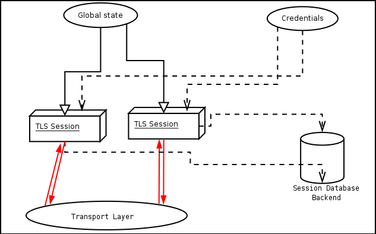As shown in the figure, there is a read-only global state that is initialized once by the global initialization function. This global structure, among others, contains the memory allocation functions used, and some structures needed for the ASN.1 parser. This structure is never modified by any GnuTLS function, except for the deinitialization function which frees all memory allocated in the global structure and is called after the program has permanently finished using GnuTLS.
The credentials structure is used by some authentication methods, such as certificate authentication (see Certificate Authentication). A credentials structure may contain certificates, private keys, temporary parameters for Diffie-Hellman or RSA key exchange, and other stuff that may be shared between several TLS sessions.
This structure should be initialized using the appropriate initialization functions. For example an application which uses certificate authentication would probably initialize the credentials, using the appropriate functions, and put its trusted certificates in this structure. The next step is to associate the credentials structure with each TLS session.
A GnuTLS session contains all the required stuff for a session to handle one secure connection. This session calls directly to the transport layer functions, in order to communicate with the peer. Every session has a unique session ID shared with the peer.
Since TLS sessions can be resumed, servers would probably need a database backend to hold the session’s parameters. Every GnuTLS session after a successful handshake calls the appropriate backend function (See resume, for information on initialization) to store the newly negotiated session. The session database is examined by the server just after having received the client hello6, and if the session ID sent by the client, matches a stored session, the stored session will be retrieved, and the new session will be a resumed one, and will share the same session ID with the previous one.
Next: Memory handling, Previous: General Idea, Up: The Library [Contents][Index]
In GnuTLS most functions return an integer type as a result. In almost all cases a zero or a positive number means success, and a negative number indicates failure, or a situation that some action has to be taken. Thus negative error codes may be fatal or not.
Fatal errors terminate the connection immediately and further sends
and receives will be disallowed. An example of a fatal error code is
GNUTLS_E_DECRYPTION_FAILED. Non-fatal errors may warn about
something, i.e., a warning alert was received, or indicate the some
action has to be taken. This is the case with the error code
GNUTLS_E_REHANDSHAKE returned by gnutls_record_recv.
This error code indicates that the server requests a re-handshake. The
client may ignore this request, or may reply with an alert. You can
test if an error code is a fatal one by using the
gnutls_error_is_fatal.
If any non fatal errors, that require an action, are to be returned by a function, these error codes will be documented in the function’s reference. See Error Codes, for all the error codes.
Next: Callback functions, Previous: Error handling, Up: The Library [Contents][Index]
GnuTLS internally handles heap allocated objects differently, depending on the sensitivity of the data they contain. However for performance reasons, the default memory functions do not overwrite sensitive data from memory, nor protect such objects from being written to the swap. In order to change the default behavior the gnutls_global_set_mem_functions function is available which can be used to set other memory handlers than the defaults.
The Libgcrypt library on which GnuTLS depends, has such secure memory allocation functions available. These should be used in cases where even the system’s swap memory is not considered secure. See the documentation of Libgcrypt for more information.
Previous: Memory handling, Up: The Library [Contents][Index]
There are several cases where GnuTLS may need some out of band input from your program. This is now implemented using some callback functions, which your program is expected to register.
An example of this type of functions are the push and pull callbacks which are used to specify the functions that will retrieve and send data to the transport layer.
Other callback functions such as the one set by gnutls_srp_set_server_credentials_function, may require more complicated input, including data to be allocated. These callbacks should allocate and free memory using the functions shown below.
Next: Authentication methods, Previous: The Library, Up: Top [Contents][Index]
TLS stands for “Transport Layer Security” and is the successor of SSL, the Secure Sockets Layer protocol [SSL3] (see Bibliography) designed by Netscape. TLS is an Internet protocol, defined by IETF7, described in RFC 4346 and also in [RESCORLA] (see Bibliography). The protocol provides confidentiality, and authentication layers over any reliable transport layer. The description, below, refers to TLS 1.0 but also applies to TLS 1.1 [RFC4346] (see Bibliography) and SSL 3.0, since the differences of these protocols are minor. Older protocols such as SSL 2.0 are not discussed nor implemented in GnuTLS since they are not considered secure today. GnuTLS also supports X.509 and OpenPGP [RFC4880] (see Bibliography).
Next: The transport layer, Up: Introduction to TLS [Contents][Index]
TLS is a layered protocol, and consists of the Record Protocol, the Handshake Protocol and the Alert Protocol. The Record Protocol is to serve all other protocols and is above the transport layer. The Record protocol offers symmetric encryption, data authenticity, and optionally compression.
The Alert protocol offers some signaling to the other protocols. It can help informing the peer for the cause of failures and other error conditions. See The Alert Protocol, for more information. The alert protocol is above the record protocol.
The Handshake protocol is responsible for the security parameters’ negotiation, the initial key exchange and authentication. See The Handshake Protocol, for more information about the handshake protocol. The protocol layering in TLS is shown in the figure below.
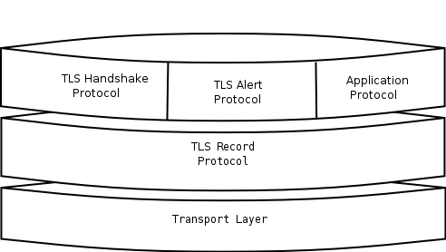Next: The TLS record protocol, Previous: TLS layers, Up: Introduction to TLS [Contents][Index]
TLS is not limited to one transport layer, it can be used above any transport layer, as long as it is a reliable one. A set of functions is provided and their purpose is to load to GnuTLS the required callbacks to access the transport layer.
These functions accept a callback function as a parameter. The
callback functions should return the number of bytes written, or -1 on
error and should set errno appropriately.
In some environments, setting errno is unreliable, for example
Windows have several errno variables in different CRTs, or it may be
that errno is not a thread-local variable. If this is a concern to
you, call gnutls_transport_set_errno with the intended errno
value instead of setting errno directly.
GnuTLS currently only interprets the EINTR and EAGAIN errno
values and returns the corresponding GnuTLS error codes
GNUTLS_E_INTERRUPTED and GNUTLS_E_AGAIN. These values
are usually returned by interrupted system calls, or when non blocking
IO is used. All GnuTLS functions can be resumed (called
again), if any of these error codes is returned. The error codes
above refer to the system call, not the GnuTLS function,
since signals do not interrupt GnuTLS’ functions.
For non blocking sockets or other custom made pull/push functions the gnutls_transport_set_lowat must be called, with a zero low water mark value.
By default, if the transport functions are not set, GnuTLS will use the Berkeley Sockets functions.
Next: The TLS Alert Protocol, Previous: The transport layer, Up: Introduction to TLS [Contents][Index]
The Record protocol is the secure communications provider. Its purpose is to encrypt, authenticate and —optionally— compress packets. The following functions are available:
To send a record packet (with application data).
To receive a record packet (with application data).
To get the direction of the last interrupted function call.
As you may have already noticed, the functions which access the Record protocol, are quite limited, given the importance of this protocol in TLS. This is because the Record protocol’s parameters are all set by the Handshake protocol.
The Record protocol initially starts with NULL parameters, which means no encryption, and no MAC is used. Encryption and authentication begin just after the handshake protocol has finished.
| • Encryption algorithms used in the record layer: | ||
| • Compression algorithms used in the record layer: | ||
| • Weaknesses and countermeasures: | ||
| • On Record Padding: |
Next: Compression algorithms used in the record layer, Up: The TLS record protocol [Contents][Index]
Confidentiality in the record layer is achieved by using symmetric
block encryption algorithms like 3DES, AES8, or stream algorithms like
ARCFOUR_1289. Ciphers are encryption algorithms that use a single, secret,
key to encrypt and decrypt data. Block algorithms in TLS also provide
protection against statistical analysis of the data. Thus, if you’re
using the TLS protocol, a random number of blocks will be
appended to data, to prevent eavesdroppers from guessing the actual
data size.
Supported cipher algorithms:
3DES_CBC3DES_CBC is the DES block cipher algorithm used with triple
encryption (EDE). Has 64 bits block size and is used in CBC mode.
ARCFOUR_128ARCFOUR is a fast stream cipher.
ARCFOUR_40This is the ARCFOUR cipher that is fed with a 40 bit key, which is considered weak.
AES_CBCAES or RIJNDAEL is the block cipher algorithm that replaces the old DES algorithm. Has 128 bits block size and is used in CBC mode.
Supported MAC algorithms:
MAC_MD5MD5 is a cryptographic hash algorithm designed by Ron Rivest. Outputs 128 bits of data.
MAC_SHASHA is a cryptographic hash algorithm designed by NSA. Outputs 160 bits of data.
Next: Weaknesses and countermeasures, Previous: Encryption algorithms used in the record layer, Up: The TLS record protocol [Contents][Index]
The TLS record layer also supports compression. The algorithms implemented in GnuTLS can be found in the table below. All the algorithms except for DEFLATE which is referenced in [RFC3749] (see Bibliography), should be considered as GnuTLS’ extensions10, and should be advertised only when the peer is known to have a compliant client, to avoid interoperability problems.
The included algorithms perform really good when text, or other compressible data are to be transfered, but offer nothing on already compressed data, such as compressed images, zipped archives etc. These compression algorithms, may be useful in high bandwidth TLS tunnels, and in cases where network usage has to be minimized. As a drawback, compression increases latency.
The record layer compression in GnuTLS is implemented based on the proposal [RFC3749] (see Bibliography). The supported compression algorithms are:
DEFLATEZlib compression, using the deflate algorithm.
LZOLZO is a very fast compression algorithm. This algorithm is only available if the GnuTLS-extra library has been initialized and the private extensions are enabled, and if GnuTLS was built with LZO support.
Next: On Record Padding, Previous: Compression algorithms used in the record layer, Up: The TLS record protocol [Contents][Index]
Some weaknesses that may affect the security of the Record layer have been found in TLS 1.0 protocol. These weaknesses can be exploited by active attackers, and exploit the facts that
Those weaknesses were solved in TLS 1.1 [RFC4346] (see Bibliography) which is implemented in GnuTLS. For a detailed discussion see the archives of the TLS Working Group mailing list and the paper [CBCATT] (see Bibliography).
Previous: Weaknesses and countermeasures, Up: The TLS record protocol [Contents][Index]
The TLS protocol allows for random padding of records, to make it more difficult to perform analysis on the length of exchanged messages (RFC 5246 6.2.3.2). GnuTLS appears to be one of few implementation that take advantage of this text, and pad records by a random length.
The TLS implementation in the Symbian operating system, frequently
used by Nokia and Sony-Ericsson mobile phones, cannot handle
non-minimal record padding. What happens when one of these clients
handshake with a GnuTLS server is that the client will fail to compute
the correct MAC for the record. The client sends a TLS alert
(bad_record_mac) and disconnects. Typically this will result
in error messages such as ’A TLS fatal alert has been received’, ’Bad
record MAC’, or both, on the GnuTLS server side.
GnuTLS implements a work around for this problem. However, it has to
be enabled specifically. It can be enabled by using
gnutls_record_disable_padding, or gnutls_priority_set with
the %COMPAT priority string.
If you implement an application that have a configuration file, we recommend that you make it possible for users or administrators to specify a GnuTLS protocol priority string, which is used by your application via gnutls_priority_set. To allow the best flexibility, make it possible to have a different priority string for different incoming IP addresses.
To enable the workaround in the gnutls-cli client or the
gnutls-serv server, for testing of other implementations, use
the following parameter: --priority "NORMAL:%COMPAT".
Next: The TLS Handshake Protocol, Previous: The TLS record protocol, Up: Introduction to TLS [Contents][Index]
The Alert protocol is there to allow signals to be sent between peers.
These signals are mostly used to inform the peer about the cause of a
protocol failure. Some of these signals are used internally by the
protocol and the application protocol does not have to cope with them
(see GNUTLS_A_CLOSE_NOTIFY), and others refer to the
application protocol solely (see GNUTLS_A_USER_CANCELLED). An
alert signal includes a level indication which may be either fatal or
warning. Fatal alerts always terminate the current connection, and
prevent future renegotiations using the current session ID.
The alert messages are protected by the record protocol, thus the information that is included does not leak. You must take extreme care for the alert information not to leak to a possible attacker, via public log files etc.
To send an alert signal.
To map a gnutls error number to an alert signal.
Returns the last received alert.
Returns the name, in a character array, of the given alert.
Next: TLS Extensions, Previous: The TLS Alert Protocol, Up: Introduction to TLS [Contents][Index]
The Handshake protocol is responsible for the ciphersuite negotiation, the initial key exchange, and the authentication of the two peers. This is fully controlled by the application layer, thus your program has to set up the required parameters. Available functions to control the handshake protocol include:
To initialize a priority set of ciphers.
To deinitialize a priority set of ciphers.
To associate a priority set with a TLS session.
To directly associate a session with a given priority string.
To set the appropriate credentials structures.
To set whether client certificate is required or not.
To initiate the handshake.
| • TLS Cipher Suites: | TLS session parameters. | |
| • Priority Strings: | Defining how parameters are negotiated. | |
| • Client Authentication: | Requesting a certificate from the client. | |
| • Resuming Sessions: | Reusing previously established keys. | |
| • Resuming Internals: | More information on reusing previously established keys. | |
| • Interoperability: | About interoperability with other implementations. |
Next: Priority Strings, Up: The TLS Handshake Protocol [Contents][Index]
The Handshake Protocol of TLS negotiates cipher suites of
the form TLS_DHE_RSA_WITH_3DES_CBC_SHA. The usual cipher
suites contain these parameters:
DHE_RSA in the example.
3DES_CBC in this example.
MAC_SHA is used in the above example.
The cipher suite negotiated in the handshake protocol will affect the Record Protocol, by enabling encryption and data authentication. Note that you should not over rely on TLS to negotiate the strongest available cipher suite. Do not enable ciphers and algorithms that you consider weak.
All the supported ciphersuites are shown in ciphersuites.
Next: Client Authentication, Previous: TLS Cipher Suites, Up: The TLS Handshake Protocol [Contents][Index]
In order to specify cipher suite preferences, the previously shown priority functions accept a string that specifies the algorithms to be enabled in a TLS handshake. That string may contain some high level keyword such as:
All the "secure" ciphersuites are enabled, limited to 128 bit ciphers and sorted by terms of speed performance.
Means all "secure" ciphersuites. The 256-bit ciphers are included as a fallback only. The ciphers are sorted by security margin.
Means all "secure" ciphersuites with ciphers up to 128 bits, sorted by security margin.
Means all "secure" ciphersuites including the 256 bit ciphers, sorted by security margin.
Means all ciphersuites are enabled, including the low-security 40 bit ciphers.
Means nothing is enabled. This disables even protocols and compression methods. It should be followed by the algorithms to be enabled.
or it might contain special keywords, that will be explained later on.
Unless the first keyword is "NONE" the defaults (in preference order) are for TLS protocols TLS 1.2, TLS1.1, TLS1.0, SSL3.0; for compression NULL; for certificate types X.509, OpenPGP. For key exchange algorithms when in NORMAL or SECURE levels the perfect forward secrecy algorithms take precedence of the other protocols. In all cases all the supported key exchange algorithms are enabled (except for the RSA-EXPORT which is only enabled in EXPORT level).
The NONE keyword is followed by the algorithms to be enabled, and is used to provide the exact list of requested algorithms12. The order with which every algorithm is specified is significant. Similar algorithms specified before others will take precedence.
Keywords prepended to individual algorithms:
appended with an algorithm will remove this algorithm.
appended with an algorithm will add this algorithm.
Individual algorithms:
AES-128-CBC, AES-256-CBC, CAMELLIA-128-CBC, CAMELLIA-256-CBC, ARCFOUR-128, 3DES-CBC ARCFOUR-40. Catch all name is CIPHER-ALL which will add all the algorithms from NORMAL priority.
RSA, DHE-RSA, DHE-DSS, SRP, SRP-RSA, SRP-DSS, PSK, DHE-PSK, ANON-DH, RSA-EXPORT. The key exchange methods do not have a catch all.
MD5, SHA1, SHA256. All algorithms from NORMAL priority can be accessed with MAC-ALL.
COMP-NULL, COMP-DEFLATE. Catch all is COMP-ALL.
VERS-SSL3.0, VERS-TLS1.0, VERS-TLS1.1, VERS-TLS1.2. Catch all is VERS-TLS-ALL.
SIGN-RSA-SHA1, SIGN-RSA-SHA224, SIGN-RSA-SHA256, SIGN-RSA-SHA384, SIGN-RSA-SHA512, SIGN-DSA-SHA1, SIGN-DSA-SHA224, SIGN-DSA-SHA256, SIGN-RSA-MD5. Catch all is SIGN-ALL. This is only valid for TLS 1.2 and later.
Special keywords:
will enable compatibility mode. It might mean that violations of the protocols are allowed as long as maximum compatibility with problematic clients and servers is achieved.
will disable safe renegotiation completely. Do not use unless you know what you are doing. Testing purposes only.
will allow handshakes and rehandshakes without the safe renegotiation extension. Note that for clients this mode is insecure (you may be under attack), and for servers it will allow insecure clients to connect (which could be fooled by an attacker). Do not use unless you know what you are doing and want maximum compatibility.
will allow initial handshakes to proceed, but not rehandshakes. This leaves the client vulnerable to attack, and servers will be compatible with non-upgraded clients for initial handshakes. This is currently the default for clients and servers, for compatibility reasons.
will enforce safe renegotiation. Clients and servers will refuse to talk to an insecure peer. Currently this causes operability problems, but is required for full protection.
will use SSL3.0 record version in client hello. This is the default.
will use the latest TLS version record version in client hello.
will allow RSA-MD5 signatures in certificate chains.
will allow V1 CAs in chains.
Next: Resuming Sessions, Previous: Priority Strings, Up: The TLS Handshake Protocol [Contents][Index]
In the case of ciphersuites that use certificate authentication, the authentication of the client is optional in TLS. A server may request a certificate from the client — using the gnutls_certificate_server_set_request function. If a certificate is to be requested from the client during the handshake, the server will send a certificate request message that contains a list of acceptable certificate signers. In GnuTLS the certificate signers list is constructed using the trusted Certificate Authorities by the server. That is the ones set using
Sending of the names of the CAs can be controlled using gnutls_certificate_send_x509_rdn_sequence. The client, then, may send a certificate, signed by one of the server’s acceptable signers.
Next: Resuming Internals, Previous: Client Authentication, Up: The TLS Handshake Protocol [Contents][Index]
The gnutls_handshake function, is expensive since a lot of calculations are performed. In order to support many fast connections to the same server a client may use session resuming. Session resuming is a feature of the TLS protocol which allows a client to connect to a server, after a successful handshake, without the expensive calculations. This is achieved by using the previously established keys. GnuTLS supports this feature, and the example (see ex:resume-client) illustrates a typical use of it.
Keep in mind that sessions are expired after some time, for security reasons, thus it may be normal for a server not to resume a session even if you requested that. Also note that you must enable, using the priority functions, at least the algorithms used in the last session.
Next: Interoperability, Previous: Resuming Sessions, Up: The TLS Handshake Protocol [Contents][Index]
The resuming capability, mostly in the server side, is one of the problems of a thread-safe TLS implementations. The problem is that all threads must share information in order to be able to resume sessions. The gnutls approach is, in case of a client, to leave all the burden of resuming to the client. I.e., copy and keep the necessary parameters. See the functions:
The server side is different. A server has to specify some callback functions which store, retrieve and delete session data. These can be registered with:
It might also be useful to be able to check for expired sessions in order to remove them, and save space. The function gnutls_db_check_entry is provided for that reason.
Previous: Resuming Internals, Up: The TLS Handshake Protocol [Contents][Index]
The TLS handshake is a complex procedure that negotiates all required parameters for a secure session. GnuTLS supports several TLS extensions, as well as the latest TLS protocol version 1.2. However few implementations are not able to properly interoperate once faced with extensions or version protocols they do not support and understand. The TLS protocol allows for a graceful downgrade to the commonly supported options, but practice shows it is not always implemented correctly.
Because there is no way to achieve maximum interoperability with broken peers without sacrificing security, GnuTLS ignores such peers by default. This might not be acceptable in cases where maximum compatibility is required. Thus we allow enabling compatibility with broken peers using priority strings (see Priority Strings). An example priority string that is known to provide wide compatibility even with broken peers is shown below:
NORMAL:-VERS-TLS-ALL:+VERS-TLS1.0:+VERS-SSL3.0:%COMPAT
This priority string will only enable SSL 3.0 and TLS 1.0 as protocols and
will disable, via the %COMPAT keyword, several TLS protocol
options that are known to cause compatibility problems.
We suggest however only to use this mode if compatibility issues occur.
Next: Selecting cryptographic key sizes, Previous: The TLS Handshake Protocol, Up: Introduction to TLS [Contents][Index]
A number of extensions to the TLS protocol have been proposed mainly in [TLSEXT] (see Bibliography). The extensions supported in GnuTLS are:
and they will be discussed in the subsections that follow.
This extension allows a TLS implementation to negotiate a smaller value for record packet maximum length. This extension may be useful to clients with constrained capabilities. See the gnutls_record_set_max_size and the gnutls_record_get_max_size functions.
A common problem in HTTPS servers is the fact that the TLS protocol is not aware of the hostname that a client connects to, when the handshake procedure begins. For that reason the TLS server has no way to know which certificate to send.
This extension solves that problem within the TLS protocol, and allows a client to send the HTTP hostname before the handshake begins within the first handshake packet. The functions gnutls_server_name_set and gnutls_server_name_get can be used to enable this extension, or to retrieve the name sent by a client.
To resume a TLS session the server normally store some state. This complicates deployment, and typical situations the client can cache information and send it to the server instead. The Session Ticket extension implements this idea, and it is documented in RFC 5077 [TLSTKT] (see Bibliography).
Clients can enable support for TLS tickets with gnutls_session_ticket_enable_client and servers use gnutls_session_ticket_key_generate to generate a key and gnutls_session_ticket_enable_server to enable the extension. Clients resume sessions using the ticket using the normal session resume functions, resume.
TLS gives the option to two communicating parties to renegotiate and update their security parameters. One useful example of this feature was for a client to initially connect using anonymous negotiation to a server, and the renegotiate using some authenticated ciphersuite. This occured to avoid having the client sending its credentials in the clear.
However this renegotiation, as initially designed would not ensure that the party one is renegotiating is the same as the one in the initial negotiation. For example one server could forward all renegotiation traffic to an other server who will see this traffic as an initial negotiation attempt.
This might be seen as a valid design decision, but it seems it was not widely known or understood, thus today some application protocols the TLS renegotiation feature in a manner that enables a malicious server to insert content of his choice in the beginning of a TLS session.
The most prominent vulnerability was with HTTPS. There servers request a renegotiation to enforce an anonymous user to use a certificate in order to access certain parts of a web site. The attack works by having the attacker simulate a client and connect to a server, with server-only authentication, and send some data intended to cause harm. The server will then require renegotiation from him in order to perform the request. When the proper client attempts to contact the server, the attacker hijacks that connection and forwards traffic to the initial server that requested renegotiation. The attacker will not be able to read the data exchanged between the client and the server. However, the server will (incorrectly) assume that the initial request sent by the attacker was sent by the now authenticated client. The result is a prefix plain-text injection attack.
The above is just one example. Other vulnerabilities exists that do not rely on the TLS renegotiation to change the client’s authenticated status (either TLS or application layer).
While fixing these application protocols and implementations would be one natural reaction, an extension to TLS has been designed that cryptographically binds together any renegotiated handshakes with the initial negotiation. When the extension is used, the attack is detected and the session can be terminated. The extension is specified in [RFC5746] (see Bibliography).
GnuTLS supports the safe renegotiation extension. The default behavior is as follows. Clients will attempt to negotiate the safe renegotiation extension when talking to servers. Servers will accept the extension when presented by clients. Clients and servers will permit an initial handshake to complete even when the other side does not support the safe renegotiation extension. Clients and servers will refuse renegotiation attempts when the extension has not been negotiated.
Note that permitting clients to connect to servers when the safe
renegotiation extension is not enabled, is open up for attacks.
Changing this default behaviour would prevent interoperability against
the majority of deployed servers out there. We will reconsider this
default behaviour in the future when more servers have been upgraded.
Note that it is easy to configure clients to always require the safe
renegotiation extension from servers (see below on the
%SAFE_RENEGOTIATION priority string).
To modify the default behaviour, we have introduced some new priority
strings. The priority strings can be used by applications
(see gnutls_priority_set) and end users (e.g., --priority
parameter to gnutls-cli and gnutls-serv).
The %UNSAFE_RENEGOTIATION priority string permits
(re-)handshakes even when the safe renegotiation extension was not
negotiated. The default behavior is %PARTIAL_RENEGOTIATION that will
prevent renegotiation with clients and servers not supporting the
extension. This is secure for servers but leaves clients vulnerable
to some attacks, but this is a tradeoff between security and compatibility
with old servers. The %SAFE_RENEGOTIATION priority string makes
clients and servers require the extension for every handshake. The latter
is the most secure option for clients, at the cost of not being able
to connect to legacy servers. Servers will also deny clients that
do not support the extension from connecting.
It is possible to disable use of the extension completely, in both
clients and servers, by using the %DISABLE_SAFE_RENEGOTIATION
priority string however we strongly recommend you to only do this for
debugging and test purposes.
The default values if the flags above are not specified are:
Server:%PARTIAL_RENEGOTIATION
Client:%PARTIAL_RENEGOTIATION
For applications we have introduced a new API related to safe renegotiation. The gnutls_safe_renegotiation_status function is used to check if the extension has been negotiated on a session, and can be used both by clients and servers.
Next: On SSL 2 and older protocols, Previous: TLS Extensions, Up: Introduction to TLS [Contents][Index]
In TLS, since a lot of algorithms are involved, it is not easy to set a consistent security level. For this reason this section will present some correspondance between key sizes of symmetric algorithms and public key algorithms based on the “ECRYPT II Yearly Report on Algorithms and Keysizes (2009-2010)” in [ECRYPT] (see Bibliography). Those can be used to generate certificates with appropriate key sizes as well as parameters for Diffie-Hellman and SRP authentication.
| Security bits | RSA, DH and SRP parameter size | ECC key size | gnutls_sec_param_t | Description |
| 64 | 816 | 128 | WEAK | Very short term protection against small organizations |
| 80 | 1248 | 160 | LOW | Very short term protection against agencies |
| 112 | 2432 | 224 | NORMAL | Medium-term protection |
| 128 | 3248 | 256 | HIGH | Long term protection |
| 256 | 15424 | 512 | ULTRA | Foreseeable future |
The first column provides a security parameter in a number of bits. This
gives an indication of the number of combinations to be tried by an adversary
to brute force a key. For example to test all possible keys in a 112 bit security parameter
2^{112} combinations have to be tried. For today’s technology this is infeasible.
The next two columns correlate the security
parameter with actual bit sizes of parameters for DH, RSA, SRP and ECC algorithms.
A mapping to gnutls_sec_param_t value is given for each security parameter, on
the next column, and finally a brief description of the level.
Note however that the values suggested here are nothing more than an educated guess that is valid today. There are no guarrantees that an algorithm will remain unbreakable or that these values will remain constant in time. There could be scientific breakthroughs that cannot be predicted or total failure of the current public key systems by quantum computers. On the other hand though the cryptosystems used in TLS are selected in a conservative way and such catastrophic breakthroughs or failures are believed to be unlikely.
NIST publication SP 800-57 [NISTSP80057] (see Bibliography) contains a similar table.
When using GnuTLS and a decision on bit sizes for a public key algorithm is required, use of the following functions is recommended:
Those functions will convert a human understandable security parameter
of gnutls_sec_param_t type, to a number of bits suitable for a public
key algorithm.
Previous: Selecting cryptographic key sizes, Up: Introduction to TLS [Contents][Index]
One of the initial decisions in the GnuTLS development was to implement the known security protocols for the transport layer. Initially TLS 1.0 was implemented since it was the latest at that time, and was considered to be the most advanced in security properties. Later the SSL 3.0 protocol was implemented since it is still the only protocol supported by several servers and there are no serious security vulnerabilities known.
One question that may arise is why we didn’t implement SSL 2.0 in the library. There are several reasons, most important being that it has serious security flaws, unacceptable for a modern security library. Other than that, this protocol is barely used by anyone these days since it has been deprecated since 1996. The security problems in SSL 2.0 include:
Other protocols such as Microsoft’s PCT 1 and PCT 2 were not implemented because they were also abandoned and deprecated by SSL 3.0 and later TLS 1.0.
Next: More on certificate authentication, Previous: Introduction to TLS, Up: Top [Contents][Index]
The TLS protocol provides confidentiality and encryption, but also offers authentication, which is a prerequisite for a secure connection. The available authentication methods in GnuTLS are:
| • Certificate authentication: | ||
| • Anonymous authentication: | ||
| • Authentication using SRP: | ||
| • Authentication using PSK: | ||
| • Authentication and credentials: | ||
| • Parameters stored in credentials: |
Next: Anonymous authentication, Up: Authentication methods [Contents][Index]
X.509 certificates contain the public parameters, of a public key algorithm, and an authority’s signature, which proves the authenticity of the parameters. See The X.509 trust model, for more information on X.509 protocols.
OpenPGP keys also contain public parameters of a public key algorithm, and signatures from several other parties. Depending on whether a signer is trusted the key is considered trusted or not. GnuTLS’s OpenPGP authentication implementation is based on the [TLSPGP] (see Bibliography) proposal.
See The OpenPGP trust model, for more information about the OpenPGP trust model. For a more detailed introduction to OpenPGP and GnuPG see [GPGH] (see Bibliography).
In GnuTLS both the OpenPGP and X.509 certificates are part of the certificate authentication and thus are handled using a common API.
When using certificates the server is required to have at least one certificate and private key pair. A client may or may not have such a pair. The certificate and key pair should be loaded, before any TLS session is initialized, in a certificate credentials structure. This should be done by using gnutls_certificate_set_x509_key_file or gnutls_certificate_set_openpgp_key_file depending on the certificate type. In the X.509 case, the functions will also accept and use a certificate list that leads to a trusted authority. The certificate list must be ordered in such way that every certificate certifies the one before it. The trusted authority’s certificate need not to be included, since the peer should possess it already.
As an alternative, a callback may be used so the server or the client specify the certificate and the key at the handshake time. That callback can be set using the functions:
Clients and servers that will select certificates using callback functions should select a certificate according the peer’s signature algorithm preferences. To get those preferences use gnutls_sign_algorithm_get_requested.
Certificate verification is possible by loading the trusted authorities into the credentials structure by using gnutls_certificate_set_x509_trust_file or gnutls_certificate_set_openpgp_keyring_file for openpgp keys. Note however that the peer’s certificate is not automatically verified, you should call gnutls_certificate_verify_peers2, after a successful handshake, to verify the signatures of the certificate. An alternative way, which reports a more detailed verification output, is to use gnutls_certificate_get_peers to obtain the raw certificate of the peer and verify it using the functions discussed in The X.509 trust model.
In a handshake, the negotiated cipher suite depends on the
certificate’s parameters, so not all key exchange methods will be
available with some certificates. GnuTLS will disable
ciphersuites that are not compatible with the key, or the enabled
authentication methods. For example keys marked as sign-only, will
not be able to access the plain RSA ciphersuites, but only the
DHE_RSA ones. It is recommended not to use RSA keys for both
signing and encryption. If possible use the same key for the
DHE_RSA and RSA_EXPORT ciphersuites, which use signing,
and a different key for the plain RSA ciphersuites, which use
encryption. All the key exchange methods shown below are available in
certificate authentication.
Note that the DHE key exchange methods are generally
slower13 than plain RSA and require Diffie
Hellman parameters to be generated and associated with a credentials
structure, by the server. The RSA-EXPORT method also requires
512 bit RSA parameters, that should also be generated and associated
with the credentials structure. See the functions:
Sometimes in order to avoid bottlenecks in programs it is useful to
store and read parameters from formats that can be generated by
external programs such as certtool. This is possible with
GnuTLS by using the following functions:
Key exchange algorithms for OpenPGP and X.509 certificates:
RSA:The RSA algorithm is used to encrypt a key and send it to the peer. The certificate must allow the key to be used for encryption.
RSA_EXPORT:The RSA algorithm is used to encrypt a key and send it to the peer. In the EXPORT algorithm, the server signs temporary RSA parameters of 512 bits — which are considered weak — and sends them to the client.
DHE_RSA:The RSA algorithm is used to sign Ephemeral Diffie-Hellman parameters which are sent to the peer. The key in the certificate must allow the key to be used for signing. Note that key exchange algorithms which use Ephemeral Diffie-Hellman parameters, offer perfect forward secrecy. That means that even if the private key used for signing is compromised, it cannot be used to reveal past session data.
DHE_DSS:The DSS algorithm is used to sign Ephemeral Diffie-Hellman parameters which are sent to the peer. The certificate must contain DSA parameters to use this key exchange algorithm. DSS stands for Digital Signature Standard.
Next: Authentication using SRP, Previous: Certificate authentication, Up: Authentication methods [Contents][Index]
The anonymous key exchange performs encryption but there is no indication of the identity of the peer. This kind of authentication is vulnerable to a man in the middle attack, but this protocol can be used even if there is no prior communication and trusted parties with the peer, or when full anonymity is required. Unless really required, do not use anonymous authentication. Available key exchange methods are shown below.
Note that the key exchange methods for anonymous authentication require Diffie-Hellman parameters to be generated by the server and associated with an anonymous credentials structure.
Supported anonymous key exchange algorithms:
ANON_DH:This algorithm exchanges Diffie-Hellman parameters.
Next: Authentication using PSK, Previous: Anonymous authentication, Up: Authentication methods [Contents][Index]
Authentication via the Secure Remote Password protocol, SRP14, is supported. The SRP key exchange is an extension to the TLS protocol, and it is a password based authentication (unlike X.509 or OpenPGP that use certificates). The two peers can be identified using a single password, or there can be combinations where the client is authenticated using SRP and the server using a certificate.
The advantage of SRP authentication, over other proposed secure password authentication schemes, is that SRP does not require the server to hold the user’s password. This kind of protection is similar to the one used traditionally in the UNIX /etc/passwd file, where the contents of this file did not cause harm to the system security if they were revealed. The SRP needs instead of the plain password something called a verifier, which is calculated using the user’s password, and if stolen cannot be used to impersonate the user. Check [TOMSRP] (see Bibliography) for a detailed description of the SRP protocol and the Stanford SRP libraries, which includes a PAM module that synchronizes the system’s users passwords with the SRP password files. That way SRP authentication could be used for all the system’s users.
The implementation in GnuTLS is based on paper [TLSSRP] (see Bibliography). The supported SRP key exchange methods are:
SRP:Authentication using the SRP protocol.
SRP_DSS:Client authentication using the SRP protocol. Server is authenticated using a certificate with DSA parameters.
SRP_RSA:Client authentication using the SRP protocol. Server is authenticated using a certificate with RSA parameters.
If clients supporting SRP know the username and password before the connection, should initialize the client credentials and call the function gnutls_srp_set_client_credentials. Alternatively they could specify a callback function by using the function gnutls_srp_set_client_credentials_function. This has the advantage that allows probing the server for SRP support. In that case the callback function will be called twice per handshake. The first time is before the ciphersuite is negotiated, and if the callback returns a negative error code, the callback will be called again if SRP has been negotiated. This uses a special TLS-SRP handshake idiom in order to avoid, in interactive applications, to ask the user for SRP password and username if the server does not negotiate an SRP ciphersuite.
In server side the default behaviour of GnuTLS is to read the usernames and SRP verifiers from password files. These password files are the ones used by the Stanford srp libraries and can be specified using the gnutls_srp_set_server_credentials_file. If a different password file format is to be used, then the function gnutls_srp_set_server_credentials_function, should be called, in order to set an appropriate callback.
Some helper functions such as
are included in GnuTLS, and can be used to generate and maintain SRP verifiers and password files. A program to manipulate the required parameters for SRP authentication is also included. See srptool, for more information.
Next: Authentication and credentials, Previous: Authentication using SRP, Up: Authentication methods [Contents][Index]
Authentication using Pre-shared keys is a method to authenticate using usernames and binary keys. This protocol avoids making use of public key infrastructure and expensive calculations, thus it is suitable for constraint clients.
The implementation in GnuTLS is based on paper [TLSPSK] (see Bibliography). The supported PSK key exchange methods are:
PSK:Authentication using the PSK protocol.
DHE-PSK:Authentication using the PSK protocol and Diffie-Hellman key exchange. This method offers perfect forward secrecy.
Clients supporting PSK should supply the username and key before the connection to the client credentials by calling the function gnutls_psk_set_client_credentials. Alternatively they could specify a callback function by using the function gnutls_psk_set_client_credentials_function. This has the advantage that the callback will be called only if PSK has been negotiated.
In server side the default behaviour of GnuTLS is to read the usernames and PSK keys from a password file. The password file should contain usernames and keys in hexadecimal format. The name of the password file can be stored to the credentials structure by calling gnutls_psk_set_server_credentials_file. If a different password file format is to be used, then the function gnutls_psk_set_server_credentials_function, should be used instead.
The server can help the client chose a suitable username and password, by sending a hint. In the server, specify the hint by calling gnutls_psk_set_server_credentials_hint. The client can retrieve the hint, for example in the callback function, using gnutls_psk_client_get_hint.
There is no mechanism to derive a PSK key from a password specified by the TLS PSK document15. For password-based authentication check Authentication using SRP.
Some helper functions such as:
are included in GnuTLS, and may be used to generate and maintain PSK keys.
Next: Parameters stored in credentials, Previous: Authentication using PSK, Up: Authentication methods [Contents][Index]
In GnuTLS every key exchange method is associated with a credentials type. So in order to enable to enable a specific method, the corresponding credentials type should be initialized and set using gnutls_credentials_set. A mapping is shown below.
Key exchange algorithms and the corresponding credential types:
| Key exchange | Client credentials | Server credentials |
|---|---|---|
KX_RSA | ||
KX_DHE_RSA | ||
KX_DHE_DSS | ||
KX_RSA_EXPORT | CRD_CERTIFICATE | CRD_CERTIFICATE |
KX_SRP_RSA | CRD_SRP | CRD_SRP |
KX_SRP_DSS | CRD_CERTIFICATE | |
KX_SRP | CRD_SRP | CRD_SRP |
KX_ANON_DH | CRD_ANON | CRD_ANON |
KX_PSK | CRD_PSK | CRD_PSK |
Previous: Authentication and credentials, Up: Authentication methods [Contents][Index]
Several parameters such as the ones used for Diffie-Hellman
authentication are stored within the credentials structures, so all
sessions can access them. Those parameters are stored in structures
such as gnutls_dh_params_t and gnutls_rsa_params_t, and
functions like gnutls_certificate_set_dh_params and
gnutls_certificate_set_rsa_export_params can be used to
associate those parameters with the given credentials structure.
Since those parameters need to be renewed from time to time and a global structure such as the credentials, may not be easy to modify since it is accessible by all sessions, an alternative interface is available using a callback function. This can be set using the gnutls_certificate_set_params_function. An example is shown below.
#include <gnutls.h>
gnutls_rsa_params_t rsa_params;
gnutls_dh_params_t dh_params;
/* This function will be called once a session requests DH
* or RSA parameters. The parameters returned (if any) will
* be used for the first handshake only.
*/
static int get_params( gnutls_session_t session,
gnutls_params_type_t type,
gnutls_params_st *st)
{
if (type == GNUTLS_PARAMS_RSA_EXPORT)
st->params.rsa_export = rsa_params;
else if (type == GNUTLS_PARAMS_DH)
st->params.dh = dh_params;
else return -1;
st->type = type;
/* do not deinitialize those parameters.
*/
st->deinit = 0;
return 0;
}
int main()
{
gnutls_certificate_credentials_t cert_cred;
initialize_params();
/* ...
*/
gnutls_certificate_set_params_function( cert_cred, get_params);
}
Next: How to use TLS in application protocols, Previous: Authentication methods, Up: Top [Contents][Index]
| • The X.509 trust model: | ||
| • The OpenPGP trust model: | ||
| • PKCS #11 tokens: | ||
| • Abstract data types: | ||
| • Digital signatures: |
The X.509 protocols rely on a hierarchical trust model. In this trust model Certification Authorities (CAs) are used to certify entities. Usually more than one certification authorities exist, and certification authorities may certify other authorities to issue certificates as well, following a hierarchical model.
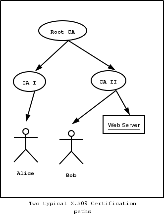One needs to trust one or more CAs for his secure communications. In that case only the certificates issued by the trusted authorities are acceptable. See the figure above for a typical example. The API for handling X.509 certificates is described at section sec:x509api. Some examples are listed below.
| • X.509 certificates: | ||
| • Verifying X.509 certificate paths: | ||
| • PKCS #10 certificate requests: | ||
| • PKCS #12 structures: |
Next: Verifying X.509 certificate paths, Up: The X.509 trust model [Contents][Index]
An X.509 certificate usually contains information about the certificate holder, the signer, a unique serial number, expiration dates and some other fields [PKIX] (see Bibliography) as shown in the table below.
version:The field that indicates the version of the certificate.
serialNumber:This field holds a unique serial number per certificate.
issuer:Holds the issuer’s distinguished name.
validity:The activation and expiration dates.
subject:The subject’s distinguished name of the certificate.
extensions:The extensions are fields only present in version 3 certificates.
The certificate’s subject or issuer name is not just a single string. It is a Distinguished name and in the ASN.1 notation is a sequence of several object IDs with their corresponding values. Some of available OIDs to be used in an X.509 distinguished name are defined in gnutls/x509.h.
The Version field in a certificate has values either 1 or 3 for version 3 certificates. Version 1 certificates do not support the extensions field so it is not possible to distinguish a CA from a person, thus their usage should be avoided.
The validity dates are there to indicate the date that the specific certificate was activated and the date the certificate’s key would be considered invalid.
Certificate extensions are there to include information about the certificate’s subject that did not fit in the typical certificate fields. Those may be e-mail addresses, flags that indicate whether the belongs to a CA etc. All the supported X.509 version 3 extensions are shown in the table below.
subject key id (2.5.29.14):An identifier of the key of the subject.
authority key id (2.5.29.35):An identifier of the authority’s key used to sign the certificate.
subject alternative name (2.5.29.17):Alternative names to subject’s distinguished name.
key usage (2.5.29.15):Constraints the key’s usage of the certificate.
extended key usage (2.5.29.37):Constraints the purpose of the certificate.
basic constraints (2.5.29.19):Indicates whether this is a CA certificate or not, and specify the maximum path lengths of certificate chains.
CRL distribution points (2.5.29.31):This extension is set by the CA, in order to inform about the issued CRLs.
Proxy Certification Information (1.3.6.1.5.5.7.1.14):Proxy Certificates includes this extension that contains the OID of the proxy policy language used, and can specify limits on the maximum lengths of proxy chains. Proxy Certificates are specified in [RFC3820] (see Bibliography).
In GnuTLS the X.509 certificate structures are
handled using the gnutls_x509_crt_t type and the corresponding
private keys with the gnutls_x509_privkey_t type. All the
available functions for X.509 certificate handling have
their prototypes in gnutls/x509.h. An example program to
demonstrate the X.509 parsing capabilities can be found at
section ex:x509-info.
Next: PKCS #10 certificate requests, Previous: X.509 certificates, Up: The X.509 trust model [Contents][Index]
Verifying certificate paths is important in X.509
authentication. For this purpose the function
gnutls_x509_crt_verify is provided. The output of this function
is the bitwise OR of the elements of the
gnutls_certificate_status_t enumeration. A detailed
description of these elements can be found in figure below. The
function gnutls_certificate_verify_peers2 is equivalent to the
previous one, and will verify the peer’s certificate in a TLS session.
GNUTLS_CERT_INVALID:The certificate is not signed by one of the known authorities, or the signature is invalid.
GNUTLS_CERT_REVOKED:The certificate has been revoked by its CA.
GNUTLS_CERT_SIGNER_NOT_FOUND:The certificate’s issuer is not known. This is the case when the issuer is not in the trusted certificates list.
GNUTLS_CERT_SIGNER_NOT_CA:The certificate’s signer was not a CA. This may happen if this was a version 1 certificate, which is common with some CAs, or a version 3 certificate without the basic constrains extension.
GNUTLS_CERT_INSECURE_ALGORITHM:The certificate was signed using an insecure algorithm such as MD2 or MD5. These algorithms have been broken and should not be trusted.
There is also to possibility to pass some input to the verification functions in the form of flags. For gnutls_x509_crt_verify the flags are passed straightforward, but gnutls_certificate_verify_peers2 depends on the flags set by calling gnutls_certificate_set_verify_flags. All the available flags are part of the enumeration gnutls_certificate_verify_flags and are explained in the table below.
GNUTLS_VERIFY_DISABLE_CA_SIGN:If set a signer does not have to be a certificate authority. This flag should normaly be disabled, unless you know what this means.
GNUTLS_VERIFY_ALLOW_X509_V1_CA_CRT:Allow only trusted CA certificates that have version 1. This is safer than GNUTLS_VERIFY_ALLOW_ANY_X509_V1_CA_CRT, and should be used instead. That way only signers in your trusted list will be allowed to have certificates of version 1.
GNUTLS_VERIFY_ALLOW_ANY_X509_V1_CA_CRT:Allow CA certificates that have version 1 (both root and intermediate). This is dangerous since those haven’t the basicConstraints extension. Must be used in combination with GNUTLS_VERIFY_ALLOW_X509_V1_CA_CRT.
GNUTLS_VERIFY_DO_NOT_ALLOW_SAME:If a certificate is not signed by anyone trusted but exists in the trusted CA list do not treat it as trusted.
GNUTLS_VERIFY_ALLOW_SIGN_RSA_MD2:Allow certificates to be signed using the old MD2 algorithm.
GNUTLS_VERIFY_ALLOW_SIGN_RSA_MD5:Allow certificates to be signed using the broken MD5 algorithm.
Although the verification of a certificate path indicates that the certificate is signed by trusted authority, does not reveal anything about the peer’s identity. It is required to verify if the certificate’s owner is the one you expect. For more information consult [RFC2818] (see Bibliography) and section ex:verify for an example.
Next: PKCS #12 structures, Previous: Verifying X.509 certificate paths, Up: The X.509 trust model [Contents][Index]
A certificate request is a structure, which contain information about an applicant of a certificate service. It usually contains a private key, a distinguished name and secondary data such as a challenge password. GnuTLS supports the requests defined in PKCS #10 [RFC2986] (see Bibliography). Other certificate request’s format such as PKIX’s [RFC4211] (see Bibliography) are not currently supported.
In GnuTLS the PKCS #10 structures are handled
using the gnutls_x509_crq_t type. An example of a certificate
request generation can be found at section ex:crq.
Previous: PKCS #10 certificate requests, Up: The X.509 trust model [Contents][Index]
A PKCS #12 structure [PKCS12] (see Bibliography) usually contains a user’s private keys and certificates. It is commonly used in browsers to export and import the user’s identities.
In GnuTLS the PKCS #12 structures are handled
using the gnutls_pkcs12_t type. This is an abstract type that
may hold several gnutls_pkcs12_bag_t types. The Bag types are
the holders of the actual data, which may be certificates, private
keys or encrypted data. An Bag of type encrypted should be decrypted
in order for its data to be accessed.
An example of a PKCS #12 structure generation can be found at section ex:pkcs12.
Next: PKCS #11 tokens, Previous: The X.509 trust model, Up: More on certificate authentication [Contents][Index]
The OpenPGP key authentication relies on a distributed trust model, called the “web of trust”. The “web of trust” uses a decentralized system of trusted introducers, which are the same as a CA. OpenPGP allows anyone to sign anyone’s else public key. When Alice signs Bob’s key, she is introducing Bob’s key to anyone who trusts Alice. If someone trusts Alice to introduce keys, then Alice is a trusted introducer in the mind of that observer.
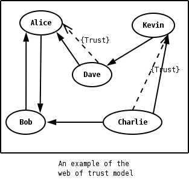For example: If David trusts Alice to be an introducer, and Alice signed Bob’s key, Dave also trusts Bob’s key to be the real one.
There are some key points that are important in that model. In the example Alice has to sign Bob’s key, only if she is sure that the key belongs to Bob. Otherwise she may also make Dave falsely believe that this is Bob’s key. Dave has also the responsibility to know who to trust. This model is similar to real life relations.
Just see how Charlie behaves in the previous example. Although he has signed Bob’s key - because he knows, somehow, that it belongs to Bob - he does not trust Bob to be an introducer. Charlie decided to trust only Kevin, for some reason. A reason could be that Bob is lazy enough, and signs other people’s keys without being sure that they belong to the actual owner.
In GnuTLS the OpenPGP key structures
[RFC2440] (see Bibliography) are handled using the gnutls_openpgp_crt_t type
and the corresponding private keys with the
gnutls_openpgp_privkey_t type. All the prototypes for the key
handling functions can be found at gnutls/openpgp.h.
The verification functions of OpenPGP keys, included in GnuTLS, are simple ones, and do not use the features of the “web of trust”. For that reason, if the verification needs are complex, the assistance of external tools like GnuPG and GPGME (http://www.gnupg.org/related_software/gpgme/) is recommended.
There is one verification function in GnuTLS, the gnutls_openpgp_crt_verify_ring. This checks an OpenPGP key against a given set of public keys (keyring) and returns the key status. The key verification status is the same as in X.509 certificates, although the meaning and interpretation are different. For example an OpenPGP key may be valid, if the self signature is ok, even if no signers were found. The meaning of verification status is shown in the figure below.
CERT_INVALID:A signature on the key is invalid. That means that the key was modified by somebody, or corrupted during transport.
CERT_REVOKED:The key has been revoked by its owner.
CERT_SIGNER_NOT_FOUND:The key was not signed by a known signer.
GNUTLS_CERT_INSECURE_ALGORITHM:The certificate was signed using an insecure algorithm such as MD2 or MD5. These algorithms have been broken and should not be trusted.
Next: Abstract data types, Previous: The OpenPGP trust model, Up: More on certificate authentication [Contents][Index]
This section copes with the PKCS #11 [PKCS11] (see Bibliography) support in GnuTLS. PKCS #11 is plugin API allowing applications to access cryptographic operations on a token, as well as to objects residing on the token. A token can be a real hardware token such as a smart card, or it can be a software component such as Gnome Keyring. The objects residing on such token can be certificates, public keys, private keys or even plain data or secret keys. Of those certificates and public/private key pairs can be used with GnuTLS. Its main advantage is that it allows operations on private key objects such as decryption and signing without accessing the key itself.
Moreover it can be used to allow all applications in the same operating system to access shared cryptographic keys and certificates in a uniform way, as in the following picture.
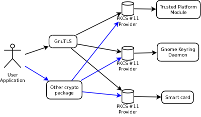To allow all the GnuTLS applications to access PKCS #11 tokens
you can use a configuration per module, such as /etc/pkcs11/modules/mymodule.conf.
This file has the following format:
module: /usr/lib/opensc-pkcs11.so
If you use this file, then there is no need for other initialization in GnuTLS, except for the PIN and token functions. Those allow retrieving a PIN when accessing a protected object, such as a private key, as well as probe the user to insert the token. All the initialization functions are below.
Note that due to limitations of PKCS #11 there might be issues when multiple libraries are sharing a module. If this is the case we suggest to use p11-kit16 that provides an intermediate module to control access to resources over the multiple users.
All PKCS #11 objects are referenced by GnuTLS functions by
URLs as described in draft-pechanec-pkcs11uri-03. For example a public
key on a smart card may be referenced as:
pkcs11:token=Nikos;serial=307521161601031;model=PKCS%2315; \ manufacturer=EnterSafe;object=test1;objecttype=public;\ id=32:f1:53:f3:e3:79:90:b0:86:24:14:10:77:ca:5d:ec:2d:15:fa:ed
while the smart card itself can be referenced as:
pkcs11:token=Nikos;serial=307521161601031;model=PKCS%2315;manufacturer=EnterSafe
Objects can be accessed with the following functions
Functions that relate to token handling are shown below
The following example will list all tokens.
int i;
char* url;
gnutls_global_init();
for (i=0;;i++) {
ret = gnutls_pkcs11_token_get_url(i, &url);
if (ret == GNUTLS_E_REQUESTED_DATA_NOT_AVAILABLE)
break;
if (ret < 0)
exit(1);
fprintf(stdout, "Token[%d]: URL: %s\n", i, url);
gnutls_free(url);
}
gnutls_global_deinit();
The next one will list all certificates in a token, that have a corresponding private key:
gnutls_pkcs11_obj_t *obj_list;
unsigned int obj_list_size = 0;
gnutls_datum_t cinfo;
int i;
obj_list_size = 0;
ret = gnutls_pkcs11_obj_list_import_url( obj_list, NULL, url, \
GNUTLS_PKCS11_OBJ_ATTR_CRT_WITH_PRIVKEY);
if (ret < 0 && ret != GNUTLS_E_SHORT_MEMORY_BUFFER)
exit(1);
/* no error checking from now on */
obj_list = malloc(sizeof(*obj_list)*obj_list_size);
gnutls_pkcs11_obj_list_import_url( obj_list, &obj_list_size, url, flags);
/* now all certificates are in obj_list */
for (i=0;i<obj_list_size;i++) {
gnutls_x509_crt_init(&xcrt);
gnutls_x509_crt_import_pkcs11(xcrt, obj_list[i]);
gnutls_x509_crt_print (xcrt, GNUTLS_CRT_PRINT_FULL, &cinfo);
fprintf(stdout, "cert[%d]:\n %s\n\n", cinfo.data);
gnutls_free(cinfo.data);
gnutls_x509_crt_deinit(&xcrt);
}
With GnuTLS you can copy existing private keys and certificates to a token. This can be achieved with the following functions
It is possible to use a PKCS #11 token to a TLS session, as shown in ex:pkcs11-client. In addition the following functions can be used to load PKCS #11 key and certificates.
Next: Digital signatures, Previous: PKCS #11 tokens, Up: More on certificate authentication [Contents][Index]
Since there are many forms of a public or private keys supported by GnuTLS such as
X.509, OpenPGP, or PKCS #11 it is desirable to allow common operations
on them. For these reasons the abstract gnutls_privkey_t and gnutls_pubkey_t were
introduced in gnutls/abstract.h header. Those types are initialized using a specific type of key and then can be used to
perform operations in an abstract way. For example in order for someone to sign an X.509 certificate
with a key that resides in a smart he has to follow the steps below:
#inlude <gnutls/abstract.h>
#inlude <gnutls/pkcs11.h>
void sign_cert( gnutls_x509_crt_t to_be_signed)
{
gnutls_pkcs11_privkey_t ca_key;
gnutls_x509_crt_t ca_cert;
gnutls_privkey_t abs_key;
/* load the PKCS #11 key and certificates */
gnutls_pkcs11_privkey_init(&ca_key);
gnutls_pkcs11_privkey_import_url(ca_key, key_url);
gnutls_x509_crt_init(&ca_cert);
gnutls_x509_crt_import_pkcs11_url(&ca_cert, cert_url);
/* initialize the abstract key */
gnutls_privkey_init(&abs_key);
gnutls_privkey_import_pkcs11(abs_key, ca_key);
/* sign the certificate to be signed */
gnutls_x509_crt_privkey_sign(to_be_signed, ca_cert, ca_key, GNUTLS_DIG_SHA1, 0);
}
Previous: Abstract data types, Up: More on certificate authentication [Contents][Index]
In this section we will provide some information about digital signatures, how they work, and give the rationale for disabling some of the algorithms used.
Digital signatures work by using somebody’s secret key to sign some arbitrary data. Then anybody else could use the public key of that person to verify the signature. Since the data may be arbitrary it is not suitable input to a cryptographic digital signature algorithm. For this reason and also for performance cryptographic hash algorithms are used to preprocess the input to the signature algorithm. This works as long as it is difficult enough to generate two different messages with the same hash algorithm output. In that case the same signature could be used as a proof for both messages. Nobody wants to sign an innocent message of donating 1 euro to Greenpeace and find out that he donated 1.000.000 euros to Bad Inc.
For a hash algorithm to be called cryptographic the following three requirements must hold:
The last two requirements in the list are the most important in digital signatures. These protect against somebody who would like to generate two messages with the same hash output. When an algorithm is considered broken usually it means that the Collision resistance of the algorithm is less than brute force. Using the birthday paradox the brute force attack takes 2^{((hash size) / 2)} operations. Today colliding certificates using the MD5 hash algorithm have been generated as shown in [WEGER] (see Bibliography).
There has been cryptographic results for the SHA-1 hash algorithms as well, although they are not yet critical. Before 2004, MD5 had a presumed collision strength of 2^{64}, but it has been showed to have a collision strength well under 2^{50}. As of November 2005, it is believed that SHA-1’s collision strength is around 2^{63}. We consider this sufficiently hard so that we still support SHA-1. We anticipate that SHA-256/386/512 will be used in publicly-distributed certificates in the future. When 2^{63} can be considered too weak compared to the computer power available sometime in the future, SHA-1 will be disabled as well. The collision attacks on SHA-1 may also get better, given the new interest in tools for creating them.
If you connect to a server and use GnuTLS’ functions to verify the
certificate chain, and get a GNUTLS_CERT_INSECURE_ALGORITHM
validation error (see Verifying X.509 certificate paths), it means
that somewhere in the certificate chain there is a certificate signed
using RSA-MD2 or RSA-MD5. These two digital signature
algorithms are considered broken, so GnuTLS fail when attempting to
verify the certificate. In some situations, it may be useful to be
able to verify the certificate chain anyway, assuming an attacker did
not utilize the fact that these signatures algorithms are broken.
This section will give help on how to achieve that.
First, it is important to know that you do not have to enable any of
the flags discussed here to be able to use trusted root CA
certificates signed using RSA-MD2 or RSA-MD5. The only
attack today is that it is possible to generate certificates with
colliding signatures (collision resistance); you cannot generate a
certificate that has the same signature as an already existing
signature (2nd preimage resistance).
If you are using gnutls_certificate_verify_peers2 to verify the
certificate chain, you can call
gnutls_certificate_set_verify_flags with the
GNUTLS_VERIFY_ALLOW_SIGN_RSA_MD2 or
GNUTLS_VERIFY_ALLOW_SIGN_RSA_MD5 flag, as in:
gnutls_certificate_set_verify_flags (x509cred,
GNUTLS_VERIFY_ALLOW_SIGN_RSA_MD5);
This will tell the verifier algorithm to enable RSA-MD5 when
verifying the certificates.
If you are using gnutls_x509_crt_verify or
gnutls_x509_crt_list_verify, you can pass the
GNUTLS_VERIFY_ALLOW_SIGN_RSA_MD5 parameter directly in the
flags parameter.
If you are using these flags, it may also be a good idea to warn the
user when verification failure occur for this reason. The simplest is
to not use the flags by default, and only fall back to using them
after warning the user. If you wish to inspect the certificate chain
yourself, you can use gnutls_certificate_get_peers to extract
the raw server’s certificate chain, then use
gnutls_x509_crt_import to parse each of the certificates, and
then use gnutls_x509_crt_get_signature_algorithm to find out the
signing algorithm used for each certificate. If any of the
intermediary certificates are using GNUTLS_SIGN_RSA_MD2 or
GNUTLS_SIGN_RSA_MD5, you could present a warning.
Next: How to use GnuTLS in applications, Previous: More on certificate authentication, Up: Top [Contents][Index]
This chapter is intended to provide some hints on how to use the TLS over simple custom made application protocols. The discussion below mainly refers to the TCP/IP transport layer but may be extended to other ones too.
| • Separate ports: | ||
| • Upward negotiation: |
Traditionally SSL was used in application protocols by assigning a new port number for the secure services. That way two separate ports were assigned, one for the non secure sessions, and one for the secured ones. This has the benefit that if a user requests a secure session then the client will try to connect to the secure port and fail otherwise. The only possible attack with this method is a denial of service one. The most famous example of this method is the famous “HTTP over TLS” or HTTPS protocol [RFC2818] (see Bibliography).
Despite its wide use, this method is not as good as it seems. This approach starts the TLS Handshake procedure just after the client connects on the —so called— secure port. That way the TLS protocol does not know anything about the client, and popular methods like the host advertising in HTTP do not work17. There is no way for the client to say “I connected to YYY server” before the Handshake starts, so the server cannot possibly know which certificate to use.
Other than that it requires two separate ports to run a single service, which is unnecessary complication. Due to the fact that there is a limitation on the available privileged ports, this approach was soon obsoleted.
Previous: Separate ports, Up: How to use TLS in application protocols [Contents][Index]
Other application protocols18 use a different approach to enable the secure layer. They use something called the “TLS upgrade” method. This method is quite tricky but it is more flexible. The idea is to extend the application protocol to have a “STARTTLS” request, whose purpose it to start the TLS protocols just after the client requests it. This is a really neat idea and does not require an extra port.
This method is used by almost all modern protocols and there is even the [RFC2817] (see Bibliography) paper which proposes extensions to HTTP to support it.
The tricky part, in this method, is that the “STARTTLS” request is sent in the clear, thus is vulnerable to modifications. A typical attack is to modify the messages in a way that the client is fooled and thinks that the server does not have the “STARTTLS” capability. See a typical conversation of a hypothetical protocol:
(client connects to the server)
CLIENT: HELLO I’M MR. XXX
SERVER: NICE TO MEET YOU XXX
CLIENT: PLEASE START TLS
SERVER: OK
*** TLS STARTS
CLIENT: HERE ARE SOME CONFIDENTIAL DATA
And see an example of a conversation where someone is acting in between:
(client connects to the server)
CLIENT: HELLO I’M MR. XXX
SERVER: NICE TO MEET YOU XXX
CLIENT: PLEASE START TLS
(here someone inserts this message)
SERVER: SORRY I DON’T HAVE THIS CAPABILITY
CLIENT: HERE ARE SOME CONFIDENTIAL DATA
As you can see above the client was fooled, and was dummy enough to send the confidential data in the clear.
How to avoid the above attack? As you may have already thought this one is easy to avoid. The client has to ask the user before it connects whether the user requests TLS or not. If the user answered that he certainly wants the secure layer the last conversation should be:
(client connects to the server)
CLIENT: HELLO I’M MR. XXX
SERVER: NICE TO MEET YOU XXX
CLIENT: PLEASE START TLS
(here someone inserts this message)
SERVER: SORRY I DON’T HAVE THIS CAPABILITY
CLIENT: BYE
(the client notifies the user that the secure connection was not possible)
This method, if implemented properly, is far better than the traditional method, and the security properties remain the same, since only denial of service is possible. The benefit is that the server may request additional data before the TLS Handshake protocol starts, in order to send the correct certificate, use the correct password file19, or anything else!
Next: Included programs, Previous: How to use TLS in application protocols, Up: Top [Contents][Index]
To use GnuTLS, you have to perform some changes to your sources and your build system. The necessary changes are explained in the following subsections.
| • Headers: | ||
| • Initialization: | ||
| • Version check: | ||
| • Debugging: | ||
| • Building the source: |
Next: Initialization, Up: Preparation [Contents][Index]
All the data types and functions of the GnuTLS library are defined in the header file gnutls/gnutls.h. This must be included in all programs that make use of the GnuTLS library.
The extra functionality of the GnuTLS-extra library is available by including the header file gnutls/extra.h in your programs.
Next: Version check, Previous: Headers, Up: Preparation [Contents][Index]
GnuTLS must be initialized before it can be used. The library is initialized by calling gnutls_global_init. The resources allocated by the initialization process can be released if the application no longer has a need to call GnuTLS functions, this is done by calling gnutls_global_deinit.
The extra functionality of the GnuTLS-extra library is available after calling gnutls_global_init_extra.
In order to take advantage of the internationalisation features in
GnuTLS, such as translated error messages, the application must set
the current locale using setlocale before initializing GnuTLS.
Next: Debugging, Previous: Initialization, Up: Preparation [Contents][Index]
It is often desirable to check that the version of ‘gnutls’ used is indeed one which fits all requirements. Even with binary compatibility new features may have been introduced but due to problem with the dynamic linker an old version is actually used. So you may want to check that the version is okay right after program startup. See the function gnutls_check_version.
Next: Building the source, Previous: Version check, Up: Preparation [Contents][Index]
In many cases things may not go as expected and further information, to assist debugging, from GnuTLS is desired. Those are the case where the gnutls_global_set_log_level and gnutls_global_set_log_function are to be used. Those will print verbose information on the GnuTLS functions internal flow.
Previous: Debugging, Up: Preparation [Contents][Index]
If you want to compile a source file including the gnutls/gnutls.h header file, you must make sure that the compiler can find it in the directory hierarchy. This is accomplished by adding the path to the directory in which the header file is located to the compilers include file search path (via the -I option).
However, the path to the include file is determined at the time the
source is configured. To solve this problem, the library uses the
external package pkg-config that knows the path to the
include file and other configuration options. The options that need
to be added to the compiler invocation at compile time are output by
the --cflags option to pkg-config gnutls. The
following example shows how it can be used at the command line:
gcc -c foo.c `pkg-config gnutls --cflags`
Adding the output of ‘pkg-config gnutls --cflags’ to the compilers command line will ensure that the compiler can find the gnutls/gnutls.h header file.
A similar problem occurs when linking the program with the library.
Again, the compiler has to find the library files. For this to work,
the path to the library files has to be added to the library search
path (via the -L option). For this, the option
--libs to pkg-config gnutls can be used. For
convenience, this option also outputs all other options that are
required to link the program with the libarary (for instance, the
‘-ltasn1’ option). The example shows how to link foo.o
with the library to a program foo.
gcc -o foo foo.o `pkg-config gnutls --libs`
Of course you can also combine both examples to a single command by
specifying both options to pkg-config:
gcc -o foo foo.c `pkg-config gnutls --cflags --libs`
Next: Client examples, Previous: Preparation, Up: How to use GnuTLS in applications [Contents][Index]
Although the GnuTLS library is thread safe by design, some
parts of the cryptographic backend, such as the random generator, are not.
Applications can either call gnutls_global_init and use the default
operating system provided locks (i.e. pthreads on GNU/Linux), or
specify manualy the locking system using the function gnutls_global_set_mutex
before calling gnutls_global_init. Setting manually mutexes is recommended
only to applications that have full control of the underlying libraries. If this
is not the case, the use of the operating system defaults is recommended.
There are helper macros to help you properly initialize the libraries. Examples are shown below.
#include <gnutls.h>
#include <errno.h>
#include <pthread.h>
int main()
{
gnutls_global_init();
}
int main()
{
gnutls_global_mutex_set (mutex_init, mutex_deinit, mutex_lock, mutex_unlock);
gnutls_global_init();
}
Next: Server examples, Previous: Multi-threaded applications, Up: How to use GnuTLS in applications [Contents][Index]
This section contains examples of TLS and SSL clients, using GnuTLS. Note that these examples contain little or no error checking. Some of the examples require functions implemented by another example.
The simplest client using TLS is the one that doesn’t do any authentication. This means no external certificates or passwords are needed to set up the connection. As could be expected, the connection is vulnerable to man-in-the-middle (active or redirection) attacks. However, the data is integrity and privacy protected.
/* This example code is placed in the public domain. */
#ifdef HAVE_CONFIG_H
#include <config.h>
#endif
#include <stdio.h>
#include <stdlib.h>
#include <string.h>
#include <sys/types.h>
#include <sys/socket.h>
#include <arpa/inet.h>
#include <unistd.h>
#include <gnutls/gnutls.h>
/* A very basic TLS client, with anonymous authentication.
*/
#define MAX_BUF 1024
#define MSG "GET / HTTP/1.0\r\n\r\n"
extern int tcp_connect (void);
extern void tcp_close (int sd);
int
main (void)
{
int ret, sd, ii;
gnutls_session_t session;
char buffer[MAX_BUF + 1];
gnutls_anon_client_credentials_t anoncred;
/* Need to enable anonymous KX specifically. */
gnutls_global_init ();
gnutls_anon_allocate_client_credentials (&anoncred);
/* Initialize TLS session
*/
gnutls_init (&session, GNUTLS_CLIENT);
/* Use default priorities */
gnutls_priority_set_direct (session, "PERFORMANCE:+ANON-DH:!ARCFOUR-128",
NULL);
/* put the anonymous credentials to the current session
*/
gnutls_credentials_set (session, GNUTLS_CRD_ANON, anoncred);
/* connect to the peer
*/
sd = tcp_connect ();
gnutls_transport_set_ptr (session, (gnutls_transport_ptr_t) sd);
/* Perform the TLS handshake
*/
ret = gnutls_handshake (session);
if (ret < 0)
{
fprintf (stderr, "*** Handshake failed\n");
gnutls_perror (ret);
goto end;
}
else
{
printf ("- Handshake was completed\n");
}
gnutls_record_send (session, MSG, strlen (MSG));
ret = gnutls_record_recv (session, buffer, MAX_BUF);
if (ret == 0)
{
printf ("- Peer has closed the TLS connection\n");
goto end;
}
else if (ret < 0)
{
fprintf (stderr, "*** Error: %s\n", gnutls_strerror (ret));
goto end;
}
printf ("- Received %d bytes: ", ret);
for (ii = 0; ii < ret; ii++)
{
fputc (buffer[ii], stdout);
}
fputs ("\n", stdout);
gnutls_bye (session, GNUTLS_SHUT_RDWR);
end:
tcp_close (sd);
gnutls_deinit (session);
gnutls_anon_free_client_credentials (anoncred);
gnutls_global_deinit ();
return 0;
}
Next: Obtaining session information, Previous: Simple client example with anonymous authentication, Up: Client examples [Contents][Index]
Let’s assume now that we want to create a TCP client which communicates with servers that use X.509 or OpenPGP certificate authentication. The following client is a very simple TLS client, it does not support session resuming, not even certificate verification. The TCP functions defined in this example are used in most of the other examples below, without redefining them.
/* This example code is placed in the public domain. */
#ifdef HAVE_CONFIG_H
#include <config.h>
#endif
#include <stdio.h>
#include <stdlib.h>
#include <string.h>
#include <sys/types.h>
#include <sys/socket.h>
#include <arpa/inet.h>
#include <unistd.h>
#include <gnutls/gnutls.h>
/* A very basic TLS client, with X.509 authentication.
*/
#define MAX_BUF 1024
#define CAFILE "ca.pem"
#define MSG "GET / HTTP/1.0\r\n\r\n"
extern int tcp_connect (void);
extern void tcp_close (int sd);
int
main (void)
{
int ret, sd, ii;
gnutls_session_t session;
char buffer[MAX_BUF + 1];
const char *err;
gnutls_certificate_credentials_t xcred;
gnutls_global_init ();
/* X509 stuff */
gnutls_certificate_allocate_credentials (&xcred);
/* sets the trusted cas file
*/
gnutls_certificate_set_x509_trust_file (xcred, CAFILE, GNUTLS_X509_FMT_PEM);
/* Initialize TLS session
*/
gnutls_init (&session, GNUTLS_CLIENT);
/* Use default priorities */
ret = gnutls_priority_set_direct (session, "PERFORMANCE", &err);
if (ret < 0)
{
if (ret == GNUTLS_E_INVALID_REQUEST)
{
fprintf (stderr, "Syntax error at: %s\n", err);
}
exit (1);
}
/* put the x509 credentials to the current session
*/
gnutls_credentials_set (session, GNUTLS_CRD_CERTIFICATE, xcred);
/* connect to the peer
*/
sd = tcp_connect ();
gnutls_transport_set_ptr (session, (gnutls_transport_ptr_t) sd);
/* Perform the TLS handshake
*/
ret = gnutls_handshake (session);
if (ret < 0)
{
fprintf (stderr, "*** Handshake failed\n");
gnutls_perror (ret);
goto end;
}
else
{
printf ("- Handshake was completed\n");
}
gnutls_record_send (session, MSG, strlen (MSG));
ret = gnutls_record_recv (session, buffer, MAX_BUF);
if (ret == 0)
{
printf ("- Peer has closed the TLS connection\n");
goto end;
}
else if (ret < 0)
{
fprintf (stderr, "*** Error: %s\n", gnutls_strerror (ret));
goto end;
}
printf ("- Received %d bytes: ", ret);
for (ii = 0; ii < ret; ii++)
{
fputc (buffer[ii], stdout);
}
fputs ("\n", stdout);
gnutls_bye (session, GNUTLS_SHUT_RDWR);
end:
tcp_close (sd);
gnutls_deinit (session);
gnutls_certificate_free_credentials (xcred);
gnutls_global_deinit ();
return 0;
}
Next: Verifying peer's certificate, Previous: Simple client example with X.509 certificate support, Up: Client examples [Contents][Index]
Most of the times it is desirable to know the security properties of the current established session. This includes the underlying ciphers and the protocols involved. That is the purpose of the following function. Note that this function will print meaningful values only if called after a successful gnutls_handshake.
/* This example code is placed in the public domain. */
#ifdef HAVE_CONFIG_H
#include <config.h>
#endif
#include <stdio.h>
#include <stdlib.h>
#include <gnutls/gnutls.h>
#include <gnutls/x509.h>
#include "examples.h"
/* This function will print some details of the
* given session.
*/
int
print_info (gnutls_session_t session)
{
const char *tmp;
gnutls_credentials_type_t cred;
gnutls_kx_algorithm_t kx;
/* print the key exchange's algorithm name
*/
kx = gnutls_kx_get (session);
tmp = gnutls_kx_get_name (kx);
printf ("- Key Exchange: %s\n", tmp);
/* Check the authentication type used and switch
* to the appropriate.
*/
cred = gnutls_auth_get_type (session);
switch (cred)
{
case GNUTLS_CRD_IA:
printf ("- TLS/IA session\n");
break;
#ifdef ENABLE_SRP
case GNUTLS_CRD_SRP:
printf ("- SRP session with username %s\n",
gnutls_srp_server_get_username (session));
break;
#endif
case GNUTLS_CRD_PSK:
/* This returns NULL in server side.
*/
if (gnutls_psk_client_get_hint (session) != NULL)
printf ("- PSK authentication. PSK hint '%s'\n",
gnutls_psk_client_get_hint (session));
/* This returns NULL in client side.
*/
if (gnutls_psk_server_get_username (session) != NULL)
printf ("- PSK authentication. Connected as '%s'\n",
gnutls_psk_server_get_username (session));
break;
case GNUTLS_CRD_ANON: /* anonymous authentication */
printf ("- Anonymous DH using prime of %d bits\n",
gnutls_dh_get_prime_bits (session));
break;
case GNUTLS_CRD_CERTIFICATE: /* certificate authentication */
/* Check if we have been using ephemeral Diffie-Hellman.
*/
if (kx == GNUTLS_KX_DHE_RSA || kx == GNUTLS_KX_DHE_DSS)
{
printf ("\n- Ephemeral DH using prime of %d bits\n",
gnutls_dh_get_prime_bits (session));
}
/* if the certificate list is available, then
* print some information about it.
*/
print_x509_certificate_info (session);
} /* switch */
/* print the protocol's name (ie TLS 1.0)
*/
tmp = gnutls_protocol_get_name (gnutls_protocol_get_version (session));
printf ("- Protocol: %s\n", tmp);
/* print the certificate type of the peer.
* ie X.509
*/
tmp =
gnutls_certificate_type_get_name (gnutls_certificate_type_get (session));
printf ("- Certificate Type: %s\n", tmp);
/* print the compression algorithm (if any)
*/
tmp = gnutls_compression_get_name (gnutls_compression_get (session));
printf ("- Compression: %s\n", tmp);
/* print the name of the cipher used.
* ie 3DES.
*/
tmp = gnutls_cipher_get_name (gnutls_cipher_get (session));
printf ("- Cipher: %s\n", tmp);
/* Print the MAC algorithms name.
* ie SHA1
*/
tmp = gnutls_mac_get_name (gnutls_mac_get (session));
printf ("- MAC: %s\n", tmp);
return 0;
}
Next: Using a callback to select the certificate to use, Previous: Obtaining session information, Up: Client examples [Contents][Index]
A TLS session is not secure just after the handshake procedure has finished. It must be considered secure, only after the peer’s certificate and identity have been verified. That is, you have to verify the signature in peer’s certificate, the hostname in the certificate, and expiration dates. Just after this step you should treat the connection as being a secure one.
/* This example code is placed in the public domain. */
#ifdef HAVE_CONFIG_H
#include <config.h>
#endif
#include <stdio.h>
#include <stdlib.h>
#include <string.h>
#include <gnutls/gnutls.h>
#include <gnutls/x509.h>
#include "examples.h"
/* A very basic TLS client, with X.509 authentication and server certificate
* verification.
*/
#define MAX_BUF 1024
#define CAFILE "ca.pem"
#define MSG "GET / HTTP/1.0\r\n\r\n"
extern int tcp_connect (void);
extern void tcp_close (int sd);
/* This function will try to verify the peer's certificate, and
* also check if the hostname matches, and the activation, expiration dates.
*/
static int
verify_certificate_callback (gnutls_session_t session)
{
unsigned int status;
const gnutls_datum_t *cert_list;
unsigned int cert_list_size;
int ret;
gnutls_x509_crt_t cert;
const char *hostname;
/* read hostname */
hostname = gnutls_session_get_ptr (session);
/* This verification function uses the trusted CAs in the credentials
* structure. So you must have installed one or more CA certificates.
*/
ret = gnutls_certificate_verify_peers2 (session, &status);
if (ret < 0)
{
printf ("Error\n");
return GNUTLS_E_CERTIFICATE_ERROR;
}
if (status & GNUTLS_CERT_INVALID)
printf ("The certificate is not trusted.\n");
if (status & GNUTLS_CERT_SIGNER_NOT_FOUND)
printf ("The certificate hasn't got a known issuer.\n");
if (status & GNUTLS_CERT_REVOKED)
printf ("The certificate has been revoked.\n");
if (status & GNUTLS_CERT_EXPIRED)
printf ("The certificate has expired\n");
if (status & GNUTLS_CERT_NOT_ACTIVATED)
printf ("The certificate is not yet activated\n");
/* Up to here the process is the same for X.509 certificates and
* OpenPGP keys. From now on X.509 certificates are assumed. This can
* be easily extended to work with openpgp keys as well.
*/
if (gnutls_certificate_type_get (session) != GNUTLS_CRT_X509)
return GNUTLS_E_CERTIFICATE_ERROR;
if (gnutls_x509_crt_init (&cert) < 0)
{
printf ("error in initialization\n");
return GNUTLS_E_CERTIFICATE_ERROR;
}
cert_list = gnutls_certificate_get_peers (session, &cert_list_size);
if (cert_list == NULL)
{
printf ("No certificate was found!\n");
return GNUTLS_E_CERTIFICATE_ERROR;
}
/* This is not a real world example, since we only check the first
* certificate in the given chain.
*/
if (gnutls_x509_crt_import (cert, &cert_list[0], GNUTLS_X509_FMT_DER) < 0)
{
printf ("error parsing certificate\n");
return GNUTLS_E_CERTIFICATE_ERROR;
}
if (!gnutls_x509_crt_check_hostname (cert, hostname))
{
printf ("The certificate's owner does not match hostname '%s'\n",
hostname);
return GNUTLS_E_CERTIFICATE_ERROR;
}
gnutls_x509_crt_deinit (cert);
/* notify gnutls to continue handshake normally */
return 0;
}
int
main (void)
{
int ret, sd, ii;
gnutls_session_t session;
char buffer[MAX_BUF + 1];
const char *err;
gnutls_certificate_credentials_t xcred;
gnutls_global_init ();
/* X509 stuff */
gnutls_certificate_allocate_credentials (&xcred);
/* sets the trusted cas file
*/
gnutls_certificate_set_x509_trust_file (xcred, CAFILE, GNUTLS_X509_FMT_PEM);
gnutls_certificate_set_verify_function (xcred, verify_certificate_callback);
gnutls_certificate_set_verify_flags (xcred,
GNUTLS_VERIFY_ALLOW_X509_V1_CA_CRT);
/* Initialize TLS session
*/
gnutls_init (&session, GNUTLS_CLIENT);
gnutls_session_set_ptr (session, (void *) "my_host_name");
/* Use default priorities */
ret = gnutls_priority_set_direct (session, "PERFORMANCE", &err);
if (ret < 0)
{
if (ret == GNUTLS_E_INVALID_REQUEST)
{
fprintf (stderr, "Syntax error at: %s\n", err);
}
exit (1);
}
/* put the x509 credentials to the current session
*/
gnutls_credentials_set (session, GNUTLS_CRD_CERTIFICATE, xcred);
/* connect to the peer
*/
sd = tcp_connect ();
gnutls_transport_set_ptr (session, (gnutls_transport_ptr_t) sd);
/* Perform the TLS handshake
*/
ret = gnutls_handshake (session);
if (ret < 0)
{
fprintf (stderr, "*** Handshake failed\n");
gnutls_perror (ret);
goto end;
}
else
{
printf ("- Handshake was completed\n");
}
gnutls_record_send (session, MSG, strlen (MSG));
ret = gnutls_record_recv (session, buffer, MAX_BUF);
if (ret == 0)
{
printf ("- Peer has closed the TLS connection\n");
goto end;
}
else if (ret < 0)
{
fprintf (stderr, "*** Error: %s\n", gnutls_strerror (ret));
goto end;
}
printf ("- Received %d bytes: ", ret);
for (ii = 0; ii < ret; ii++)
{
fputc (buffer[ii], stdout);
}
fputs ("\n", stdout);
gnutls_bye (session, GNUTLS_SHUT_RDWR);
end:
tcp_close (sd);
gnutls_deinit (session);
gnutls_certificate_free_credentials (xcred);
gnutls_global_deinit ();
return 0;
}
Another example is listed below which provides more detailed verification output, for applications that need it.
/* This example code is placed in the public domain. */
#ifdef HAVE_CONFIG_H
#include <config.h>
#endif
#include <stdio.h>
#include <stdlib.h>
#include <gnutls/gnutls.h>
#include <gnutls/x509.h>
#include "examples.h"
/* All the available CRLs
*/
gnutls_x509_crl_t *crl_list;
int crl_list_size;
/* All the available trusted CAs
*/
gnutls_x509_crt_t *ca_list;
int ca_list_size;
static void verify_cert2 (gnutls_x509_crt_t crt,
gnutls_x509_crt_t issuer,
gnutls_x509_crl_t * crl_list, int crl_list_size);
static void verify_last_cert (gnutls_x509_crt_t crt,
gnutls_x509_crt_t * ca_list, int ca_list_size,
gnutls_x509_crl_t * crl_list,
int crl_list_size);
/* This function will try to verify the peer's certificate chain, and
* also check if the hostname matches, and the activation, expiration dates.
*/
void
verify_certificate_chain (gnutls_session_t session,
const char *hostname,
const gnutls_datum_t * cert_chain,
int cert_chain_length)
{
int i;
gnutls_x509_crt_t *cert;
cert = malloc (sizeof (*cert) * cert_chain_length);
/* Import all the certificates in the chain to
* native certificate format.
*/
for (i = 0; i < cert_chain_length; i++)
{
gnutls_x509_crt_init (&cert[i]);
gnutls_x509_crt_import (cert[i], &cert_chain[i], GNUTLS_X509_FMT_DER);
}
/* If the last certificate in the chain is self signed ignore it.
* That is because we want to check against our trusted certificate
* list.
*/
if (gnutls_x509_crt_check_issuer (cert[cert_chain_length - 1],
cert[cert_chain_length - 1]) > 0
&& cert_chain_length > 0)
{
cert_chain_length--;
}
/* Now verify the certificates against their issuers
* in the chain.
*/
for (i = 1; i < cert_chain_length; i++)
{
verify_cert2 (cert[i - 1], cert[i], crl_list, crl_list_size);
}
/* Here we must verify the last certificate in the chain against
* our trusted CA list.
*/
verify_last_cert (cert[cert_chain_length - 1],
ca_list, ca_list_size, crl_list, crl_list_size);
/* Check if the name in the first certificate matches our destination!
*/
if (!gnutls_x509_crt_check_hostname (cert[0], hostname))
{
printf ("The certificate's owner does not match hostname '%s'\n",
hostname);
}
for (i = 0; i < cert_chain_length; i++)
gnutls_x509_crt_deinit (cert[i]);
return;
}
/* Verifies a certificate against an other certificate
* which is supposed to be it's issuer. Also checks the
* crl_list if the certificate is revoked.
*/
static void
verify_cert2 (gnutls_x509_crt_t crt, gnutls_x509_crt_t issuer,
gnutls_x509_crl_t * crl_list, int crl_list_size)
{
unsigned int output;
int ret;
size_t name_size;
char name[64];
/* Print information about the certificates to
* be checked.
*/
name_size = sizeof (name);
gnutls_x509_crt_get_dn (crt, name, &name_size);
fprintf (stderr, "\nCertificate: %s\n", name);
name_size = sizeof (name);
gnutls_x509_crt_get_issuer_dn (crt, name, &name_size);
fprintf (stderr, "Issued by: %s\n", name);
/* Get the DN of the issuer cert.
*/
name_size = sizeof (name);
gnutls_x509_crt_get_dn (issuer, name, &name_size);
fprintf (stderr, "Checking against: %s\n", name);
/* Do the actual verification.
*/
gnutls_x509_crt_verify (crt, &issuer, 1, 0, &output);
if (output & GNUTLS_CERT_INVALID)
{
fprintf (stderr, "Not trusted");
if (output & GNUTLS_CERT_SIGNER_NOT_FOUND)
fprintf (stderr, ": no issuer was found");
if (output & GNUTLS_CERT_SIGNER_NOT_CA)
fprintf (stderr, ": issuer is not a CA");
if (output & GNUTLS_CERT_NOT_ACTIVATED)
fprintf (stderr, ": not yet activated\n");
if (output & GNUTLS_CERT_EXPIRED)
fprintf (stderr, ": expired\n");
fprintf (stderr, "\n");
}
else
fprintf (stderr, "Trusted\n");
/* Check if the certificate is revoked.
*/
ret = gnutls_x509_crt_check_revocation (crt, crl_list, crl_list_size);
if (ret == 1)
{ /* revoked */
fprintf (stderr, "Revoked\n");
}
}
/* Verifies a certificate against our trusted CA list.
* Also checks the crl_list if the certificate is revoked.
*/
static void
verify_last_cert (gnutls_x509_crt_t crt,
gnutls_x509_crt_t * ca_list, int ca_list_size,
gnutls_x509_crl_t * crl_list, int crl_list_size)
{
unsigned int output;
int ret;
size_t name_size;
char name[64];
/* Print information about the certificates to
* be checked.
*/
name_size = sizeof (name);
gnutls_x509_crt_get_dn (crt, name, &name_size);
fprintf (stderr, "\nCertificate: %s\n", name);
name_size = sizeof (name);
gnutls_x509_crt_get_issuer_dn (crt, name, &name_size);
fprintf (stderr, "Issued by: %s\n", name);
/* Do the actual verification.
*/
gnutls_x509_crt_verify (crt, ca_list, ca_list_size,
GNUTLS_VERIFY_ALLOW_X509_V1_CA_CRT, &output);
if (output & GNUTLS_CERT_INVALID)
{
fprintf (stderr, "Not trusted");
if (output & GNUTLS_CERT_SIGNER_NOT_CA)
fprintf (stderr, ": Issuer is not a CA\n");
if (output & GNUTLS_CERT_NOT_ACTIVATED)
fprintf (stderr, ": Not yet activated\n");
if (output & GNUTLS_CERT_EXPIRED)
fprintf (stderr, ": Expired\n");
fprintf (stderr, "\n");
}
else
fprintf (stderr, "Trusted\n");
/* Check if the certificate is revoked.
*/
ret = gnutls_x509_crt_check_revocation (crt, crl_list, crl_list_size);
if (ret == 1)
{ /* revoked */
fprintf (stderr, "Revoked\n");
}
}
Next: Client using a PKCS #11 token with TLS, Previous: Verifying peer's certificate, Up: Client examples [Contents][Index]
There are cases where a client holds several certificate and key pairs, and may not want to load all of them in the credentials structure. The following example demonstrates the use of the certificate selection callback.
/* This example code is placed in the public domain. */
#ifdef HAVE_CONFIG_H
#include <config.h>
#endif
#include <stdio.h>
#include <stdlib.h>
#include <string.h>
#include <sys/types.h>
#include <sys/socket.h>
#include <arpa/inet.h>
#include <unistd.h>
#include <gnutls/gnutls.h>
#include <gnutls/x509.h>
#include <sys/types.h>
#include <sys/stat.h>
#include <fcntl.h>
/* A TLS client that loads the certificate and key.
*/
#define MAX_BUF 1024
#define MSG "GET / HTTP/1.0\r\n\r\n"
#define CERT_FILE "cert.pem"
#define KEY_FILE "key.pem"
#define CAFILE "ca.pem"
extern int tcp_connect (void);
extern void tcp_close (int sd);
static int cert_callback (gnutls_session_t session,
const gnutls_datum_t * req_ca_rdn, int nreqs,
const gnutls_pk_algorithm_t * sign_algos,
int sign_algos_length, gnutls_retr2_st * st);
gnutls_x509_crt_t crt;
gnutls_x509_privkey_t key;
/* Helper functions to load a certificate and key
* files into memory.
*/
static gnutls_datum_t
load_file (const char *file)
{
FILE *f;
gnutls_datum_t loaded_file = { NULL, 0 };
long filelen;
void *ptr;
if (!(f = fopen (file, "r"))
|| fseek (f, 0, SEEK_END) != 0
|| (filelen = ftell (f)) < 0
|| fseek (f, 0, SEEK_SET) != 0
|| !(ptr = malloc ((size_t) filelen))
|| fread (ptr, 1, (size_t) filelen, f) < (size_t) filelen)
{
return loaded_file;
}
loaded_file.data = ptr;
loaded_file.size = (unsigned int) filelen;
return loaded_file;
}
static void
unload_file (gnutls_datum_t data)
{
free (data.data);
}
/* Load the certificate and the private key.
*/
static void
load_keys (void)
{
int ret;
gnutls_datum_t data;
data = load_file (CERT_FILE);
if (data.data == NULL)
{
fprintf (stderr, "*** Error loading cert file.\n");
exit (1);
}
gnutls_x509_crt_init (&crt);
ret = gnutls_x509_crt_import (crt, &data, GNUTLS_X509_FMT_PEM);
if (ret < 0)
{
fprintf (stderr, "*** Error loading key file: %s\n",
gnutls_strerror (ret));
exit (1);
}
unload_file (data);
data = load_file (KEY_FILE);
if (data.data == NULL)
{
fprintf (stderr, "*** Error loading key file.\n");
exit (1);
}
gnutls_x509_privkey_init (&key);
ret = gnutls_x509_privkey_import (key, &data, GNUTLS_X509_FMT_PEM);
if (ret < 0)
{
fprintf (stderr, "*** Error loading key file: %s\n",
gnutls_strerror (ret));
exit (1);
}
unload_file (data);
}
int
main (void)
{
int ret, sd, ii;
gnutls_session_t session;
gnutls_priority_t priorities_cache;
char buffer[MAX_BUF + 1];
gnutls_certificate_credentials_t xcred;
/* Allow connections to servers that have OpenPGP keys as well.
*/
gnutls_global_init ();
load_keys ();
/* X509 stuff */
gnutls_certificate_allocate_credentials (&xcred);
/* priorities */
gnutls_priority_init (&priorities_cache, "NORMAL", NULL);
/* sets the trusted cas file
*/
gnutls_certificate_set_x509_trust_file (xcred, CAFILE, GNUTLS_X509_FMT_PEM);
gnutls_certificate_set_retrieve_function (xcred, cert_callback);
/* Initialize TLS session
*/
gnutls_init (&session, GNUTLS_CLIENT);
/* Use default priorities */
gnutls_priority_set (session, priorities_cache);
/* put the x509 credentials to the current session
*/
gnutls_credentials_set (session, GNUTLS_CRD_CERTIFICATE, xcred);
/* connect to the peer
*/
sd = tcp_connect ();
gnutls_transport_set_ptr (session, (gnutls_transport_ptr_t) sd);
/* Perform the TLS handshake
*/
ret = gnutls_handshake (session);
if (ret < 0)
{
fprintf (stderr, "*** Handshake failed\n");
gnutls_perror (ret);
goto end;
}
else
{
printf ("- Handshake was completed\n");
}
gnutls_record_send (session, MSG, strlen (MSG));
ret = gnutls_record_recv (session, buffer, MAX_BUF);
if (ret == 0)
{
printf ("- Peer has closed the TLS connection\n");
goto end;
}
else if (ret < 0)
{
fprintf (stderr, "*** Error: %s\n", gnutls_strerror (ret));
goto end;
}
printf ("- Received %d bytes: ", ret);
for (ii = 0; ii < ret; ii++)
{
fputc (buffer[ii], stdout);
}
fputs ("\n", stdout);
gnutls_bye (session, GNUTLS_SHUT_RDWR);
end:
tcp_close (sd);
gnutls_deinit (session);
gnutls_certificate_free_credentials (xcred);
gnutls_priority_deinit (priorities_cache);
gnutls_global_deinit ();
return 0;
}
/* This callback should be associated with a session by calling
* gnutls_certificate_client_set_retrieve_function( session, cert_callback),
* before a handshake.
*/
static int
cert_callback (gnutls_session_t session,
const gnutls_datum_t * req_ca_rdn, int nreqs,
const gnutls_pk_algorithm_t * sign_algos,
int sign_algos_length, gnutls_retr2_st * st)
{
char issuer_dn[256];
int i, ret;
size_t len;
gnutls_certificate_type_t type;
/* Print the server's trusted CAs
*/
if (nreqs > 0)
printf ("- Server's trusted authorities:\n");
else
printf ("- Server did not send us any trusted authorities names.\n");
/* print the names (if any) */
for (i = 0; i < nreqs; i++)
{
len = sizeof (issuer_dn);
ret = gnutls_x509_rdn_get (&req_ca_rdn[i], issuer_dn, &len);
if (ret >= 0)
{
printf (" [%d]: ", i);
printf ("%s\n", issuer_dn);
}
}
/* Select a certificate and return it.
* The certificate must be of any of the "sign algorithms"
* supported by the server.
*/
type = gnutls_certificate_type_get (session);
if (type == GNUTLS_CRT_X509)
{
/* check if the certificate we are sending is signed
* with an algorithm that the server accepts */
gnutls_sign_algorithm_t cert_algo, req_algo;
int i, match = 0;
ret = gnutls_x509_crt_get_signature_algorithm (crt);
if (ret < 0)
{
/* error reading signature algorithm
*/
return -1;
}
cert_algo = ret;
i = 0;
do
{
ret = gnutls_sign_algorithm_get_requested (session, i, &req_algo);
if (ret >= 0 && cert_algo == req_algo)
{
match = 1;
break;
}
/* server has not requested anything specific */
if (i == 0 && ret == GNUTLS_E_REQUESTED_DATA_NOT_AVAILABLE)
{
match = 1;
break;
}
i++;
}
while (ret >= 0);
if (match == 0)
{
printf
("- Could not find a suitable certificate to send to server\n");
return -1;
}
st->cert_type = type;
st->ncerts = 1;
st->cert.x509 = &crt;
st->key.x509 = key;
st->key_type = GNUTLS_PRIVKEY_X509;
st->deinit_all = 0;
}
else
{
return -1;
}
return 0;
}
Next: Client with Resume capability example, Previous: Using a callback to select the certificate to use, Up: Client examples [Contents][Index]
This example will demonstrate how to load keys and certificates from a PKCS #11 token, and use it with a TLS connection.
/* This example code is placed in the public domain. */
#ifdef HAVE_CONFIG_H
#include <config.h>
#endif
#include <getpass.h>
#include <stdio.h>
#include <stdlib.h>
#include <string.h>
#include <sys/types.h>
#include <sys/socket.h>
#include <arpa/inet.h>
#include <unistd.h>
#include <gnutls/gnutls.h>
#include <gnutls/x509.h>
#include <gnutls/pkcs11.h>
#include <sys/types.h>
#include <sys/stat.h>
#include <fcntl.h>
/* A TLS client that loads the certificate and key.
*/
#define MAX_BUF 1024
#define MSG "GET / HTTP/1.0\r\n\r\n"
#define MIN(x,y) (((x)<(y))?(x):(y))
#define CAFILE "ca.pem"
#define KEY_URL "pkcs11:manufacturer=SomeManufacturer;object=Private%20Key" \
";objecttype=private;id=db:5b:3e:b5:72:33"
#define CERT_URL "pkcs11:manufacturer=SomeManufacturer;object=Certificate;" \
"objecttype=cert;id=db:5b:3e:b5:72:33"
extern int tcp_connect (void);
extern void tcp_close (int sd);
static int cert_callback (gnutls_session_t session,
const gnutls_datum_t * req_ca_rdn, int nreqs,
const gnutls_pk_algorithm_t * sign_algos,
int sign_algos_length, gnutls_retr2_st * st);
gnutls_x509_crt_t crt;
gnutls_pkcs11_privkey_t key;
/* Load the certificate and the private key.
*/
static void
load_keys (void)
{
int ret;
gnutls_x509_crt_init (&crt);
ret = gnutls_x509_crt_import_pkcs11_url (crt, CERT_URL, 0);
/* some tokens require login to read data */
if (ret == GNUTLS_E_REQUESTED_DATA_NOT_AVAILABLE)
ret = gnutls_x509_crt_import_pkcs11_url (crt, CERT_URL,
GNUTLS_PKCS11_OBJ_FLAG_LOGIN);
if (ret < 0)
{
fprintf (stderr, "*** Error loading key file: %s\n",
gnutls_strerror (ret));
exit (1);
}
gnutls_pkcs11_privkey_init (&key);
ret = gnutls_pkcs11_privkey_import_url (key, KEY_URL, 0);
if (ret < 0)
{
fprintf (stderr, "*** Error loading key file: %s\n",
gnutls_strerror (ret));
exit (1);
}
}
static int
pin_callback (void *user, int attempt, const char *token_url,
const char *token_label, unsigned int flags, char *pin,
size_t pin_max)
{
const char *password;
int len;
printf ("PIN required for token '%s' with URL '%s'\n", token_label,
token_url);
if (flags & GNUTLS_PKCS11_PIN_FINAL_TRY)
printf ("*** This is the final try before locking!\n");
if (flags & GNUTLS_PKCS11_PIN_COUNT_LOW)
printf ("*** Only few tries left before locking!\n");
password = getpass ("Enter pin: ");
if (password == NULL || password[0] == 0)
{
fprintf (stderr, "No password given\n");
exit (1);
}
len = MIN (pin_max, strlen (password));
memcpy (pin, password, len);
pin[len] = 0;
return 0;
}
int
main (void)
{
int ret, sd, ii;
gnutls_session_t session;
gnutls_priority_t priorities_cache;
char buffer[MAX_BUF + 1];
gnutls_certificate_credentials_t xcred;
/* Allow connections to servers that have OpenPGP keys as well.
*/
gnutls_global_init ();
/* PKCS11 private key operations might require PIN.
* Register a callback.
*/
gnutls_pkcs11_set_pin_function (pin_callback, NULL);
load_keys ();
/* X509 stuff */
gnutls_certificate_allocate_credentials (&xcred);
/* priorities */
gnutls_priority_init (&priorities_cache, "NORMAL", NULL);
/* sets the trusted cas file
*/
gnutls_certificate_set_x509_trust_file (xcred, CAFILE, GNUTLS_X509_FMT_PEM);
gnutls_certificate_set_retrieve_function (xcred, cert_callback);
/* Initialize TLS session
*/
gnutls_init (&session, GNUTLS_CLIENT);
/* Use default priorities */
gnutls_priority_set (session, priorities_cache);
/* put the x509 credentials to the current session
*/
gnutls_credentials_set (session, GNUTLS_CRD_CERTIFICATE, xcred);
/* connect to the peer
*/
sd = tcp_connect ();
gnutls_transport_set_ptr (session, (gnutls_transport_ptr_t) sd);
/* Perform the TLS handshake
*/
ret = gnutls_handshake (session);
if (ret < 0)
{
fprintf (stderr, "*** Handshake failed\n");
gnutls_perror (ret);
goto end;
}
else
{
printf ("- Handshake was completed\n");
}
gnutls_record_send (session, MSG, strlen (MSG));
ret = gnutls_record_recv (session, buffer, MAX_BUF);
if (ret == 0)
{
printf ("- Peer has closed the TLS connection\n");
goto end;
}
else if (ret < 0)
{
fprintf (stderr, "*** Error: %s\n", gnutls_strerror (ret));
goto end;
}
printf ("- Received %d bytes: ", ret);
for (ii = 0; ii < ret; ii++)
{
fputc (buffer[ii], stdout);
}
fputs ("\n", stdout);
gnutls_bye (session, GNUTLS_SHUT_RDWR);
end:
tcp_close (sd);
gnutls_deinit (session);
gnutls_certificate_free_credentials (xcred);
gnutls_priority_deinit (priorities_cache);
gnutls_global_deinit ();
return 0;
}
/* This callback should be associated with a session by calling
* gnutls_certificate_client_set_retrieve_function( session, cert_callback),
* before a handshake.
*/
static int
cert_callback (gnutls_session_t session,
const gnutls_datum_t * req_ca_rdn, int nreqs,
const gnutls_pk_algorithm_t * sign_algos,
int sign_algos_length, gnutls_retr2_st * st)
{
char issuer_dn[256];
int i, ret;
size_t len;
gnutls_certificate_type_t type;
/* Print the server's trusted CAs
*/
if (nreqs > 0)
printf ("- Server's trusted authorities:\n");
else
printf ("- Server did not send us any trusted authorities names.\n");
/* print the names (if any) */
for (i = 0; i < nreqs; i++)
{
len = sizeof (issuer_dn);
ret = gnutls_x509_rdn_get (&req_ca_rdn[i], issuer_dn, &len);
if (ret >= 0)
{
printf (" [%d]: ", i);
printf ("%s\n", issuer_dn);
}
}
/* Select a certificate and return it.
* The certificate must be of any of the "sign algorithms"
* supported by the server.
*/
type = gnutls_certificate_type_get (session);
if (type == GNUTLS_CRT_X509)
{
/* check if the certificate we are sending is signed
* with an algorithm that the server accepts */
gnutls_sign_algorithm_t cert_algo, req_algo;
int i, match = 0;
ret = gnutls_x509_crt_get_signature_algorithm (crt);
if (ret < 0)
{
/* error reading signature algorithm
*/
return -1;
}
cert_algo = ret;
i = 0;
do
{
ret = gnutls_sign_algorithm_get_requested (session, i, &req_algo);
if (ret >= 0 && cert_algo == req_algo)
{
match = 1;
break;
}
/* server has not requested anything specific */
if (i == 0 && ret == GNUTLS_E_REQUESTED_DATA_NOT_AVAILABLE)
{
match = 1;
break;
}
i++;
}
while (ret >= 0);
if (match == 0)
{
printf
("- Could not find a suitable certificate to send to server\n");
return -1;
}
st->cert_type = type;
st->ncerts = 1;
st->cert.x509 = &crt;
st->key.pkcs11 = key;
st->key_type = GNUTLS_PRIVKEY_PKCS11;
st->deinit_all = 0;
}
else
{
return -1;
}
return 0;
}
Next: Simple client example with SRP authentication, Previous: Client using a PKCS #11 token with TLS, Up: Client examples [Contents][Index]
This is a modification of the simple client example. Here we demonstrate the use of session resumption. The client tries to connect once using TLS, close the connection and then try to establish a new connection using the previously negotiated data.
/* This example code is placed in the public domain. */
#ifdef HAVE_CONFIG_H
#include <config.h>
#endif
#include <string.h>
#include <stdio.h>
#include <stdlib.h>
#include <gnutls/gnutls.h>
/* Those functions are defined in other examples.
*/
extern void check_alert (gnutls_session_t session, int ret);
extern int tcp_connect (void);
extern void tcp_close (int sd);
#define MAX_BUF 1024
#define CAFILE "ca.pem"
#define MSG "GET / HTTP/1.0\r\n\r\n"
int
main (void)
{
int ret;
int sd, ii;
gnutls_session_t session;
char buffer[MAX_BUF + 1];
gnutls_certificate_credentials_t xcred;
/* variables used in session resuming
*/
int t;
char *session_data = NULL;
size_t session_data_size = 0;
gnutls_global_init ();
/* X509 stuff */
gnutls_certificate_allocate_credentials (&xcred);
gnutls_certificate_set_x509_trust_file (xcred, CAFILE, GNUTLS_X509_FMT_PEM);
for (t = 0; t < 2; t++)
{ /* connect 2 times to the server */
sd = tcp_connect ();
gnutls_init (&session, GNUTLS_CLIENT);
gnutls_priority_set_direct (session, "PERFORMANCE:!ARCFOUR-128", NULL);
gnutls_credentials_set (session, GNUTLS_CRD_CERTIFICATE, xcred);
if (t > 0)
{
/* if this is not the first time we connect */
gnutls_session_set_data (session, session_data, session_data_size);
free (session_data);
}
gnutls_transport_set_ptr (session, (gnutls_transport_ptr_t) sd);
/* Perform the TLS handshake
*/
ret = gnutls_handshake (session);
if (ret < 0)
{
fprintf (stderr, "*** Handshake failed\n");
gnutls_perror (ret);
goto end;
}
else
{
printf ("- Handshake was completed\n");
}
if (t == 0)
{ /* the first time we connect */
/* get the session data size */
gnutls_session_get_data (session, NULL, &session_data_size);
session_data = malloc (session_data_size);
/* put session data to the session variable */
gnutls_session_get_data (session, session_data, &session_data_size);
}
else
{ /* the second time we connect */
/* check if we actually resumed the previous session */
if (gnutls_session_is_resumed (session) != 0)
{
printf ("- Previous session was resumed\n");
}
else
{
fprintf (stderr, "*** Previous session was NOT resumed\n");
}
}
/* This function was defined in a previous example
*/
/* print_info(session); */
gnutls_record_send (session, MSG, strlen (MSG));
ret = gnutls_record_recv (session, buffer, MAX_BUF);
if (ret == 0)
{
printf ("- Peer has closed the TLS connection\n");
goto end;
}
else if (ret < 0)
{
fprintf (stderr, "*** Error: %s\n", gnutls_strerror (ret));
goto end;
}
printf ("- Received %d bytes: ", ret);
for (ii = 0; ii < ret; ii++)
{
fputc (buffer[ii], stdout);
}
fputs ("\n", stdout);
gnutls_bye (session, GNUTLS_SHUT_RDWR);
end:
tcp_close (sd);
gnutls_deinit (session);
} /* for() */
gnutls_certificate_free_credentials (xcred);
gnutls_global_deinit ();
return 0;
}
Next: Simple client example in C++, Previous: Client with Resume capability example, Up: Client examples [Contents][Index]
The following client is a very simple SRP TLS client which connects to a server and authenticates using a username and a password. The server may authenticate itself using a certificate, and in that case it has to be verified.
/* This example code is placed in the public domain. */
#ifdef HAVE_CONFIG_H
#include <config.h>
#endif
#include <stdio.h>
#include <stdlib.h>
#include <string.h>
#include <gnutls/gnutls.h>
#include <gnutls/extra.h>
/* Those functions are defined in other examples.
*/
extern void check_alert (gnutls_session_t session, int ret);
extern int tcp_connect (void);
extern void tcp_close (int sd);
#define MAX_BUF 1024
#define USERNAME "user"
#define PASSWORD "pass"
#define CAFILE "ca.pem"
#define MSG "GET / HTTP/1.0\r\n\r\n"
int
main (void)
{
int ret;
int sd, ii;
gnutls_session_t session;
char buffer[MAX_BUF + 1];
gnutls_srp_client_credentials_t srp_cred;
gnutls_certificate_credentials_t cert_cred;
gnutls_global_init ();
/* now enable the gnutls-extra library which contains the
* SRP stuff.
*/
gnutls_global_init_extra ();
gnutls_srp_allocate_client_credentials (&srp_cred);
gnutls_certificate_allocate_credentials (&cert_cred);
gnutls_certificate_set_x509_trust_file (cert_cred, CAFILE,
GNUTLS_X509_FMT_PEM);
gnutls_srp_set_client_credentials (srp_cred, USERNAME, PASSWORD);
/* connects to server
*/
sd = tcp_connect ();
/* Initialize TLS session
*/
gnutls_init (&session, GNUTLS_CLIENT);
/* Set the priorities.
*/
gnutls_priority_set_direct (session, "NORMAL:+SRP:+SRP-RSA:+SRP-DSS", NULL);
/* put the SRP credentials to the current session
*/
gnutls_credentials_set (session, GNUTLS_CRD_SRP, srp_cred);
gnutls_credentials_set (session, GNUTLS_CRD_CERTIFICATE, cert_cred);
gnutls_transport_set_ptr (session, (gnutls_transport_ptr_t) sd);
/* Perform the TLS handshake
*/
ret = gnutls_handshake (session);
if (ret < 0)
{
fprintf (stderr, "*** Handshake failed\n");
gnutls_perror (ret);
goto end;
}
else
{
printf ("- Handshake was completed\n");
}
gnutls_record_send (session, MSG, strlen (MSG));
ret = gnutls_record_recv (session, buffer, MAX_BUF);
if (gnutls_error_is_fatal (ret) == 1 || ret == 0)
{
if (ret == 0)
{
printf ("- Peer has closed the GnuTLS connection\n");
goto end;
}
else
{
fprintf (stderr, "*** Error: %s\n", gnutls_strerror (ret));
goto end;
}
}
else
check_alert (session, ret);
if (ret > 0)
{
printf ("- Received %d bytes: ", ret);
for (ii = 0; ii < ret; ii++)
{
fputc (buffer[ii], stdout);
}
fputs ("\n", stdout);
}
gnutls_bye (session, GNUTLS_SHUT_RDWR);
end:
tcp_close (sd);
gnutls_deinit (session);
gnutls_srp_free_client_credentials (srp_cred);
gnutls_certificate_free_credentials (cert_cred);
gnutls_global_deinit ();
return 0;
}
Next: Helper function for TCP connections, Previous: Simple client example with SRP authentication, Up: Client examples [Contents][Index]
The following client is a simple example of a client client utilizing the GnuTLS C++ API.
#include <iostream>
#include <stdexcept>
#include <gnutls/gnutls.h>
#include <gnutls/gnutlsxx.h>
#include <cstring> /* for strlen */
/* A very basic TLS client, with anonymous authentication.
* written by Eduardo Villanueva Che.
*/
#define MAX_BUF 1024
#define SA struct sockaddr
#define CAFILE "ca.pem"
#define MSG "GET / HTTP/1.0\r\n\r\n"
extern "C"
{
int tcp_connect(void);
void tcp_close(int sd);
}
int main(void)
{
int sd = -1;
gnutls_global_init();
try
{
/* Allow connections to servers that have OpenPGP keys as well.
*/
gnutls::client_session session;
/* X509 stuff */
gnutls::certificate_credentials credentials;
/* sets the trusted cas file
*/
credentials.set_x509_trust_file(CAFILE, GNUTLS_X509_FMT_PEM);
/* put the x509 credentials to the current session
*/
session.set_credentials(credentials);
/* Use default priorities */
session.set_priority ("NORMAL", NULL);
/* connect to the peer
*/
sd = tcp_connect();
session.set_transport_ptr((gnutls_transport_ptr_t) sd);
/* Perform the TLS handshake
*/
int ret = session.handshake();
if (ret < 0)
{
throw std::runtime_error("Handshake failed");
}
else
{
std::cout << "- Handshake was completed" << std::endl;
}
session.send(MSG, strlen(MSG));
char buffer[MAX_BUF + 1];
ret = session.recv(buffer, MAX_BUF);
if (ret == 0)
{
throw std::runtime_error("Peer has closed the TLS connection");
}
else if (ret < 0)
{
throw std::runtime_error(gnutls_strerror(ret));
}
std::cout << "- Received " << ret << " bytes:" << std::endl;
std::cout.write(buffer, ret);
std::cout << std::endl;
session.bye(GNUTLS_SHUT_RDWR);
}
catch (std::exception &ex)
{
std::cerr << "Exception caught: " << ex.what() << std::endl;
}
if (sd != -1)
tcp_close(sd);
gnutls_global_deinit();
return 0;
}
Previous: Simple client example in C++, Up: Client examples [Contents][Index]
This helper function abstracts away TCP connection handling from the other examples. It is required to build some examples.
/* This example code is placed in the public domain. */
#ifdef HAVE_CONFIG_H
#include <config.h>
#endif
#include <stdio.h>
#include <stdlib.h>
#include <string.h>
#include <sys/types.h>
#include <sys/socket.h>
#include <arpa/inet.h>
#include <netinet/in.h>
#include <unistd.h>
#define SA struct sockaddr
/* tcp.c */
int tcp_connect (void);
void tcp_close (int sd);
/* Connects to the peer and returns a socket
* descriptor.
*/
extern int
tcp_connect (void)
{
const char *PORT = "5556";
const char *SERVER = "127.0.0.1";
int err, sd;
struct sockaddr_in sa;
/* connects to server
*/
sd = socket (AF_INET, SOCK_STREAM, 0);
memset (&sa, '\0', sizeof (sa));
sa.sin_family = AF_INET;
sa.sin_port = htons (atoi (PORT));
inet_pton (AF_INET, SERVER, &sa.sin_addr);
err = connect (sd, (SA *) & sa, sizeof (sa));
if (err < 0)
{
fprintf (stderr, "Connect error\n");
exit (1);
}
return sd;
}
/* closes the given socket descriptor.
*/
extern void
tcp_close (int sd)
{
shutdown (sd, SHUT_RDWR); /* no more receptions */
close (sd);
}
Next: Miscellaneous examples, Previous: Client examples, Up: How to use GnuTLS in applications [Contents][Index]
This section contains examples of TLS and SSL servers, using GnuTLS.
| • Echo Server with X.509 authentication: | ||
| • Echo Server with OpenPGP authentication: | ||
| • Echo Server with SRP authentication: | ||
| • Echo Server with anonymous authentication: |
Next: Echo Server with OpenPGP authentication, Up: Server examples [Contents][Index]
This example is a very simple echo server which supports X.509 authentication, using the RSA ciphersuites.
/* This example code is placed in the public domain. */
#ifdef HAVE_CONFIG_H
#include <config.h>
#endif
#include <stdio.h>
#include <stdlib.h>
#include <errno.h>
#include <sys/types.h>
#include <sys/socket.h>
#include <arpa/inet.h>
#include <netinet/in.h>
#include <string.h>
#include <unistd.h>
#include <gnutls/gnutls.h>
#define KEYFILE "key.pem"
#define CERTFILE "cert.pem"
#define CAFILE "ca.pem"
#define CRLFILE "crl.pem"
/* This is a sample TLS 1.0 echo server, using X.509 authentication.
*/
#define SA struct sockaddr
#define SOCKET_ERR(err,s) if(err==-1) {perror(s);return(1);}
#define MAX_BUF 1024
#define PORT 5556 /* listen to 5556 port */
#define DH_BITS 1024
/* These are global */
gnutls_certificate_credentials_t x509_cred;
gnutls_priority_t priority_cache;
static gnutls_session_t
initialize_tls_session (void)
{
gnutls_session_t session;
gnutls_init (&session, GNUTLS_SERVER);
gnutls_priority_set (session, priority_cache);
gnutls_credentials_set (session, GNUTLS_CRD_CERTIFICATE, x509_cred);
/* request client certificate if any.
*/
gnutls_certificate_server_set_request (session, GNUTLS_CERT_REQUEST);
/* Set maximum compatibility mode. This is only suggested on public webservers
* that need to trade security for compatibility
*/
gnutls_session_enable_compatibility_mode (session);
return session;
}
static gnutls_dh_params_t dh_params;
static int
generate_dh_params (void)
{
/* Generate Diffie-Hellman parameters - for use with DHE
* kx algorithms. When short bit length is used, it might
* be wise to regenerate parameters.
*
* Check the ex-serv-export.c example for using static
* parameters.
*/
gnutls_dh_params_init (&dh_params);
gnutls_dh_params_generate2 (dh_params, DH_BITS);
return 0;
}
int
main (void)
{
int err, listen_sd;
int sd, ret;
struct sockaddr_in sa_serv;
struct sockaddr_in sa_cli;
int client_len;
char topbuf[512];
gnutls_session_t session;
char buffer[MAX_BUF + 1];
int optval = 1;
/* this must be called once in the program
*/
gnutls_global_init ();
gnutls_certificate_allocate_credentials (&x509_cred);
gnutls_certificate_set_x509_trust_file (x509_cred, CAFILE,
GNUTLS_X509_FMT_PEM);
gnutls_certificate_set_x509_crl_file (x509_cred, CRLFILE,
GNUTLS_X509_FMT_PEM);
gnutls_certificate_set_x509_key_file (x509_cred, CERTFILE, KEYFILE,
GNUTLS_X509_FMT_PEM);
generate_dh_params ();
gnutls_priority_init (&priority_cache, "NORMAL", NULL);
gnutls_certificate_set_dh_params (x509_cred, dh_params);
/* Socket operations
*/
listen_sd = socket (AF_INET, SOCK_STREAM, 0);
SOCKET_ERR (listen_sd, "socket");
memset (&sa_serv, '\0', sizeof (sa_serv));
sa_serv.sin_family = AF_INET;
sa_serv.sin_addr.s_addr = INADDR_ANY;
sa_serv.sin_port = htons (PORT); /* Server Port number */
setsockopt (listen_sd, SOL_SOCKET, SO_REUSEADDR, (void *) &optval,
sizeof (int));
err = bind (listen_sd, (SA *) & sa_serv, sizeof (sa_serv));
SOCKET_ERR (err, "bind");
err = listen (listen_sd, 1024);
SOCKET_ERR (err, "listen");
printf ("Server ready. Listening to port '%d'.\n\n", PORT);
client_len = sizeof (sa_cli);
for (;;)
{
session = initialize_tls_session ();
sd = accept (listen_sd, (SA *) & sa_cli, &client_len);
printf ("- connection from %s, port %d\n",
inet_ntop (AF_INET, &sa_cli.sin_addr, topbuf,
sizeof (topbuf)), ntohs (sa_cli.sin_port));
gnutls_transport_set_ptr (session, (gnutls_transport_ptr_t) sd);
ret = gnutls_handshake (session);
if (ret < 0)
{
close (sd);
gnutls_deinit (session);
fprintf (stderr, "*** Handshake has failed (%s)\n\n",
gnutls_strerror (ret));
continue;
}
printf ("- Handshake was completed\n");
/* see the Getting peer's information example */
/* print_info(session); */
for (;;)
{
memset (buffer, 0, MAX_BUF + 1);
ret = gnutls_record_recv (session, buffer, MAX_BUF);
if (ret == 0)
{
printf ("\n- Peer has closed the GnuTLS connection\n");
break;
}
else if (ret < 0)
{
fprintf (stderr, "\n*** Received corrupted "
"data(%d). Closing the connection.\n\n", ret);
break;
}
else if (ret > 0)
{
/* echo data back to the client
*/
gnutls_record_send (session, buffer, strlen (buffer));
}
}
printf ("\n");
/* do not wait for the peer to close the connection.
*/
gnutls_bye (session, GNUTLS_SHUT_WR);
close (sd);
gnutls_deinit (session);
}
close (listen_sd);
gnutls_certificate_free_credentials (x509_cred);
gnutls_priority_deinit (priority_cache);
gnutls_global_deinit ();
return 0;
}
Next: Echo Server with SRP authentication, Previous: Echo Server with X.509 authentication, Up: Server examples [Contents][Index]
The following example is an echo server which supports OpenPGP key authentication. You can easily combine this functionality —that is have a server that supports both X.509 and OpenPGP certificates— but we separated them to keep these examples as simple as possible.
/* This example code is placed in the public domain. */
#ifdef HAVE_CONFIG_H
#include <config.h>
#endif
#include <stdio.h>
#include <stdlib.h>
#include <errno.h>
#include <sys/types.h>
#include <sys/socket.h>
#include <arpa/inet.h>
#include <netinet/in.h>
#include <string.h>
#include <unistd.h>
#include <gnutls/gnutls.h>
#include <gnutls/openpgp.h>
#define KEYFILE "secret.asc"
#define CERTFILE "public.asc"
#define RINGFILE "ring.gpg"
/* This is a sample TLS 1.0-OpenPGP echo server.
*/
#define SA struct sockaddr
#define SOCKET_ERR(err,s) if(err==-1) {perror(s);return(1);}
#define MAX_BUF 1024
#define PORT 5556 /* listen to 5556 port */
#define DH_BITS 1024
/* These are global */
gnutls_certificate_credentials_t cred;
gnutls_dh_params_t dh_params;
static int
generate_dh_params (void)
{
/* Generate Diffie-Hellman parameters - for use with DHE
* kx algorithms. These should be discarded and regenerated
* once a day, once a week or once a month. Depending on the
* security requirements.
*/
gnutls_dh_params_init (&dh_params);
gnutls_dh_params_generate2 (dh_params, DH_BITS);
return 0;
}
static gnutls_session_t
initialize_tls_session (void)
{
gnutls_session_t session;
gnutls_init (&session, GNUTLS_SERVER);
gnutls_priority_set_direct (session, "NORMAL", NULL);
/* request client certificate if any.
*/
gnutls_certificate_server_set_request (session, GNUTLS_CERT_REQUEST);
gnutls_dh_set_prime_bits (session, DH_BITS);
return session;
}
int
main (void)
{
int err, listen_sd;
int sd, ret;
struct sockaddr_in sa_serv;
struct sockaddr_in sa_cli;
int client_len;
char topbuf[512];
gnutls_session_t session;
char buffer[MAX_BUF + 1];
int optval = 1;
char name[256];
strcpy (name, "Echo Server");
/* this must be called once in the program
*/
gnutls_global_init ();
gnutls_certificate_allocate_credentials (&cred);
gnutls_certificate_set_openpgp_keyring_file (cred, RINGFILE,
GNUTLS_OPENPGP_FMT_BASE64);
gnutls_certificate_set_openpgp_key_file (cred, CERTFILE, KEYFILE,
GNUTLS_OPENPGP_FMT_BASE64);
generate_dh_params ();
gnutls_certificate_set_dh_params (cred, dh_params);
/* Socket operations
*/
listen_sd = socket (AF_INET, SOCK_STREAM, 0);
SOCKET_ERR (listen_sd, "socket");
memset (&sa_serv, '\0', sizeof (sa_serv));
sa_serv.sin_family = AF_INET;
sa_serv.sin_addr.s_addr = INADDR_ANY;
sa_serv.sin_port = htons (PORT); /* Server Port number */
setsockopt (listen_sd, SOL_SOCKET, SO_REUSEADDR, (void *) &optval,
sizeof (int));
err = bind (listen_sd, (SA *) & sa_serv, sizeof (sa_serv));
SOCKET_ERR (err, "bind");
err = listen (listen_sd, 1024);
SOCKET_ERR (err, "listen");
printf ("%s ready. Listening to port '%d'.\n\n", name, PORT);
client_len = sizeof (sa_cli);
for (;;)
{
session = initialize_tls_session ();
sd = accept (listen_sd, (SA *) & sa_cli, &client_len);
printf ("- connection from %s, port %d\n",
inet_ntop (AF_INET, &sa_cli.sin_addr, topbuf,
sizeof (topbuf)), ntohs (sa_cli.sin_port));
gnutls_transport_set_ptr (session, (gnutls_transport_ptr_t) sd);
ret = gnutls_handshake (session);
if (ret < 0)
{
close (sd);
gnutls_deinit (session);
fprintf (stderr, "*** Handshake has failed (%s)\n\n",
gnutls_strerror (ret));
continue;
}
printf ("- Handshake was completed\n");
/* see the Getting peer's information example */
/* print_info(session); */
for (;;)
{
memset (buffer, 0, MAX_BUF + 1);
ret = gnutls_record_recv (session, buffer, MAX_BUF);
if (ret == 0)
{
printf ("\n- Peer has closed the GnuTLS connection\n");
break;
}
else if (ret < 0)
{
fprintf (stderr, "\n*** Received corrupted "
"data(%d). Closing the connection.\n\n", ret);
break;
}
else if (ret > 0)
{
/* echo data back to the client
*/
gnutls_record_send (session, buffer, strlen (buffer));
}
}
printf ("\n");
/* do not wait for the peer to close the connection.
*/
gnutls_bye (session, GNUTLS_SHUT_WR);
close (sd);
gnutls_deinit (session);
}
close (listen_sd);
gnutls_certificate_free_credentials (cred);
gnutls_global_deinit ();
return 0;
}
Next: Echo Server with anonymous authentication, Previous: Echo Server with OpenPGP authentication, Up: Server examples [Contents][Index]
This is a server which supports SRP authentication. It is also possible to combine this functionality with a certificate server. Here it is separate for simplicity.
/* This example code is placed in the public domain. */
#ifdef HAVE_CONFIG_H
#include <config.h>
#endif
#include <stdio.h>
#include <stdlib.h>
#include <errno.h>
#include <sys/types.h>
#include <sys/socket.h>
#include <arpa/inet.h>
#include <netinet/in.h>
#include <string.h>
#include <unistd.h>
#include <gnutls/gnutls.h>
#include <gnutls/extra.h>
#define SRP_PASSWD "tpasswd"
#define SRP_PASSWD_CONF "tpasswd.conf"
#define KEYFILE "key.pem"
#define CERTFILE "cert.pem"
#define CAFILE "ca.pem"
/* This is a sample TLS-SRP echo server.
*/
#define SA struct sockaddr
#define SOCKET_ERR(err,s) if(err==-1) {perror(s);return(1);}
#define MAX_BUF 1024
#define PORT 5556 /* listen to 5556 port */
/* These are global */
gnutls_srp_server_credentials_t srp_cred;
gnutls_certificate_credentials_t cert_cred;
static gnutls_session_t
initialize_tls_session (void)
{
gnutls_session_t session;
gnutls_init (&session, GNUTLS_SERVER);
gnutls_priority_set_direct (session, "NORMAL:+SRP:+SRP-DSS:+SRP-RSA", NULL);
gnutls_credentials_set (session, GNUTLS_CRD_SRP, srp_cred);
/* for the certificate authenticated ciphersuites.
*/
gnutls_credentials_set (session, GNUTLS_CRD_CERTIFICATE, cert_cred);
/* request client certificate if any.
*/
gnutls_certificate_server_set_request (session, GNUTLS_CERT_IGNORE);
return session;
}
int
main (void)
{
int err, listen_sd;
int sd, ret;
struct sockaddr_in sa_serv;
struct sockaddr_in sa_cli;
int client_len;
char topbuf[512];
gnutls_session_t session;
char buffer[MAX_BUF + 1];
int optval = 1;
char name[256];
strcpy (name, "Echo Server");
/* these must be called once in the program
*/
gnutls_global_init ();
gnutls_global_init_extra (); /* for SRP */
/* SRP_PASSWD a password file (created with the included srptool utility)
*/
gnutls_srp_allocate_server_credentials (&srp_cred);
gnutls_srp_set_server_credentials_file (srp_cred, SRP_PASSWD,
SRP_PASSWD_CONF);
gnutls_certificate_allocate_credentials (&cert_cred);
gnutls_certificate_set_x509_trust_file (cert_cred, CAFILE,
GNUTLS_X509_FMT_PEM);
gnutls_certificate_set_x509_key_file (cert_cred, CERTFILE, KEYFILE,
GNUTLS_X509_FMT_PEM);
/* TCP socket operations
*/
listen_sd = socket (AF_INET, SOCK_STREAM, 0);
SOCKET_ERR (listen_sd, "socket");
memset (&sa_serv, '\0', sizeof (sa_serv));
sa_serv.sin_family = AF_INET;
sa_serv.sin_addr.s_addr = INADDR_ANY;
sa_serv.sin_port = htons (PORT); /* Server Port number */
setsockopt (listen_sd, SOL_SOCKET, SO_REUSEADDR, (void *) &optval,
sizeof (int));
err = bind (listen_sd, (SA *) & sa_serv, sizeof (sa_serv));
SOCKET_ERR (err, "bind");
err = listen (listen_sd, 1024);
SOCKET_ERR (err, "listen");
printf ("%s ready. Listening to port '%d'.\n\n", name, PORT);
client_len = sizeof (sa_cli);
for (;;)
{
session = initialize_tls_session ();
sd = accept (listen_sd, (SA *) & sa_cli, &client_len);
printf ("- connection from %s, port %d\n",
inet_ntop (AF_INET, &sa_cli.sin_addr, topbuf,
sizeof (topbuf)), ntohs (sa_cli.sin_port));
gnutls_transport_set_ptr (session, (gnutls_transport_ptr_t) sd);
ret = gnutls_handshake (session);
if (ret < 0)
{
close (sd);
gnutls_deinit (session);
fprintf (stderr, "*** Handshake has failed (%s)\n\n",
gnutls_strerror (ret));
continue;
}
printf ("- Handshake was completed\n");
/* print_info(session); */
for (;;)
{
memset (buffer, 0, MAX_BUF + 1);
ret = gnutls_record_recv (session, buffer, MAX_BUF);
if (ret == 0)
{
printf ("\n- Peer has closed the GnuTLS connection\n");
break;
}
else if (ret < 0)
{
fprintf (stderr, "\n*** Received corrupted "
"data(%d). Closing the connection.\n\n", ret);
break;
}
else if (ret > 0)
{
/* echo data back to the client
*/
gnutls_record_send (session, buffer, strlen (buffer));
}
}
printf ("\n");
/* do not wait for the peer to close the connection. */
gnutls_bye (session, GNUTLS_SHUT_WR);
close (sd);
gnutls_deinit (session);
}
close (listen_sd);
gnutls_srp_free_server_credentials (srp_cred);
gnutls_certificate_free_credentials (cert_cred);
gnutls_global_deinit ();
return 0;
}
Previous: Echo Server with SRP authentication, Up: Server examples [Contents][Index]
This example server support anonymous authentication, and could be used to serve the example client for anonymous authentication.
/* This example code is placed in the public domain. */
#ifdef HAVE_CONFIG_H
#include <config.h>
#endif
#include <stdio.h>
#include <stdlib.h>
#include <errno.h>
#include <sys/types.h>
#include <sys/socket.h>
#include <arpa/inet.h>
#include <netinet/in.h>
#include <string.h>
#include <unistd.h>
#include <gnutls/gnutls.h>
/* This is a sample TLS 1.0 echo server, for anonymous authentication only.
*/
#define SA struct sockaddr
#define SOCKET_ERR(err,s) if(err==-1) {perror(s);return(1);}
#define MAX_BUF 1024
#define PORT 5556 /* listen to 5556 port */
#define DH_BITS 1024
/* These are global */
gnutls_anon_server_credentials_t anoncred;
static gnutls_session_t
initialize_tls_session (void)
{
gnutls_session_t session;
gnutls_init (&session, GNUTLS_SERVER);
gnutls_priority_set_direct (session, "NORMAL:+ANON-DH", NULL);
gnutls_credentials_set (session, GNUTLS_CRD_ANON, anoncred);
gnutls_dh_set_prime_bits (session, DH_BITS);
return session;
}
static gnutls_dh_params_t dh_params;
static int
generate_dh_params (void)
{
/* Generate Diffie-Hellman parameters - for use with DHE
* kx algorithms. These should be discarded and regenerated
* once a day, once a week or once a month. Depending on the
* security requirements.
*/
gnutls_dh_params_init (&dh_params);
gnutls_dh_params_generate2 (dh_params, DH_BITS);
return 0;
}
int
main (void)
{
int err, listen_sd;
int sd, ret;
struct sockaddr_in sa_serv;
struct sockaddr_in sa_cli;
int client_len;
char topbuf[512];
gnutls_session_t session;
char buffer[MAX_BUF + 1];
int optval = 1;
/* this must be called once in the program
*/
gnutls_global_init ();
gnutls_anon_allocate_server_credentials (&anoncred);
generate_dh_params ();
gnutls_anon_set_server_dh_params (anoncred, dh_params);
/* Socket operations
*/
listen_sd = socket (AF_INET, SOCK_STREAM, 0);
SOCKET_ERR (listen_sd, "socket");
memset (&sa_serv, '\0', sizeof (sa_serv));
sa_serv.sin_family = AF_INET;
sa_serv.sin_addr.s_addr = INADDR_ANY;
sa_serv.sin_port = htons (PORT); /* Server Port number */
setsockopt (listen_sd, SOL_SOCKET, SO_REUSEADDR, (void *) &optval,
sizeof (int));
err = bind (listen_sd, (SA *) & sa_serv, sizeof (sa_serv));
SOCKET_ERR (err, "bind");
err = listen (listen_sd, 1024);
SOCKET_ERR (err, "listen");
printf ("Server ready. Listening to port '%d'.\n\n", PORT);
client_len = sizeof (sa_cli);
for (;;)
{
session = initialize_tls_session ();
sd = accept (listen_sd, (SA *) & sa_cli, &client_len);
printf ("- connection from %s, port %d\n",
inet_ntop (AF_INET, &sa_cli.sin_addr, topbuf,
sizeof (topbuf)), ntohs (sa_cli.sin_port));
gnutls_transport_set_ptr (session, (gnutls_transport_ptr_t) sd);
ret = gnutls_handshake (session);
if (ret < 0)
{
close (sd);
gnutls_deinit (session);
fprintf (stderr, "*** Handshake has failed (%s)\n\n",
gnutls_strerror (ret));
continue;
}
printf ("- Handshake was completed\n");
/* see the Getting peer's information example */
/* print_info(session); */
for (;;)
{
memset (buffer, 0, MAX_BUF + 1);
ret = gnutls_record_recv (session, buffer, MAX_BUF);
if (ret == 0)
{
printf ("\n- Peer has closed the GnuTLS connection\n");
break;
}
else if (ret < 0)
{
fprintf (stderr, "\n*** Received corrupted "
"data(%d). Closing the connection.\n\n", ret);
break;
}
else if (ret > 0)
{
/* echo data back to the client
*/
gnutls_record_send (session, buffer, strlen (buffer));
}
}
printf ("\n");
/* do not wait for the peer to close the connection.
*/
gnutls_bye (session, GNUTLS_SHUT_WR);
close (sd);
gnutls_deinit (session);
}
close (listen_sd);
gnutls_anon_free_server_credentials (anoncred);
gnutls_global_deinit ();
return 0;
}
Next: Parameter generation, Previous: Server examples, Up: How to use GnuTLS in applications [Contents][Index]
| • Checking for an alert: | ||
| • X.509 certificate parsing example: | ||
| • Certificate request generation: | ||
| • PKCS #12 structure generation: |
Next: X.509 certificate parsing example, Up: Miscellaneous examples [Contents][Index]
This is a function that checks if an alert has been received in the current session.
/* This example code is placed in the public domain. */
#ifdef HAVE_CONFIG_H
#include <config.h>
#endif
#include <stdio.h>
#include <stdlib.h>
#include <gnutls/gnutls.h>
#include "examples.h"
/* This function will check whether the given return code from
* a gnutls function (recv/send), is an alert, and will print
* that alert.
*/
void
check_alert (gnutls_session_t session, int ret)
{
int last_alert;
if (ret == GNUTLS_E_WARNING_ALERT_RECEIVED
|| ret == GNUTLS_E_FATAL_ALERT_RECEIVED)
{
last_alert = gnutls_alert_get (session);
/* The check for renegotiation is only useful if we are
* a server, and we had requested a rehandshake.
*/
if (last_alert == GNUTLS_A_NO_RENEGOTIATION &&
ret == GNUTLS_E_WARNING_ALERT_RECEIVED)
printf ("* Received NO_RENEGOTIATION alert. "
"Client Does not support renegotiation.\n");
else
printf ("* Received alert '%d': %s.\n", last_alert,
gnutls_alert_get_name (last_alert));
}
}
Next: Certificate request generation, Previous: Checking for an alert, Up: Miscellaneous examples [Contents][Index]
To demonstrate the X.509 parsing capabilities an example program is listed below. That program reads the peer’s certificate, and prints information about it.
/* This example code is placed in the public domain. */
#ifdef HAVE_CONFIG_H
#include <config.h>
#endif
#include <stdio.h>
#include <stdlib.h>
#include <gnutls/gnutls.h>
#include <gnutls/x509.h>
#include "examples.h"
static const char *
bin2hex (const void *bin, size_t bin_size)
{
static char printable[110];
const unsigned char *_bin = bin;
char *print;
size_t i;
if (bin_size > 50)
bin_size = 50;
print = printable;
for (i = 0; i < bin_size; i++)
{
sprintf (print, "%.2x ", _bin[i]);
print += 2;
}
return printable;
}
/* This function will print information about this session's peer
* certificate.
*/
void
print_x509_certificate_info (gnutls_session_t session)
{
char serial[40];
char dn[256];
size_t size;
unsigned int algo, bits;
time_t expiration_time, activation_time;
const gnutls_datum_t *cert_list;
unsigned int cert_list_size = 0;
gnutls_x509_crt_t cert;
gnutls_datum_t cinfo;
/* This function only works for X.509 certificates.
*/
if (gnutls_certificate_type_get (session) != GNUTLS_CRT_X509)
return;
cert_list = gnutls_certificate_get_peers (session, &cert_list_size);
printf ("Peer provided %d certificates.\n", cert_list_size);
if (cert_list_size > 0)
{
int ret;
/* we only print information about the first certificate.
*/
gnutls_x509_crt_init (&cert);
gnutls_x509_crt_import (cert, &cert_list[0], GNUTLS_X509_FMT_DER);
printf ("Certificate info:\n");
/* This is the preferred way of printing short information about
a certificate. */
ret = gnutls_x509_crt_print (cert, GNUTLS_CRT_PRINT_ONELINE, &cinfo);
if (ret == 0)
{
printf ("\t%s\n", cinfo.data);
gnutls_free (cinfo.data);
}
/* If you want to extract fields manually for some other reason,
below are popular example calls. */
expiration_time = gnutls_x509_crt_get_expiration_time (cert);
activation_time = gnutls_x509_crt_get_activation_time (cert);
printf ("\tCertificate is valid since: %s", ctime (&activation_time));
printf ("\tCertificate expires: %s", ctime (&expiration_time));
/* Print the serial number of the certificate.
*/
size = sizeof (serial);
gnutls_x509_crt_get_serial (cert, serial, &size);
printf ("\tCertificate serial number: %s\n", bin2hex (serial, size));
/* Extract some of the public key algorithm's parameters
*/
algo = gnutls_x509_crt_get_pk_algorithm (cert, &bits);
printf ("Certificate public key: %s",
gnutls_pk_algorithm_get_name (algo));
/* Print the version of the X.509
* certificate.
*/
printf ("\tCertificate version: #%d\n",
gnutls_x509_crt_get_version (cert));
size = sizeof (dn);
gnutls_x509_crt_get_dn (cert, dn, &size);
printf ("\tDN: %s\n", dn);
size = sizeof (dn);
gnutls_x509_crt_get_issuer_dn (cert, dn, &size);
printf ("\tIssuer's DN: %s\n", dn);
gnutls_x509_crt_deinit (cert);
}
}
Next: PKCS #12 structure generation, Previous: X.509 certificate parsing example, Up: Miscellaneous examples [Contents][Index]
The following example is about generating a certificate request, and a private key. A certificate request can be later be processed by a CA, which should return a signed certificate.
/* This example code is placed in the public domain. */
#ifdef HAVE_CONFIG_H
#include <config.h>
#endif
#include <stdio.h>
#include <stdlib.h>
#include <string.h>
#include <gnutls/gnutls.h>
#include <gnutls/x509.h>
#include <gnutls/abstract.h>
#include <time.h>
/* This example will generate a private key and a certificate
* request.
*/
int
main (void)
{
gnutls_x509_crq_t crq;
gnutls_x509_privkey_t key;
gnutls_privkey_t pkey; /* object used for signing */
unsigned char buffer[10 * 1024];
size_t buffer_size = sizeof (buffer);
unsigned int bits;
gnutls_global_init ();
/* Initialize an empty certificate request, and
* an empty private key.
*/
gnutls_x509_crq_init (&crq);
gnutls_x509_privkey_init (&key);
gnutls_privkey_init (&pkey);
/* Generate an RSA key of moderate security.
*/
bits = gnutls_sec_param_to_pk_bits (GNUTLS_PK_RSA, GNUTLS_SEC_PARAM_NORMAL);
gnutls_x509_privkey_generate (key, GNUTLS_PK_RSA, bits, 0);
/* Add stuff to the distinguished name
*/
gnutls_x509_crq_set_dn_by_oid (crq, GNUTLS_OID_X520_COUNTRY_NAME,
0, "GR", 2);
gnutls_x509_crq_set_dn_by_oid (crq, GNUTLS_OID_X520_COMMON_NAME,
0, "Nikos", strlen ("Nikos"));
/* Set the request version.
*/
gnutls_x509_crq_set_version (crq, 1);
/* Set a challenge password.
*/
gnutls_x509_crq_set_challenge_password (crq, "something to remember here");
/* Associate the request with the private key
*/
gnutls_x509_crq_set_key (crq, key);
/* Self sign the certificate request.
*/
gnutls_privkey_import_x509( pkey, key, 0);
gnutls_x509_crq_privkey_sign (crq, pkey, GNUTLS_DIG_SHA1, 0);
/* Export the PEM encoded certificate request, and
* display it.
*/
gnutls_x509_crq_export (crq, GNUTLS_X509_FMT_PEM, buffer, &buffer_size);
printf ("Certificate Request: \n%s", buffer);
/* Export the PEM encoded private key, and
* display it.
*/
buffer_size = sizeof (buffer);
gnutls_x509_privkey_export (key, GNUTLS_X509_FMT_PEM, buffer, &buffer_size);
printf ("\n\nPrivate key: \n%s", buffer);
gnutls_x509_crq_deinit (crq);
gnutls_x509_privkey_deinit (key);
return 0;
}
Previous: Certificate request generation, Up: Miscellaneous examples [Contents][Index]
The following example is about generating a PKCS #12 structure.
/* This example code is placed in the public domain. */
#ifdef HAVE_CONFIG_H
#include <config.h>
#endif
#include <stdio.h>
#include <stdlib.h>
#include <gnutls/gnutls.h>
#include <gnutls/pkcs12.h>
#include "examples.h"
#define OUTFILE "out.p12"
/* This function will write a pkcs12 structure into a file.
* cert: is a DER encoded certificate
* pkcs8_key: is a PKCS #8 encrypted key (note that this must be
* encrypted using a PKCS #12 cipher, or some browsers will crash)
* password: is the password used to encrypt the PKCS #12 packet.
*/
int
write_pkcs12 (const gnutls_datum_t * cert,
const gnutls_datum_t * pkcs8_key, const char *password)
{
gnutls_pkcs12_t pkcs12;
int ret, bag_index;
gnutls_pkcs12_bag_t bag, key_bag;
char pkcs12_struct[10 * 1024];
size_t pkcs12_struct_size;
FILE *fd;
/* A good idea might be to use gnutls_x509_privkey_get_key_id()
* to obtain a unique ID.
*/
gnutls_datum_t key_id = { (char *) "\x00\x00\x07", 3 };
gnutls_global_init ();
/* Firstly we create two helper bags, which hold the certificate,
* and the (encrypted) key.
*/
gnutls_pkcs12_bag_init (&bag);
gnutls_pkcs12_bag_init (&key_bag);
ret = gnutls_pkcs12_bag_set_data (bag, GNUTLS_BAG_CERTIFICATE, cert);
if (ret < 0)
{
fprintf (stderr, "ret: %s\n", gnutls_strerror (ret));
return 1;
}
/* ret now holds the bag's index.
*/
bag_index = ret;
/* Associate a friendly name with the given certificate. Used
* by browsers.
*/
gnutls_pkcs12_bag_set_friendly_name (bag, bag_index, "My name");
/* Associate the certificate with the key using a unique key
* ID.
*/
gnutls_pkcs12_bag_set_key_id (bag, bag_index, &key_id);
/* use weak encryption for the certificate.
*/
gnutls_pkcs12_bag_encrypt (bag, password, GNUTLS_PKCS_USE_PKCS12_RC2_40);
/* Now the key.
*/
ret = gnutls_pkcs12_bag_set_data (key_bag,
GNUTLS_BAG_PKCS8_ENCRYPTED_KEY,
pkcs8_key);
if (ret < 0)
{
fprintf (stderr, "ret: %s\n", gnutls_strerror (ret));
return 1;
}
/* Note that since the PKCS #8 key is already encrypted we don't
* bother encrypting that bag.
*/
bag_index = ret;
gnutls_pkcs12_bag_set_friendly_name (key_bag, bag_index, "My name");
gnutls_pkcs12_bag_set_key_id (key_bag, bag_index, &key_id);
/* The bags were filled. Now create the PKCS #12 structure.
*/
gnutls_pkcs12_init (&pkcs12);
/* Insert the two bags in the PKCS #12 structure.
*/
gnutls_pkcs12_set_bag (pkcs12, bag);
gnutls_pkcs12_set_bag (pkcs12, key_bag);
/* Generate a message authentication code for the PKCS #12
* structure.
*/
gnutls_pkcs12_generate_mac (pkcs12, password);
pkcs12_struct_size = sizeof (pkcs12_struct);
ret =
gnutls_pkcs12_export (pkcs12, GNUTLS_X509_FMT_DER, pkcs12_struct,
&pkcs12_struct_size);
if (ret < 0)
{
fprintf (stderr, "ret: %s\n", gnutls_strerror (ret));
return 1;
}
fd = fopen (OUTFILE, "w");
if (fd == NULL)
{
fprintf (stderr, "cannot open file\n");
return 1;
}
fwrite (pkcs12_struct, 1, pkcs12_struct_size, fd);
fclose (fd);
gnutls_pkcs12_bag_deinit (bag);
gnutls_pkcs12_bag_deinit (key_bag);
gnutls_pkcs12_deinit (pkcs12);
return 0;
}
Next: Keying Material Exporters, Previous: Miscellaneous examples, Up: How to use GnuTLS in applications [Contents][Index]
Several TLS ciphersuites require additional parameters that need to be generated or provided by the application. The Diffie-Hellman based ciphersuites (ANON-DH or DHE), require the group information to be provided. This information can be either be generated on the fly using gnutls_dh_params_generate2 or imported from some pregenerated value using gnutls_dh_params_import_pkcs3. The parameters can be used in a session by calling gnutls_certificate_set_dh_params or gnutls_anon_set_server_dh_params for anonymous sessions.
Due to the time-consuming calculations required for the generation
of Diffie-Hellman parameters we suggest against performing generation
of them within an application. The certtool tool can be used to
generate or export known safe values that can be stored in code
or in a configuration file to provide the ability to replace. We also
recommend the usage of gnutls_sec_param_to_pk_bits to determine
the bit size of the parameters to be generated.
The ciphersuites that involve the RSA-EXPORT key exchange require additional parameters. Those ciphersuites are rarely used today because they are by design insecure, thus if you have no requirement for them, this section should be skipped. The RSA-EXPORT key exchange requires 512-bit RSA keys to be generated. It is recommended those parameters to be refreshed (regenerated) in short intervals. The following functions can be used for these parameters.
Next: Channel Bindings, Previous: Parameter generation, Up: How to use GnuTLS in applications [Contents][Index]
The TLS PRF can be used by other protocols to derive data. The API to
use is gnutls_prf. The function needs to be provided with the
label in the parameter label, and the extra data to mix in the
extra parameter. Depending on whether you want to mix in the
client or server random data first, you can set the
server_random_first parameter.
For example, after establishing a TLS session using gnutls_handshake, you can invoke the TLS PRF with this call:
#define MYLABEL "EXPORTER-FOO"
#define MYCONTEXT "some context data"
char out[32];
rc = gnutls_prf (session, strlen (MYLABEL), MYLABEL, 0,
strlen (MYCONTEXT), MYCONTEXT, 32, out);
If you don’t want to mix in the client/server random, there is a more low-level TLS PRF interface called gnutls_prf_raw.
Next: Compatibility with the OpenSSL library, Previous: Keying Material Exporters, Up: How to use GnuTLS in applications [Contents][Index]
In user authentication protocols (e.g., EAP or SASL mechanisms) it is useful to have a unique string that identifies the secure channel that is used, to bind together the user authentication with the secure channel. This can protect against man-in-the-middle attacks in some situations. The unique strings is a “channel bindings”. For background and more discussion see [RFC5056] (see Bibliography).
You can extract a channel bindings using the
gnutls_session_channel_binding function. Currently only the
GNUTLS_CB_TLS_UNIQUE type is supported, which corresponds to
the tls-unique channel bindings for TLS defined in
[RFC5929] (see Bibliography).
The following example describes how to print the channel binding data. Note that it must be run after a successful TLS handshake.
{
gnutls_datum cb;
int rc;
rc = gnutls_session_channel_binding (session,
GNUTLS_CB_TLS_UNIQUE,
&cb);
if (rc)
fprintf (stderr, "Channel binding error: %s\n",
gnutls_strerror (rc));
else
{
size_t i;
printf ("- Channel binding 'tls-unique': ");
for (i = 0; i < cb.size; i++)
printf ("%02x", cb.data[i]);
printf ("\n");
}
}
Previous: Channel Bindings, Up: How to use GnuTLS in applications [Contents][Index]
To ease GnuTLS’ integration with existing applications, a
compatibility layer with the widely used OpenSSL library is included
in the gnutls-openssl library. This compatibility layer is not
complete and it is not intended to completely reimplement the OpenSSL
API with GnuTLS. It only provides source-level
compatibility. There is currently no attempt to make it
binary-compatible with OpenSSL.
The prototypes for the compatibility functions are in the gnutls/openssl.h header file.
Current limitations imposed by the compatibility layer include:
Next: Function reference, Previous: How to use GnuTLS in applications, Up: Top [Contents][Index]
Included with GnuTLS are also a few command line tools that let you use the library for common tasks without writing an application. The applications are discussed in this chapter.
| • Invoking certtool: | ||
| • Invoking gnutls-cli: | ||
| • Invoking gnutls-cli-debug: | ||
| • Invoking gnutls-serv: | ||
| • Invoking psktool: | ||
| • Invoking srptool: | ||
| • Invoking p11tool: |
Next: Invoking gnutls-cli, Up: Included programs [Contents][Index]
This is a program to generate X.509 certificates, certificate requests, CRLs and private keys.
Certtool help
Usage: certtool [options]
-s, --generate-self-signed
Generate a self-signed certificate.
-c, --generate-certificate
Generate a signed certificate.
--generate-proxy Generate a proxy certificate.
--generate-crl Generate a CRL.
-u, --update-certificate
Update a signed certificate.
-p, --generate-privkey Generate a private key.
-q, --generate-request Generate a PKCS #10 certificate
request.
-e, --verify-chain Verify a PEM encoded certificate chain.
The last certificate in the chain must
be a self signed one.
--verify-crl Verify a CRL.
--generate-dh-params Generate PKCS #3 encoded Diffie-Hellman
parameters.
--get-dh-params Get the included PKCS #3 encoded Diffie
Hellman parameters.
--load-privkey FILE Private key file to use.
--load-request FILE Certificate request file to use.
--load-certificate FILE
Certificate file to use.
--load-ca-privkey FILE Certificate authority's private key
file to use.
--load-ca-certificate FILE
Certificate authority's certificate
file to use.
--password PASSWORD Password to use.
-i, --certificate-info Print information on a certificate.
-l, --crl-info Print information on a CRL.
--p12-info Print information on a PKCS #12
structure.
--p7-info Print information on a PKCS #7
structure.
--smime-to-p7 Convert S/MIME to PKCS #7 structure.
-k, --key-info Print information on a private key.
--fix-key Regenerate the parameters in a private
key.
--to-p12 Generate a PKCS #12 structure.
-8, --pkcs8 Use PKCS #8 format for private keys.
--dsa Use DSA keys.
--hash STR Hash algorithm to use for signing
(MD5,SHA1,RMD160).
--export-ciphers Use weak encryption algorithms.
--inder Use DER format for input certificates
and private keys.
--outder Use DER format for output certificates
and private keys.
--bits BITS specify the number of bits for key
generation.
--outfile FILE Output file.
--infile FILE Input file.
--template FILE Template file to use for non
interactive operation.
-d, --debug LEVEL specify the debug level. Default is 1.
-h, --help shows this help text
-v, --version shows the program's version
The program can be used interactively or non interactively by
specifying the --template command line option. See below for an
example of a template file.
How to use certtool interactively:
$ certtool --generate-dh-params --outfile dh.pem
$ certtool --generate-privkey --bits 512 --outfile rsa.pem
$ certtool --generate-privkey --outfile ca-key.pem $ certtool --generate-self-signed --load-privkey ca-key.pem \ --outfile ca-cert.pem
Note that a self-signed certificate usually belongs to a certificate authority, that signs other certificates.
$ certtool --generate-privkey --outfile key.pem
To create a DSA private key, run:
$ certtool --dsa --generate-privkey --outfile key-dsa.pem
$ certtool --generate-certificate --load-privkey key.pem \ --outfile cert.pem --load-ca-certificate ca-cert.pem \ --load-ca-privkey ca-key.pem
$ certtool --generate-request --load-privkey key.pem \ --outfile request.pem
$ certtool --generate-certificate --load-request request.pem \ --outfile cert.pem \ --load-ca-certificate ca-cert.pem --load-ca-privkey ca-key.pem
$ certtool --certificate-info --infile cert.pem
$ certtool --load-certificate cert.pem --load-privkey key.pem \ --to-p12 --outder --outfile key.p12
Some tools (reportedly web browsers) have problems with that file because it does not contain the CA certificate for the certificate. To work around that problem in the tool, you can use the ‘--load-ca-certificate’ parameter as follows:
$ certtool --load-ca-certificate ca.pem \ --load-certificate cert.pem --load-privkey key.pem \ --to-p12 --outder --outfile key.p12
$ certtool --generate-privkey > proxy-key.pem $ certtool --generate-proxy --load-ca-privkey key.pem \ --load-privkey proxy-key.pem --load-certificate cert.pem \ --outfile proxy-cert.pem
$ certtool --generate-crl --load-ca-privkey x509-ca-key.pem --load-ca-certificate x509-ca.pem
To create a CRL that contains some revoked certificates, place the
certificates in a file and use --load-certificate as follows:
$ certtool --generate-crl --load-ca-privkey x509-ca-key.pem --load-ca-certificate x509-ca.pem --load-certificate revoked-certs.pem
$ certtool --verify-crl --load-ca-certificate x509-ca.pem < crl.pem
Certtool’s template file format:
$ certtool --generate-certificate cert.pem --load-privkey key.pem \ --template cert.cfg \ --load-ca-certificate ca-cert.pem --load-ca-privkey ca-key.pem
An example certtool template file:
# X.509 Certificate options # # DN options # The organization of the subject. organization = "Koko inc." # The organizational unit of the subject. unit = "sleeping dept." # The locality of the subject. # locality = # The state of the certificate owner. state = "Attiki" # The country of the subject. Two letter code. country = GR # The common name of the certificate owner. cn = "Cindy Lauper" # A user id of the certificate owner. #uid = "clauper" # If the supported DN OIDs are not adequate you can set # any OID here. # For example set the X.520 Title and the X.520 Pseudonym # by using OID and string pairs. #dn_oid = "2.5.4.12" "Dr." "2.5.4.65" "jackal" # This is deprecated and should not be used in new # certificates. # pkcs9_email = "none@none.org" # The serial number of the certificate serial = 007 # In how many days, counting from today, this certificate will expire. expiration_days = 700 # X.509 v3 extensions # A dnsname in case of a WWW server. #dns_name = "www.none.org" #dns_name = "www.morethanone.org" # An IP address in case of a server. #ip_address = "192.168.1.1" # An email in case of a person email = "none@none.org" # An URL that has CRLs (certificate revocation lists) # available. Needed in CA certificates. #crl_dist_points = "http://www.getcrl.crl/getcrl/" # Whether this is a CA certificate or not #ca # Whether this certificate will be used for a TLS client #tls_www_client # Whether this certificate will be used for a TLS server #tls_www_server # Whether this certificate will be used to sign data (needed # in TLS DHE ciphersuites). signing_key # Whether this certificate will be used to encrypt data (needed # in TLS RSA ciphersuites). Note that it is preferred to use different # keys for encryption and signing. #encryption_key # Whether this key will be used to sign other certificates. #cert_signing_key # Whether this key will be used to sign CRLs. #crl_signing_key # Whether this key will be used to sign code. #code_signing_key # Whether this key will be used to sign OCSP data. #ocsp_signing_key # Whether this key will be used for time stamping. #time_stamping_key # Whether this key will be used for IPsec IKE operations. #ipsec_ike_key
Next: Invoking gnutls-cli-debug, Previous: Invoking certtool, Up: Included programs [Contents][Index]
Simple client program to set up a TLS connection to some other computer. It sets up a TLS connection and forwards data from the standard input to the secured socket and vice versa.
GnuTLS test client
Usage: gnutls-cli [options] hostname
-d, --debug integer Enable debugging
-r, --resume Connect, establish a session. Connect
again and resume this session.
-s, --starttls Connect, establish a plain session and
start TLS when EOF or a SIGALRM is
received.
--crlf Send CR LF instead of LF.
--x509fmtder Use DER format for certificates to read
from.
-f, --fingerprint Send the openpgp fingerprint, instead
of the key.
--disable-extensions Disable all the TLS extensions.
--print-cert Print the certificate in PEM format.
--recordsize integer The maximum record size to advertize.
-V, --verbose More verbose output.
--ciphers cipher1 cipher2...
Ciphers to enable.
--protocols protocol1 protocol2...
Protocols to enable.
--comp comp1 comp2... Compression methods to enable.
--macs mac1 mac2... MACs to enable.
--kx kx1 kx2... Key exchange methods to enable.
--ctypes certType1 certType2...
Certificate types to enable.
--priority PRIORITY STRING
Priorities string.
--x509cafile FILE Certificate file to use.
--x509crlfile FILE CRL file to use.
--pgpkeyfile FILE PGP Key file to use.
--pgpkeyring FILE PGP Key ring file to use.
--pgpcertfile FILE PGP Public Key (certificate) file to
use.
--pgpsubkey HEX|auto PGP subkey to use.
--x509keyfile FILE X.509 key file to use.
--x509certfile FILE X.509 Certificate file to use.
--srpusername NAME SRP username to use.
--srppasswd PASSWD SRP password to use.
--pskusername NAME PSK username to use.
--pskkey KEY PSK key (in hex) to use.
--opaque-prf-input DATA
Use Opaque PRF Input DATA.
-p, --port PORT The port to connect to.
--insecure Don't abort program if server
certificate can't be validated.
-l, --list Print a list of the supported
algorithms and modes.
-h, --help prints this help
-v, --version prints the program's version number
To connect to a server using PSK authentication, you may use something like:
$ gnutls-cli -p 5556 test.gnutls.org --pskusername jas --pskkey 9e32cf7786321a828ef7668f09fb35db --priority NORMAL:+DHE-PSK:+PSK:-RSA:-DHE-RSA -d 4711
| • Example client PSK connection: |
Up: Invoking gnutls-cli [Contents][Index]
If your server only supports the PSK ciphersuite, connecting to it should be as simple as connecting to the server:
$ ./gnutls-cli -p 5556 localhost Resolving 'localhost'... Connecting to '127.0.0.1:5556'... - PSK client callback. Enter PSK identity: psk_identity Enter password: - PSK authentication. - Version: TLS1.1 - Key Exchange: PSK - Cipher: AES-128-CBC - MAC: SHA1 - Compression: NULL - Handshake was completed - Simple Client Mode:
If the server supports several cipher suites, you may need to force it
to chose PSK by using a cipher priority parameter such as
--priority NORMAL:+PSK:-RSA:-DHE-RSA:-DHE-PSK.
Instead of using the Netconf-way to derive the PSK key from a password, you can also give the PSK username and key directly on the command line:
$ ./gnutls-cli -p 5556 localhost --pskusername psk_identity --pskkey 88f3824b3e5659f52d00e959bacab954b6540344 --priority NORMAL:+DHE-PSK:+PSK Resolving 'localhost'... Connecting to '127.0.0.1:5556'... - PSK authentication. - Version: TLS1.1 - Key Exchange: PSK - Cipher: AES-128-CBC - MAC: SHA1 - Compression: NULL - Handshake was completed - Simple Client Mode:
By keeping the --pskusername parameter and removing the
--pskkey parameter, it will query only for the password during
the handshake.
Next: Invoking gnutls-serv, Previous: Invoking gnutls-cli, Up: Included programs [Contents][Index]
This program was created to assist in debugging GnuTLS, but it might be useful to extract a TLS server’s capabilities. It’s purpose is to connect onto a TLS server, perform some tests and print the server’s capabilities. If called with the ‘-v’ parameter a more checks will be performed. An example output is:
crystal:/cvs/gnutls/src$ ./gnutls-cli-debug localhost -p 5556 Resolving 'localhost'... Connecting to '127.0.0.1:5556'... Checking for TLS 1.1 support... yes Checking fallback from TLS 1.1 to... N/A Checking for TLS 1.0 support... yes Checking for SSL 3.0 support... yes Checking for version rollback bug in RSA PMS... no Checking for version rollback bug in Client Hello... no Checking whether we need to disable TLS 1.0... N/A Checking whether the server ignores the RSA PMS version... no Checking whether the server can accept Hello Extensions... yes Checking whether the server can accept cipher suites not in SSL 3.0 spec... yes Checking whether the server can accept a bogus TLS record version in the client hello... yes Checking for certificate information... N/A Checking for trusted CAs... N/A Checking whether the server understands TLS closure alerts... yes Checking whether the server supports session resumption... yes Checking for export-grade ciphersuite support... no Checking RSA-export ciphersuite info... N/A Checking for anonymous authentication support... no Checking anonymous Diffie-Hellman group info... N/A Checking for ephemeral Diffie-Hellman support... no Checking ephemeral Diffie-Hellman group info... N/A Checking for AES cipher support (TLS extension)... yes Checking for 3DES cipher support... yes Checking for ARCFOUR 128 cipher support... yes Checking for ARCFOUR 40 cipher support... no Checking for MD5 MAC support... yes Checking for SHA1 MAC support... yes Checking for ZLIB compression support (TLS extension)... yes Checking for LZO compression support (GnuTLS extension)... yes Checking for max record size (TLS extension)... yes Checking for SRP authentication support (TLS extension)... yes Checking for OpenPGP authentication support (TLS extension)... no
Next: Invoking psktool, Previous: Invoking gnutls-cli-debug, Up: Included programs [Contents][Index]
Simple server program that listens to incoming TLS connections.
GnuTLS test server
Usage: gnutls-serv [options]
-d, --debug integer Enable debugging
-g, --generate Generate Diffie-Hellman Parameters.
-p, --port integer The port to connect to.
-q, --quiet Suppress some messages.
--nodb Does not use the resume database.
--http Act as an HTTP Server.
--echo Act as an Echo Server.
--dhparams FILE DH params file to use.
--x509fmtder Use DER format for certificates
--x509cafile FILE Certificate file to use.
--x509crlfile FILE CRL file to use.
--pgpkeyring FILE PGP Key ring file to use.
--pgpkeyfile FILE PGP Key file to use.
--pgpcertfile FILE PGP Public Key (certificate) file to
use.
--pgpsubkey HEX|auto PGP subkey to use.
--x509keyfile FILE X.509 key file to use.
--x509certfile FILE X.509 Certificate file to use.
--x509dsakeyfile FILE Alternative X.509 key file to use.
--x509dsacertfile FILE Alternative X.509 certificate file to
use.
-r, --require-cert Require a valid certificate.
-a, --disable-client-cert
Disable request for a client
certificate.
--pskpasswd FILE PSK password file to use.
--pskhint HINT PSK identity hint to use.
--srppasswd FILE SRP password file to use.
--srppasswdconf FILE SRP password conf file to use.
--opaque-prf-input DATA
Use Opaque PRF Input DATA.
--ciphers cipher1 cipher2...
Ciphers to enable.
--protocols protocol1 protocol2...
Protocols to enable.
--comp comp1 comp2... Compression methods to enable.
--macs mac1 mac2... MACs to enable.
--kx kx1 kx2... Key exchange methods to enable.
--ctypes certType1 certType2...
Certificate types to enable.
--priority PRIORITY STRING
Priorities string.
-l, --list Print a list of the supported
algorithms and modes.
-h, --help prints this help
-v, --version prints the program's version number
Running your own TLS server based on GnuTLS can be useful when
debugging clients and/or GnuTLS itself. This section describes how to
use gnutls-serv as a simple HTTPS server.
The most basic server can be started as:
gnutls-serv --http
It will only support anonymous ciphersuites, which many TLS clients refuse to use.
The next step is to add support for X.509. First we generate a CA:
certtool --generate-privkey > x509-ca-key.pem echo 'cn = GnuTLS test CA' > ca.tmpl echo 'ca' >> ca.tmpl echo 'cert_signing_key' >> ca.tmpl certtool --generate-self-signed --load-privkey x509-ca-key.pem \ --template ca.tmpl --outfile x509-ca.pem ...
Then generate a server certificate. Remember to change the dns_name value to the name of your server host, or skip that command to avoid the field.
certtool --generate-privkey > x509-server-key.pem echo 'organization = GnuTLS test server' > server.tmpl echo 'cn = test.gnutls.org' >> server.tmpl echo 'tls_www_server' >> server.tmpl echo 'encryption_key' >> server.tmpl echo 'signing_key' >> server.tmpl echo 'dns_name = test.gnutls.org' >> server.tmpl certtool --generate-certificate --load-privkey x509-server-key.pem \ --load-ca-certificate x509-ca.pem --load-ca-privkey x509-ca-key.pem \ --template server.tmpl --outfile x509-server.pem ...
For use in the client, you may want to generate a client certificate as well.
certtool --generate-privkey > x509-client-key.pem echo 'cn = GnuTLS test client' > client.tmpl echo 'tls_www_client' >> client.tmpl echo 'encryption_key' >> client.tmpl echo 'signing_key' >> client.tmpl certtool --generate-certificate --load-privkey x509-client-key.pem \ --load-ca-certificate x509-ca.pem --load-ca-privkey x509-ca-key.pem \ --template client.tmpl --outfile x509-client.pem ...
To be able to import the client key/certificate into some applications, you will need to convert them into a PKCS#12 structure. This also encrypts the security sensitive key with a password.
certtool --to-p12 --load-ca-certificate x509-ca.pem --load-privkey x509-client-key.pem --load-certificate x509-client.pem --outder --outfile x509-client.p12
For icing, we’ll create a proxy certificate for the client too.
certtool --generate-privkey > x509-proxy-key.pem echo 'cn = GnuTLS test client proxy' > proxy.tmpl certtool --generate-proxy --load-privkey x509-proxy-key.pem \ --load-ca-certificate x509-client.pem --load-ca-privkey x509-client-key.pem \ --load-certificate x509-client.pem --template proxy.tmpl \ --outfile x509-proxy.pem ...
Then start the server again:
gnutls-serv --http \
--x509cafile x509-ca.pem \
--x509keyfile x509-server-key.pem \
--x509certfile x509-server.pem
Try connecting to the server using your web browser. Note that the server listens to port 5556 by default.
While you are at it, to allow connections using DSA, you can also create a DSA key and certificate for the server. These credentials will be used in the final example below.
certtool --generate-privkey --dsa > x509-server-key-dsa.pem certtool --generate-certificate --load-privkey x509-server-key-dsa.pem \ --load-ca-certificate x509-ca.pem --load-ca-privkey x509-ca-key.pem \ --template server.tmpl --outfile x509-server-dsa.pem ...
The next step is to create OpenPGP credentials for the server.
gpg --gen-key ...enter whatever details you want, use 'test.gnutls.org' as name...
Make a note of the OpenPGP key identifier of the newly generated key,
here it was 5D1D14D8. You will need to export the key for
GnuTLS to be able to use it.
gpg -a --export 5D1D14D8 > openpgp-server.txt gpg --export 5D1D14D8 > openpgp-server.bin gpg --export-secret-keys 5D1D14D8 > openpgp-server-key.bin gpg -a --export-secret-keys 5D1D14D8 > openpgp-server-key.txt
Let’s start the server with support for OpenPGP credentials:
gnutls-serv --http \
--pgpkeyfile openpgp-server-key.txt \
--pgpcertfile openpgp-server.txt
The next step is to add support for SRP authentication.
srptool --create-conf srp-tpasswd.conf srptool --passwd-conf srp-tpasswd.conf --username jas --passwd srp-passwd.txt Enter password: [TYPE "foo"]
Start the server with SRP support:
gnutls-serv --http \
--srppasswdconf srp-tpasswd.conf \
--srppasswd srp-passwd.txt
Let’s also add support for PSK.
$ psktool --passwd psk-passwd.txt
Start the server with PSK support:
gnutls-serv --http \
--pskpasswd psk-passwd.txt
Finally, we start the server with all the earlier parameters and you get this command:
gnutls-serv --http \
--x509cafile x509-ca.pem \
--x509keyfile x509-server-key.pem \
--x509certfile x509-server.pem \
--x509dsakeyfile x509-server-key-dsa.pem \
--x509dsacertfile x509-server-dsa.pem \
--pgpkeyfile openpgp-server-key.txt \
--pgpcertfile openpgp-server.txt \
--srppasswdconf srp-tpasswd.conf \
--srppasswd srp-passwd.txt \
--pskpasswd psk-passwd.txt
| • Example server PSK connection: |
Up: Invoking gnutls-serv [Contents][Index]
To set up a PSK server with gnutls-serv you need to create PSK
password file (see Invoking psktool). In the example below, I
type password at the prompt.
$ ./psktool -u psk_identity -p psks.txt Enter password: Key stored to psks.txt $ cat psks.txt psk_identity:88f3824b3e5659f52d00e959bacab954b6540344 $
After this, start the server pointing to the password file. We disable DHE-PSK.
$ ./gnutls-serv --pskpasswd psks.txt --pskhint psk_identity_hint --priority NORMAL:-DHE-PSK Set static Diffie-Hellman parameters, consider --dhparams. Echo Server ready. Listening to port '5556'.
You can now connect to the server using a PSK client (see Example client PSK connection).
Next: Invoking srptool, Previous: Invoking gnutls-serv, Up: Included programs [Contents][Index]
This is a program to manage PSK username and keys.
PSKtool help
Usage : psktool [options]
-u, --username username
specify username.
-p, --passwd FILE specify a password file.
-n, --netconf-hint HINT
derive key from Netconf password, using
HINT as the psk_identity_hint.
-s, --keysize SIZE specify the key size in bytes.
-v, --version prints the program's version number
-h, --help shows this help text
Normally the file will generate random keys for the indicate username.
You may also derive PSK keys from passwords, using the algorithm
specified in draft-ietf-netconf-tls-02.txt. The algorithm
needs a PSK identity hint, which you specify using
--netconf-hint. To derive a PSK key from a password with an
empty PSK identity hint, using --netconf-hint "".
Next: Invoking p11tool, Previous: Invoking psktool, Up: Included programs [Contents][Index]
The srptool is a very simple program that emulates the programs in the Stanford SRP libraries, see http://srp.stanford.edu/. It is intended for use in places where you don’t expect SRP authentication to be the used for system users.
Traditionally libsrp used two files. One called tpasswd
which holds usernames and verifiers, and tpasswd.conf which
holds generators and primes.
How to use srptool:
$ srptool --create-conf /etc/tpasswd.conf
$ srptool --passwd /etc/tpasswd \
--passwd-conf /etc/tpasswd.conf -u test
$ srptool --passwd /etc/tpasswd \
--passwd-conf /etc/tpasswd.conf --verify -u test
Previous: Invoking srptool, Up: Included programs [Contents][Index]
The p11tool is a program that helps with accessing tokens
and security modules that support the PKCS #11 API. It requires
the individual PKCS #11 modules to be loaded either with the
--provider option, or by setting up the GnuTLS configuration
file for PKCS #11 as in sec:pkcs11.
p11tool help
Usage: p11tool [options]
--export URL Export an object specified by a pkcs11
URL
--list-tokens List all available tokens
--list-mechanisms URL List all available mechanisms in token.
--list-all List all objects specified by a PKCS#11
URL
--list-all-certs List all certificates specified by a
PKCS#11 URL
--list-certs List certificates that have a private
key specified by a PKCS#11 URL
--list-privkeys List private keys specified by a
PKCS#11 URL
--list-trusted List certificates marked as trusted,
specified by a PKCS#11 URL
--initialize URL Initializes a PKCS11 token.
--write URL Writes loaded certificates, private or
secret keys to a PKCS11 token.
--delete URL Deletes objects matching the URL.
--label label Sets a label for the write operation.
--trusted Marks the certificate to be imported as
trusted.
--login Force login to token
--detailed-url Export detailed URLs.
--no-detailed-url Export less detailed URLs.
--secret-key HEX_KEY Provide a hex encoded secret key.
--load-privkey FILE Private key file to use.
--load-pubkey FILE Private key file to use.
--load-certificate FILE
Certificate file to use.
-8, --pkcs8 Use PKCS #8 format for private keys.
--inder Use DER format for input certificates
and private keys.
--inraw Use RAW/DER format for input
certificates and private keys.
--provider Library Specify the pkcs11 provider library
--outfile FILE Output file.
-d, --debug LEVEL specify the debug level. Default is 1.
-h, --help shows this help text
After being provided the available PKCS #11 modules, it can list all tokens available in your system, the objects on the tokens, and perform operations on them.
Some examples on how to use p11tool:
$ p11tool --list-tokens
$ p11tool --login --list-all
$ p11tool --login --export pkcs11:(OBJECT URL)
$ p11tool --login --write pkcs11:(TOKEN URL) --load-certificate (certificate file) --label "my_cert"
Note that typically PKCS #11 private key objects are not allowed to be extracted from the token.
Next: All the supported ciphersuites in GnuTLS, Previous: Included programs, Up: Top [Contents][Index]
| • Core functions: | ||
| • X.509 certificate functions: | ||
| • GnuTLS-extra functions: | ||
| • OpenPGP functions: | ||
| • TLS Inner Application (TLS/IA) functions: | ||
| • Error codes and descriptions: |
Next: X.509 certificate functions, Up: Function reference [Contents][Index]
The prototypes for the following functions lie in gnutls/gnutls.h.
alert: is an alert number gnutls_session_t structure.
This function will return a string that describes the given alert
number, or NULL. See gnutls_alert_get().
Returns: string corresponding to gnutls_alert_description_t value.
session: is a gnutls_session_t structure.
This function will return the last alert number received. This
function should be called if GNUTLS_E_WARNING_ALERT_RECEIVED or
GNUTLS_E_FATAL_ALERT_RECEIVED has been returned by a gnutls
function. The peer may send alerts if he thinks some things were
not right. Check gnutls.h for the available alert descriptions.
If no alert has been received the returned value is undefined.
Returns: returns the last alert received, a
gnutls_alert_description_t value.
session: is a gnutls_session_t structure.
err: is an integer
Sends an alert to the peer depending on the error code returned by
a gnutls function. This function will call gnutls_error_to_alert()
to determine the appropriate alert to send.
This function may also return GNUTLS_E_AGAIN, or
GNUTLS_E_INTERRUPTED.
If the return value is GNUTLS_E_INVALID_REQUEST, then no alert has
been sent to the peer.
Returns: On success, GNUTLS_E_SUCCESS (0) is returned, otherwise
an error code is returned.
session: is a gnutls_session_t structure.
level: is the level of the alert
desc: is the alert description
This function will send an alert to the peer in order to inform him of something important (eg. his Certificate could not be verified). If the alert level is Fatal then the peer is expected to close the connection, otherwise he may ignore the alert and continue.
The error code of the underlying record send function will be
returned, so you may also receive GNUTLS_E_INTERRUPTED or
GNUTLS_E_AGAIN as well.
Returns: On success, GNUTLS_E_SUCCESS (0) is returned, otherwise
an error code is returned.
sc: is a pointer to a gnutls_anon_client_credentials_t structure.
This structure is complex enough to manipulate directly thus this helper function is provided in order to allocate it.
Returns: GNUTLS_E_SUCCESS on success, or an error code.
sc: is a pointer to a gnutls_anon_server_credentials_t structure.
This structure is complex enough to manipulate directly thus this helper function is provided in order to allocate it.
Returns: GNUTLS_E_SUCCESS on success, or an error code.
sc: is a gnutls_anon_client_credentials_t structure.
This structure is complex enough to manipulate directly thus this helper function is provided in order to free (deallocate) it.
sc: is a gnutls_anon_server_credentials_t structure.
This structure is complex enough to manipulate directly thus this helper function is provided in order to free (deallocate) it.
res: is a gnutls_anon_server_credentials_t structure
func: is the function to be called
This function will set a callback in order for the server to get the Diffie-Hellman or RSA parameters for anonymous authentication. The callback should return zero on success.
res: is a gnutls_anon_server_credentials_t structure
dh_params: is a structure that holds Diffie-Hellman parameters.
This function will set the Diffie-Hellman parameters for an anonymous server to use. These parameters will be used in Anonymous Diffie-Hellman cipher suites.
res: is a gnutls_certificate_credentials_t structure
func: is the function to be called
This function will set a callback in order for the server to get the Diffie-Hellman parameters for anonymous authentication. The callback should return zero on success.
session: is a gnutls_session_t structure.
Returns the type of credentials that were used for client authentication. The returned information is to be used to distinguish the function used to access authentication data.
Returns: The type of credentials for the client authentication
schema, a gnutls_credentials_type_t type.
session: is a gnutls_session_t structure.
Returns type of credentials for the current authentication schema. The returned information is to be used to distinguish the function used to access authentication data.
Eg. for CERTIFICATE ciphersuites (key exchange algorithms:
GNUTLS_KX_RSA, GNUTLS_KX_DHE_RSA), the same function are to be
used to access the authentication data.
Returns: The type of credentials for the current authentication
schema, a gnutls_credentials_type_t type.
session: is a gnutls_session_t structure.
Returns the type of credentials that were used for server authentication. The returned information is to be used to distinguish the function used to access authentication data.
Returns: The type of credentials for the server authentication
schema, a gnutls_credentials_type_t type.
session: is a gnutls_session_t structure.
how: is an integer
Terminates the current TLS/SSL connection. The connection should
have been initiated using gnutls_handshake(). how should be one
of GNUTLS_SHUT_RDWR, GNUTLS_SHUT_WR.
In case of GNUTLS_SHUT_RDWR then the TLS connection gets
terminated and further receives and sends will be disallowed. If
the return value is zero you may continue using the connection.
GNUTLS_SHUT_RDWR actually sends an alert containing a close
request and waits for the peer to reply with the same message.
In case of GNUTLS_SHUT_WR then the TLS connection gets terminated
and further sends will be disallowed. In order to reuse the
connection you should wait for an EOF from the peer.
GNUTLS_SHUT_WR sends an alert containing a close request.
Note that not all implementations will properly terminate a TLS connection. Some of them, usually for performance reasons, will terminate only the underlying transport layer, thus causing a transmission error to the peer. This error cannot be distinguished from a malicious party prematurely terminating the session, thus this behavior is not recommended.
This function may also return GNUTLS_E_AGAIN or
GNUTLS_E_INTERRUPTED; cf. gnutls_record_get_direction().
Returns: GNUTLS_E_SUCCESS on success, or an error code, see
function documentation for entire semantics.
session: is a gnutls session
This function will return the peer’s certificate activation time. This is the creation time for openpgp keys.
Returns: (time_t)-1 on error.
Deprecated: gnutls_certificate_verify_peers2() now verifies activation times.
res: is a pointer to a gnutls_certificate_credentials_t structure.
This structure is complex enough to manipulate directly thus this helper function is provided in order to allocate it.
Returns: GNUTLS_E_SUCCESS on success, or an error code.
session: is a gnutls session
Get whether client certificate is requested or not.
Returns: 0 if the peer (server) did not request client authentication or 1 otherwise, or a negative value in case of error.
cred: is a gnutls_certificate_credentials_t structure.
func: is the callback function
This function sets a callback to be called in order to retrieve the certificate to be used in the handshake.
The callback’s function prototype is: int (*callback)(gnutls_session_t, const gnutls_datum_t* req_ca_dn, int nreqs, const gnutls_pk_algorithm_t* pk_algos, int pk_algos_length, gnutls_retr_st* st);
req_ca_cert is only used in X.509 certificates.
Contains a list with the CA names that the server considers trusted.
Normally we should send a certificate that is signed
by one of these CAs. These names are DER encoded. To get a more
meaningful value use the function gnutls_x509_rdn_get().
pk_algos contains a list with server’s acceptable signature algorithms.
The certificate returned should support the server’s given algorithms.
st should contain the certificates and private keys.
If the callback function is provided then gnutls will call it, in the handshake, after the certificate request message has been received.
The callback function should set the certificate list to be sent, and return 0 on success. If no certificate was selected then the number of certificates should be set to zero. The value (-1) indicates error and the handshake will be terminated.
session: is a gnutls session
This function will return the peer’s certificate expiration time.
Returns: (time_t)-1 on error.
Deprecated: gnutls_certificate_verify_peers2() now verifies expiration times.
sc: is a gnutls_certificate_credentials_t structure.
This function will delete all the CA name in the given credentials. Clients may call this to save some memory since in client side the CA names are not used. Servers might want to use this function if a large list of trusted CAs is present and sending the names of it would just consume bandwidth without providing information to client.
CA names are used by servers to advertize the CAs they support to clients.
sc: is a gnutls_certificate_credentials_t structure.
This function will delete all the CAs associated with the given
credentials. Servers that do not use
gnutls_certificate_verify_peers2() may call this to save some
memory.
sc: is a gnutls_certificate_credentials_t structure.
This structure is complex enough to manipulate directly thus this helper function is provided in order to free (deallocate) it.
This function does not free any temporary parameters associated with this structure (ie RSA and DH parameters are not freed by this function).
sc: is a gnutls_certificate_credentials_t structure.
This function will delete all the CRLs associated with the given credentials.
sc: is a gnutls_certificate_credentials_t structure.
This function will delete all the keys and the certificates associated with the given credentials. This function must not be called when a TLS negotiation that uses the credentials is in progress.
sc: is a gnutls_certificate_credentials_t structure.
cert: is the certificate to find issuer for
issuer: Will hold the issuer if any. Should be treated as constant.
flags: Use zero.
This function will return the issuer of a given certificate.
Returns: On success, GNUTLS_E_SUCCESS is returned, otherwise a
negative error value.
sc: is a gnutls_certificate_credentials_t structure.
keyring: the exported keyring. Should be treated as constant
This function will export the OpenPGP keyring associated with the given credentials.
Since: 2.4.0
session: is a gnutls session
Get the certificate as sent to the peer, in the last handshake. These certificates are in raw format. In X.509 this is a certificate list. In OpenPGP this is a single certificate.
Returns: return a pointer to a gnutls_datum_t containing our
certificates, or NULL in case of an error or if no certificate
was used.
session: is a gnutls session
list_size: is the length of the certificate list
Get the peer’s raw certificate (chain) as sent by the peer. These certificates are in raw format (DER encoded for X.509). In case of a X.509 then a certificate list may be present. The first certificate in the list is the peer’s certificate, following the issuer’s certificate, then the issuer’s issuer etc.
In case of OpenPGP keys a single key will be returned in raw format.
Returns: return a pointer to a gnutls_datum_t containing our
certificates, or NULL in case of an error or if no certificate
was used.
sc: is a gnutls_certificate_credentials_t structure.
x509_ca_list: will point to the CA list. Should be treated as constant
ncas: the number of CAs
This function will export all the CAs associated with the given credentials.
Since: 2.4.0
sc: is a gnutls_certificate_credentials_t structure.
x509_crl_list: the exported CRL list. Should be treated as constant
ncrls: the number of exported CRLs
This function will export all the CRLs associated with the given credentials.
Since: 2.4.0
session: is a pointer to a gnutls_session_t structure.
status: is 0 or 1
If status is non zero, this function will order gnutls not to send the rdnSequence in the certificate request message. That is the server will not advertize it’s trusted CAs to the peer. If status is zero then the default behaviour will take effect, which is to advertize the server’s trusted CAs.
This function has no effect in clients, and in authentication methods other than certificate with X.509 certificates.
session: is a gnutls_session_t structure.
req: is one of GNUTLS_CERT_REQUEST, GNUTLS_CERT_REQUIRE
This function specifies if we (in case of a server) are going to
send a certificate request message to the client. If req is
GNUTLS_CERT_REQUIRE then the server will return an error if the
peer does not provide a certificate. If you do not call this
function then the client will not be asked to send a certificate.
cred: is a gnutls_certificate_credentials_t structure.
func: is the callback function
This function sets a callback to be called in order to retrieve the certificate to be used in the handshake.
The callback’s function prototype is: int (*callback)(gnutls_session_t, gnutls_retr_st* st);
st should contain the certificates and private keys.
If the callback function is provided then gnutls will call it, in the handshake, after the certificate request message has been received.
The callback function should set the certificate list to be sent, and return 0 on success. The value (-1) indicates error and the handshake will be terminated.
res: is a gnutls_certificate_credentials_t structure
dh_params: is a structure that holds Diffie-Hellman parameters.
This function will set the Diffie-Hellman parameters for a certificate server to use. These parameters will be used in Ephemeral Diffie-Hellman cipher suites. Note that only a pointer to the parameters are stored in the certificate handle, so if you deallocate the parameters before the certificate is deallocated, you must change the parameters stored in the certificate first.
res: is a gnutls_certificate_credentials_t structure
func: is the function to be called
This function will set a callback in order for the server to get the Diffie-Hellman or RSA parameters for certificate authentication. The callback should return zero on success.
cred: is a gnutls_certificate_credentials_t structure.
func: is the callback function
This function sets a callback to be called in order to retrieve the certificate to be used in the handshake.
The callback’s function prototype is: int (*callback)(gnutls_session_t, const gnutls_datum_t* req_ca_dn, int nreqs, const gnutls_pk_algorithm_t* pk_algos, int pk_algos_length, gnutls_retr2_st* st);
req_ca_cert is only used in X.509 certificates.
Contains a list with the CA names that the server considers trusted.
Normally we should send a certificate that is signed
by one of these CAs. These names are DER encoded. To get a more
meaningful value use the function gnutls_x509_rdn_get().
pk_algos contains a list with server’s acceptable signature algorithms.
The certificate returned should support the server’s given algorithms.
st should contain the certificates and private keys.
If the callback function is provided then gnutls will call it, in the handshake, after the certificate request message has been received.
In server side pk_algos and req_ca_dn are NULL.
The callback function should set the certificate list to be sent, and return 0 on success. If no certificate was selected then the number of certificates should be set to zero. The value (-1) indicates error and the handshake will be terminated.
res: is a gnutls_certificate_credentials_t structure
rsa_params: is a structure that holds temporary RSA parameters.
This function will set the temporary RSA parameters for a certificate server to use. These parameters will be used in RSA-EXPORT cipher suites.
res: is a gnutls_certificate_credentials_t structure
flags: are the flags
This function will set the flags to be used at verification of the
certificates. Flags must be OR of the
gnutls_certificate_verify_flags enumerations.
cred: is a gnutls_certificate_credentials_t structure.
func: is the callback function
This function sets a callback to be called when peer’s certificate has been received in order to verify it on receipt rather than doing after the handshake is completed.
The callback’s function prototype is: int (*callback)(gnutls_session_t);
If the callback function is provided then gnutls will call it, in the
handshake, just after the certificate message has been received.
To verify or obtain the certificate the gnutls_certificate_verify_peers2(),
gnutls_certificate_type_get(), gnutls_certificate_get_peers() functions
can be used.
The callback function should return 0 for the handshake to continue or non-zero to terminate.
Since: 2.10.0
res: is a gnutls_certificate_credentials structure
max_bits: is the number of bits of an acceptable certificate (default 8200)
max_depth: is maximum depth of the verification of a certificate chain (default 5)
This function will set some upper limits for the default
verification function, gnutls_certificate_verify_peers2(), to avoid
denial of service attacks. You can set them to zero to disable
limits.
res: is a gnutls_certificate_credentials_t structure.
crlfile: is a file containing the list of verified CRLs (DER or PEM list)
type: is PEM or DER
This function adds the trusted CRLs in order to verify client or server
certificates. In case of a client this is not required
to be called if the certificates are not verified using
gnutls_certificate_verify_peers2().
This function may be called multiple times.
Returns: number of CRLs processed or a negative value on error.
res: is a gnutls_certificate_credentials_t structure.
CRL: is a list of trusted CRLs. They should have been verified before.
type: is DER or PEM
This function adds the trusted CRLs in order to verify client or
server certificates. In case of a client this is not required to
be called if the certificates are not verified using
gnutls_certificate_verify_peers2(). This function may be called
multiple times.
Returns: number of CRLs processed, or a negative value on error.
res: is a gnutls_certificate_credentials_t structure.
crl_list: is a list of trusted CRLs. They should have been verified before.
crl_list_size: holds the size of the crl_list
This function adds the trusted CRLs in order to verify client or
server certificates. In case of a client this is not required to
be called if the certificates are not verified using
gnutls_certificate_verify_peers2(). This function may be called
multiple times.
Returns: GNUTLS_E_SUCCESS on success, or an error code.
Since: 2.4.0
res: is a gnutls_certificate_credentials_t structure.
certfile: is a file that containing the certificate list (path) for the specified private key, in PKCS7 format, or a list of certificates
keyfile: is a file that contains the private key
type: is PEM or DER
This function sets a certificate/private key pair in the
gnutls_certificate_credentials_t structure. This function may be
called more than once (in case multiple keys/certificates exist for
the server). For clients that wants to send more than its own end
entity certificate (e.g., also an intermediate CA cert) then put
the certificate chain in certfile.
Currently only PKCS-1 encoded RSA and DSA private keys are accepted by this function.
This function can also accept PKCS 11 URLs. In that case it
will import the private key and certificate indicated by the urls.
Returns: GNUTLS_E_SUCCESS on success, or an error code.
res: is a gnutls_certificate_credentials_t structure.
cert: contains a certificate list (path) for the specified private key
key: is the private key, or NULL
type: is PEM or DER
This function sets a certificate/private key pair in the gnutls_certificate_credentials_t structure. This function may be called more than once (in case multiple keys/certificates exist for the server).
Currently are supported: RSA PKCS-1 encoded private keys, DSA private keys.
DSA private keys are encoded the OpenSSL way, which is an ASN.1 DER sequence of 6 INTEGERs - version, p, q, g, pub, priv.
Note that the keyUsage (2.5.29.15) PKIX extension in X.509 certificates is supported. This means that certificates intended for signing cannot be used for ciphersuites that require encryption.
If the certificate and the private key are given in PEM encoding then the strings that hold their values must be null terminated.
The key may be NULL if you are using a sign callback, see
gnutls_sign_callback_set().
Returns: GNUTLS_E_SUCCESS on success, or an error code.
res: is a gnutls_certificate_credentials_t structure.
cert_list: contains a certificate list (path) for the specified private key
cert_list_size: holds the size of the certificate list
key: is a gnutls_x509_privkey_t key
This function sets a certificate/private key pair in the
gnutls_certificate_credentials_t structure. This function may be
called more than once (in case multiple keys/certificates exist for
the server). For clients that wants to send more than its own end
entity certificate (e.g., also an intermediate CA cert) then put
the certificate chain in cert_list.
Returns: GNUTLS_E_SUCCESS on success, or an error code.
Since: 2.4.0
res: is a gnutls_certificate_credentials_t structure.
pkcs12file: filename of file containing PKCS12 blob.
type: is PEM or DER of the pkcs12file.
password: optional password used to decrypt PKCS12 file, bags and keys.
This function sets a certificate/private key pair and/or a CRL in the gnutls_certificate_credentials_t structure. This function may be called more than once (in case multiple keys/certificates exist for the server).
MAC: ed PKCS12 files are supported. Encrypted PKCS12 bags are
supported. Encrypted PKCS8 private keys are supported. However,
only password based security, and the same password for all
operations, are supported.
The private keys may be RSA PKCS1 or DSA private keys encoded in
the OpenSSL way.
PKCS12 file may contain many keys and/or certificates, and there
is no way to identify which key/certificate pair you want. You
should make sure the PKCS12 file only contain one key/certificate
pair and/or one CRL.
It is believed that the limitations of this function is acceptable for most usage, and that any more flexibility would introduce complexity that would make it harder to use this functionality at all.
Returns: GNUTLS_E_SUCCESS on success, or an error code.
res: is a gnutls_certificate_credentials_t structure.
p12blob: the PKCS12 blob.
type: is PEM or DER of the pkcs12file.
password: optional password used to decrypt PKCS12 file, bags and keys.
This function sets a certificate/private key pair and/or a CRL in the gnutls_certificate_credentials_t structure. This function may be called more than once (in case multiple keys/certificates exist for the server).
MAC: ed PKCS12 files are supported. Encrypted PKCS12 bags are
supported. Encrypted PKCS8 private keys are supported. However,
only password based security, and the same password for all
operations, are supported.
The private keys may be RSA PKCS1 or DSA private keys encoded in
the OpenSSL way.
PKCS12 file may contain many keys and/or certificates, and there
is no way to identify which key/certificate pair you want. You
should make sure the PKCS12 file only contain one key/certificate
pair and/or one CRL.
It is believed that the limitations of this function is acceptable for most usage, and that any more flexibility would introduce complexity that would make it harder to use this functionality at all.
Returns: GNUTLS_E_SUCCESS on success, or an error code.
Since: 2.8.0
res: is a gnutls_certificate_credentials_t structure.
cafile: is a file containing the list of trusted CAs (DER or PEM list)
type: is PEM or DER
This function adds the trusted CAs in order to verify client or
server certificates. In case of a client this is not required to
be called if the certificates are not verified using
gnutls_certificate_verify_peers2(). This function may be called
multiple times.
In case of a server the names of the CAs set here will be sent to
the client if a certificate request is sent. This can be disabled
using gnutls_certificate_send_x509_rdn_sequence().
This function can also accept PKCS 11 URLs. In that case it
will import all certificates that are marked as trusted.
Returns: number of certificates processed, or a negative value on error.
res: is a gnutls_certificate_credentials_t structure.
ca: is a list of trusted CAs or a DER certificate
type: is DER or PEM
This function adds the trusted CAs in order to verify client or
server certificates. In case of a client this is not required to be
called if the certificates are not verified using
gnutls_certificate_verify_peers2(). This function may be called
multiple times.
In case of a server the CAs set here will be sent to the client if
a certificate request is sent. This can be disabled using
gnutls_certificate_send_x509_rdn_sequence().
Returns: the number of certificates processed or a negative value on error.
res: is a gnutls_certificate_credentials_t structure.
ca_list: is a list of trusted CAs
ca_list_size: holds the size of the CA list
This function adds the trusted CAs in order to verify client
or server certificates. In case of a client this is not required
to be called if the certificates are not verified using
gnutls_certificate_verify_peers2().
This function may be called multiple times.
In case of a server the CAs set here will be sent to the client if
a certificate request is sent. This can be disabled using
gnutls_certificate_send_x509_rdn_sequence().
Returns: GNUTLS_E_SUCCESS on success, or an error code.
Since: 2.4.0
name: is a certificate type name
The names are compared in a case insensitive way.
Returns: a gnutls_certificate_type_t for the specified in a
string certificate type, or GNUTLS_CRT_UNKNOWN on error.
type: is a certificate type
Convert a gnutls_certificate_type_t type to a string.
Returns: a string that contains the name of the specified
certificate type, or NULL in case of unknown types.
session: is a gnutls_session_t structure.
The certificate type is by default X.509, unless it is negotiated as a TLS extension.
Returns: the currently used gnutls_certificate_type_t certificate
type.
Get a list of certificate types. Note that to be able to use
OpenPGP certificates, you must link to libgnutls-extra and call
gnutls_global_init_extra().
Returns: a zero-terminated list of gnutls_certificate_type_t
integers indicating the available certificate types.
session: is a gnutls_session_t structure.
list: is a 0 terminated list of gnutls_certificate_type_t elements.
Sets the priority on the certificate types supported by gnutls. Priority is higher for elements specified before others. After specifying the types you want, you must append a 0. Note that the certificate type priority is set on the client. The server does not use the cert type priority except for disabling types that were not specified.
Returns: GNUTLS_E_SUCCESS on success, or an error code.
session: is a gnutls session
status: is the output of the verification
This function will try to verify the peer’s certificate and return
its status (trusted, invalid etc.). The value of status should
be one or more of the gnutls_certificate_status_t enumerated
elements bitwise or’d. To avoid denial of service attacks some
default upper limits regarding the certificate key size and chain
size are set. To override them use
gnutls_certificate_set_verify_limits().
Note that you must also check the peer’s name in order to check if the verified certificate belongs to the actual peer.
This function uses gnutls_x509_crt_list_verify() with the CAs in
the credentials as trusted CAs.
Returns: a negative error code on error and zero on success.
session: is a gnutls session
This function will try to verify the peer’s certificate and return its status (trusted, invalid etc.). However you must also check the peer’s name in order to check if the verified certificate belongs to the actual peer.
This function uses gnutls_x509_crt_list_verify().
Returns: one or more of the gnutls_certificate_status_t
enumerated elements bitwise or’d, or a negative value on error.
Deprecated: Use gnutls_certificate_verify_peers2() instead.
req_version: version string to compare with, or NULL.
Check GnuTLS Library version.
See GNUTLS_VERSION for a suitable req_version string.
Return value: Check that the version of the library is at
minimum the one given as a string in req_version and return the
actual version string of the library; return NULL if the
condition is not met. If NULL is passed to this function no
check is done and only the version string is returned.
handle: is a gnutls_cipher_hd_t structure.
ciphertext: the data to encrypt
ciphertextlen: The length of data to encrypt
text: the decrypted data
textlen: The available length for decrypted data
This function will decrypt the given data using the algorithm specified by the context.
Returns: Zero or a negative value on error.
Since: 2.10.0
handle: is a gnutls_cipher_hd_t structure.
ciphertext: the data to encrypt
ciphertextlen: The length of data to encrypt
This function will decrypt the given data using the algorithm specified by the context.
Returns: Zero or a negative value on error.
Since: 2.10.0
handle: is a gnutls_cipher_hd_t structure.
This function will deinitialize all resources occupied by the given encryption context.
Since: 2.10.0
handle: is a gnutls_cipher_hd_t structure.
text: the data to encrypt
textlen: The length of data to encrypt
ciphertext: the encrypted data
ciphertextlen: The available length for encrypted data
This function will encrypt the given data using the algorithm specified by the context.
Returns: Zero or a negative value on error.
Since: 2.10.0
handle: is a gnutls_cipher_hd_t structure.
text: the data to encrypt
textlen: The length of data to encrypt
This function will encrypt the given data using the algorithm specified by the context.
Returns: Zero or a negative value on error.
Since: 2.10.0
algorithm: is an encryption algorithm
Get block size for encryption algorithm.
Returns: block size for encryption algorithm.
Since: 2.10.0
name: is a MAC algorithm name
The names are compared in a case insensitive way.
Returns: return a gnutls_cipher_algorithm_t value corresponding to
the specified cipher, or GNUTLS_CIPHER_UNKNOWN on error.
algorithm: is an encryption algorithm
Get key size for cipher.
Returns: length (in bytes) of the given cipher’s key size, or 0 if the given cipher is invalid.
algorithm: is an encryption algorithm
Convert a gnutls_cipher_algorithm_t type to a string.
Returns: a pointer to a string that contains the name of the
specified cipher, or NULL.
session: is a gnutls_session_t structure.
Get currently used cipher.
Returns: the currently used cipher, a gnutls_cipher_algorithm_t
type.
handle: is a gnutls_cipher_hd_t structure.
cipher: the encryption algorithm to use
key: The key to be used for encryption
iv: The IV to use (if not applicable set NULL)
This function will initialize an context that can be used for encryption/decryption of data. This will effectively use the current crypto backend in use by gnutls or the cryptographic accelerator in use.
Returns: Zero or a negative value on error.
Since: 2.10.0
Get a list of supported cipher algorithms. Note that not
necessarily all ciphers are supported as TLS cipher suites. For
example, DES is not supported as a cipher suite, but is supported
for other purposes (e.g., PKCS8 or similar).
Returns: a zero-terminated list of gnutls_cipher_algorithm_t
integers indicating the available ciphers.
session: is a gnutls_session_t structure.
list: is a 0 terminated list of gnutls_cipher_algorithm_t elements.
Sets the priority on the ciphers supported by gnutls. Priority is higher for elements specified before others. After specifying the ciphers you want, you must append a 0. Note that the priority is set on the client. The server does not use the algorithm’s priority except for disabling algorithms that were not specified.
Returns: GNUTLS_E_SUCCESS on success, or an error code.
kx_algorithm: is a Key exchange algorithm
cipher_algorithm: is a cipher algorithm
mac_algorithm: is a MAC algorithm
Note that the full cipher suite name must be prepended by TLS or SSL depending of the protocol in use.
Returns: a string that contains the name of a TLS cipher suite,
specified by the given algorithms, or NULL.
idx: index of cipher suite to get information about, starts on 0.
cs_id: output buffer with room for 2 bytes, indicating cipher suite value
kx: output variable indicating key exchange algorithm, or NULL.
cipher: output variable indicating cipher, or NULL.
mac: output variable indicating MAC algorithm, or NULL.
Get information about supported cipher suites. Use the function iteratively to get information about all supported cipher suites. Call with idx=0 to get information about first cipher suite, then idx=1 and so on until the function returns NULL.
Returns: the name of idx cipher suite, and set the information
about the cipher suite in the output variables. If idx is out of
bounds, NULL is returned.
name: is a compression method name
The names are compared in a case insensitive way.
Returns: an id of the specified in a string compression method, or
GNUTLS_COMP_UNKNOWN on error.
algorithm: is a Compression algorithm
Convert a gnutls_compression_method_t value to a string.
Returns: a pointer to a string that contains the name of the
specified compression algorithm, or NULL.
session: is a gnutls_session_t structure.
Get currently used compression algorithm.
Returns: the currently used compression method, a
gnutls_compression_method_t value.
Get a list of compression methods. Note that to be able to use LZO
compression, you must link to libgnutls-extra and call
gnutls_global_init_extra().
Returns: a zero-terminated list of gnutls_compression_method_t
integers indicating the available compression methods.
session: is a gnutls_session_t structure.
list: is a 0 terminated list of gnutls_compression_method_t elements.
Sets the priority on the compression algorithms supported by gnutls. Priority is higher for elements specified before others. After specifying the algorithms you want, you must append a 0. Note that the priority is set on the client. The server does not use the algorithm’s priority except for disabling algorithms that were not specified.
TLS 1.0 does not define any compression algorithms except NULL. Other compression algorithms are to be considered as gnutls extensions.
Returns: GNUTLS_E_SUCCESS on success, or an error code.
session: is a gnutls_session_t structure.
Clears all the credentials previously set in this session.
session: is a gnutls_session_t structure.
type: is the type of the credentials
cred: is a pointer to a structure.
Sets the needed credentials for the specified type. Eg username,
password - or public and private keys etc. The cred parameter is
a structure that depends on the specified type and on the current
session (client or server).
In order to minimize memory usage, and share credentials between
several threads gnutls keeps a pointer to cred, and not the whole
cred structure. Thus you will have to keep the structure allocated
until you call gnutls_deinit().
For GNUTLS_CRD_ANON, cred should be
gnutls_anon_client_credentials_t in case of a client. In case of
a server it should be gnutls_anon_server_credentials_t.
For GNUTLS_CRD_SRP, cred should be gnutls_srp_client_credentials_t
in case of a client, and gnutls_srp_server_credentials_t, in case
of a server.
For GNUTLS_CRD_CERTIFICATE, cred should be
gnutls_certificate_credentials_t.
Returns: On success, GNUTLS_E_SUCCESS (zero) is returned,
otherwise an error code is returned.
priority: is the priority of the interface
version: should be set to GNUTLS_CRYPTO_API_VERSION
s: is a structure holding new interface’s data
This function will register an interface for gnutls to operate on big integers. Any interface registered will override the included interface. The interface with the lowest priority will be used by gnutls.
Note that the bigint interface must interoperate with the public
key interface. Thus if this interface is updated the
gnutls_crypto_pk_register() should also be used.
This function should be called before gnutls_global_init().
For simplicity you can use the convenience gnutls_crypto_bigint_register()
macro.
Returns: GNUTLS_E_SUCCESS on success, otherwise an error.
Since: 2.6.0
priority: is the priority of the cipher interface
version: should be set to GNUTLS_CRYPTO_API_VERSION
s: is a structure holding new interface’s data
This function will register a cipher interface to be used by gnutls. Any interface registered will override the included engine and by convention kernel implemented interfaces should have priority of 90. The interface with the lowest priority will be used by gnutls.
This function should be called before gnutls_global_init().
For simplicity you can use the convenience
gnutls_crypto_cipher_register() macro.
Returns: GNUTLS_E_SUCCESS on success, otherwise an error.
Since: 2.6.0
priority: is the priority of the digest interface
version: should be set to GNUTLS_CRYPTO_API_VERSION
s: is a structure holding new interface’s data
This function will register a digest interface to be used by gnutls. Any interface registered will override the included engine and by convention kernel implemented interfaces should have priority of 90. The interface with the lowest priority will be used by gnutls.
This function should be called before gnutls_global_init().
For simplicity you can use the convenience
gnutls_crypto_digest_register() macro.
Returns: GNUTLS_E_SUCCESS on success, otherwise an error.
Since: 2.6.0
priority: is the priority of the mac interface
version: should be set to GNUTLS_CRYPTO_API_VERSION
s: is a structure holding new interface’s data
This function will register a mac interface to be used by gnutls. Any interface registered will override the included engine and by convention kernel implemented interfaces should have priority of 90. The interface with the lowest priority will be used by gnutls.
This function should be called before gnutls_global_init().
For simplicity you can use the convenience
gnutls_crypto_digest_register() macro.
Returns: GNUTLS_E_SUCCESS on success, otherwise an error.
Since: 2.6.0
priority: is the priority of the interface
version: should be set to GNUTLS_CRYPTO_API_VERSION
s: is a structure holding new interface’s data
This function will register an interface for gnutls to operate on public key operations. Any interface registered will override the included interface. The interface with the lowest priority will be used by gnutls.
Note that the bigint interface must interoperate with the bigint
interface. Thus if this interface is updated the
gnutls_crypto_bigint_register() should also be used.
This function should be called before gnutls_global_init().
For simplicity you can use the convenience gnutls_crypto_pk_register()
macro.
Returns: GNUTLS_E_SUCCESS on success, otherwise an error.
Since: 2.6.0
priority: is the priority of the generator
version: should be set to GNUTLS_CRYPTO_API_VERSION
s: is a structure holding new generator’s data
This function will register a random generator to be used by gnutls. Any generator registered will override the included generator and by convention kernel implemented generators have priority of 90. The generator with the lowest priority will be used by gnutls.
This function should be called before gnutls_global_init().
For simplicity you can use the convenience
gnutls_crypto_rnd_register() macro.
Returns: GNUTLS_E_SUCCESS on success, otherwise an error.
Since: 2.6.0
algorithm: is the gnutls algorithm identifier
priority: is the priority of the algorithm
version: should be set to GNUTLS_CRYPTO_API_VERSION
s: is a structure holding new cipher’s data
This function will register a cipher algorithm to be used by gnutls. Any algorithm registered will override the included algorithms and by convention kernel implemented algorithms have priority of 90. The algorithm with the lowest priority will be used by gnutls.
This function should be called before gnutls_global_init().
For simplicity you can use the convenience
gnutls_crypto_single_cipher_register() macro.
Returns: GNUTLS_E_SUCCESS on success, otherwise an error.
Since: 2.6.0
algorithm: is the gnutls algorithm identifier
priority: is the priority of the algorithm
version: should be set to GNUTLS_CRYPTO_API_VERSION
s: is a structure holding new algorithms’s data
This function will register a digest (hash) algorithm to be used by gnutls. Any algorithm registered will override the included algorithms and by convention kernel implemented algorithms have priority of 90. The algorithm with the lowest priority will be used by gnutls.
This function should be called before gnutls_global_init().
For simplicity you can use the convenience
gnutls_crypto_single_digest_register() macro.
Returns: GNUTLS_E_SUCCESS on success, otherwise an error.
Since: 2.6.0
algorithm: is the gnutls algorithm identifier
priority: is the priority of the algorithm
version: should be set to GNUTLS_CRYPTO_API_VERSION
s: is a structure holding new algorithms’s data
This function will register a MAC algorithm to be used by gnutls. Any algorithm registered will override the included algorithms and by convention kernel implemented algorithms have priority of 90. The algorithm with the lowest priority will be used by gnutls.
This function should be called before gnutls_global_init().
For simplicity you can use the convenience
gnutls_crypto_single_mac_register() macro.
Returns: GNUTLS_E_SUCCESS on success, otherwise an error.
Since: 2.6.0
session: is a gnutls_session_t structure.
session_entry: is the session data (not key)
Check if database entry has expired. This function is to be used when you want to clear unnesessary session which occupy space in your backend.
Returns: Returns GNUTLS_E_EXPIRED, if the database entry has
expired or 0 otherwise.
session: is a gnutls_session_t structure.
Get db function pointer.
Returns: the pointer that will be sent to db store, retrieve and delete functions, as the first argument.
session: is a gnutls_session_t structure.
This function will remove the current session data from the
session database. This will prevent future handshakes reusing
these session data. This function should be called if a session
was terminated abnormally, and before gnutls_deinit() is called.
Normally gnutls_deinit() will remove abnormally terminated
sessions.
session: is a gnutls_session_t structure.
seconds: is the number of seconds.
Set the expiration time for resumed sessions. The default is 3600 (one hour) at the time writing this.
session: is a gnutls_session_t structure.
ptr: is the pointer
Sets the pointer that will be provided to db store, retrieve and delete functions, as the first argument.
session: is a gnutls_session_t structure.
rem_func: is the function.
Sets the function that will be used to remove data from the resumed sessions database. This function must return 0 on success.
The first argument to rem_func will be null unless
gnutls_db_set_ptr() has been called.
session: is a gnutls_session_t structure.
retr_func: is the function.
Sets the function that will be used to retrieve data from the resumed sessions database. This function must return a gnutls_datum_t containing the data on success, or a gnutls_datum_t containing null and 0 on failure.
The datum’s data must be allocated using the function
gnutls_malloc().
The first argument to retr_func will be null unless
gnutls_db_set_ptr() has been called.
session: is a gnutls_session_t structure.
store_func: is the function
Sets the function that will be used to store data from the resumed sessions database. This function must remove 0 on success.
The first argument to store_func() will be null unless
gnutls_db_set_ptr() has been called.
session: is a gnutls_session_t structure.
This function clears all buffers associated with the session.
This function will also remove session data from the session
database if the session was terminated abnormally.
session: is a gnutls session
raw_gen: will hold the generator.
raw_prime: will hold the prime.
This function will return the group parameters used in the last
Diffie-Hellman key exchange with the peer. These are the prime and
the generator used. This function should be used for both
anonymous and ephemeral Diffie-Hellman. The output parameters must
be freed with gnutls_free().
Returns: On success, GNUTLS_E_SUCCESS (0) is returned, otherwise
an error code is returned.
session: is a gnutls session
Get the Diffie-Hellman public key bit size. Can be used for both anonymous and ephemeral Diffie-Hellman.
Returns: the public key bit size used in the last Diffie-Hellman key exchange with the peer, or a negative value in case of error.
session: is a gnutls session
This function will return the bits of the prime used in the last Diffie-Hellman key exchange with the peer. Should be used for both anonymous and ephemeral Diffie-Hellman. Note that some ciphers, like RSA and DSA without DHE, does not use a Diffie-Hellman key exchange, and then this function will return 0.
Returns: The Diffie-Hellman bit strength is returned, or 0 if no Diffie-Hellman key exchange was done, or a negative error code on failure.
session: is a gnutls session
raw_key: will hold the public key.
This function will return the peer’s public key used in the last
Diffie-Hellman key exchange. This function should be used for both
anonymous and ephemeral Diffie-Hellman. The output parameters must
be freed with gnutls_free().
Returns: On success, GNUTLS_E_SUCCESS (0) is returned, otherwise
an error code is returned.
session: is a gnutls session
This function will return the bits used in the last Diffie-Hellman key exchange with the peer. Should be used for both anonymous and ephemeral Diffie-Hellman.
Returns: On success, GNUTLS_E_SUCCESS (0) is returned, otherwise
an error code is returned.
dst: Is the destination structure, which should be initialized.
src: Is the source structure
This function will copy the DH parameters structure from source to destination.
Returns: On success, GNUTLS_E_SUCCESS (zero) is returned,
otherwise an error code is returned.
dh_params: Is a structure that holds the prime numbers
This function will deinitialize the DH parameters structure.
params: Holds the DH parameters
format: the format of output params. One of PEM or DER.
params_data: will contain a PKCS3 DHParams structure PEM or DER encoded
params_data_size: holds the size of params_data (and will be replaced by the actual size of parameters)
This function will export the given dh parameters to a PKCS3 DHParams structure. This is the format generated by "openssl dhparam" tool. If the buffer provided is not long enough to hold the output, then GNUTLS_E_SHORT_MEMORY_BUFFER will be returned.
If the structure is PEM encoded, it will have a header of "BEGIN DH PARAMETERS".
Returns: On success, GNUTLS_E_SUCCESS (zero) is returned,
otherwise an error code is returned.
params: Holds the DH parameters
prime: will hold the new prime
generator: will hold the new generator
bits: if non null will hold is the prime’s number of bits
This function will export the pair of prime and generator for use
in the Diffie-Hellman key exchange. The new parameters will be
allocated using gnutls_malloc() and will be stored in the
appropriate datum.
Returns: On success, GNUTLS_E_SUCCESS (zero) is returned,
otherwise an error code is returned.
params: Is the structure that the DH parameters will be stored
bits: is the prime’s number of bits
This function will generate a new pair of prime and generator for use in
the Diffie-Hellman key exchange. The new parameters will be allocated using
gnutls_malloc() and will be stored in the appropriate datum.
This function is normally slow.
Do not set the number of bits directly, use gnutls_sec_param_to_pk_bits() to
get bits for GNUTLS_PK_DSA.
Also note that the DH parameters are only useful to servers.
Since clients use the parameters sent by the server, it’s of
no use to call this in client side.
Returns: On success, GNUTLS_E_SUCCESS (zero) is returned,
otherwise an error code is returned.
params: A structure where the parameters will be copied to
pkcs3_params: should contain a PKCS3 DHParams structure PEM or DER encoded
format: the format of params. PEM or DER.
This function will extract the DHParams found in a PKCS3 formatted structure. This is the format generated by "openssl dhparam" tool.
If the structure is PEM encoded, it should have a header of "BEGIN DH PARAMETERS".
Returns: On success, GNUTLS_E_SUCCESS (zero) is returned,
otherwise an error code is returned.
dh_params: Is a structure that will hold the prime numbers
prime: holds the new prime
generator: holds the new generator
This function will replace the pair of prime and generator for use in the Diffie-Hellman key exchange. The new parameters should be stored in the appropriate gnutls_datum.
Returns: On success, GNUTLS_E_SUCCESS (zero) is returned,
otherwise an error code is returned.
dh_params: Is a structure that will hold the prime numbers
This function will initialize the DH parameters structure.
Returns: On success, GNUTLS_E_SUCCESS (zero) is returned,
otherwise an error code is returned.
session: is a gnutls_session_t structure.
bits: is the number of bits
This function sets the number of bits, for use in an Diffie-Hellman key exchange. This is used both in DH ephemeral and DH anonymous cipher suites. This will set the minimum size of the prime that will be used for the handshake.
In the client side it sets the minimum accepted number of bits. If
a server sends a prime with less bits than that
GNUTLS_E_DH_PRIME_UNACCEPTABLE will be returned by the handshake.
This function has no effect in server side.
error: is a GnuTLS error code, a negative value
If a GnuTLS function returns a negative value you may feed that value to this function to see if the error condition is fatal.
Note that you may want to check the error code manually, since some non-fatal errors to the protocol may be fatal for you program.
This function is only useful if you are dealing with errors from the record layer or the handshake layer.
Returns: 1 if the error code is fatal, for positive error values,
0 is returned. For unknown error values, -1 is returned.
err: is a negative integer
level: the alert level will be stored there
Get an alert depending on the error code returned by a gnutls
function. All alerts sent by this function should be considered
fatal. The only exception is when err is GNUTLS_E_REHANDSHAKE,
where a warning alert should be sent to the peer indicating that no
renegotiation will be performed.
If there is no mapping to a valid alert the alert to indicate internal error is returned.
Returns: the alert code to use for a particular error code.
type: the 16-bit integer referring to the extension type
name: human printable name of the extension used for debugging
parse_type: either GNUTLS_EXT_TLS or GNUTLS_EXT_APPLICATION.
recv_func: a function to receive extension data
send_func: a function to send extension data
This function is used to register a new TLS extension handler.
Returns: GNUTLS_E_SUCCESS on success, or an error code.
Deprecated in: 2.12.0
algo: is a digest algorithm
data: is the data
result: is the place where the result will be copied (may be null).
result_size: should hold the size of the result. The actual size of the returned result will also be copied there.
This function will calculate a fingerprint (actually a hash), of the given data. The result is not printable data. You should convert it to hex, or to something else printable.
This is the usual way to calculate a fingerprint of an X.509 DER encoded certificate. Note however that the fingerprint of an OpenPGP is not just a hash and cannot be calculated with this function.
Returns: On success, GNUTLS_E_SUCCESS (0) is returned, otherwise
an error code is returned.
This function will free data pointed by ptr.
The deallocation function used is the one set by
gnutls_global_set_mem_functions().
This function deinitializes the global data, that were initialized
using gnutls_global_init().
Note! This function is not thread safe. See the discussion for
gnutls_global_init() for more information.
This function initializes the global data to defaults. Every
gnutls application has a global data which holds common parameters
shared by gnutls session structures. You should call
gnutls_global_deinit() when gnutls usage is no longer needed
Note that this function will also initialize the underlying crypto backend, if it has not been initialized before.
This function increment a global counter, so that
gnutls_global_deinit() only releases resources when it has been
called as many times as gnutls_global_init(). This is useful when
GnuTLS is used by more than one library in an application. This
function can be called many times, but will only do something the
first time.
Note! This function is not thread safe. If two threads call this function simultaneously, they can cause a race between checking the global counter and incrementing it, causing both threads to execute the library initialization code. That would lead to a memory leak. To handle this, your application could invoke this function after aquiring a thread mutex. To ignore the potential memory leak is also an option.
Returns: On success, GNUTLS_E_SUCCESS (zero) is returned,
otherwise an error code is returned.
log_func: it’s a log function
This is the function where you set the logging function gnutls is going to use. This function only accepts a character array. Normally you may not use this function since it is only used for debugging purposes.
gnutls_log_func is of the form, void (*gnutls_log_func)( int level, const char*);
level: it’s an integer from 0 to 9.
This is the function that allows you to set the log level. The level is an integer between 0 and 9. Higher values mean more verbosity. The default value is 0. Larger values should only be used with care, since they may reveal sensitive information.
Use a log level over 10 to enable all debugging options.
alloc_func: it’s the default memory allocation function. Like malloc().
secure_alloc_func: This is the memory allocation function that will be used for sensitive data.
is_secure_func: a function that returns 0 if the memory given is not secure. May be NULL.
realloc_func: A realloc function
free_func: The function that frees allocated data. Must accept a NULL pointer.
This is the function were you set the memory allocation functions
gnutls is going to use. By default the libc’s allocation functions
(malloc(), free()), are used by gnutls, to allocate both sensitive
and not sensitive data. This function is provided to set the
memory allocation functions to something other than the defaults
This function must be called before gnutls_global_init() is called.
This function is not thread safe.
init: mutex initialization function
deinit: mutex deinitialization function
lock: mutex locking function
unlock: mutex unlocking function
With this function you are allowed to override the default mutex locks used in some parts of gnutls and dependent libraries. This function should be used if you have complete control of your program and libraries. Do not call this function from a library. Instead only initialize gnutls and the default OS mutex locks will be used.
This function must be called before gnutls_global_init().
time_func: it’s the system time function
This is the function where you can override the default system time function.
gnutls_time_func is of the form, time_t (*gnutls_time_func)( time*);
session: is a gnutls_session_t structure.
This function is only useful to check where the last performed handshake failed. If the previous handshake succeed or was not performed at all then no meaningful value will be returned.
Check gnutls_handshake_description_t in gnutls.h for the
available handshake descriptions.
Returns: the last handshake message type received, a
gnutls_handshake_description_t.
session: is a gnutls_session_t structure.
This function is only useful to check where the last performed handshake failed. If the previous handshake succeed or was not performed at all then no meaningful value will be returned.
Check gnutls_handshake_description_t in gnutls.h for the
available handshake descriptions.
Returns: the last handshake message type sent, a
gnutls_handshake_description_t.
session: is a gnutls_session_t structure.
max: is the maximum number.
This function will set the maximum size of all handshake messages.
Handshakes over this size are rejected with
GNUTLS_E_HANDSHAKE_TOO_LARGE error code. The default value is
48kb which is typically large enough. Set this to 0 if you do not
want to set an upper limit.
The reason for restricting the handshake message sizes are to limit Denial of Service attacks.
session: is a gnutls_session_t structure.
func: is the function to be called
This function will set a callback to be called after the client hello has been received (callback valid in server side only). This allows the server to adjust settings based on received extensions.
Those settings could be ciphersuites, requesting certificate, or anything else except for version negotiation (this is done before the hello message is parsed).
This callback must return 0 on success or a gnutls error code to terminate the handshake.
Warning: You should not use this function to terminate the handshake based on client input unless you know what you are doing. Before the handshake is finished there is no way to know if there is a man-in-the-middle attack being performed.
session: is a gnutls_session_t structure.
allow: is an integer (0 or 1)
This function will enable or disable the use of private cipher
suites (the ones that start with 0xFF). By default or if allow
is 0 then these cipher suites will not be advertized nor used.
Unless this function is called with the option to allow (1), then no compression algorithms, like LZO. That is because these algorithms are not yet defined in any RFC or even internet draft.
Enabling the private ciphersuites when talking to other than gnutls servers and clients may cause interoperability problems.
session: is a gnutls_session_t structure.
This function does the handshake of the TLS/SSL protocol, and initializes the TLS connection.
This function will fail if any problem is encountered, and will return a negative error code. In case of a client, if the client has asked to resume a session, but the server couldn’t, then a full handshake will be performed.
The non-fatal errors such as GNUTLS_E_AGAIN and
GNUTLS_E_INTERRUPTED interrupt the handshake procedure, which
should be later be resumed. Call this function again, until it
returns 0; cf. gnutls_record_get_direction() and
gnutls_error_is_fatal().
If this function is called by a server after a rehandshake request
then GNUTLS_E_GOT_APPLICATION_DATA or
GNUTLS_E_WARNING_ALERT_RECEIVED may be returned. Note that these
are non fatal errors, only in the specific case of a rehandshake.
Their meaning is that the client rejected the rehandshake request or
in the case of GNUTLS_E_GOT_APPLICATION_DATA it might also mean that
some data were pending.
Returns: GNUTLS_E_SUCCESS on success, otherwise an error.
handle: is a gnutls_hash_hd_t structure.
digest: is the output value of the hash
This function will deinitialize all resources occupied by the given hash context.
Since: 2.10.0
algorithm: the hash algorithm to use
text: the data to hash
textlen: The length of data to hash
digest: is the output value of the hash
This convenience function will hash the given data and return output on a single call.
Returns: Zero or a negative value on error.
Since: 2.10.0
algorithm: the hash algorithm to use
This function will return the length of the output data of the given hash algorithm.
Returns: The length or zero on error.
Since: 2.10.0
dig: is a gnutls_hash_hd_t structure.
algorithm: the hash algorithm to use
This function will initialize an context that can be used to produce a Message Digest of data. This will effectively use the current crypto backend in use by gnutls or the cryptographic accelerator in use.
Returns: Zero or a negative value on error.
Since: 2.10.0
handle: is a gnutls_hash_hd_t structure.
digest: is the output value of the hash
This function will output the current hash value.
Since: 2.10.0
handle: is a gnutls_cipher_hd_t structure.
text: the data to hash
textlen: The length of data to hash
This function will hash the given data using the algorithm specified by the context.
Returns: Zero or a negative value on error.
Since: 2.10.0
hex_data: string with data in hex format
hex_size: size of hex data
bin_data: output array with binary data
bin_size: when calling *bin_size should hold size of bin_data,
on return will hold actual size of bin_data.
Convert a buffer with hex data to binary data.
Returns: GNUTLS_E_SUCCESS on success, otherwise an error.
Since: 2.4.0
hex_data: contain the encoded data
result: the place where decoded data will be copied
result_size: holds the size of the result
This function will decode the given encoded data, using the hex encoding used by PSK password files.
Note that hex_data should be null terminated.
Returns: GNUTLS_E_SHORT_MEMORY_BUFFER if the buffer given is not
long enough, or 0 on success.
data: contain the raw data
result: the place where hex data will be copied
result_size: holds the size of the result
This function will convert the given data to printable data, using the hex encoding, as used in the PSK password files.
Returns: GNUTLS_E_SHORT_MEMORY_BUFFER if the buffer given is not
long enough, or 0 on success.
handle: is a gnutls_hmac_hd_t structure.
digest: is the output value of the MAC
This function will deinitialize all resources occupied by the given hmac context.
Since: 2.10.0
algorithm: the hash algorithm to use
key: the key to use
keylen: The length of the key
text: the data to hash
textlen: The length of data to hash
digest: is the output value of the hash
This convenience function will hash the given data and return output on a single call.
Returns: Zero or a negative value on error.
Since: 2.10.0
algorithm: the hmac algorithm to use
This function will return the length of the output data of the given hmac algorithm.
Returns: The length or zero on error.
Since: 2.10.0
dig: is a gnutls_hmac_hd_t structure.
algorithm: the HMAC algorithm to use
key: The key to be used for encryption
keylen: The length of the key
This function will initialize an context that can be used to produce a Message Authentication Code (MAC) of data. This will effectively use the current crypto backend in use by gnutls or the cryptographic accelerator in use.
Returns: Zero or a negative value on error.
Since: 2.10.0
handle: is a gnutls_hmac_hd_t structure.
digest: is the output value of the MAC
This function will output the current MAC value.
Since: 2.10.0
handle: is a gnutls_cipher_hd_t structure.
text: the data to hash
textlen: The length of data to hash
This function will hash the given data using the algorithm specified by the context.
Returns: Zero or a negative value on error.
Since: 2.10.0
session: is a pointer to a gnutls_session_t structure.
con_end: indicate if this session is to be used for server or client.
This function initializes the current session to null. Every
session must be initialized before use, so internal structures can
be allocated. This function allocates structures which can only
be free’d by calling gnutls_deinit(). Returns zero on success.
con_end can be one of GNUTLS_CLIENT and GNUTLS_SERVER.
Returns: GNUTLS_E_SUCCESS on success, or an error code.
name: is a KX name
Convert a string to a gnutls_kx_algorithm_t value. The names are
compared in a case insensitive way.
Returns: an id of the specified KX algorithm, or GNUTLS_KX_UNKNOWN
on error.
algorithm: is a key exchange algorithm
Convert a gnutls_kx_algorithm_t value to a string.
Returns: a pointer to a string that contains the name of the
specified key exchange algorithm, or NULL.
session: is a gnutls_session_t structure.
Get currently used key exchange algorithm.
Returns: the key exchange algorithm used in the last handshake, a
gnutls_kx_algorithm_t value.
Get a list of supported key exchange algorithms.
Returns: a zero-terminated list of gnutls_kx_algorithm_t integers
indicating the available key exchange algorithms.
session: is a gnutls_session_t structure.
list: is a 0 terminated list of gnutls_kx_algorithm_t elements.
Sets the priority on the key exchange algorithms supported by gnutls. Priority is higher for elements specified before others. After specifying the algorithms you want, you must append a 0. Note that the priority is set on the client. The server does not use the algorithm’s priority except for disabling algorithms that were not specified.
Returns: GNUTLS_E_SUCCESS on success, or an error code.
name: is a MAC algorithm name
Convert a string to a gnutls_mac_algorithm_t value. The names are
compared in a case insensitive way.
Returns: a gnutls_mac_algorithm_t id of the specified MAC
algorithm string, or GNUTLS_MAC_UNKNOWN on failures.
algorithm: is an encryption algorithm
Get size of MAC key.
Returns: length (in bytes) of the given MAC key size, or 0 if the given MAC algorithm is invalid.
algorithm: is a MAC algorithm
Convert a gnutls_mac_algorithm_t value to a string.
Returns: a string that contains the name of the specified MAC
algorithm, or NULL.
session: is a gnutls_session_t structure.
Get currently used MAC algorithm.
Returns: the currently used mac algorithm, a
gnutls_mac_algorithm_t value.
Get a list of hash algorithms for use as MACs. Note that not necessarily all MACs are supported in TLS cipher suites. For example, MD2 is not supported as a cipher suite, but is supported for other purposes (e.g., X.509 signature verification or similar).
Returns: Return a zero-terminated list of gnutls_mac_algorithm_t
integers indicating the available MACs.
session: is a gnutls_session_t structure.
list: is a 0 terminated list of gnutls_mac_algorithm_t elements.
Sets the priority on the mac algorithms supported by gnutls. Priority is higher for elements specified before others. After specifying the algorithms you want, you must append a 0. Note that the priority is set on the client. The server does not use the algorithm’s priority except for disabling algorithms that were not specified.
Returns: GNUTLS_E_SUCCESS on success, or an error code.
This function will allocate ’s’ bytes data, and return a pointer to memory. This function is supposed to be used by callbacks.
The allocation function used is the one set by
gnutls_global_set_mem_functions().
session: is a pointer to a gnutls_session_t structure.
status: is one of GNUTLS_OPENPGP_CERT, or GNUTLS_OPENPGP_CERT_FINGERPRINT
This function will order gnutls to send the key fingerprint instead of the key in the initial handshake procedure. This should be used with care and only when there is indication or knowledge that the server can obtain the client’s key.
header: The PEM header (eg. CERTIFICATE)
b64_data: contains the encoded data
result: the place where decoded data lie
This function will decode the given encoded data. The decoded data will be allocated, and stored into result. If the header given is non null this function will search for "—–BEGIN header" and decode only this part. Otherwise it will decode the first PEM packet found.
You should use gnutls_free() to free the returned data.
Returns: On success, GNUTLS_E_SUCCESS (0) is returned, otherwise
an error code is returned.
header: A null terminated string with the PEM header (eg. CERTIFICATE)
b64_data: contain the encoded data
result: the place where decoded data will be copied
result_size: holds the size of the result
This function will decode the given encoded data. If the header given is non null this function will search for "—–BEGIN header" and decode only this part. Otherwise it will decode the first PEM packet found.
Returns: On success GNUTLS_E_SUCCESS (0) is returned,
GNUTLS_E_SHORT_MEMORY_BUFFER is returned if the buffer given is
not long enough, or 0 on success.
msg: is a message to be put in the encoded header
data: contains the raw data
result: will hold the newly allocated encoded data
This function will convert the given data to printable data, using the base64 encoding. This is the encoding used in PEM messages. This function will allocate the required memory to hold the encoded data.
You should use gnutls_free() to free the returned data.
Returns: On success, GNUTLS_E_SUCCESS (0) is returned, otherwise
an error code is returned.
msg: is a message to be put in the header
data: contain the raw data
result: the place where base64 data will be copied
result_size: holds the size of the result
This function will convert the given data to printable data, using the base64 encoding. This is the encoding used in PEM messages.
The output string will be null terminated, although the size will not include the terminating null.
Returns: On success GNUTLS_E_SUCCESS (0) is returned,
GNUTLS_E_SHORT_MEMORY_BUFFER is returned if the buffer given is
not long enough, or 0 on success.
error: is a GnuTLS error code, a negative value
This function is like perror(). The only difference is that it
accepts an error number returned by a gnutls function.
algorithm: is a pk algorithm
Convert a gnutls_pk_algorithm_t value to a string.
Returns: a string that contains the name of the specified public
key algorithm, or NULL.
algo: is a public key algorithm
bits: is the number of bits
This is the inverse of gnutls_sec_param_to_pk_bits(). Given an algorithm
and the number of bits, it will return the security parameter. This is
a rough indication.
Returns: The security parameter.
name: is a string containing a public key algorithm name.
Convert a string to a gnutls_pk_algorithm_t value. The names are
compared in a case insensitive way. For example,
gnutls_pk_get_id("RSA") will return GNUTLS_PK_RSA.
Returns: a gnutls_pk_algorithm_t id of the specified public key
algorithm string, or GNUTLS_PK_UNKNOWN on failures.
Since: 2.6.0
algorithm: is a public key algorithm
Convert a gnutls_pk_algorithm_t value to a string.
Returns: a pointer to a string that contains the name of the
specified public key algorithm, or NULL.
Since: 2.6.0
Get a list of supported public key algorithms.
Returns: a zero-terminated list of gnutls_pk_algorithm_t integers
indicating the available ciphers.
Since: 2.6.0
name: The filename of the module
params: should be NULL
This function will load and add a PKCS 11 module to the module list used in gnutls. After this function is called the module will be used for PKCS 11 operations.
Returns: On success, GNUTLS_E_SUCCESS is returned, otherwise a
negative error value.
token_url: A PKCS 11 URL specifying a token
key: The raw key
label: A name to be used for the stored data
key_usage: One of GNUTLS_KEY_*
flags: One of GNUTLS_PKCS11_OBJ_FLAG_*
This function will copy a raw secret (symmetric) key into a PKCS 11
token specified by a URL. The key can be marked as sensitive or not.
Returns: On success, GNUTLS_E_SUCCESS is returned, otherwise a
negative error value.
token_url: A PKCS 11 URL specifying a token
crt: A certificate
label: A name to be used for the stored data
flags: One of GNUTLS_PKCS11_OBJ_FLAG_*
This function will copy a certificate into a PKCS 11 token specified by
a URL. The certificate can be marked as trusted or not.
Returns: On success, GNUTLS_E_SUCCESS is returned, otherwise a
negative error value.
token_url: A PKCS 11 URL specifying a token
key: A private key
label: A name to be used for the stored data
key_usage: One of GNUTLS_KEY_*
flags: One of GNUTLS_PKCS11_OBJ_* flags
This function will copy a private key into a PKCS 11 token specified by
a URL. It is highly recommended flags to contain GNUTLS_PKCS11_OBJ_FLAG_MARK_SENSITIVE
unless there is a strong reason not to.
Returns: On success, GNUTLS_E_SUCCESS is returned, otherwise a
negative error value.
This function will deinitialize the PKCS 11 subsystem in gnutls.
object_url: The URL of the object to delete.
flags: One of GNUTLS_PKCS11_OBJ_* flags
This function will delete objects matching the given URL.
Returns: On success, the number of objects deleted is returned, otherwise a negative error value.
flags: GNUTLS_PKCS11_FLAG_MANUAL or GNUTLS_PKCS11_FLAG_AUTO
deprecated_config_file: either NULL or the location of a deprecated configuration file
This function will initialize the PKCS 11 subsystem in gnutls. It will
read configuration files if GNUTLS_PKCS11_FLAG_AUTO is used or allow
you to independently load PKCS 11 modules using gnutls_pkcs11_add_provider()
if GNUTLS_PKCS11_FLAG_MANUAL is specified.
Using a custom configfile is deprecated and will not be supported in future versions of gnutls.
Normally you don’t need to call this function since it is being called
by gnutls_global_init() using the GNUTLS_PKCS11_FLAG_AUTO. If you need to
call this function, you must call it before gnutls_global_init().
Returns: On success, GNUTLS_E_SUCCESS is returned, otherwise a
negative error value.
obj: The structure to be initialized
This function will deinitialize a certificate structure.
obj: Holds the PKCS 11 certificate
detailed: non zero if a detailed URL is required
url: will contain an allocated url
This function will export a URL identifying the given certificate.
Returns: On success, GNUTLS_E_SUCCESS is returned, otherwise a
negative error value.
obj: Holds the object
output_data: will contain a certificate PEM or DER encoded
output_data_size: holds the size of output_data (and will be replaced by the actual size of parameters)
This function will export the pkcs11 object data. It is normal
for PKCS 11 data to be inaccesible and in that case GNUTLS_E_INVALID_REQUEST
will be returned.
If the buffer provided is not long enough to hold the output, then *output_data_size is updated and GNUTLS_E_SHORT_MEMORY_BUFFER will be returned.
If the structure is PEM encoded, it will have a header of "BEGIN CERTIFICATE".
Return value: In case of failure a negative value will be returned, and 0 on success.
crt: should contain a gnutls_pkcs11_obj_t structure
itype: Denotes the type of information requested
output: where output will be stored
output_size: contains the maximum size of the output and will be overwritten with actual
This function will return information about the PKCS 11 certificatesuch
as the label, id as well as token information where the key is stored. When
output is text it returns null terminated string although output_size contains
the size of the actual data only.
Returns: zero on success or a negative value on error.
This function will return the type of the certificate being stored in the structure.
Returns: The type of the certificate.
cert: The structure to store the parsed certificate
url: a PKCS 11 url identifying the key
flags: One of GNUTLS_PKCS11_OBJ_* flags
This function will "import" a PKCS 11 URL identifying a certificate
key to the gnutls_pkcs11_obj_t structure. This does not involve any
parsing (such as X.509 or OpenPGP) since the gnutls_pkcs11_obj_t is
format agnostic. Only data are transferred.
Returns: On success, GNUTLS_E_SUCCESS is returned, otherwise a
negative error value.
obj: The structure to be initialized
This function will initialize a pkcs11 certificate structure.
Returns: On success, GNUTLS_E_SUCCESS is returned, otherwise a
negative error value.
p_list: An uninitialized object list (may be NULL)
n_list: initially should hold the maximum size of the list. Will contain the actual size.
url: A PKCS 11 url identifying a set of objects
attrs: Attributes of type gnutls_pkcs11_obj_attr_t that can be used to limit output
flags: One of GNUTLS_PKCS11_OBJ_* flags
This function will initialize and set values to an object list by using all objects identified by a PKCS 11 URL.
Returns: On success, GNUTLS_E_SUCCESS is returned, otherwise a
negative error value.
key: The structure to be initialized
This function will deinitialize a private key structure.
key: Holds the PKCS 11 key
detailed: non zero if a detailed URL is required
url: will contain an allocated url
This function will export a URL identifying the given key.
Returns: On success, GNUTLS_E_SUCCESS is returned, otherwise a
negative error value.
pkey: should contain a gnutls_pkcs11_privkey_t structure
itype: Denotes the type of information requested
output: where output will be stored
output_size: contains the maximum size of the output and will be overwritten with actual
This function will return information about the PKCS 11 private key such
as the label, id as well as token information where the key is stored. When
output is text it returns null terminated string although output_size contains
the size of the actual data only.
Returns: zero on success or a negative value on error.
key: should contain a gnutls_pkcs11_privkey_t structure
This function will return the public key algorithm of a private key.
Returns: a member of the gnutls_pk_algorithm_t enumeration on
success, or a negative value on error.
pkey: The structure to store the parsed key
url: a PKCS 11 url identifying the key
flags: sequence of GNUTLS_PKCS_PRIVKEY_*
This function will "import" a PKCS 11 URL identifying a private
key to the gnutls_pkcs11_privkey_t structure. In reality since
in most cases keys cannot be exported, the private key structure
is being associated with the available operations on the token.
Returns: On success, GNUTLS_E_SUCCESS is returned, otherwise a
negative error value.
key: The structure to be initialized
This function will initialize an private key structure.
Returns: On success, GNUTLS_E_SUCCESS is returned, otherwise a
negative error value.
This function will reinitialize the PKCS 11 subsystem in gnutls.
This is required by PKCS 11 when an application uses fork(). The
reinitialization function must be called on the child.
Returns: On success, GNUTLS_E_SUCCESS (0) is returned, otherwise a
negative error value.
Since: 3.0.0
fn: The PIN callback
userdata: data to be supplied to callback
This function will set a callback function to be used when a PIN is required for PKCS 11 operations.
Callback for PKCS11 PIN entry. The callback provides the PIN code
to unlock the token with label ’token_label’, specified by the URL
’token_url’.
The PIN code, as a NUL-terminated ASCII string, should be copied into the ’pin’ buffer (of maximum size pin_max), and return 0 to indicate success. Alternatively, the callback may return a negative gnutls error code to indicate failure and cancel PIN entry (in which case, the contents of the ’pin’ parameter are ignored).
When a PIN is required, the callback will be invoked repeatedly (and indefinitely) until either the returned PIN code is correct, the callback returns failure, or the token refuses login (e.g. when the token is locked due to too many incorrect PINs!). For the first such invocation, the ’attempt’ counter will have value zero; it will increase by one for each subsequent attempt.
Returns: On success, GNUTLS_E_SUCCESS is returned, otherwise a
negative error value.
fn: The token callback
userdata: data to be supplied to callback
This function will set a callback function to be used when a token needs to be inserted to continue PKCS 11 operations.
Returns: On success, GNUTLS_E_SUCCESS is returned, otherwise a
negative error value.
url: should contain a PKCS 11 URL
flags: The output flags (GNUTLS_PKCS11_TOKEN_*)
This function will return information about the PKCS 11 token flags.
Returns: zero on success or a negative value on error.
url: should contain a PKCS 11 URL
ttype: Denotes the type of information requested
output: where output will be stored
output_size: contains the maximum size of the output and will be overwritten with actual
This function will return information about the PKCS 11 token such as the label, id as well as token information where the key is stored.
Returns: zero on success or a negative value on error.
url: should contain a PKCS 11 URL
idx: The index of the mechanism
mechanism: The PKCS 11 mechanism ID
This function will return the names of the supported mechanisms by the token. It should be called with an increasing index until it return GNUTLS_E_REQUESTED_DATA_NOT_AVAILABLE.
Returns: zero on success or a negative value on error.
seq: sequence number starting from 0
detailed: non zero if a detailed URL is required
url: will contain an allocated url
This function will return the URL for each token available
in system. The url has to be released using gnutls_free()
Returns: On success, GNUTLS_E_SUCCESS is returned, GNUTLS_E_REQUESTED_DATA_NOT_AVAILABLE
if the sequence number exceeds the available tokens, otherwise a negative error value.
token_url: A PKCS 11 URL specifying a token
so_pin: Security Officer’s PIN
label: A name to be used for the token
This function will initialize (format) a token. If the token is at a factory defaults state the security officer’s PIN given will be set to be the default. Otherwise it should match the officer’s PIN.
Returns: On success, GNUTLS_E_SUCCESS is returned, otherwise a
negative error value.
token_url: A PKCS 11 URL specifying a token
oldpin: old user’s PIN
newpin: new user’s PIN
flags: one of gnutls_pkcs11_pin_flag_t
This function will modify or set a user’s PIN for the given token. If it is called to set a user pin for first time the oldpin must be NULL.
Returns: On success, GNUTLS_E_SUCCESS is returned, otherwise a
negative error value.
session: is a gnutls_session_t structure.
label_size: length of the label variable.
label: label used in PRF computation, typically a short string.
seed_size: length of the seed variable.
seed: optional extra data to seed the PRF with.
outsize: size of pre-allocated output buffer to hold the output.
out: pre-allocate buffer to hold the generated data.
Apply the TLS Pseudo-Random-Function (PRF) using the master secret on some data.
The label variable usually contain a string denoting the purpose
for the generated data. The seed usually contain data such as the
client and server random, perhaps together with some additional
data that is added to guarantee uniqueness of the output for a
particular purpose.
Because the output is not guaranteed to be unique for a particular
session unless seed include the client random and server random
fields (the PRF would output the same data on another connection
resumed from the first one), it is not recommended to use this
function directly. The gnutls_prf() function seed the PRF with the
client and server random fields directly, and is recommended if you
want to generate pseudo random data unique for each session.
Returns: GNUTLS_E_SUCCESS on success, or an error code.
session: is a gnutls_session_t structure.
label_size: length of the label variable.
label: label used in PRF computation, typically a short string.
server_random_first: non-0 if server random field should be first in seed
extra_size: length of the extra variable.
extra: optional extra data to seed the PRF with.
outsize: size of pre-allocated output buffer to hold the output.
out: pre-allocate buffer to hold the generated data.
Apply the TLS Pseudo-Random-Function (PRF) using the master secret on some data, seeded with the client and server random fields.
The label variable usually contain a string denoting the purpose
for the generated data. The server_random_first indicate whether
the client random field or the server random field should be first
in the seed. Non-0 indicate that the server random field is first,
0 that the client random field is first.
The extra variable can be used to add more data to the seed, after
the random variables. It can be used to tie make sure the
generated output is strongly connected to some additional data
(e.g., a string used in user authentication).
The output is placed in *OUT, which must be pre-allocated.
Returns: GNUTLS_E_SUCCESS on success, or an error code.
priority_cache: is a gnutls_prioritity_t structure.
Deinitializes the priority cache.
priority_cache: is a gnutls_prioritity_t structure.
priorities: is a string describing priorities
err_pos: In case of an error this will have the position in the string the error occured
Sets priorities for the ciphers, key exchange methods, macs and compression methods.
The priorities option allows you to specify a colon
separated list of the cipher priorities to enable.
Common keywords: Some keywords are defined to provide quick access to common preferences.
"PERFORMANCE" means all the "secure" ciphersuites are enabled, limited to 128 bit ciphers and sorted by terms of speed performance.
"NORMAL" means all "secure" ciphersuites. The 256-bit ciphers are included as a fallback only. The ciphers are sorted by security margin.
"SECURE128" means all "secure" ciphersuites with ciphers up to 128 bits, sorted by security margin.
"SECURE256" means all "secure" ciphersuites including the 256 bit ciphers, sorted by security margin.
"EXPORT" means all ciphersuites are enabled, including the low-security 40 bit ciphers.
"NONE" means nothing is enabled. This disables even protocols and compression methods.
Special keywords: "!" or "-" appended with an algorithm will remove this algorithm.
"+" appended with an algorithm will add this algorithm.
Check the GnuTLS manual section "Priority strings" for detailed information.
Examples: "NONE:+VERS-TLS-ALL:+MAC-ALL:+RSA:+AES-128-CBC:+SIGN-ALL:+COMP-NULL"
"NORMAL:-ARCFOUR-128" means normal ciphers except for ARCFOUR-128.
"SECURE:-VERS-SSL3.0:+COMP-DEFLATE" means that only secure ciphers are enabled, SSL3.0 is disabled, and libz compression enabled.
"NONE:+VERS-TLS-ALL:+AES-128-CBC:+RSA:+SHA1:+COMP-NULL:+SIGN-RSA-SHA1",
"NORMAL:COMPAT" is the most compatible mode.
Returns: On syntax error GNUTLS_E_INVALID_REQUEST is returned,
GNUTLS_E_SUCCESS on success, or an error code.
session: is a gnutls_session_t structure.
priorities: is a string describing priorities
err_pos: In case of an error this will have the position in the string the error occured
Sets the priorities to use on the ciphers, key exchange methods,
macs and compression methods. This function avoids keeping a
priority cache and is used to directly set string priorities to a
TLS session. For documentation check the gnutls_priority_init().
Returns: On syntax error GNUTLS_E_INVALID_REQUEST is returned,
GNUTLS_E_SUCCESS on success, or an error code.
session: is a gnutls_session_t structure.
priority: is a gnutls_priority_t structure.
Sets the priorities to use on the ciphers, key exchange methods, macs and compression methods.
Returns: GNUTLS_E_SUCCESS on success, or an error code.
key: Holds the key
flags: zero for now
ciphertext: holds the data to be decrypted
plaintext: will contain the decrypted data, allocated with gnutls_malloc()
This function will decrypt the given data using the algorithm supported by the private key.
Returns: On success, GNUTLS_E_SUCCESS is returned, otherwise a
negative error value.
key: The structure to be deinitialized
This function will deinitialize a private key structure.
key: should contain a gnutls_privkey_t structure
bits: If set will return the number of bits of the parameters (may be NULL)
This function will return the public key algorithm of a private key and if possible will return a number of bits that indicates the security parameter of the key.
Returns: a member of the gnutls_pk_algorithm_t enumeration on
success, or a negative value on error.
key: should contain a gnutls_privkey_t structure
This function will return the type of the private key. This is actually the type of the subsystem used to set this private key.
Returns: a member of the gnutls_privkey_type_t enumeration on
success, or a negative value on error.
pkey: The private key
key: The private key to be imported
flags: should be zero
This function will import the given private key to the abstract
gnutls_privkey_t structure.
The gnutls_openpgp_privkey_t object must not be deallocated
during the lifetime of this structure. The subkey set as
preferred will be used, or the master key otherwise.
Returns: On success, GNUTLS_E_SUCCESS is returned, otherwise a
negative error value.
pkey: The private key
key: The private key to be imported
flags: should be zero
This function will import the given private key to the abstract
gnutls_privkey_t structure.
The gnutls_pkcs11_privkey_t object must not be deallocated
during the lifetime of this structure.
Returns: On success, GNUTLS_E_SUCCESS is returned, otherwise a
negative error value.
pkey: The private key
key: The private key to be imported
flags: should be zero
This function will import the given private key to the abstract
gnutls_privkey_t structure.
The gnutls_x509_privkey_t object must not be deallocated
during the lifetime of this structure.
Returns: On success, GNUTLS_E_SUCCESS is returned, otherwise a
negative error value.
key: The structure to be initialized
This function will initialize an private key structure.
Returns: On success, GNUTLS_E_SUCCESS is returned, otherwise a
negative error value.
signer: Holds the key
hash: should be a digest algorithm
flags: should be 0 for now
data: holds the data to be signed
signature: will contain the signature allocate with gnutls_malloc()
This function will sign the given data using a signature algorithm supported by the private key. Signature algorithms are always used together with a hash functions. Different hash functions may be used for the RSA algorithm, but only SHA-1 for the DSA keys.
Returns: On success, GNUTLS_E_SUCCESS is returned, otherwise a
negative error value.
Since: 2.12.0
signer: Holds the signer’s key
hash_algo: The hash algorithm used
flags: zero for now
hash_data: holds the data to be signed
signature: will contain newly allocated signature
This function will sign the given hashed data using a signature algorithm supported by the private key. Signature algorithms are always used together with a hash functions. Different hash functions may be used for the RSA algorithm, but only SHA-XXX for the DSA keys.
Use gnutls_x509_crt_get_preferred_hash_algorithm() to determine
the hash algorithm.
Returns: On success, GNUTLS_E_SUCCESS is returned, otherwise a
negative error value.
Since: 2.12.0
name: is a protocol name
The names are compared in a case insensitive way.
Returns: an id of the specified protocol, or
GNUTLS_VERSION_UNKNOWN on error.
version: is a (gnutls) version number
Convert a gnutls_protocol_t value to a string.
Returns: a string that contains the name of the specified TLS
version (e.g., "TLS1.0"), or NULL.
session: is a gnutls_session_t structure.
Get TLS version, a gnutls_protocol_t value.
Returns: the version of the currently used protocol.
Get a list of supported protocols, e.g. SSL 3.0, TLS 1.0 etc.
Returns: a zero-terminated list of gnutls_protocol_t integers
indicating the available protocols.
session: is a gnutls_session_t structure.
list: is a 0 terminated list of gnutls_protocol_t elements.
Sets the priority on the protocol versions supported by gnutls. This function actually enables or disables protocols. Newer protocol versions always have highest priority.
Returns: GNUTLS_E_SUCCESS on success, or an error code.
sc: is a pointer to a gnutls_psk_server_credentials_t structure.
This structure is complex enough to manipulate directly thus this helper function is provided in order to allocate it.
Returns: GNUTLS_E_SUCCESS on success, or an error code.
sc: is a pointer to a gnutls_psk_server_credentials_t structure.
This structure is complex enough to manipulate directly thus this helper function is provided in order to allocate it.
Returns: GNUTLS_E_SUCCESS on success, or an error code.
session: is a gnutls session
The PSK identity hint may give the client help in deciding which username to use. This should only be called in case of PSK authentication and in case of a client.
Returns: the identity hint of the peer, or NULL in case of an error.
Since: 2.4.0
sc: is a gnutls_psk_client_credentials_t structure.
This structure is complex enough to manipulate directly thus this helper function is provided in order to free (deallocate) it.
sc: is a gnutls_psk_server_credentials_t structure.
This structure is complex enough to manipulate directly thus this helper function is provided in order to free (deallocate) it.
password: zero terminated string containing password.
psk_identity: zero terminated string with PSK identity.
psk_identity_hint: zero terminated string with PSK identity hint.
output_key: output variable, contains newly allocated *data pointer.
This function will derive a PSK key from a password, for use with the Netconf protocol.
Returns: GNUTLS_E_SUCCESS on success, or an error code.
Since: 2.4.0
Deprecated: The need for this interface was dropped from the standard on publication as a RFC. The function works now but will return a hard failure in a future release.
session: is a gnutls session
This should only be called in case of PSK authentication and in case of a server.
Returns: the username of the peer, or NULL in case of an error.
cred: is a gnutls_psk_server_credentials_t structure.
func: is the callback function
This function can be used to set a callback to retrieve the username and password for client PSK authentication. The callback’s function form is: int (*callback)(gnutls_session_t, char** username, gnutls_datum_t* key);
The username and key->data must be allocated using gnutls_malloc().
username should be ASCII strings or UTF-8 strings prepared using
the "SASLprep" profile of "stringprep".
The callback function will be called once per handshake.
The callback function should return 0 on success. -1 indicates an error.
res: is a gnutls_psk_client_credentials_t structure.
username: is the user’s zero-terminated userid
key: is the user’s key
This function sets the username and password, in a
gnutls_psk_client_credentials_t structure. Those will be used in
PSK authentication. username should be an ASCII string or UTF-8
strings prepared using the "SASLprep" profile of "stringprep". The
key can be either in raw byte format or in Hex format (without the
0x prefix).
Returns: GNUTLS_E_SUCCESS on success, or an error code.
res: is a gnutls_psk_server_credentials_t structure
func: is the function to be called
This function will set a callback in order for the server to get the Diffie-Hellman or RSA parameters for PSK authentication. The callback should return zero on success.
res: is a gnutls_psk_server_credentials_t structure.
password_file: is the PSK password file (passwd.psk)
This function sets the password file, in a
gnutls_psk_server_credentials_t structure. This password file
holds usernames and keys and will be used for PSK authentication.
Returns: GNUTLS_E_SUCCESS on success, or an error code.
cred: is a gnutls_psk_server_credentials_t structure.
func: is the callback function
This function can be used to set a callback to retrieve the user’s PSK credentials. The callback’s function form is: int (*callback)(gnutls_session_t, const char* username, gnutls_datum_t* key);
username contains the actual username.
The key must be filled in using the gnutls_malloc().
In case the callback returned a negative number then gnutls will assume that the username does not exist.
The callback function will only be called once per handshake. The callback function should return 0 on success, while -1 indicates an error.
res: is a gnutls_psk_server_credentials_t structure.
hint: is the PSK identity hint string
This function sets the identity hint, in a
gnutls_psk_server_credentials_t structure. This hint is sent to
the client to help it chose a good PSK credential (i.e., username
and password).
Returns: GNUTLS_E_SUCCESS on success, or an error code.
Since: 2.4.0
res: is a gnutls_psk_server_credentials_t structure
dh_params: is a structure that holds Diffie-Hellman parameters.
This function will set the Diffie-Hellman parameters for an anonymous server to use. These parameters will be used in Diffie-Hellman exchange with PSK cipher suites.
res: is a gnutls_certificate_credentials_t structure
func: is the function to be called
This function will set a callback in order for the server to get the Diffie-Hellman parameters for PSK authentication. The callback should return zero on success.
key: The structure to be deinitialized
This function will deinitialize a public key structure.
key: Holds the certificate
format: the format of output params. One of PEM or DER.
output_data: will contain a certificate PEM or DER encoded
output_data_size: holds the size of output_data (and will be replaced by the actual size of parameters)
This function will export the certificate to DER or PEM format.
If the buffer provided is not long enough to hold the output, then *output_data_size is updated and GNUTLS_E_SHORT_MEMORY_BUFFER will be returned.
If the structure is PEM encoded, it will have a header of "BEGIN CERTIFICATE".
Return value: In case of failure a negative value will be returned, and 0 on success.
key: Holds the public key
flags: should be 0 for now
output_data: will contain the key ID
output_data_size: holds the size of output_data (and will be replaced by the actual size of parameters)
This function will return a unique ID the depends on the public key parameters. This ID can be used in checking whether a certificate corresponds to the given public key.
If the buffer provided is not long enough to hold the output, then *output_data_size is updated and GNUTLS_E_SHORT_MEMORY_BUFFER will be returned. The output will normally be a SHA-1 hash output, which is 20 bytes.
Return value: In case of failure a negative value will be returned, and 0 on success.
key: should contain a gnutls_pubkey_t structure
usage: If set will return the number of bits of the parameters (may be NULL)
This function will return the key usage of the public key.
Returns: On success, GNUTLS_E_SUCCESS is returned, otherwise a
negative error value.
key: should contain a gnutls_pubkey_t structure
bits: If set will return the number of bits of the parameters (may be NULL)
This function will return the public key algorithm of a public key and if possible will return a number of bits that indicates the security parameter of the key.
Returns: a member of the gnutls_pk_algorithm_t enumeration on
success, or a negative value on error.
key: Holds the public key
p: will hold the p
q: will hold the q
g: will hold the g
y: will hold the y
This function will export the DSA public key’s parameters found in
the given certificate. The new parameters will be allocated using
gnutls_malloc() and will be stored in the appropriate datum.
Returns: GNUTLS_E_SUCCESS on success, otherwise an error.
key: Holds the certificate
m: will hold the modulus
e: will hold the public exponent
This function will export the RSA public key’s parameters found in
the given structure. The new parameters will be allocated using
gnutls_malloc() and will be stored in the appropriate datum.
Returns: GNUTLS_E_SUCCESS on success, otherwise an error.
key: Holds the certificate
hash: The result of the call with the hash algorithm used for signature
mand: If non zero it means that the algorithm MUST use this hash. May be NULL.
This function will read the certifcate and return the appropriate digest algorithm to use for signing with this certificate. Some certificates (i.e. DSA might not be able to sign without the preferred algorithm).
Returns: the 0 if the hash algorithm is found. A negative value is returned on error.
Since: 2.11.0
key: Holds the certificate
signature: contains the signature
hash: The result of the call with the hash algorithm used for signature
This function will read the certifcate and the signed data to determine the hash algorithm used to generate the signature.
Returns: the 0 if the hash algorithm is found. A negative value is returned on error.
key: The structure to store the parsed key
p: holds the p
q: holds the q
g: holds the g
y: holds the y
This function will convert the given DSA raw parameters to the
native gnutls_pubkey_t format. The output will be stored
in key.
Returns: On success, GNUTLS_E_SUCCESS is returned, otherwise a
negative error value.
key: The public key
crt: The certificate to be imported
flags: should be zero
This function will import the given public key to the abstract
gnutls_pubkey_t structure. The subkey set as preferred will be
imported or the master key otherwise.
Returns: On success, GNUTLS_E_SUCCESS is returned, otherwise a
negative error value.
key: A key of type gnutls_pubkey_t
url: A PKCS 11 url
flags: One of GNUTLS_PKCS11_OBJ_* flags
This function will import a PKCS 11 certificate to a gnutls_pubkey_t
structure.
Returns: On success, GNUTLS_E_SUCCESS is returned, otherwise a
negative error value.
key: The public key
obj: The parameters to be imported
flags: should be zero
This function will import the given public key to the abstract
gnutls_pubkey_t structure.
Returns: On success, GNUTLS_E_SUCCESS is returned, otherwise a
negative error value.
key: The public key
pkey: The private key
usage: GNUTLS_KEY_* key usage flags.
flags: should be zero
This function will import the given public key to the abstract
gnutls_pubkey_t structure.
Returns: On success, GNUTLS_E_SUCCESS is returned, otherwise a
negative error value.
Since: 2.12.0
key: Is a structure will hold the parameters
m: holds the modulus
e: holds the public exponent
This function will replace the parameters in the given structure. The new parameters should be stored in the appropriate gnutls_datum.
Returns: GNUTLS_E_SUCCESS on success, or an negative error code.
key: The public key
crt: The certificate to be imported
flags: should be zero
This function will import the given public key to the abstract
gnutls_pubkey_t structure.
Returns: On success, GNUTLS_E_SUCCESS is returned, otherwise a
negative error value.
key: The structure to store the parsed public key.
data: The DER or PEM encoded certificate.
format: One of DER or PEM
This function will convert the given DER or PEM encoded Public key to the native gnutls_pubkey_t format.The output will be stored * in key. If the Certificate is PEM encoded it should have a header of "PUBLIC KEY".
Returns: On success, GNUTLS_E_SUCCESS is returned, otherwise a
negative error value.
key: The structure to be initialized
This function will initialize an public key structure.
Returns: On success, GNUTLS_E_SUCCESS is returned, otherwise a
negative error value.
key: a certificate of type gnutls_x509_crt_t
usage: an ORed sequence of the GNUTLS_KEY_* elements.
This function will set the key usage flags of the public key. This is only useful if the key is to be exported to a certificate or certificate request.
Returns: On success, GNUTLS_E_SUCCESS is returned, otherwise a
negative error value.
pubkey: Holds the public key
flags: should be 0 for now
data: holds the data to be signed
signature: contains the signature
This function will verify the given signed data, using the parameters from the certificate.
Returns: In case of a verification failure
GNUTLS_E_PK_SIG_VERIFY_FAILED is returned, and a positive code
on success.
Since: 2.12.0
key: Holds the certificate
flags: should be 0 for now
hash: holds the hash digest to be verified
signature: contains the signature
This function will verify the given signed digest, using the parameters from the certificate.
Returns: In case of a verification failure GNUTLS_E_PK_SIG_VERIFY_FAILED
is returned, and a positive code on success.
session: is a gnutls_session_t structure.
This function checks if there are any data to receive in the gnutls buffers.
Returns: the size of that data or 0.
session: is a gnutls_session_t structure.
Used to disabled padding in TLS 1.0 and above. Normally you do not need to use this function, but there are buggy clients that complain if a server pads the encrypted data. This of course will disable protection against statistical attacks on the data.
Normally only servers that require maximum compatibility with everything out there, need to call this function.
session: is a gnutls_session_t structure.
This function provides information about the internals of the
record protocol and is only useful if a prior gnutls function call
(e.g. gnutls_handshake()) was interrupted for some reason, that
is, if a function returned GNUTLS_E_INTERRUPTED or
GNUTLS_E_AGAIN. In such a case, you might want to call select()
or poll() before calling the interrupted gnutls function again. To
tell you whether a file descriptor should be selected for either
reading or writing, gnutls_record_get_direction() returns 0 if the
interrupted function was trying to read data, and 1 if it was
trying to write data.
Returns: 0 if trying to read data, 1 if trying to write data.
session: is a gnutls_session_t structure.
Get the record size. The maximum record size is negotiated by the client after the first handshake message.
Returns: The maximum record packet size in this connection.
session: is a gnutls_session_t structure.
data: the buffer that the data will be read into
sizeofdata: the number of requested bytes
This function has the similar semantics with recv(). The only
difference is that it accepts a GnuTLS session, and uses different
error codes.
In the special case that a server requests a renegotiation, the
client may receive an error code of GNUTLS_E_REHANDSHAKE. This
message may be simply ignored, replied with an alert
GNUTLS_A_NO_RENEGOTIATION, or replied with a new handshake,
depending on the client’s will.
If EINTR is returned by the internal push function (the default
is recv()) then GNUTLS_E_INTERRUPTED will be returned. If
GNUTLS_E_INTERRUPTED or GNUTLS_E_AGAIN is returned, you must
call this function again to get the data. See also
gnutls_record_get_direction().
A server may also receive GNUTLS_E_REHANDSHAKE when a client has
initiated a handshake. In that case the server can only initiate a
handshake or terminate the connection.
Returns: the number of bytes received and zero on EOF. A negative
error code is returned in case of an error. The number of bytes
received might be less than sizeofdata.
session: is a gnutls_session_t structure.
data: contains the data to send
sizeofdata: is the length of the data
This function has the similar semantics with send(). The only
difference is that it accepts a GnuTLS session, and uses different
error codes.
Note that if the send buffer is full, send() will block this
function. See the send() documentation for full information. You
can replace the default push function by using
gnutls_transport_set_ptr2() with a call to send() with a
MSG_DONTWAIT flag if blocking is a problem.
If the EINTR is returned by the internal push function (the
default is send()} then GNUTLS_E_INTERRUPTED will be returned. If
GNUTLS_E_INTERRUPTED or GNUTLS_E_AGAIN is returned, you must
call this function again, with the same parameters; alternatively
you could provide a NULL pointer for data, and 0 for
size. cf. gnutls_record_get_direction().
Returns: the number of bytes sent, or a negative error code. The
number of bytes sent might be less than sizeofdata. The maximum
number of bytes this function can send in a single call depends
on the negotiated maximum record size.
session: is a gnutls_session_t structure.
size: is the new size
This function sets the maximum record packet size in this connection. This property can only be set to clients. The server may choose not to accept the requested size.
Acceptable values are 512(=2^9), 1024(=2^10), 2048(=2^11) and 4096(=2^12). The requested record size does get in effect immediately only while sending data. The receive part will take effect after a successful handshake.
This function uses a TLS extension called ’max record size’. Not all TLS implementations use or even understand this extension.
Returns: On success, GNUTLS_E_SUCCESS (zero) is returned,
otherwise an error code is returned.
session: is a gnutls_session_t structure.
This function will renegotiate security parameters with the client. This should only be called in case of a server.
This message informs the peer that we want to renegotiate parameters (perform a handshake).
If this function succeeds (returns 0), you must call the
gnutls_handshake() function in order to negotiate the new
parameters.
Since TLS is full duplex some application data might have been
sent during peer’s processing of this message. In that case
one should call gnutls_record_recv() until GNUTLS_E_REHANDSHAKE
is returned to clear any pending data. Care must be taken if
rehandshake is mandatory to terminate if it does not start after
some threshold.
If the client does not wish to renegotiate parameters he will
should with an alert message, thus the return code will be
GNUTLS_E_WARNING_ALERT_RECEIVED and the alert will be
GNUTLS_A_NO_RENEGOTIATION. A client may also choose to ignore
this message.
Returns: GNUTLS_E_SUCCESS on success, otherwise an error.
level: a security level
data: place to store random bytes
len: The requested size
This function will generate random data and store it to output buffer.
Returns: Zero or a negative value on error.
session: is a gnutls session
Get the export RSA parameter’s modulus size.
Returns: the bits used in the last RSA-EXPORT key exchange with the peer, or a negative value in case of error.
session: is a gnutls session
exponent: will hold the exponent.
modulus: will hold the modulus.
This function will return the peer’s public key exponent and
modulus used in the last RSA-EXPORT authentication. The output
parameters must be freed with gnutls_free().
Returns: On success, GNUTLS_E_SUCCESS (0) is returned, otherwise
an error code is returned.
dst: Is the destination structure, which should be initialized.
src: Is the source structure
This function will copy the RSA parameters structure from source to destination.
Returns: GNUTLS_E_SUCCESS on success, or an negative error code.
rsa_params: Is a structure that holds the parameters
This function will deinitialize the RSA parameters structure.
params: Holds the RSA parameters
format: the format of output params. One of PEM or DER.
params_data: will contain a PKCS1 RSAPublicKey structure PEM or DER encoded
params_data_size: holds the size of params_data (and will be replaced by the actual size of parameters)
This function will export the given RSA parameters to a PKCS1 RSAPublicKey structure. If the buffer provided is not long enough to hold the output, then GNUTLS_E_SHORT_MEMORY_BUFFER will be returned.
If the structure is PEM encoded, it will have a header of "BEGIN RSA PRIVATE KEY".
Returns: GNUTLS_E_SUCCESS on success, or an negative error code.
params: a structure that holds the rsa parameters
m: will hold the modulus
e: will hold the public exponent
d: will hold the private exponent
p: will hold the first prime (p)
q: will hold the second prime (q)
u: will hold the coefficient
bits: if non null will hold the prime’s number of bits
This function will export the RSA parameters found in the given
structure. The new parameters will be allocated using
gnutls_malloc() and will be stored in the appropriate datum.
Returns: GNUTLS_E_SUCCESS on success, or an negative error code.
params: The structure where the parameters will be stored
bits: is the prime’s number of bits
This function will generate new temporary RSA parameters for use in RSA-EXPORT ciphersuites. This function is normally slow.
Note that if the parameters are to be used in export cipher suites the bits value should be 512 or less. Also note that the generation of new RSA parameters is only useful to servers. Clients use the parameters sent by the server, thus it’s no use calling this in client side.
Returns: GNUTLS_E_SUCCESS on success, or an negative error code.
params: A structure where the parameters will be copied to
pkcs1_params: should contain a PKCS1 RSAPublicKey structure PEM or DER encoded
format: the format of params. PEM or DER.
This function will extract the RSAPublicKey found in a PKCS1 formatted structure.
If the structure is PEM encoded, it should have a header of "BEGIN RSA PRIVATE KEY".
Returns: GNUTLS_E_SUCCESS on success, or an negative error code.
rsa_params: Is a structure will hold the parameters
m: holds the modulus
e: holds the public exponent
d: holds the private exponent
p: holds the first prime (p)
q: holds the second prime (q)
u: holds the coefficient
This function will replace the parameters in the given structure. The new parameters should be stored in the appropriate gnutls_datum.
Returns: GNUTLS_E_SUCCESS on success, or an negative error code.
rsa_params: Is a structure that will hold the parameters
This function will initialize the temporary RSA parameters structure.
Returns: GNUTLS_E_SUCCESS on success, or an negative error code.
session: is a gnutls_session_t structure.
Can be used to check whether safe renegotiation is being used in the current session.
Returns: 0 when safe renegotiation is not used and non zero when safe renegotiation is used.
Since: 2.10.0
param: is a security parameter
Convert a gnutls_sec_param_t value to a string.
Returns: a pointer to a string that contains the name of the
specified public key algorithm, or NULL.
algo: is a public key algorithm
param: is a security parameter
When generating private and public key pairs a difficult question is which size of "bits" the modulus will be in RSA and the group size in DSA. The easy answer is 1024, which is also wrong. This function will convert a human understandable security parameter to an appropriate size for the specific algorithm.
Returns: The number of bits, or zero.
session: is a gnutls_session_t structure.
data: will hold the data
data_length: will hold the data length. Must hold the maximum size of data.
type: will hold the server name indicator type
indx: is the index of the server_name
This function will allow you to get the name indication (if any), a client has sent. The name indication may be any of the enumeration gnutls_server_name_type_t.
If type is GNUTLS_NAME_DNS, then this function is to be used by
servers that support virtual hosting, and the data will be a null
terminated UTF-8 string.
If data has not enough size to hold the server name
GNUTLS_E_SHORT_MEMORY_BUFFER is returned, and data_length will
hold the required size.
index is used to retrieve more than one server names (if sent by
the client). The first server name has an index of 0, the second 1
and so on. If no name with the given index exists
GNUTLS_E_REQUESTED_DATA_NOT_AVAILABLE is returned.
Returns: On success, GNUTLS_E_SUCCESS (zero) is returned,
otherwise an error code is returned.
session: is a gnutls_session_t structure.
type: specifies the indicator type
name: is a string that contains the server name.
name_length: holds the length of name
This function is to be used by clients that want to inform (via a TLS extension mechanism) the server of the name they connected to. This should be used by clients that connect to servers that do virtual hosting.
The value of name depends on the type type. In case of
GNUTLS_NAME_DNS, an ASCII zero-terminated domain name string,
without the trailing dot, is expected. IPv4 or IPv6 addresses are
not permitted.
Returns: On success, GNUTLS_E_SUCCESS (zero) is returned,
otherwise an error code is returned.
session: is a gnutls_session_t structure.
cbtype: an gnutls_channel_binding_t enumeration type
cb: output buffer array with data
Extract given channel binding data of the cbtype (e.g.,
GNUTLS_CB_TLS_UNIQUE) type.
Returns: GNUTLS_E_SUCCESS on success,
GNUTLS_E_UNIMPLEMENTED_FEATURE if the cbtype is unsupported,
GNUTLS_E_CHANNEL_BINDING_NOT_AVAILABLE if the data is not
currently available, or an error code.
Since: 2.12.0
session: is a gnutls_session_t structure.
This function can be used to disable certain (security) features in
TLS in order to maintain maximum compatibility with buggy
clients. It is equivalent to calling:
gnutls_record_disable_padding()
Normally only servers that require maximum compatibility with everything out there, need to call this function.
session: is a gnutls_session_t structure.
data: is a pointer to a datum that will hold the session.
Returns all session parameters, in order to support resuming. The
client should call this, and keep the returned session, if he wants
to resume that current version later by calling
gnutls_session_set_data(). This function must be called after a
successful handshake. The returned datum must be freed with
gnutls_free().
Resuming sessions is really useful and speedups connections after a successful one.
Returns: On success, GNUTLS_E_SUCCESS (0) is returned, otherwise
an error code is returned.
session: is a gnutls_session_t structure.
session_data: is a pointer to space to hold the session.
session_data_size: is the session_data’s size, or it will be set by the function.
Returns all session parameters, in order to support resuming. The
client should call this, and keep the returned session, if he
wants to resume that current version later by calling
gnutls_session_set_data() This function must be called after a
successful handshake.
Resuming sessions is really useful and speedups connections after a successful one.
Returns: On success, GNUTLS_E_SUCCESS (0) is returned, otherwise
an error code is returned.
session: is a gnutls_session_t structure.
session_id: is a pointer to space to hold the session id.
session_id_size: is the session id’s size, or it will be set by the function.
Returns the current session id. This can be used if you want to check if the next session you tried to resume was actually resumed. This is because resumed sessions have the same sessionID with the original session.
Session id is some data set by the server, that identify the current session. In TLS 1.0 and SSL 3.0 session id is always less than 32 bytes.
Returns: On success, GNUTLS_E_SUCCESS (0) is returned, otherwise
an error code is returned.
session: is a gnutls_session_t structure.
Get user pointer for session. Useful in callbacks. This is the
pointer set with gnutls_session_set_ptr().
Returns: the user given pointer from the session structure, or
NULL if it was never set.
session: is a gnutls_session_t structure.
Check whether session is resumed or not.
Returns: non zero if this session is resumed, or a zero if this is a new session.
session: is a gnutls_session_t structure.
session_data: is a pointer to space to hold the session.
session_data_size: is the session’s size
Sets all session parameters, in order to resume a previously
established session. The session data given must be the one
returned by gnutls_session_get_data(). This function should be
called before gnutls_handshake().
Keep in mind that session resuming is advisory. The server may choose not to resume the session, thus a full handshake will be performed.
Returns: On success, GNUTLS_E_SUCCESS (0) is returned, otherwise
an error code is returned.
session: is a gnutls_session_t structure.
ptr: is the user pointer
This function will set (associate) the user given pointer ptr to
the session structure. This is pointer can be accessed with
gnutls_session_get_ptr().
session: is a gnutls_session_t structure.
Request that the client should attempt session resumption using SessionTicket.
Returns: On success, GNUTLS_E_SUCCESS (0) is returned, or an
error code.
Since: 2.10.0
session: is a gnutls_session_t structure.
key: key to encrypt session parameters.
Request that the server should attempt session resumption using
SessionTicket. key must be initialized with
gnutls_session_ticket_key_generate().
Returns: On success, GNUTLS_E_SUCCESS (0) is returned, or an
error code.
Since: 2.10.0
key: is a pointer to a gnutls_datum_t which will contain a newly
created key.
Generate a random key to encrypt security parameters within SessionTicket.
Returns: On success, GNUTLS_E_SUCCESS (0) is returned, or an
error code.
Since: 2.10.0
session: is a gnutls_session_t structure.
Sets some default priority on the ciphers, key exchange methods, macs and compression methods. This function also includes weak algorithms.
This is the same as calling: gnutls_priority_set_direct (session, "EXPORT", NULL);
This function is kept around for backwards compatibility, but
because of its wide use it is still fully supported. If you wish
to allow users to provide a string that specify which ciphers to
use (which is recommended), you should use
gnutls_priority_set_direct() or gnutls_priority_set() instead.
Returns: GNUTLS_E_SUCCESS on success, or an error code.
session: is a gnutls_session_t structure.
Sets some default priority on the ciphers, key exchange methods, macs and compression methods.
This is the same as calling: gnutls_priority_set_direct (session, "NORMAL", NULL);
This function is kept around for backwards compatibility, but
because of its wide use it is still fully supported. If you wish
to allow users to provide a string that specify which ciphers to
use (which is recommended), you should use
gnutls_priority_set_direct() or gnutls_priority_set() instead.
Returns: GNUTLS_E_SUCCESS on success, or an error code.
sign: is a sign algorithm
Convert a gnutls_sign_algorithm_t value to a string.
Returns: a string that contains the name of the specified sign
algorithm, or NULL.
session: is a gnutls_session_t structure.
indx: is an index of the signature algorithm to return
algo: the returned certificate type will be stored there
Returns the signature algorithm specified by index that was
requested by the peer. If the specified index has no data available
this function returns GNUTLS_E_REQUESTED_DATA_NOT_AVAILABLE. If
the negotiated TLS version does not support signature algorithms
then GNUTLS_E_REQUESTED_DATA_NOT_AVAILABLE will be returned even
for the first index. The first index is 0.
This function is useful in the certificate callback functions to assist in selecting the correct certificate.
Returns: On success, GNUTLS_E_SUCCESS (0) is returned, otherwise
an error code is returned.
Since: 2.10.0
session: is a gnutls session
userdata: if non-NULL, will be set to abstract callback pointer.
Retrieve the callback function, and its userdata pointer.
Returns: The function pointer set by gnutls_sign_callback_set(), or
if not set, NULL.
Deprecated: Use the PKCS 11 interfaces instead.
session: is a gnutls session
sign_func: function pointer to application’s sign callback.
userdata: void pointer that will be passed to sign callback.
Set the callback function. The function must have this prototype:
typedef int (*gnutls_sign_func) (gnutls_session_t session, void *userdata, gnutls_certificate_type_t cert_type, const gnutls_datum_t * cert, const gnutls_datum_t * hash, gnutls_datum_t * signature);
The userdata parameter is passed to the sign_func verbatim, and
can be used to store application-specific data needed in the
callback function. See also gnutls_sign_callback_get().
Deprecated: Use the PKCS 11 interfaces instead.
name: is a MAC algorithm name
The names are compared in a case insensitive way.
Returns: return a gnutls_sign_algorithm_t value corresponding to
the specified cipher, or GNUTLS_SIGN_UNKNOWN on error.
algorithm: is a public key signature algorithm
Convert a gnutls_sign_algorithm_t value to a string.
Returns: a pointer to a string that contains the name of the
specified public key signature algorithm, or NULL.
Since: 2.6.0
Get a list of supported public key signature algorithms.
Returns: a zero-terminated list of gnutls_sign_algorithm_t
integers indicating the available ciphers.
sc: is a pointer to a gnutls_srp_server_credentials_t structure.
This structure is complex enough to manipulate directly thus this helper function is provided in order to allocate it.
Returns: On success, GNUTLS_E_SUCCESS (0) is returned, or an
error code.
sc: is a pointer to a gnutls_srp_server_credentials_t structure.
This structure is complex enough to manipulate directly thus this helper function is provided in order to allocate it.
Returns: On success, GNUTLS_E_SUCCESS (0) is returned, or an
error code.
b64_data: contains the encoded data
result: the place where decoded data lie
This function will decode the given encoded data. The decoded data will be allocated, and stored into result. It will decode using the base64 algorithm as used in libsrp.
You should use gnutls_free() to free the returned data.
Warning! This base64 encoding is not the "standard" encoding, so do not use it for non-SRP purposes.
Returns: 0 on success, or an error code.
b64_data: contain the encoded data
result: the place where decoded data will be copied
result_size: holds the size of the result
This function will decode the given encoded data, using the base64 encoding found in libsrp.
Note that b64_data should be null terminated.
Warning! This base64 encoding is not the "standard" encoding, so do not use it for non-SRP purposes.
Returns: GNUTLS_E_SHORT_MEMORY_BUFFER if the buffer given is not
long enough, or 0 on success.
data: contains the raw data
result: will hold the newly allocated encoded data
This function will convert the given data to printable data, using the base64 encoding. This is the encoding used in SRP password files. This function will allocate the required memory to hold the encoded data.
You should use gnutls_free() to free the returned data.
Warning! This base64 encoding is not the "standard" encoding, so do not use it for non-SRP purposes.
Returns: 0 on success, or an error code.
data: contain the raw data
result: the place where base64 data will be copied
result_size: holds the size of the result
This function will convert the given data to printable data, using the base64 encoding, as used in the libsrp. This is the encoding used in SRP password files. If the provided buffer is not long enough GNUTLS_E_SHORT_MEMORY_BUFFER is returned.
Warning! This base64 encoding is not the "standard" encoding, so do not use it for non-SRP purposes.
Returns: GNUTLS_E_SHORT_MEMORY_BUFFER if the buffer given is not
long enough, or 0 on success.
sc: is a gnutls_srp_client_credentials_t structure.
This structure is complex enough to manipulate directly thus this helper function is provided in order to free (deallocate) it.
sc: is a gnutls_srp_server_credentials_t structure.
This structure is complex enough to manipulate directly thus this helper function is provided in order to free (deallocate) it.
session: is a gnutls session
This function will return the username of the peer. This should only be called in case of SRP authentication and in case of a server. Returns NULL in case of an error.
Returns: SRP username of the peer, or NULL in case of error.
cred: is a gnutls_srp_server_credentials_t structure.
func: is the callback function
This function can be used to set a callback to retrieve the username and password for client SRP authentication. The callback’s function form is:
int (*callback)(gnutls_session_t, char** username, char**password);
The username and password must be allocated using
gnutls_malloc(). username and password should be ASCII strings
or UTF-8 strings prepared using the "SASLprep" profile of
"stringprep".
The callback function will be called once per handshake before the initial hello message is sent.
The callback should not return a negative error code the second time called, since the handshake procedure will be aborted.
The callback function should return 0 on success. -1 indicates an error.
res: is a gnutls_srp_client_credentials_t structure.
username: is the user’s userid
password: is the user’s password
This function sets the username and password, in a
gnutls_srp_client_credentials_t structure. Those will be used in
SRP authentication. username and password should be ASCII
strings or UTF-8 strings prepared using the "SASLprep" profile of
"stringprep".
Returns: On success, GNUTLS_E_SUCCESS (0) is returned, or an
error code.
session: is a gnutls_session_t structure.
bits: is the number of bits
This function sets the minimum accepted number of bits, for use in an SRP key exchange. If zero, the default 2048 bits will be used.
In the client side it sets the minimum accepted number of bits. If
a server sends a prime with less bits than that
GNUTLS_E_RECEIVED_ILLEGAL_PARAMETER will be returned by the
handshake.
This function has no effect in server side.
Since: 2.6.0
res: is a gnutls_srp_server_credentials_t structure.
password_file: is the SRP password file (tpasswd)
password_conf_file: is the SRP password conf file (tpasswd.conf)
This function sets the password files, in a
gnutls_srp_server_credentials_t structure. Those password files
hold usernames and verifiers and will be used for SRP
authentication.
Returns: On success, GNUTLS_E_SUCCESS (0) is returned, or an
error code.
cred: is a gnutls_srp_server_credentials_t structure.
func: is the callback function
This function can be used to set a callback to retrieve the user’s SRP credentials. The callback’s function form is:
int (*callback)(gnutls_session_t, const char* username, gnutls_datum_t* salt, gnutls_datum_t *verifier, gnutls_datum_t* g, gnutls_datum_t* n);
username contains the actual username.
The salt, verifier, generator and prime must be filled
in using the gnutls_malloc(). For convenience prime and generator
may also be one of the static parameters defined in extra.h.
In case the callback returned a negative number then gnutls will assume that the username does not exist.
In order to prevent attackers from guessing valid usernames, if a user does not exist, g and n values should be filled in using a random user’s parameters. In that case the callback must return the special value (1).
The callback function will only be called once per handshake. The callback function should return 0 on success, while -1 indicates an error.
username: is the user’s name
password: is the user’s password
salt: should be some randomly generated bytes
generator: is the generator of the group
prime: is the group’s prime
res: where the verifier will be stored.
This function will create an SRP verifier, as specified in
RFC2945. The prime and generator should be one of the static
parameters defined in gnutls/extra.h or may be generated using the
libgcrypt functions gcry_prime_generate() and
gcry_prime_group_generator().
The verifier will be allocated with malloc and will be stored in
res using binary format.
Returns: On success, GNUTLS_E_SUCCESS (0) is returned, or an
error code.
error: is an error returned by a gnutls function.
Return the GnuTLS error code define as a string. For example, gnutls_strerror_name (GNUTLS_E_DH_PRIME_UNACCEPTABLE) will return the string "GNUTLS_E_DH_PRIME_UNACCEPTABLE".
Returns: A string corresponding to the symbol name of the error code.
Since: 2.6.0
error: is a GnuTLS error code, a negative value
This function is similar to strerror. The difference is that it
accepts an error number returned by a gnutls function; In case of
an unknown error a descriptive string is sent instead of NULL.
Error codes are always a negative value.
Returns: A string explaining the GnuTLS error message.
type: is a supplemental data format type
Convert a gnutls_supplemental_data_format_type_t value to a
string.
Returns: a string that contains the name of the specified
supplemental data format type, or NULL for unknown types.
session: is a gnutls_session_t structure.
recv_ptr: will hold the value for the pull function
send_ptr: will hold the value for the push function
Used to get the arguments of the transport functions (like PUSH
and PULL). These should have been set using
gnutls_transport_set_ptr2().
session: is a gnutls_session_t structure.
Used to get the first argument of the transport function (like
PUSH and PULL). This must have been set using
gnutls_transport_set_ptr().
Returns: first argument of the transport function.
session: is a gnutls_session_t structure.
errno_func: a callback function similar to write()
This is the function where you set a function to retrieve errno after a failed push or pull operation.
errno_func is of the form, int (*gnutls_errno_func)(gnutls_transport_ptr_t); and should return the errno.
session: is a gnutls_session_t structure.
err: error value to store in session-specific errno variable.
Store err in the session-specific errno variable. Useful values
for err is EAGAIN and EINTR, other values are treated will be
treated as real errors in the push/pull function.
This function is useful in replacement push/pull functions set by
gnutls_transport_set_push_function and
gnutls_transport_set_pullpush_function under Windows, where the
replacement push/pull may not have access to the same errno
variable that is used by GnuTLS (e.g., the application is linked to
msvcr71.dll and gnutls is linked to msvcrt.dll).
If you don’t have the session variable easily accessible from the
push/pull function, and don’t worry about thread conflicts, you can
also use gnutls_transport_set_global_errno().
err: error value to store in global errno variable.
Store err in the global errno variable. Useful values for err is
EAGAIN and EINTR, other values are treated will be treated as real
errors in the push/pull function.
This function is useful in replacement push/pull functions set by
gnutls_transport_set_push_function and
gnutls_transport_set_pullpush_function under Windows, where the
replacement push/pull may not have access to the same errno
variable that is used by GnuTLS (e.g., the application is linked to
msvcr71.dll and gnutls is linked to msvcrt.dll).
Whether this function is thread safe or not depends on whether the
global variable errno is thread safe, some system libraries make it
a thread-local variable. When feasible, using the guaranteed
thread-safe gnutls_transport_set_errno() may be better.
session: is a gnutls_session_t structure.
num: is the low water value.
Used to set the lowat value in order for select to check if there are pending data to socket buffer. Used only if you have changed the default low water value (default is 1). Normally you will not need that function. This function is only useful if using berkeley style sockets. Otherwise it must be called and set lowat to zero.
session: is a gnutls_session_t structure.
recv_ptr: is the value for the pull function
send_ptr: is the value for the push function
Used to set the first argument of the transport function (like PUSH and PULL). In berkeley style sockets this function will set the connection handle. With this function you can use two different pointers for receiving and sending.
session: is a gnutls_session_t structure.
ptr: is the value.
Used to set the first argument of the transport function (like PUSH and PULL). In berkeley style sockets this function will set the connection handle.
session: is a gnutls_session_t structure.
pull_func: a callback function similar to read()
This is the function where you set a function for gnutls to receive data. Normally, if you use berkeley style sockets, do not need to use this function since the default (recv(2)) will probably be ok.
PULL_FUNC is of the form, ssize_t (*gnutls_pull_func)(gnutls_transport_ptr_t, void*, size_t);
session: is a gnutls_session_t structure.
push_func: a callback function similar to write()
This is the function where you set a push function for gnutls to use in order to send data. If you are going to use berkeley style sockets, you do not need to use this function since the default (send(2)) will probably be ok. Otherwise you should specify this function for gnutls to be able to send data.
PUSH_FUNC is of the form, ssize_t (*gnutls_push_func)(gnutls_transport_ptr_t, const void*, size_t);
session: is a gnutls_session_t structure.
vec_func: a callback function similar to writev()
This is the function where you set a push function for gnutls to use in order to send data. If you are going to use berkeley style sockets, you do not need to use this function since the default (send(2)) will probably be ok. Otherwise you should specify this function for gnutls to be able to send data.
PUSH_FUNC is of the form, ssize_t (*gnutls_push_func)(gnutls_transport_ptr_t, const void*, size_t);
crq: should contain a gnutls_x509_crq_t structure
key: holds a public key
This function will set the public parameters from the given public key to the request.
Returns: On success, GNUTLS_E_SUCCESS is returned, otherwise a
negative error value.
crt: A certificate of type gnutls_x509_crt_t
url: A PKCS 11 url
flags: One of GNUTLS_PKCS11_OBJ_* flags
This function will import a PKCS 11 certificate directly from a token
without involving the gnutls_pkcs11_obj_t structure. This function will
fail if the certificate stored is not of X.509 type.
Returns: On success, GNUTLS_E_SUCCESS is returned, otherwise a
negative error value.
crt: A certificate of type gnutls_x509_crt_t
pkcs11_crt: A PKCS 11 object that contains a certificate
This function will import a PKCS 11 certificate to a gnutls_x509_crt_t
structure.
Returns: On success, GNUTLS_E_SUCCESS is returned, otherwise a
negative error value.
certs: A list of certificates of type gnutls_x509_crt_t
cert_max: The maximum size of the list
objs: A list of PKCS 11 objects
flags: 0 for now
This function will import a PKCS 11 certificate list to a list of
gnutls_x509_crt_t structure. These must not be initialized.
Returns: On success, GNUTLS_E_SUCCESS is returned, otherwise a
negative error value.
crt: should contain a gnutls_x509_crt_t structure
key: holds a public key
This function will set the public parameters from the given public key to the request.
Returns: On success, GNUTLS_E_SUCCESS is returned, otherwise a
negative error value.
Next: GnuTLS-extra functions, Previous: Core functions, Up: Function reference [Contents][Index]
The following functions are to be used for X.509 certificate handling. Their prototypes lie in gnutls/x509.h.
bag: The bag
pass: The password used for encryption, must be ASCII.
This function will decrypt the given encrypted bag and return 0 on success.
Returns: On success, GNUTLS_E_SUCCESS (zero) is returned,
otherwise an error code is returned.
bag: The structure to be initialized
This function will deinitialize a PKCS12 Bag structure.
bag: The bag
pass: The password used for encryption, must be ASCII
flags: should be one of gnutls_pkcs_encrypt_flags_t elements bitwise or’d
This function will encrypt the given bag.
Returns: On success, GNUTLS_E_SUCCESS (zero) is returned,
otherwise an error code is returned.
bag: The bag
This function will return the number of the elements withing the bag.
Returns: Number of elements in bag, or an negative error code on error.
bag: The bag
indx: The element of the bag to get the data from
data: where the bag’s data will be. Should be treated as constant.
This function will return the bag’s data. The data is a constant that is stored into the bag. Should not be accessed after the bag is deleted.
Returns: On success, GNUTLS_E_SUCCESS is returned, otherwise a
negative error value.
bag: The bag
indx: The bag’s element to add the id
name: will hold a pointer to the name (to be treated as const)
This function will return the friendly name, of the specified bag element. The key ID is usually used to distinguish the local private key and the certificate pair.
Returns: On success, GNUTLS_E_SUCCESS is returned, otherwise a
negative error value. or a negative value on error.
bag: The bag
indx: The bag’s element to add the id
id: where the ID will be copied (to be treated as const)
This function will return the key ID, of the specified bag element. The key ID is usually used to distinguish the local private key and the certificate pair.
Returns: On success, GNUTLS_E_SUCCESS is returned, otherwise a
negative error value. or a negative value on error.
bag: The bag
indx: The element of the bag to get the type
This function will return the bag’s type.
Returns: One of the gnutls_pkcs12_bag_type_t enumerations.
bag: The structure to be initialized
This function will initialize a PKCS12 bag structure. PKCS12 Bags usually contain private keys, lists of X.509 Certificates and X.509 Certificate revocation lists.
Returns: On success, GNUTLS_E_SUCCESS is returned, otherwise a
negative error value.
bag: The bag
crl: the CRL to be copied.
This function will insert the given CRL into the
bag. This is just a wrapper over gnutls_pkcs12_bag_set_data().
Returns: the index of the added bag on success, or a negative value on failure.
bag: The bag
crt: the certificate to be copied.
This function will insert the given certificate into the
bag. This is just a wrapper over gnutls_pkcs12_bag_set_data().
Returns: the index of the added bag on success, or a negative value on failure.
bag: The bag
type: The data’s type
data: the data to be copied.
This function will insert the given data of the given type into the bag.
Returns: the index of the added bag on success, or a negative value on error.
bag: The bag
indx: The bag’s element to add the id
name: the name
This function will add the given key friendly name, to the specified, by the index, bag element. The name will be encoded as a ’Friendly name’ bag attribute, which is usually used to set a user name to the local private key and the certificate pair.
Returns: On success, GNUTLS_E_SUCCESS is returned, otherwise a
negative error value. or a negative value on error.
bag: The bag
indx: The bag’s element to add the id
id: the ID
This function will add the given key ID, to the specified, by the index, bag element. The key ID will be encoded as a ’Local key identifier’ bag attribute, which is usually used to distinguish the local private key and the certificate pair.
Returns: On success, GNUTLS_E_SUCCESS is returned, otherwise a
negative error value. or a negative value on error.
pkcs12: The structure to be initialized
This function will deinitialize a PKCS12 structure.
pkcs12: Holds the pkcs12 structure
format: the format of output params. One of PEM or DER.
output_data: will contain a structure PEM or DER encoded
output_data_size: holds the size of output_data (and will be replaced by the actual size of parameters)
This function will export the pkcs12 structure to DER or PEM format.
If the buffer provided is not long enough to hold the output, then *output_data_size will be updated and GNUTLS_E_SHORT_MEMORY_BUFFER will be returned.
If the structure is PEM encoded, it will have a header of "BEGIN PKCS12".
Return value: In case of failure a negative value will be returned, and 0 on success.
pkcs12: should contain a gnutls_pkcs12_t structure
pass: The password for the MAC
This function will generate a MAC for the PKCS12 structure.
Returns: On success, GNUTLS_E_SUCCESS is returned, otherwise a
negative error value.
pkcs12: should contain a gnutls_pkcs12_t structure
indx: contains the index of the bag to extract
bag: An initialized bag, where the contents of the bag will be copied
This function will return a Bag from the PKCS12 structure.
After the last Bag has been read
GNUTLS_E_REQUESTED_DATA_NOT_AVAILABLE will be returned.
Returns: On success, GNUTLS_E_SUCCESS is returned, otherwise a
negative error value.
pkcs12: The structure to store the parsed PKCS12.
data: The DER or PEM encoded PKCS12.
format: One of DER or PEM
flags: an ORed sequence of gnutls_privkey_pkcs8_flags
This function will convert the given DER or PEM encoded PKCS12 to the native gnutls_pkcs12_t format. The output will be stored in ’pkcs12’.
If the PKCS12 is PEM encoded it should have a header of "PKCS12".
Returns: On success, GNUTLS_E_SUCCESS is returned, otherwise a
negative error value.
pkcs12: The structure to be initialized
This function will initialize a PKCS12 structure. PKCS12 structures usually contain lists of X.509 Certificates and X.509 Certificate revocation lists.
Returns: On success, GNUTLS_E_SUCCESS is returned, otherwise a
negative error value.
pkcs12: should contain a gnutls_pkcs12_t structure
bag: An initialized bag
This function will insert a Bag into the PKCS12 structure.
Returns: On success, GNUTLS_E_SUCCESS is returned, otherwise a
negative error value.
pkcs12: should contain a gnutls_pkcs12_t structure
pass: The password for the MAC
This function will verify the MAC for the PKCS12 structure.
Returns: On success, GNUTLS_E_SUCCESS is returned, otherwise a
negative error value.
pkcs7: The structure to be initialized
This function will deinitialize a PKCS7 structure.
pkcs7: should contain a gnutls_pkcs7_t structure
indx: the index of the crl to delete
This function will delete a crl from a PKCS7 or RFC2630 crl set. Index starts from 0. Returns 0 on success.
Returns: On success, GNUTLS_E_SUCCESS is returned, otherwise a
negative error value.
pkcs7: should contain a gnutls_pkcs7_t structure
indx: the index of the certificate to delete
This function will delete a certificate from a PKCS7 or RFC2630 certificate set. Index starts from 0. Returns 0 on success.
Returns: On success, GNUTLS_E_SUCCESS is returned, otherwise a
negative error value.
pkcs7: Holds the pkcs7 structure
format: the format of output params. One of PEM or DER.
output_data: will contain a structure PEM or DER encoded
output_data_size: holds the size of output_data (and will be replaced by the actual size of parameters)
This function will export the pkcs7 structure to DER or PEM format.
If the buffer provided is not long enough to hold the output, then
*output_data_size is updated and GNUTLS_E_SHORT_MEMORY_BUFFER
will be returned.
If the structure is PEM encoded, it will have a header of "BEGIN PKCS7".
Returns: On success, GNUTLS_E_SUCCESS is returned, otherwise a
negative error value.
pkcs7: should contain a gnutls_pkcs7_t structure
This function will return the number of certifcates in the PKCS7 or RFC2630 crl set.
Returns: On success, GNUTLS_E_SUCCESS is returned, otherwise a
negative error value.
pkcs7: should contain a gnutls_pkcs7_t structure
indx: contains the index of the crl to extract
crl: the contents of the crl will be copied there (may be null)
crl_size: should hold the size of the crl
This function will return a crl of the PKCS7 or RFC2630 crl set.
Returns: On success, GNUTLS_E_SUCCESS is returned, otherwise a
negative error value. If the provided buffer is not long enough,
then crl_size is updated and GNUTLS_E_SHORT_MEMORY_BUFFER is
returned. After the last crl has been read
GNUTLS_E_REQUESTED_DATA_NOT_AVAILABLE will be returned.
pkcs7: should contain a gnutls_pkcs7_t structure
This function will return the number of certifcates in the PKCS7 or RFC2630 certificate set.
Returns: On success, GNUTLS_E_SUCCESS is returned, otherwise a
negative error value.
pkcs7: should contain a gnutls_pkcs7_t structure
indx: contains the index of the certificate to extract
certificate: the contents of the certificate will be copied there (may be null)
certificate_size: should hold the size of the certificate
This function will return a certificate of the PKCS7 or RFC2630 certificate set.
After the last certificate has been read
GNUTLS_E_REQUESTED_DATA_NOT_AVAILABLE will be returned.
Returns: On success, GNUTLS_E_SUCCESS is returned, otherwise a
negative error value. If the provided buffer is not long enough,
then certificate_size is updated and
GNUTLS_E_SHORT_MEMORY_BUFFER is returned.
pkcs7: The structure to store the parsed PKCS7.
data: The DER or PEM encoded PKCS7.
format: One of DER or PEM
This function will convert the given DER or PEM encoded PKCS7 to
the native gnutls_pkcs7_t format. The output will be stored in
pkcs7.
If the PKCS7 is PEM encoded it should have a header of "PKCS7".
Returns: On success, GNUTLS_E_SUCCESS is returned, otherwise a
negative error value.
pkcs7: The structure to be initialized
This function will initialize a PKCS7 structure. PKCS7 structures usually contain lists of X.509 Certificates and X.509 Certificate revocation lists.
Returns: On success, GNUTLS_E_SUCCESS is returned, otherwise a
negative error value.
pkcs7: should contain a gnutls_pkcs7_t structure
crl: the DER encoded crl to be added
This function will add a crl to the PKCS7 or RFC2630 crl set.
Returns: On success, GNUTLS_E_SUCCESS is returned, otherwise a
negative error value.
pkcs7: should contain a gnutls_pkcs7_t structure
crl: the DER encoded crl to be added
This function will add a parsed CRL to the PKCS7 or RFC2630 crl set.
Returns: On success, GNUTLS_E_SUCCESS is returned, otherwise a
negative error value.
pkcs7: should contain a gnutls_pkcs7_t structure
crt: the DER encoded certificate to be added
This function will add a certificate to the PKCS7 or RFC2630 certificate set.
Returns: On success, GNUTLS_E_SUCCESS is returned, otherwise a
negative error value.
pkcs7: should contain a gnutls_pkcs7_t structure
crt: the certificate to be copied.
This function will add a parsed certificate to the PKCS7 or
RFC2630 certificate set. This is a wrapper function over
gnutls_pkcs7_set_crt_raw() .
Returns: On success, GNUTLS_E_SUCCESS is returned, otherwise a
negative error value.
issuer: is the certificate of a possible issuer
This function will check if the given CRL was issued by the given issuer certificate. It will return true (1) if the given CRL was issued by the given issuer, and false (0) if not.
Returns: On success, GNUTLS_E_SUCCESS is returned, otherwise a
negative error value.
crl: The structure to be initialized
This function will deinitialize a CRL structure.
crl: Holds the revocation list
format: the format of output params. One of PEM or DER.
output_data: will contain a private key PEM or DER encoded
output_data_size: holds the size of output_data (and will be replaced by the actual size of parameters)
This function will export the revocation list to DER or PEM format.
If the buffer provided is not long enough to hold the output, then
GNUTLS_E_SHORT_MEMORY_BUFFER will be returned.
If the structure is PEM encoded, it will have a header of "BEGIN X509 CRL".
Returns: On success, GNUTLS_E_SUCCESS is returned, otherwise a
negative error value. and a negative value on failure.
crl: should contain a gnutls_x509_crl_t structure
ret: The place where the identifier will be copied
ret_size: Holds the size of the result field.
critical: will be non zero if the extension is marked as critical (may be null)
This function will return the CRL authority’s key identifier. This is obtained by the X.509 Authority Key identifier extension field (2.5.29.35). Note that this function only returns the keyIdentifier field of the extension.
Returns: On success, GNUTLS_E_SUCCESS is returned, otherwise a
negative value in case of an error.
Since: 2.8.0
crl: should contain a gnutls_x509_crl_t structure
This function will return the number of revoked certificates in the given CRL.
Returns: number of certificates, a negative value on failure.
crl: should contain a gnutls_x509_crl_t structure
indx: the index of the certificate to extract (starting from 0)
serial: where the serial number will be copied
serial_size: initially holds the size of serial
t: if non null, will hold the time this certificate was revoked
This function will retrieve the serial number of the specified, by the index, revoked certificate.
Returns: On success, GNUTLS_E_SUCCESS is returned, otherwise a
negative error value. and a negative value on error.
crl: should contain a gnutls_x509_crl_t structure
indx: Specifies which DN OID to send. Use zero to get the first one.
oid: a pointer to a structure to hold the name (may be null)
sizeof_oid: initially holds the size of ’oid’
This function will extract the requested OID of the name of the CRL issuer, specified by the given index.
If oid is null then only the size will be filled.
Returns: GNUTLS_E_SHORT_MEMORY_BUFFER if the provided buffer is
not long enough, and in that case the sizeof_oid will be updated
with the required size. On success 0 is returned.
crl: should contain a gnutls_x509_crl_t structure
indx: Specifies which extension OID to send. Use zero to get the first one.
data: a pointer to a structure to hold the data (may be null)
sizeof_data: initially holds the size of oid
This function will return the requested extension data in the CRL. The extension data will be stored as a string in the provided buffer.
Use gnutls_x509_crl_get_extension_info() to extract the OID and
critical flag. Use gnutls_x509_crl_get_extension_info() instead,
if you want to get data indexed by the extension OID rather than
sequence.
Returns: On success, GNUTLS_E_SUCCESS is returned, otherwise a
negative value in case of an error. If your have reached the
last extension available GNUTLS_E_REQUESTED_DATA_NOT_AVAILABLE
will be returned.
Since: 2.8.0
crl: should contain a gnutls_x509_crl_t structure
indx: Specifies which extension OID to send, use zero to get the first one.
oid: a pointer to a structure to hold the OID
sizeof_oid: initially holds the maximum size of oid, on return
holds actual size of oid.
critical: output variable with critical flag, may be NULL.
This function will return the requested extension OID in the CRL,
and the critical flag for it. The extension OID will be stored as
a string in the provided buffer. Use
gnutls_x509_crl_get_extension_data() to extract the data.
If the buffer provided is not long enough to hold the output, then
*sizeof_oid is updated and GNUTLS_E_SHORT_MEMORY_BUFFER will be
returned.
Returns: On success, GNUTLS_E_SUCCESS is returned, otherwise a
negative value in case of an error. If your have reached the
last extension available GNUTLS_E_REQUESTED_DATA_NOT_AVAILABLE
will be returned.
Since: 2.8.0
crl: should contain a gnutls_x509_crl_t structure
indx: Specifies which extension OID to send, use zero to get the first one.
oid: a pointer to a structure to hold the OID (may be null)
sizeof_oid: initially holds the size of oid
This function will return the requested extension OID in the CRL. The extension OID will be stored as a string in the provided buffer.
Returns: On success, GNUTLS_E_SUCCESS is returned, otherwise a
negative value in case of an error. If your have reached the
last extension available GNUTLS_E_REQUESTED_DATA_NOT_AVAILABLE
will be returned.
Since: 2.8.0
crl: should contain a gnutls_x509_crl_t structure
oid: holds an Object Identified in null terminated string
indx: In case multiple same OIDs exist in the RDN, this specifies which to send. Use zero to get the first one.
raw_flag: If non zero returns the raw DER data of the DN part.
buf: a pointer to a structure to hold the peer’s name (may be null)
sizeof_buf: initially holds the size of buf
This function will extract the part of the name of the CRL issuer specified by the given OID. The output will be encoded as described in RFC2253. The output string will be ASCII or UTF-8 encoded, depending on the certificate data.
Some helper macros with popular OIDs can be found in gnutls/x509.h
If raw flag is zero, this function will only return known OIDs as
text. Other OIDs will be DER encoded, as described in RFC2253 – in
hex format with a ’\#’ prefix. You can check about known OIDs
using gnutls_x509_dn_oid_known().
If buf is null then only the size will be filled.
Returns: GNUTLS_E_SHORT_MEMORY_BUFFER if the provided buffer is
not long enough, and in that case the sizeof_buf will be updated
with the required size, and 0 on success.
crl: should contain a gnutls_x509_crl_t structure
buf: a pointer to a structure to hold the peer’s name (may be null)
sizeof_buf: initially holds the size of buf
This function will copy the name of the CRL issuer in the provided buffer. The name will be in the form "C=xxxx,O=yyyy,CN=zzzz" as described in RFC2253. The output string will be ASCII or UTF-8 encoded, depending on the certificate data.
If buf is NULL then only the size will be filled.
Returns: GNUTLS_E_SHORT_MEMORY_BUFFER if the provided buffer is
not long enough, and in that case the sizeof_buf will be updated
with the required size, and 0 on success.
crl: should contain a gnutls_x509_crl_t structure
This function will return the time the next CRL will be issued. This field is optional in a CRL so it might be normal to get an error instead.
Returns: when the next CRL will be issued, or (time_t)-1 on error.
crl: should contain a gnutls_x509_crl_t structure
ret: The place where the number will be copied
ret_size: Holds the size of the result field.
critical: will be non zero if the extension is marked as critical (may be null)
This function will return the CRL number extension. This is obtained by the CRL Number extension field (2.5.29.20).
Returns: On success, GNUTLS_E_SUCCESS is returned, otherwise a
negative value in case of an error.
Since: 2.8.0
crl: should contain a gnutls_x509_crl_t structure
dn: will hold the starting point of the DN
This function will return a pointer to the DER encoded DN structure and the length.
Returns: a negative value on error, and zero on success.
Since: 2.12.0
crl: should contain a gnutls_x509_crl_t structure
This function will return a value of the gnutls_sign_algorithm_t
enumeration that is the signature algorithm.
Returns: On success, GNUTLS_E_SUCCESS is returned, otherwise a
negative error value.
crl: should contain a gnutls_x509_crl_t structure
sig: a pointer where the signature part will be copied (may be null).
sizeof_sig: initially holds the size of sig
This function will extract the signature field of a CRL.
Returns: On success, GNUTLS_E_SUCCESS is returned, otherwise a
negative error value. and a negative value on error.
crl: should contain a gnutls_x509_crl_t structure
This function will return the time this CRL was issued.
Returns: when the CRL was issued, or (time_t)-1 on error.
crl: should contain a gnutls_x509_crl_t structure
This function will return the version of the specified CRL.
Returns: The version number, or a negative value on error.
crl: The structure to store the parsed CRL.
data: The DER or PEM encoded CRL.
format: One of DER or PEM
This function will convert the given DER or PEM encoded CRL
to the native gnutls_x509_crl_t format. The output will be stored in ’crl’.
If the CRL is PEM encoded it should have a header of "X509 CRL".
Returns: On success, GNUTLS_E_SUCCESS is returned, otherwise a
negative error value.
crl: The structure to be initialized
This function will initialize a CRL structure. CRL stands for Certificate Revocation List. A revocation list usually contains lists of certificate serial numbers that have been revoked by an Authority. The revocation lists are always signed with the authority’s private key.
Returns: On success, GNUTLS_E_SUCCESS is returned, otherwise a
negative error value.
crl: The structure to be printed
format: Indicate the format to use
out: Newly allocated datum with zero terminated string.
This function will pretty print a X.509 certificate revocation list, suitable for display to a human.
The output out needs to be deallocate using gnutls_free().
Returns: On success, GNUTLS_E_SUCCESS is returned, otherwise a
negative error value.
crl: should contain a gnutls_x509_crl_t structure
issuer: is the certificate of the certificate issuer
issuer_key: holds the issuer’s private key
dig: The message digest to use. GNUTLS_DIG_SHA1 is the safe choice unless you know what you’re doing.
flags: must be 0
This function will sign the CRL with the issuer’s private key, and will copy the issuer’s information into the CRL.
This must be the last step in a certificate CRL since all the previously set parameters are now signed.
Returns: On success, GNUTLS_E_SUCCESS is returned, otherwise a
negative error value.
crl: a CRL of type gnutls_x509_crl_t
id: The key ID
id_size: Holds the size of the serial field.
This function will set the CRL’s authority key ID extension. Only the keyIdentifier field can be set with this function.
Returns: On success, GNUTLS_E_SUCCESS is returned, otherwise a
negative error value.
Since: 2.8.0
crl: should contain a gnutls_x509_crl_t structure
serial: The revoked certificate’s serial number
serial_size: Holds the size of the serial field.
revocation_time: The time this certificate was revoked
This function will set a revoked certificate’s serial number to the CRL.
Returns: On success, GNUTLS_E_SUCCESS is returned, otherwise a
negative error value.
crl: should contain a gnutls_x509_crl_t structure
crt: a certificate of type gnutls_x509_crt_t with the revoked certificate
revocation_time: The time this certificate was revoked
This function will set a revoked certificate’s serial number to the CRL.
Returns: On success, GNUTLS_E_SUCCESS is returned, otherwise a
negative error value.
crl: should contain a gnutls_x509_crl_t structure
exp_time: The actual time
This function will set the time this CRL will be updated.
Returns: On success, GNUTLS_E_SUCCESS is returned, otherwise a
negative error value.
crl: a CRL of type gnutls_x509_crl_t
nr: The CRL number
nr_size: Holds the size of the nr field.
This function will set the CRL’s number extension.
Returns: On success, GNUTLS_E_SUCCESS is returned, otherwise a
negative error value.
Since: 2.8.0
crl: should contain a gnutls_x509_crl_t structure
act_time: The actual time
This function will set the time this CRL was issued.
Returns: On success, GNUTLS_E_SUCCESS is returned, otherwise a
negative error value.
crl: should contain a gnutls_x509_crl_t structure
version: holds the version number. For CRLv1 crls must be 1.
This function will set the version of the CRL. This must be one for CRL version 1, and so on. The CRLs generated by gnutls should have a version number of 2.
Returns: On success, GNUTLS_E_SUCCESS is returned, otherwise a
negative error value.
crl: should contain a gnutls_x509_crl_t structure
issuer: is the certificate of the certificate issuer
issuer_key: holds the issuer’s private key
dig: The message digest to use. GNUTLS_DIG_SHA1 is the safe choice unless you know what you’re doing.
flags: must be 0
This function will sign the CRL with the issuer’s private key, and will copy the issuer’s information into the CRL.
This must be the last step in a certificate CRL since all the previously set parameters are now signed.
Returns: On success, GNUTLS_E_SUCCESS is returned, otherwise a
negative error value.
Deprecated: Use gnutls_x509_crl_privkey_sign() instead.
crl: should contain a gnutls_x509_crl_t structure
issuer: is the certificate of the certificate issuer
issuer_key: holds the issuer’s private key
This function is the same a gnutls_x509_crl_sign2() with no flags, and
SHA1 as the hash algorithm.
Returns: On success, GNUTLS_E_SUCCESS is returned, otherwise a
negative error value.
Deprecated: Use gnutls_x509_crl_privkey_sign().
crl: is the crl to be verified
CA_list: is a certificate list that is considered to be trusted one
CA_list_length: holds the number of CA certificates in CA_list
flags: Flags that may be used to change the verification algorithm. Use OR of the gnutls_certificate_verify_flags enumerations.
verify: will hold the crl verification output.
This function will try to verify the given crl and return its status.
See gnutls_x509_crt_list_verify() for a detailed description of
return values.
Returns: On success, GNUTLS_E_SUCCESS is returned, otherwise a
negative error value.
crq: The structure to be initialized
This function will deinitialize a PKCS10 certificate request
structure.
crq: should contain a gnutls_x509_crq_t structure
format: the format of output params. One of PEM or DER.
output_data: will contain a certificate request PEM or DER encoded
output_data_size: holds the size of output_data (and will be replaced by the actual size of parameters)
This function will export the certificate request to a PEM or DER encoded PKCS10 structure.
If the buffer provided is not long enough to hold the output, then
GNUTLS_E_SHORT_MEMORY_BUFFER will be returned and
*output_data_size will be updated.
If the structure is PEM encoded, it will have a header of "BEGIN NEW CERTIFICATE REQUEST".
Return value: In case of failure a negative value will be returned, and 0 on success.
crq: should contain a gnutls_x509_crq_t structure
oid: holds an Object Identified in zero-terminated string
indx: In case multiple same OIDs exist in the attribute list, this specifies which to send, use zero to get the first one
buf: a pointer to a structure to hold the attribute data (may be NULL)
sizeof_buf: initially holds the size of buf
This function will return the attribute in the certificate request specified by the given Object ID. The attribute will be DER encoded.
Returns: On success, GNUTLS_E_SUCCESS is returned, otherwise a
negative error value.
crq: should contain a gnutls_x509_crq_t structure
indx: Specifies which attribute OID to send. Use zero to get the first one.
data: a pointer to a structure to hold the data (may be null)
sizeof_data: initially holds the size of oid
This function will return the requested attribute data in the certificate request. The attribute data will be stored as a string in the provided buffer.
Use gnutls_x509_crq_get_attribute_info() to extract the OID.
Use gnutls_x509_crq_get_attribute_by_oid() instead,
if you want to get data indexed by the attribute OID rather than
sequence.
Returns: On success, GNUTLS_E_SUCCESS is returned, otherwise a
negative value in case of an error. If your have reached the
last extension available GNUTLS_E_REQUESTED_DATA_NOT_AVAILABLE
will be returned.
Since: 2.8.0
crq: should contain a gnutls_x509_crq_t structure
indx: Specifies which attribute OID to send. Use zero to get the first one.
oid: a pointer to a structure to hold the OID
sizeof_oid: initially holds the maximum size of oid, on return
holds actual size of oid.
This function will return the requested attribute OID in the
certificate, and the critical flag for it. The attribute OID will
be stored as a string in the provided buffer. Use
gnutls_x509_crq_get_attribute_data() to extract the data.
If the buffer provided is not long enough to hold the output, then
*sizeof_oid is updated and GNUTLS_E_SHORT_MEMORY_BUFFER will be
returned.
Returns: On success, GNUTLS_E_SUCCESS is returned, otherwise a
negative value in case of an error. If your have reached the
last extension available GNUTLS_E_REQUESTED_DATA_NOT_AVAILABLE
will be returned.
Since: 2.8.0
crq: should contain a gnutls_x509_crq_t structure
critical: will be non zero if the extension is marked as critical
ca: pointer to output integer indicating CA status, may be NULL, value is 1 if the certificate CA flag is set, 0 otherwise.
pathlen: pointer to output integer indicating path length (may be NULL), non-negative values indicate a present pathLenConstraint field and the actual value, -1 indicate that the field is absent.
This function will read the certificate’s basic constraints, and return the certificates CA status. It reads the basicConstraints X.509 extension (2.5.29.19).
Return value: If the certificate is a CA a positive value will be
returned, or zero if the certificate does not have CA flag set.
A negative value may be returned in case of errors. If the
certificate does not contain the basicConstraints extension
GNUTLS_E_REQUESTED_DATA_NOT_AVAILABLE will be returned.
Since: 2.8.0
crq: should contain a gnutls_x509_crq_t structure
pass: will hold a zero-terminated password string
sizeof_pass: Initially holds the size of pass.
This function will return the challenge password in the request. The challenge password is intended to be used for requesting a revocation of the certificate.
Returns: On success, GNUTLS_E_SUCCESS is returned, otherwise a
negative error value.
crq: should contain a gnutls_x509_crq_t structure
oid: holds an Object Identified in null terminated string
indx: In case multiple same OIDs exist in the RDN, this specifies which to send. Use zero to get the first one.
raw_flag: If non zero returns the raw DER data of the DN part.
buf: a pointer to a structure to hold the name (may be NULL)
sizeof_buf: initially holds the size of buf
This function will extract the part of the name of the Certificate request subject, specified by the given OID. The output will be encoded as described in RFC2253. The output string will be ASCII or UTF-8 encoded, depending on the certificate data.
Some helper macros with popular OIDs can be found in gnutls/x509.h
If raw flag is zero, this function will only return known OIDs as
text. Other OIDs will be DER encoded, as described in RFC2253 –
in hex format with a ’\#’ prefix. You can check about known OIDs
using gnutls_x509_dn_oid_known().
Returns: GNUTLS_E_SHORT_MEMORY_BUFFER if the provided buffer is
not long enough, and in that case the *sizeof_buf will be
updated with the required size. On success 0 is returned.
crq: should contain a gnutls_x509_crq_t structure
indx: Specifies which DN OID to send. Use zero to get the first one.
oid: a pointer to a structure to hold the name (may be NULL)
sizeof_oid: initially holds the size of oid
This function will extract the requested OID of the name of the certificate request subject, specified by the given index.
Returns: GNUTLS_E_SHORT_MEMORY_BUFFER if the provided buffer is
not long enough, and in that case the *sizeof_oid will be
updated with the required size. On success 0 is returned.
crq: should contain a gnutls_x509_crq_t structure
buf: a pointer to a structure to hold the name (may be NULL)
sizeof_buf: initially holds the size of buf
This function will copy the name of the Certificate request subject
to the provided buffer. The name will be in the form
"C=xxxx,O=yyyy,CN=zzzz" as described in RFC 2253. The output string
buf will be ASCII or UTF-8 encoded, depending on the certificate
data.
Returns: GNUTLS_E_SHORT_MEMORY_BUFFER if the provided buffer is not
long enough, and in that case the *sizeof_buf will be updated with
the required size. On success 0 is returned.
crq: should contain a gnutls_x509_crq_t structure
oid: holds an Object Identified in null terminated string
indx: In case multiple same OIDs exist in the extensions, this specifies which to send. Use zero to get the first one.
buf: a pointer to a structure to hold the name (may be null)
sizeof_buf: initially holds the size of buf
critical: will be non zero if the extension is marked as critical
This function will return the extension specified by the OID in the certificate. The extensions will be returned as binary data DER encoded, in the provided buffer.
Returns: On success, GNUTLS_E_SUCCESS is returned, otherwise a
negative value in case of an error. If the certificate does not
contain the specified extension
GNUTLS_E_REQUESTED_DATA_NOT_AVAILABLE will be returned.
Since: 2.8.0
crq: should contain a gnutls_x509_crq_t structure
indx: Specifies which extension OID to send. Use zero to get the first one.
data: a pointer to a structure to hold the data (may be null)
sizeof_data: initially holds the size of oid
This function will return the requested extension data in the certificate. The extension data will be stored as a string in the provided buffer.
Use gnutls_x509_crq_get_extension_info() to extract the OID and
critical flag. Use gnutls_x509_crq_get_extension_by_oid() instead,
if you want to get data indexed by the extension OID rather than
sequence.
Returns: On success, GNUTLS_E_SUCCESS is returned, otherwise a
negative value in case of an error. If your have reached the
last extension available GNUTLS_E_REQUESTED_DATA_NOT_AVAILABLE
will be returned.
Since: 2.8.0
crq: should contain a gnutls_x509_crq_t structure
indx: Specifies which extension OID to send. Use zero to get the first one.
oid: a pointer to a structure to hold the OID
sizeof_oid: initially holds the maximum size of oid, on return
holds actual size of oid.
critical: output variable with critical flag, may be NULL.
This function will return the requested extension OID in the
certificate, and the critical flag for it. The extension OID will
be stored as a string in the provided buffer. Use
gnutls_x509_crq_get_extension_data() to extract the data.
If the buffer provided is not long enough to hold the output, then
*sizeof_oid is updated and GNUTLS_E_SHORT_MEMORY_BUFFER will be
returned.
Returns: On success, GNUTLS_E_SUCCESS is returned, otherwise a
negative value in case of an error. If your have reached the
last extension available GNUTLS_E_REQUESTED_DATA_NOT_AVAILABLE
will be returned.
Since: 2.8.0
crq: a certificate of type gnutls_x509_crq_t
flags: should be 0 for now
output_data: will contain the key ID
output_data_size: holds the size of output_data (and will be replaced by the actual size of parameters)
This function will return a unique ID the depends on the public key parameters. This ID can be used in checking whether a certificate corresponds to the given private key.
If the buffer provided is not long enough to hold the output, then
*output_data_size is updated and GNUTLS_E_SHORT_MEMORY_BUFFER will
be returned. The output will normally be a SHA-1 hash output,
which is 20 bytes.
Return value: In case of failure a negative value will be returned, and 0 on success.
Since: 2.8.0
crq: should contain a gnutls_x509_crq_t structure
indx: This specifies which OID to return, use zero to get the first one
oid: a pointer to a buffer to hold the OID (may be NULL)
sizeof_oid: initially holds the size of oid
critical: output variable with critical flag, may be NULL.
This function will extract the key purpose OIDs of the Certificate specified by the given index. These are stored in the Extended Key Usage extension (2.5.29.37). See the GNUTLS_KP_* definitions for human readable names.
Returns: GNUTLS_E_SHORT_MEMORY_BUFFER if the provided buffer is
not long enough, and in that case the *sizeof_oid will be
updated with the required size. On success 0 is returned.
Since: 2.8.0
crq: Holds the certificate
m: will hold the modulus
e: will hold the public exponent
This function will export the RSA public key’s parameters found in
the given structure. The new parameters will be allocated using
gnutls_malloc() and will be stored in the appropriate datum.
Returns: On success, GNUTLS_E_SUCCESS is returned, otherwise a
negative error value.
Since: 2.8.0
crq: should contain a gnutls_x509_crq_t structure
key_usage: where the key usage bits will be stored
critical: will be non zero if the extension is marked as critical
This function will return certificate’s key usage, by reading the keyUsage X.509 extension (2.5.29.15). The key usage value will
ORed values of the: GNUTLS_KEY_DIGITAL_SIGNATURE,
GNUTLS_KEY_NON_REPUDIATION, GNUTLS_KEY_KEY_ENCIPHERMENT,
GNUTLS_KEY_DATA_ENCIPHERMENT, GNUTLS_KEY_KEY_AGREEMENT,
GNUTLS_KEY_KEY_CERT_SIGN, GNUTLS_KEY_CRL_SIGN,
GNUTLS_KEY_ENCIPHER_ONLY, GNUTLS_KEY_DECIPHER_ONLY.
Returns: the certificate key usage, or a negative value in case of
parsing error. If the certificate does not contain the keyUsage
extension GNUTLS_E_REQUESTED_DATA_NOT_AVAILABLE will be
returned.
Since: 2.8.0
crq: should contain a gnutls_x509_crq_t structure
bits: if bits is non-NULL it will hold the size of the parameters’ in bits
This function will return the public key algorithm of a PKCS10
certificate request.
If bits is non-NULL, it should have enough size to hold the
parameters size in bits. For RSA the bits returned is the modulus.
For DSA the bits returned are of the public exponent.
Returns: a member of the gnutls_pk_algorithm_t enumeration on
success, or a negative value on error.
crq: should contain a gnutls_x509_crq_t structure
seq: specifies the sequence number of the alt name, 0 for the first one, 1 for the second etc.
ret: is the place where the alternative name will be copied to
ret_size: holds the size of ret.
ret_type: holds the gnutls_x509_subject_alt_name_t name type
critical: will be non zero if the extension is marked as critical (may be null)
This function will return the alternative names, contained in the
given certificate. It is the same as
gnutls_x509_crq_get_subject_alt_name() except for the fact that it
will return the type of the alternative name in ret_type even if
the function fails for some reason (i.e. the buffer provided is
not enough).
Returns: the alternative subject name type on success, one of the
enumerated gnutls_x509_subject_alt_name_t. It will return
GNUTLS_E_SHORT_MEMORY_BUFFER if ret_size is not large enough to
hold the value. In that case ret_size will be updated with the
required size. If the certificate request does not have an
Alternative name with the specified sequence number then
GNUTLS_E_REQUESTED_DATA_NOT_AVAILABLE is returned.
Since: 2.8.0
crq: should contain a gnutls_x509_crq_t structure
seq: specifies the sequence number of the alt name (0 for the first one, 1 for the second etc.)
ret: is the place where the otherName OID will be copied to
ret_size: holds the size of ret.
This function will extract the type OID of an otherName Subject Alternative Name, contained in the given certificate, and return the type as an enumerated element.
This function is only useful if
gnutls_x509_crq_get_subject_alt_name() returned
GNUTLS_SAN_OTHERNAME.
Returns: the alternative subject name type on success, one of the
enumerated gnutls_x509_subject_alt_name_t. For supported OIDs,
it will return one of the virtual (GNUTLS_SAN_OTHERNAME_*) types,
e.g. GNUTLS_SAN_OTHERNAME_XMPP, and GNUTLS_SAN_OTHERNAME for
unknown OIDs. It will return GNUTLS_E_SHORT_MEMORY_BUFFER if
ret_size is not large enough to hold the value. In that case
ret_size will be updated with the required size. If the
certificate does not have an Alternative name with the specified
sequence number and with the otherName type then
GNUTLS_E_REQUESTED_DATA_NOT_AVAILABLE is returned.
Since: 2.8.0
crq: should contain a gnutls_x509_crq_t structure
This function will return the version of the specified Certificate request.
Returns: version of certificate request, or a negative value on error.
crq: The structure to store the parsed certificate request.
data: The DER or PEM encoded certificate.
format: One of DER or PEM
This function will convert the given DER or PEM encoded certificate
request to a gnutls_x509_crq_t structure. The output will be
stored in crq.
If the Certificate is PEM encoded it should have a header of "NEW CERTIFICATE REQUEST".
Returns: On success, GNUTLS_E_SUCCESS is returned, otherwise a
negative error value.
crq: The structure to be initialized
This function will initialize a PKCS10 certificate request
structure.
Returns: On success, GNUTLS_E_SUCCESS is returned, otherwise a
negative error value.
crq: The structure to be printed
format: Indicate the format to use
out: Newly allocated datum with zero terminated string.
This function will pretty print a certificate request, suitable for display to a human.
The output out needs to be deallocate using gnutls_free().
Returns: On success, GNUTLS_E_SUCCESS is returned, otherwise a
negative error value.
Since: 2.8.0
crq: should contain a gnutls_x509_crq_t structure
key: holds a private key
dig: The message digest to use, i.e., GNUTLS_DIG_SHA1
flags: must be 0
This function will sign the certificate request with a private key.
This must be the same key as the one used in
gnutls_x509_crt_set_key() since a certificate request is self
signed.
This must be the last step in a certificate request generation since all the previously set parameters are now signed.
Returns: GNUTLS_E_SUCCESS on success, otherwise an error.
GNUTLS_E_ASN1_VALUE_NOT_FOUND is returned if you didn’t set all
information in the certificate request (e.g., the version using
gnutls_x509_crq_set_version()).
crq: should contain a gnutls_x509_crq_t structure
oid: holds an Object Identified in zero-terminated string
buf: a pointer to a structure that holds the attribute data
sizeof_buf: holds the size of buf
This function will set the attribute in the certificate request specified by the given Object ID. The attribute must be be DER encoded.
Returns: On success, GNUTLS_E_SUCCESS is returned, otherwise a
negative error value.
crq: a certificate request of type gnutls_x509_crq_t
ca: true(1) or false(0) depending on the Certificate authority status.
pathLenConstraint: non-negative values indicate maximum length of path, and negative values indicate that the pathLenConstraints field should not be present.
This function will set the basicConstraints certificate extension.
Returns: On success, GNUTLS_E_SUCCESS is returned, otherwise a
negative error value.
Since: 2.8.0
crq: should contain a gnutls_x509_crq_t structure
pass: holds a zero-terminated password
This function will set a challenge password to be used when revoking the request.
Returns: On success, GNUTLS_E_SUCCESS is returned, otherwise a
negative error value.
crq: should contain a gnutls_x509_crq_t structure
oid: holds an Object Identifier in a zero-terminated string
raw_flag: must be 0, or 1 if the data are DER encoded
data: a pointer to the input data
sizeof_data: holds the size of data
This function will set the part of the name of the Certificate request subject, specified by the given OID. The input string should be ASCII or UTF-8 encoded.
Some helper macros with popular OIDs can be found in gnutls/x509.h
With this function you can only set the known OIDs. You can test
for known OIDs using gnutls_x509_dn_oid_known(). For OIDs that are
not known (by gnutls) you should properly DER encode your data, and
call this function with raw_flag set.
Returns: On success, GNUTLS_E_SUCCESS is returned, otherwise a
negative error value.
crq: a certificate of type gnutls_x509_crq_t
oid: a pointer to a zero-terminated string that holds the OID
critical: Whether this extension will be critical or not
This function will set the key purpose OIDs of the Certificate. These are stored in the Extended Key Usage extension (2.5.29.37) See the GNUTLS_KP_* definitions for human readable names.
Subsequent calls to this function will append OIDs to the OID list.
Returns: On success, GNUTLS_E_SUCCESS is returned, otherwise a
negative error value.
Since: 2.8.0
crq: should contain a gnutls_x509_crq_t structure
m: holds the modulus
e: holds the public exponent
This function will set the public parameters from the given private key to the request. Only RSA keys are currently supported.
Returns: On success, GNUTLS_E_SUCCESS is returned, otherwise a
negative error value.
Since: 2.6.0
crq: a certificate request of type gnutls_x509_crq_t
usage: an ORed sequence of the GNUTLS_KEY_* elements.
This function will set the keyUsage certificate extension.
Returns: On success, GNUTLS_E_SUCCESS is returned, otherwise a
negative error value.
Since: 2.8.0
crq: should contain a gnutls_x509_crq_t structure
key: holds a private key
This function will set the public parameters from the given private key to the request. Only RSA keys are currently supported.
Returns: On success, GNUTLS_E_SUCCESS is returned, otherwise a
negative error value.
crq: a certificate request of type gnutls_x509_crq_t
nt: is one of the gnutls_x509_subject_alt_name_t enumerations
data: The data to be set
data_size: The size of data to be set
flags: GNUTLS_FSAN_SET to clear previous data or
GNUTLS_FSAN_APPEND to append.
This function will set the subject alternative name certificate extension. It can set the following types:
&GNUTLS_SAN_DNSNAME: as a text string
&GNUTLS_SAN_RFC822NAME: as a text string
&GNUTLS_SAN_URI: as a text string
&GNUTLS_SAN_IPADDRESS: as a binary IP address (4 or 16 bytes)
Other values can be set as binary values with the proper DER encoding.
Returns: On success, GNUTLS_E_SUCCESS is returned, otherwise a
negative error value.
Since: 2.8.0
crq: should contain a gnutls_x509_crq_t structure
version: holds the version number, for v1 Requests must be 1
This function will set the version of the certificate request. For version 1 requests this must be one.
Returns: On success, GNUTLS_E_SUCCESS is returned, otherwise a
negative error value.
crq: should contain a gnutls_x509_crq_t structure
key: holds a private key
dig: The message digest to use, i.e., GNUTLS_DIG_SHA1
flags: must be 0
This function will sign the certificate request with a private key.
This must be the same key as the one used in
gnutls_x509_crt_set_key() since a certificate request is self
signed.
This must be the last step in a certificate request generation since all the previously set parameters are now signed.
Returns: GNUTLS_E_SUCCESS on success, otherwise an error.
GNUTLS_E_ASN1_VALUE_NOT_FOUND is returned if you didn’t set all
information in the certificate request (e.g., the version using
gnutls_x509_crq_set_version()).
Deprecated: Use gnutls_x509_crq_privkey_sign() instead.
crq: should contain a gnutls_x509_crq_t structure
key: holds a private key
This function is the same a gnutls_x509_crq_sign2() with no flags,
and SHA1 as the hash algorithm.
Returns: On success, GNUTLS_E_SUCCESS is returned, otherwise a
negative error value.
Deprecated: Use gnutls_x509_crq_privkey_sign() instead.
crq: is the crq to be verified
flags: Flags that may be used to change the verification algorithm. Use OR of the gnutls_certificate_verify_flags enumerations.
This function will verify self signature in the certificate request and return its status.
Returns: On success, GNUTLS_E_SUCCESS is returned, GNUTLS_E_PK_SIG_VERIFY_FAILED
if verification failed, otherwise a negative error value.
cert: should contain an gnutls_x509_crt_t structure
hostname: A null terminated string that contains a DNS name
This function will check if the given certificate’s subject matches the given hostname. This is a basic implementation of the matching described in RFC2818 (HTTPS), which takes into account wildcards, and the DNSName/IPAddress subject alternative name PKIX extension.
Returns: non zero for a successful match, and zero on failure.
cert: is the certificate to be checked
issuer: is the certificate of a possible issuer
This function will check if the given certificate was issued by the given issuer. It checks the DN fields and the authority key identifier and subject key identifier fields match.
Returns: It will return true (1) if the given certificate is issued by the given issuer, and false (0) if not. A negative value is returned in case of an error.
cert: should contain a gnutls_x509_crt_t structure
crl_list: should contain a list of gnutls_x509_crl_t structures
crl_list_length: the length of the crl_list
This function will return check if the given certificate is revoked. It is assumed that the CRLs have been verified before.
Returns: 0 if the certificate is NOT revoked, and 1 if it is. A negative value is returned on error.
dst: a certificate of type gnutls_x509_crt_t
src: the certificate where the dist points will be copied from
This function will copy the CRL distribution points certificate extension, from the source to the destination certificate. This may be useful to copy from a CA certificate to issued ones.
Returns: On success, GNUTLS_E_SUCCESS is returned, otherwise a
negative error value.
cert: The structure to be deinitialized
This function will deinitialize a certificate structure.
cert: Holds the certificate
format: the format of output params. One of PEM or DER.
output_data: will contain a certificate PEM or DER encoded
output_data_size: holds the size of output_data (and will be replaced by the actual size of parameters)
This function will export the certificate to DER or PEM format.
If the buffer provided is not long enough to hold the output, then *output_data_size is updated and GNUTLS_E_SHORT_MEMORY_BUFFER will be returned.
If the structure is PEM encoded, it will have a header of "BEGIN CERTIFICATE".
Return value: In case of failure a negative value will be returned, and 0 on success.
cert: should contain a gnutls_x509_crt_t structure
This function will return the time this Certificate was or will be activated.
Returns: activation time, or (time_t)-1 on error.
cert: should contain a gnutls_x509_crt_t structure
ret: The place where the identifier will be copied
ret_size: Holds the size of the result field.
critical: will be non zero if the extension is marked as critical (may be null)
This function will return the X.509v3 certificate authority’s key identifier. This is obtained by the X.509 Authority Key identifier extension field (2.5.29.35). Note that this function only returns the keyIdentifier field of the extension.
Returns: On success, GNUTLS_E_SUCCESS is returned, otherwise a
negative error value.
cert: should contain a gnutls_x509_crt_t structure
critical: will be non zero if the extension is marked as critical
ca: pointer to output integer indicating CA status, may be NULL, value is 1 if the certificate CA flag is set, 0 otherwise.
pathlen: pointer to output integer indicating path length (may be NULL), non-negative values indicate a present pathLenConstraint field and the actual value, -1 indicate that the field is absent.
This function will read the certificate’s basic constraints, and return the certificates CA status. It reads the basicConstraints X.509 extension (2.5.29.19).
Return value: If the certificate is a CA a positive value will be returned, or zero if the certificate does not have CA flag set. A negative value may be returned in case of errors. If the certificate does not contain the basicConstraints extension GNUTLS_E_REQUESTED_DATA_NOT_AVAILABLE will be returned.
cert: should contain a gnutls_x509_crt_t structure
critical: will be non zero if the extension is marked as critical
This function will return certificates CA status, by reading the basicConstraints X.509 extension (2.5.29.19). If the certificate is a CA a positive value will be returned, or zero if the certificate does not have CA flag set.
Use gnutls_x509_crt_get_basic_constraints() if you want to read the
pathLenConstraint field too.
Returns: A negative value may be returned in case of parsing error.
If the certificate does not contain the basicConstraints extension
GNUTLS_E_REQUESTED_DATA_NOT_AVAILABLE will be returned.
cert: should contain a gnutls_x509_crt_t structure
seq: specifies the sequence number of the distribution point (0 for the first one, 1 for the second etc.)
ret: is the place where the distribution point will be copied to
ret_size: holds the size of ret.
reason_flags: Revocation reasons flags.
critical: will be non zero if the extension is marked as critical (may be null)
This function retrieves the CRL distribution points (2.5.29.31), contained in the given certificate in the X509v3 Certificate Extensions.
reason_flags should be an ORed sequence of
GNUTLS_CRL_REASON_UNUSED, GNUTLS_CRL_REASON_KEY_COMPROMISE,
GNUTLS_CRL_REASON_CA_COMPROMISE,
GNUTLS_CRL_REASON_AFFILIATION_CHANGED,
GNUTLS_CRL_REASON_SUPERSEEDED,
GNUTLS_CRL_REASON_CESSATION_OF_OPERATION,
GNUTLS_CRL_REASON_CERTIFICATE_HOLD,
GNUTLS_CRL_REASON_PRIVILEGE_WITHDRAWN,
GNUTLS_CRL_REASON_AA_COMPROMISE, or zero for all possible reasons.
Returns: GNUTLS_E_SHORT_MEMORY_BUFFER and updates &ret_size if
&ret_size is not enough to hold the distribution point, or the
type of the distribution point if everything was ok. The type is
one of the enumerated gnutls_x509_subject_alt_name_t. If the
certificate does not have an Alternative name with the specified
sequence number then GNUTLS_E_REQUESTED_DATA_NOT_AVAILABLE is
returned.
cert: should contain a gnutls_x509_crt_t structure
oid: holds an Object Identified in null terminated string
indx: In case multiple same OIDs exist in the RDN, this specifies which to send. Use zero to get the first one.
raw_flag: If non zero returns the raw DER data of the DN part.
buf: a pointer where the DN part will be copied (may be null).
sizeof_buf: initially holds the size of buf
This function will extract the part of the name of the Certificate subject specified by the given OID. The output, if the raw flag is not used, will be encoded as described in RFC2253. Thus a string that is ASCII or UTF-8 encoded, depending on the certificate data.
Some helper macros with popular OIDs can be found in gnutls/x509.h
If raw flag is zero, this function will only return known OIDs as
text. Other OIDs will be DER encoded, as described in RFC2253 –
in hex format with a ’\#’ prefix. You can check about known OIDs
using gnutls_x509_dn_oid_known().
If buf is null then only the size will be filled.
Returns: GNUTLS_E_SHORT_MEMORY_BUFFER if the provided buffer is
not long enough, and in that case the *sizeof_buf will be updated
with the required size. On success 0 is returned.
cert: should contain a gnutls_x509_crt_t structure
indx: This specifies which OID to return. Use zero to get the first one.
oid: a pointer to a buffer to hold the OID (may be null)
sizeof_oid: initially holds the size of oid
This function will extract the OIDs of the name of the Certificate subject specified by the given index.
If oid is null then only the size will be filled.
Returns: GNUTLS_E_SHORT_MEMORY_BUFFER if the provided buffer is
not long enough, and in that case the *sizeof_oid will be updated
with the required size. On success 0 is returned.
cert: should contain a gnutls_x509_crt_t structure
buf: a pointer to a structure to hold the name (may be null)
sizeof_buf: initially holds the size of buf
This function will copy the name of the Certificate in the provided buffer. The name will be in the form "C=xxxx,O=yyyy,CN=zzzz" as described in RFC2253. The output string will be ASCII or UTF-8 encoded, depending on the certificate data.
If buf is null then only the size will be filled.
Returns: GNUTLS_E_SHORT_MEMORY_BUFFER if the provided buffer is not
long enough, and in that case the *sizeof_buf will be updated
with the required size. On success 0 is returned.
cert: should contain a gnutls_x509_crt_t structure
This function will return the time this Certificate was or will be expired.
Returns: expiration time, or (time_t)-1 on error.
cert: should contain a gnutls_x509_crt_t structure
oid: holds an Object Identified in null terminated string
indx: In case multiple same OIDs exist in the extensions, this specifies which to send. Use zero to get the first one.
buf: a pointer to a structure to hold the name (may be null)
sizeof_buf: initially holds the size of buf
critical: will be non zero if the extension is marked as critical
This function will return the extension specified by the OID in the certificate. The extensions will be returned as binary data DER encoded, in the provided buffer.
Returns: On success, GNUTLS_E_SUCCESS (zero) is returned,
otherwise an error code is returned. If the certificate does not
contain the specified extension
GNUTLS_E_REQUESTED_DATA_NOT_AVAILABLE will be returned.
cert: should contain a gnutls_x509_crt_t structure
indx: Specifies which extension OID to send. Use zero to get the first one.
data: a pointer to a structure to hold the data (may be null)
sizeof_data: initially holds the size of oid
This function will return the requested extension data in the certificate. The extension data will be stored as a string in the provided buffer.
Use gnutls_x509_crt_get_extension_info() to extract the OID and
critical flag. Use gnutls_x509_crt_get_extension_by_oid() instead,
if you want to get data indexed by the extension OID rather than
sequence.
Returns: On success, GNUTLS_E_SUCCESS (zero) is returned,
otherwise an error code is returned. If you have reached the
last extension available GNUTLS_E_REQUESTED_DATA_NOT_AVAILABLE
will be returned.
cert: should contain a gnutls_x509_crt_t structure
indx: Specifies which extension OID to send. Use zero to get the first one.
oid: a pointer to a structure to hold the OID
sizeof_oid: initially holds the maximum size of oid, on return
holds actual size of oid.
critical: output variable with critical flag, may be NULL.
This function will return the requested extension OID in the
certificate, and the critical flag for it. The extension OID will
be stored as a string in the provided buffer. Use
gnutls_x509_crt_get_extension_data() to extract the data.
If the buffer provided is not long enough to hold the output, then
*sizeof_oid is updated and GNUTLS_E_SHORT_MEMORY_BUFFER will be
returned.
Returns: On success, GNUTLS_E_SUCCESS (zero) is returned,
otherwise an error code is returned. If you have reached the
last extension available GNUTLS_E_REQUESTED_DATA_NOT_AVAILABLE
will be returned.
cert: should contain a gnutls_x509_crt_t structure
indx: Specifies which extension OID to send. Use zero to get the first one.
oid: a pointer to a structure to hold the OID (may be null)
sizeof_oid: initially holds the size of oid
This function will return the requested extension OID in the certificate. The extension OID will be stored as a string in the provided buffer.
Returns: On success, GNUTLS_E_SUCCESS (zero) is returned,
otherwise an error code is returned. If you have reached the
last extension available GNUTLS_E_REQUESTED_DATA_NOT_AVAILABLE
will be returned.
cert: should contain a gnutls_x509_crt_t structure
algo: is a digest algorithm
buf: a pointer to a structure to hold the fingerprint (may be null)
sizeof_buf: initially holds the size of buf
This function will calculate and copy the certificate’s fingerprint in the provided buffer.
If the buffer is null then only the size will be filled.
Returns: GNUTLS_E_SHORT_MEMORY_BUFFER if the provided buffer is
not long enough, and in that case the *sizeof_buf will be updated
with the required size. On success 0 is returned.
cert: should contain a gnutls_x509_crt_t structure
seq: specifies the sequence number of the alt name (0 for the first one, 1 for the second etc.)
ret: is the place where the alternative name will be copied to
ret_size: holds the size of ret.
ret_type: holds the type of the alternative name (one of gnutls_x509_subject_alt_name_t).
critical: will be non zero if the extension is marked as critical (may be null)
This function will return the alternative names, contained in the
given certificate. It is the same as
gnutls_x509_crt_get_issuer_alt_name() except for the fact that it
will return the type of the alternative name in ret_type even if
the function fails for some reason (i.e. the buffer provided is
not enough).
Returns: the alternative issuer name type on success, one of the
enumerated gnutls_x509_subject_alt_name_t. It will return
GNUTLS_E_SHORT_MEMORY_BUFFER if ret_size is not large enough
to hold the value. In that case ret_size will be updated with
the required size. If the certificate does not have an
Alternative name with the specified sequence number then
GNUTLS_E_REQUESTED_DATA_NOT_AVAILABLE is returned.
Since: 2.10.0
cert: should contain a gnutls_x509_crt_t structure
seq: specifies the sequence number of the alt name (0 for the first one, 1 for the second etc.)
ret: is the place where the alternative name will be copied to
ret_size: holds the size of ret.
critical: will be non zero if the extension is marked as critical (may be null)
This function retrieves the Issuer Alternative Name (2.5.29.18), contained in the given certificate in the X509v3 Certificate Extensions.
When the SAN type is otherName, it will extract the data in the
otherName’s value field, and GNUTLS_SAN_OTHERNAME is returned.
You may use gnutls_x509_crt_get_subject_alt_othername_oid() to get
the corresponding OID and the "virtual" SAN types (e.g.,
GNUTLS_SAN_OTHERNAME_XMPP).
If an otherName OID is known, the data will be decoded. Otherwise the returned data will be DER encoded, and you will have to decode it yourself. Currently, only the RFC 3920 id-on-xmppAddr Issuer AltName is recognized.
Returns: the alternative issuer name type on success, one of the
enumerated gnutls_x509_subject_alt_name_t. It will return
GNUTLS_E_SHORT_MEMORY_BUFFER if ret_size is not large enough
to hold the value. In that case ret_size will be updated with
the required size. If the certificate does not have an
Alternative name with the specified sequence number then
GNUTLS_E_REQUESTED_DATA_NOT_AVAILABLE is returned.
Since: 2.10.0
cert: should contain a gnutls_x509_crt_t structure
seq: specifies the sequence number of the alt name (0 for the first one, 1 for the second etc.)
ret: is the place where the otherName OID will be copied to
ret_size: holds the size of ret.
This function will extract the type OID of an otherName Subject Alternative Name, contained in the given certificate, and return the type as an enumerated element.
This function is only useful if
gnutls_x509_crt_get_issuer_alt_name() returned
GNUTLS_SAN_OTHERNAME.
Returns: the alternative issuer name type on success, one of the
enumerated gnutls_x509_subject_alt_name_t. For supported OIDs, it
will return one of the virtual (GNUTLS_SAN_OTHERNAME_*) types,
e.g. GNUTLS_SAN_OTHERNAME_XMPP, and GNUTLS_SAN_OTHERNAME for
unknown OIDs. It will return GNUTLS_E_SHORT_MEMORY_BUFFER if
ret_size is not large enough to hold the value. In that case
ret_size will be updated with the required size. If the
certificate does not have an Alternative name with the specified
sequence number and with the otherName type then
GNUTLS_E_REQUESTED_DATA_NOT_AVAILABLE is returned.
Since: 2.10.0
cert: should contain a gnutls_x509_crt_t structure
oid: holds an Object Identified in null terminated string
indx: In case multiple same OIDs exist in the RDN, this specifies which to send. Use zero to get the first one.
raw_flag: If non zero returns the raw DER data of the DN part.
buf: a pointer to a structure to hold the name (may be null)
sizeof_buf: initially holds the size of buf
This function will extract the part of the name of the Certificate issuer specified by the given OID. The output, if the raw flag is not used, will be encoded as described in RFC2253. Thus a string that is ASCII or UTF-8 encoded, depending on the certificate data.
Some helper macros with popular OIDs can be found in gnutls/x509.h
If raw flag is zero, this function will only return known OIDs as
text. Other OIDs will be DER encoded, as described in RFC2253 –
in hex format with a ’\#’ prefix. You can check about known OIDs
using gnutls_x509_dn_oid_known().
If buf is null then only the size will be filled.
Returns: GNUTLS_E_SHORT_MEMORY_BUFFER if the provided buffer is not long enough, and in that case the *sizeof_buf will be updated with the required size. On success 0 is returned.
cert: should contain a gnutls_x509_crt_t structure
indx: This specifies which OID to return. Use zero to get the first one.
oid: a pointer to a buffer to hold the OID (may be null)
sizeof_oid: initially holds the size of oid
This function will extract the OIDs of the name of the Certificate issuer specified by the given index.
If oid is null then only the size will be filled.
Returns: GNUTLS_E_SHORT_MEMORY_BUFFER if the provided buffer is not long enough, and in that case the *sizeof_oid will be updated with the required size. On success 0 is returned.
cert: should contain a gnutls_x509_crt_t structure
buf: a pointer to a structure to hold the name (may be null)
sizeof_buf: initially holds the size of buf
This function will copy the name of the Certificate issuer in the provided buffer. The name will be in the form "C=xxxx,O=yyyy,CN=zzzz" as described in RFC2253. The output string will be ASCII or UTF-8 encoded, depending on the certificate data.
If buf is null then only the size will be filled.
Returns: GNUTLS_E_SHORT_MEMORY_BUFFER if the provided buffer is not long enough, and in that case the *sizeof_buf will be updated with the required size. On success 0 is returned.
crt: Holds the certificate
buf: user allocated memory buffer, will hold the unique id
sizeof_buf: size of user allocated memory buffer (on input), will hold actual size of the unique ID on return.
This function will extract the issuerUniqueID value (if present) for the given certificate.
If the user allocated memory buffer is not large enough to hold the full subjectUniqueID, then a GNUTLS_E_SHORT_MEMORY_BUFFER error will be returned, and sizeof_buf will be set to the actual length.
Returns: GNUTLS_E_SUCCESS on success, otherwise an error.
cert: should contain a gnutls_x509_crt_t structure
dn: output variable with pointer to opaque DN
Return the Certificate’s Issuer DN as an opaque data type. You may
use gnutls_x509_dn_get_rdn_ava() to decode the DN.
Note that dn should be treated as constant. Because points
into the cert object, you may not deallocate cert
and continue to access dn.
Returns: Returns 0 on success, or an error code.
crt: Holds the certificate
flags: should be 0 for now
output_data: will contain the key ID
output_data_size: holds the size of output_data (and will be replaced by the actual size of parameters)
This function will return a unique ID the depends on the public key parameters. This ID can be used in checking whether a certificate corresponds to the given private key.
If the buffer provided is not long enough to hold the output, then *output_data_size is updated and GNUTLS_E_SHORT_MEMORY_BUFFER will be returned. The output will normally be a SHA-1 hash output, which is 20 bytes.
Return value: In case of failure a negative value will be returned, and 0 on success.
cert: should contain a gnutls_x509_crt_t structure
indx: This specifies which OID to return. Use zero to get the first one.
oid: a pointer to a buffer to hold the OID (may be null)
sizeof_oid: initially holds the size of oid
critical: output flag to indicate criticality of extension
This function will extract the key purpose OIDs of the Certificate specified by the given index. These are stored in the Extended Key Usage extension (2.5.29.37) See the GNUTLS_KP_* definitions for human readable names.
If oid is null then only the size will be filled.
Returns: GNUTLS_E_SHORT_MEMORY_BUFFER if the provided buffer is
not long enough, and in that case the *sizeof_oid will be updated
with the required size. On success 0 is returned.
cert: should contain a gnutls_x509_crt_t structure
key_usage: where the key usage bits will be stored
critical: will be non zero if the extension is marked as critical
This function will return certificate’s key usage, by reading the
keyUsage X.509 extension (2.5.29.15). The key usage value will ORed
values of the: GNUTLS_KEY_DIGITAL_SIGNATURE,
GNUTLS_KEY_NON_REPUDIATION, GNUTLS_KEY_KEY_ENCIPHERMENT,
GNUTLS_KEY_DATA_ENCIPHERMENT, GNUTLS_KEY_KEY_AGREEMENT,
GNUTLS_KEY_KEY_CERT_SIGN, GNUTLS_KEY_CRL_SIGN,
GNUTLS_KEY_ENCIPHER_ONLY, GNUTLS_KEY_DECIPHER_ONLY.
Returns: the certificate key usage, or a negative value in case of
parsing error. If the certificate does not contain the keyUsage
extension GNUTLS_E_REQUESTED_DATA_NOT_AVAILABLE will be
returned.
cert: should contain a gnutls_x509_crt_t structure
bits: if bits is non null it will hold the size of the parameters’ in bits
This function will return the public key algorithm of an X.509 certificate.
If bits is non null, it should have enough size to hold the parameters size in bits. For RSA the bits returned is the modulus. For DSA the bits returned are of the public exponent.
Returns: a member of the gnutls_pk_algorithm_t enumeration on
success, or a negative value on error.
crt: Holds the certificate
p: will hold the p
q: will hold the q
g: will hold the g
y: will hold the y
This function will export the DSA public key’s parameters found in
the given certificate. The new parameters will be allocated using
gnutls_malloc() and will be stored in the appropriate datum.
Returns: GNUTLS_E_SUCCESS on success, otherwise an error.
crt: Holds the certificate
m: will hold the modulus
e: will hold the public exponent
This function will export the RSA public key’s parameters found in
the given structure. The new parameters will be allocated using
gnutls_malloc() and will be stored in the appropriate datum.
Returns: GNUTLS_E_SUCCESS on success, otherwise an error.
crt: Holds the certificate
hash: The result of the call with the hash algorithm used for signature
mand: If non zero it means that the algorithm MUST use this hash. May be NULL.
This function will read the certifcate and return the appropriate digest algorithm to use for signing with this certificate. Some certificates (i.e. DSA might not be able to sign without the preferred algorithm).
Deprecated: Please use gnutls_pubkey_get_preferred_hash_algorithm().
Returns: the 0 if the hash algorithm is found. A negative value is returned on error.
Since: 2.11.0
cert: should contain a gnutls_x509_crt_t structure
critical: will be non zero if the extension is marked as critical
pathlen: pointer to output integer indicating path length (may be NULL), non-negative values indicate a present pCPathLenConstraint field and the actual value, -1 indicate that the field is absent.
policyLanguage: output variable with OID of policy language
policy: output variable with policy data
sizeof_policy: output variable size of policy data
This function will get information from a proxy certificate. It reads the ProxyCertInfo X.509 extension (1.3.6.1.5.5.7.1.14).
Returns: On success, GNUTLS_E_SUCCESS (zero) is returned,
otherwise an error code is returned.
cert: should contain a gnutls_x509_crt_t structure
start: will hold the starting point of the DN
This function will return a pointer to the DER encoded DN structure and the length.
Returns: On success, GNUTLS_E_SUCCESS is returned, otherwise a
negative error value. or a negative value on error.
cert: should contain a gnutls_x509_crt_t structure
start: will hold the starting point of the DN
This function will return a pointer to the DER encoded DN structure and the length.
Returns: On success, GNUTLS_E_SUCCESS is returned, otherwise a
negative error value.or a negative value on error.
cert: should contain a gnutls_x509_crt_t structure
result: The place where the serial number will be copied
result_size: Holds the size of the result field.
This function will return the X.509 certificate’s serial number. This is obtained by the X509 Certificate serialNumber field. Serial is not always a 32 or 64bit number. Some CAs use large serial numbers, thus it may be wise to handle it as something opaque.
Returns: On success, GNUTLS_E_SUCCESS is returned, otherwise a
negative error value.
cert: should contain a gnutls_x509_crt_t structure
This function will return a value of the gnutls_sign_algorithm_t
enumeration that is the signature algorithm that has been used to
sign this certificate.
Returns: a gnutls_sign_algorithm_t value, or a negative value on
error.
cert: should contain a gnutls_x509_crt_t structure
sig: a pointer where the signature part will be copied (may be null).
sizeof_sig: initially holds the size of sig
This function will extract the signature field of a certificate.
Returns: On success, GNUTLS_E_SUCCESS is returned, otherwise a
negative error value. and a negative value on error.
cert: should contain a gnutls_x509_crt_t structure
seq: specifies the sequence number of the alt name (0 for the first one, 1 for the second etc.)
ret: is the place where the alternative name will be copied to
ret_size: holds the size of ret.
ret_type: holds the type of the alternative name (one of gnutls_x509_subject_alt_name_t).
critical: will be non zero if the extension is marked as critical (may be null)
This function will return the alternative names, contained in the
given certificate. It is the same as
gnutls_x509_crt_get_subject_alt_name() except for the fact that it
will return the type of the alternative name in ret_type even if
the function fails for some reason (i.e. the buffer provided is
not enough).
Returns: the alternative subject name type on success, one of the
enumerated gnutls_x509_subject_alt_name_t. It will return
GNUTLS_E_SHORT_MEMORY_BUFFER if ret_size is not large enough
to hold the value. In that case ret_size will be updated with
the required size. If the certificate does not have an
Alternative name with the specified sequence number then
GNUTLS_E_REQUESTED_DATA_NOT_AVAILABLE is returned.
cert: should contain a gnutls_x509_crt_t structure
seq: specifies the sequence number of the alt name (0 for the first one, 1 for the second etc.)
ret: is the place where the alternative name will be copied to
ret_size: holds the size of ret.
critical: will be non zero if the extension is marked as critical (may be null)
This function retrieves the Alternative Name (2.5.29.17), contained in the given certificate in the X509v3 Certificate Extensions.
When the SAN type is otherName, it will extract the data in the
otherName’s value field, and GNUTLS_SAN_OTHERNAME is returned.
You may use gnutls_x509_crt_get_subject_alt_othername_oid() to get
the corresponding OID and the "virtual" SAN types (e.g.,
GNUTLS_SAN_OTHERNAME_XMPP).
If an otherName OID is known, the data will be decoded. Otherwise the returned data will be DER encoded, and you will have to decode it yourself. Currently, only the RFC 3920 id-on-xmppAddr SAN is recognized.
Returns: the alternative subject name type on success, one of the
enumerated gnutls_x509_subject_alt_name_t. It will return
GNUTLS_E_SHORT_MEMORY_BUFFER if ret_size is not large enough to
hold the value. In that case ret_size will be updated with the
required size. If the certificate does not have an Alternative
name with the specified sequence number then
GNUTLS_E_REQUESTED_DATA_NOT_AVAILABLE is returned.
cert: should contain a gnutls_x509_crt_t structure
seq: specifies the sequence number of the alt name (0 for the first one, 1 for the second etc.)
ret: is the place where the otherName OID will be copied to
ret_size: holds the size of ret.
This function will extract the type OID of an otherName Subject Alternative Name, contained in the given certificate, and return the type as an enumerated element.
This function is only useful if
gnutls_x509_crt_get_subject_alt_name() returned
GNUTLS_SAN_OTHERNAME.
Returns: the alternative subject name type on success, one of the
enumerated gnutls_x509_subject_alt_name_t. For supported OIDs, it
will return one of the virtual (GNUTLS_SAN_OTHERNAME_*) types,
e.g. GNUTLS_SAN_OTHERNAME_XMPP, and GNUTLS_SAN_OTHERNAME for
unknown OIDs. It will return GNUTLS_E_SHORT_MEMORY_BUFFER if
ret_size is not large enough to hold the value. In that case
ret_size will be updated with the required size. If the
certificate does not have an Alternative name with the specified
sequence number and with the otherName type then
GNUTLS_E_REQUESTED_DATA_NOT_AVAILABLE is returned.
cert: should contain a gnutls_x509_crt_t structure
ret: The place where the identifier will be copied
ret_size: Holds the size of the result field.
critical: will be non zero if the extension is marked as critical (may be null)
This function will return the X.509v3 certificate’s subject key identifier. This is obtained by the X.509 Subject Key identifier extension field (2.5.29.14).
Returns: On success, GNUTLS_E_SUCCESS is returned, otherwise a
negative error value.
crt: Holds the certificate
buf: user allocated memory buffer, will hold the unique id
sizeof_buf: size of user allocated memory buffer (on input), will hold actual size of the unique ID on return.
This function will extract the subjectUniqueID value (if present) for the given certificate.
If the user allocated memory buffer is not large enough to hold the full subjectUniqueID, then a GNUTLS_E_SHORT_MEMORY_BUFFER error will be returned, and sizeof_buf will be set to the actual length.
Returns: GNUTLS_E_SUCCESS on success, otherwise an error.
cert: should contain a gnutls_x509_crt_t structure
dn: output variable with pointer to opaque DN.
Return the Certificate’s Subject DN as an opaque data type. You
may use gnutls_x509_dn_get_rdn_ava() to decode the DN.
Note that dn should be treated as constant. Because points
into the cert object, you may not deallocate cert
and continue to access dn.
Returns: Returns 0 on success, or an error code.
crt: Holds the certificate
signature: contains the signature
hash: The result of the call with the hash algorithm used for signature
This function will read the certifcate and the signed data to determine the hash algorithm used to generate the signature.
Deprecated: Use gnutls_pubkey_get_verify_algorithm() instead.
Returns: the 0 if the hash algorithm is found. A negative value is returned on error.
Since: 2.8.0
cert: should contain a gnutls_x509_crt_t structure
This function will return the version of the specified Certificate.
Returns: version of certificate, or a negative value on error.
cert: The structure to store the parsed certificate.
data: The DER or PEM encoded certificate.
format: One of DER or PEM
This function will convert the given DER or PEM encoded Certificate
to the native gnutls_x509_crt_t format. The output will be stored
in cert.
If the Certificate is PEM encoded it should have a header of "X509 CERTIFICATE", or "CERTIFICATE".
Returns: On success, GNUTLS_E_SUCCESS is returned, otherwise a
negative error value.
cert: The structure to be initialized
This function will initialize an X.509 certificate structure.
Returns: On success, GNUTLS_E_SUCCESS is returned, otherwise a
negative error value.
certs: The structures to store the parsed certificate. Must not be initialized.
cert_max: Initially must hold the maximum number of certs. It will be updated with the number of certs available.
data: The PEM encoded certificate.
format: One of DER or PEM.
flags: must be zero or an OR’d sequence of gnutls_certificate_import_flags.
This function will convert the given PEM encoded certificate list
to the native gnutls_x509_crt_t format. The output will be stored
in certs. They will be automatically initialized.
The flag GNUTLS_X509_CRT_LIST_IMPORT_FAIL_IF_EXCEED will cause
import to fail if the certificates in the provided buffer are more
than the available structures. The GNUTLS_X509_CRT_LIST_FAIL_IF_UNSORTED
flag will cause the function to fail if the provided list is not
sorted from subject to issuer.
If the Certificate is PEM encoded it should have a header of "X509 CERTIFICATE", or "CERTIFICATE".
Returns: the number of certificates read or a negative error value.
cert_list: is the certificate list to be verified
cert_list_length: holds the number of certificate in cert_list
CA_list: is the CA list which will be used in verification
CA_list_length: holds the number of CA certificate in CA_list
CRL_list: holds a list of CRLs.
CRL_list_length: the length of CRL list.
flags: Flags that may be used to change the verification algorithm. Use OR of the gnutls_certificate_verify_flags enumerations.
verify: will hold the certificate verification output.
This function will try to verify the given certificate list and return its status. If no flags are specified (0), this function will use the basicConstraints (2.5.29.19) PKIX extension. This means that only a certificate authority is allowed to sign a certificate.
You must also check the peer’s name in order to check if the verified certificate belongs to the actual peer.
The certificate verification output will be put in verify and will
be one or more of the gnutls_certificate_status_t enumerated
elements bitwise or’d. For a more detailed verification status use
gnutls_x509_crt_verify() per list element.
GNUTLS_CERT_INVALID: the certificate chain is not valid.
GNUTLS_CERT_REVOKED: a certificate in the chain has been revoked.
Returns: On success, GNUTLS_E_SUCCESS is returned, otherwise a
negative error value.
cert: The structure to be printed
format: Indicate the format to use
out: Newly allocated datum with zero terminated string.
This function will pretty print a X.509 certificate, suitable for display to a human.
If the format is GNUTLS_CRT_PRINT_FULL then all fields of the
certificate will be output, on multiple lines. The
GNUTLS_CRT_PRINT_ONELINE format will generate one line with some
selected fields, which is useful for logging purposes.
The output out needs to be deallocate using gnutls_free().
Returns: On success, GNUTLS_E_SUCCESS is returned, otherwise a
negative error value.
crt: a certificate of type gnutls_x509_crt_t
issuer: is the certificate of the certificate issuer
issuer_key: holds the issuer’s private key
dig: The message digest to use, GNUTLS_DIG_SHA1 is a safe choice
flags: must be 0
This function will sign the certificate with the issuer’s private key, and will copy the issuer’s information into the certificate.
This must be the last step in a certificate generation since all the previously set parameters are now signed.
Returns: On success, GNUTLS_E_SUCCESS is returned, otherwise a
negative error value.
cert: a certificate of type gnutls_x509_crt_t
act_time: The actual time
This function will set the time this Certificate was or will be activated.
Returns: On success, GNUTLS_E_SUCCESS is returned, otherwise a
negative error value.
cert: a certificate of type gnutls_x509_crt_t
id: The key ID
id_size: Holds the size of the serial field.
This function will set the X.509 certificate’s authority key ID extension. Only the keyIdentifier field can be set with this function.
Returns: On success, GNUTLS_E_SUCCESS is returned, otherwise a
negative error value.
crt: a certificate of type gnutls_x509_crt_t
ca: true(1) or false(0). Depending on the Certificate authority status.
pathLenConstraint: non-negative values indicate maximum length of path, and negative values indicate that the pathLenConstraints field should not be present.
This function will set the basicConstraints certificate extension.
Returns: On success, GNUTLS_E_SUCCESS is returned, otherwise a
negative error value.
crt: a certificate of type gnutls_x509_crt_t
ca: true(1) or false(0). Depending on the Certificate authority status.
This function will set the basicConstraints certificate extension.
Use gnutls_x509_crt_set_basic_constraints() if you want to control
the pathLenConstraint field too.
Returns: On success, GNUTLS_E_SUCCESS is returned, otherwise a
negative error value.
crt: a certificate of type gnutls_x509_crt_t
type: is one of the gnutls_x509_subject_alt_name_t enumerations
data: The data to be set
data_size: The data size
reason_flags: revocation reasons
This function will set the CRL distribution points certificate extension.
Returns: On success, GNUTLS_E_SUCCESS is returned, otherwise a
negative error value.
Since: 2.6.0
crt: a certificate of type gnutls_x509_crt_t
type: is one of the gnutls_x509_subject_alt_name_t enumerations
data_string: The data to be set
reason_flags: revocation reasons
This function will set the CRL distribution points certificate extension.
Returns: On success, GNUTLS_E_SUCCESS is returned, otherwise a
negative error value.
crt: a certificate of type gnutls_x509_crt_t
crq: holds a certificate request
This function will set extensions from the given request to the certificate.
Returns: On success, GNUTLS_E_SUCCESS is returned, otherwise a
negative error value.
Since: 2.8.0
crt: a certificate of type gnutls_x509_crt_t
crq: holds a certificate request
This function will set the name and public parameters as well as the extensions from the given certificate request to the certificate. Only RSA keys are currently supported.
Returns: On success, GNUTLS_E_SUCCESS is returned, otherwise a
negative error value.
crt: a certificate of type gnutls_x509_crt_t
oid: holds an Object Identifier in a null terminated string
raw_flag: must be 0, or 1 if the data are DER encoded
name: a pointer to the name
sizeof_name: holds the size of name
This function will set the part of the name of the Certificate subject, specified by the given OID. The input string should be ASCII or UTF-8 encoded.
Some helper macros with popular OIDs can be found in gnutls/x509.h
With this function you can only set the known OIDs. You can test
for known OIDs using gnutls_x509_dn_oid_known(). For OIDs that are
not known (by gnutls) you should properly DER encode your data,
and call this function with raw_flag set.
Returns: On success, GNUTLS_E_SUCCESS is returned, otherwise a
negative error value.
cert: a certificate of type gnutls_x509_crt_t
exp_time: The actual time
This function will set the time this Certificate will expire.
Returns: On success, GNUTLS_E_SUCCESS is returned, otherwise a
negative error value.
crt: a certificate of type gnutls_x509_crt_t
oid: holds an Object Identified in null terminated string
buf: a pointer to a DER encoded data
sizeof_buf: holds the size of buf
critical: should be non zero if the extension is to be marked as critical
This function will set an the extension, by the specified OID, in the certificate. The extension data should be binary data DER encoded.
Returns: On success, GNUTLS_E_SUCCESS is returned, otherwise a
negative error value.
crt: a certificate of type gnutls_x509_crt_t
oid: holds an Object Identifier in a null terminated string
raw_flag: must be 0, or 1 if the data are DER encoded
name: a pointer to the name
sizeof_name: holds the size of name
This function will set the part of the name of the Certificate issuer, specified by the given OID. The input string should be ASCII or UTF-8 encoded.
Some helper macros with popular OIDs can be found in gnutls/x509.h
With this function you can only set the known OIDs. You can test
for known OIDs using gnutls_x509_dn_oid_known(). For OIDs that are
not known (by gnutls) you should properly DER encode your data,
and call this function with raw_flag set.
Normally you do not need to call this function, since the signing operation will copy the signer’s name as the issuer of the certificate.
Returns: On success, GNUTLS_E_SUCCESS is returned, otherwise a
negative error value.
cert: a certificate of type gnutls_x509_crt_t
oid: a pointer to a null terminated string that holds the OID
critical: Whether this extension will be critical or not
This function will set the key purpose OIDs of the Certificate. These are stored in the Extended Key Usage extension (2.5.29.37) See the GNUTLS_KP_* definitions for human readable names.
Subsequent calls to this function will append OIDs to the OID list.
Returns: On success, GNUTLS_E_SUCCESS (zero) is returned,
otherwise an error code is returned.
crt: a certificate of type gnutls_x509_crt_t
usage: an ORed sequence of the GNUTLS_KEY_* elements.
This function will set the keyUsage certificate extension.
Returns: On success, GNUTLS_E_SUCCESS is returned, otherwise a
negative error value.
crt: a certificate of type gnutls_x509_crt_t
key: holds a private key
This function will set the public parameters from the given private key to the certificate. Only RSA keys are currently supported.
Returns: On success, GNUTLS_E_SUCCESS is returned, otherwise a
negative error value.
crt: a gnutls_x509_crt_t structure with the new proxy cert
eecrt: the end entity certificate that will be issuing the proxy
raw_flag: must be 0, or 1 if the CN is DER encoded
name: a pointer to the CN name, may be NULL (but MUST then be added later)
sizeof_name: holds the size of name
This function will set the subject in crt to the end entity’s
eecrt subject name, and add a single Common Name component name
of size sizeof_name. This corresponds to the required proxy
certificate naming style. Note that if name is NULL, you MUST
set it later by using gnutls_x509_crt_set_dn_by_oid() or similar.
Returns: On success, GNUTLS_E_SUCCESS is returned, otherwise a
negative error value.
crt: a certificate of type gnutls_x509_crt_t
pathLenConstraint: non-negative values indicate maximum length of path, and negative values indicate that the pathLenConstraints field should not be present.
policyLanguage: OID describing the language of policy.
policy: opaque byte array with policy language, can be NULL
sizeof_policy: size of policy.
This function will set the proxyCertInfo extension.
Returns: On success, GNUTLS_E_SUCCESS is returned, otherwise a
negative error value.
cert: a certificate of type gnutls_x509_crt_t
serial: The serial number
serial_size: Holds the size of the serial field.
This function will set the X.509 certificate’s serial number. Serial is not always a 32 or 64bit number. Some CAs use large serial numbers, thus it may be wise to handle it as something opaque.
Returns: On success, GNUTLS_E_SUCCESS is returned, otherwise a
negative error value.
crt: a certificate of type gnutls_x509_crt_t
type: is one of the gnutls_x509_subject_alt_name_t enumerations
data: The data to be set
data_size: The size of data to be set
flags: GNUTLS_FSAN_SET to clear previous data or GNUTLS_FSAN_APPEND to append.
This function will set the subject alternative name certificate extension. It can set the following types:
&GNUTLS_SAN_DNSNAME: as a text string
&GNUTLS_SAN_RFC822NAME: as a text string
&GNUTLS_SAN_URI: as a text string
&GNUTLS_SAN_IPADDRESS: as a binary IP address (4 or 16 bytes)
Other values can be set as binary values with the proper DER encoding.
Returns: On success, GNUTLS_E_SUCCESS is returned, otherwise a
negative error value.
Since: 2.6.0
crt: a certificate of type gnutls_x509_crt_t
type: is one of the gnutls_x509_subject_alt_name_t enumerations
data_string: The data to be set, a zero terminated string
This function will set the subject alternative name certificate extension. This function assumes that data can be expressed as a null terminated string.
The name of the function is unfortunate since it is incosistent with
gnutls_x509_crt_get_subject_alt_name().
Returns: On success, GNUTLS_E_SUCCESS is returned, otherwise a
negative error value.
cert: a certificate of type gnutls_x509_crt_t
id: The key ID
id_size: Holds the size of the serial field.
This function will set the X.509 certificate’s subject key ID extension.
Returns: On success, GNUTLS_E_SUCCESS is returned, otherwise a
negative error value.
crt: a certificate of type gnutls_x509_crt_t
version: holds the version number. For X.509v1 certificates must be 1.
This function will set the version of the certificate. This must be one for X.509 version 1, and so on. Plain certificates without extensions must have version set to one.
To create well-formed certificates, you must specify version 3 if
you use any certificate extensions. Extensions are created by
functions such as gnutls_x509_crt_set_subject_alt_name()
or gnutls_x509_crt_set_key_usage().
Returns: On success, GNUTLS_E_SUCCESS is returned, otherwise a
negative error value.
crt: a certificate of type gnutls_x509_crt_t
issuer: is the certificate of the certificate issuer
issuer_key: holds the issuer’s private key
dig: The message digest to use, GNUTLS_DIG_SHA1 is a safe choice
flags: must be 0
This function will sign the certificate with the issuer’s private key, and will copy the issuer’s information into the certificate.
This must be the last step in a certificate generation since all the previously set parameters are now signed.
Returns: On success, GNUTLS_E_SUCCESS is returned, otherwise a
negative error value.
crt: a certificate of type gnutls_x509_crt_t
issuer: is the certificate of the certificate issuer
issuer_key: holds the issuer’s private key
This function is the same a gnutls_x509_crt_sign2() with no flags,
and SHA1 as the hash algorithm.
Returns: On success, GNUTLS_E_SUCCESS is returned, otherwise a
negative error value.
crt: Holds the certificate
flags: should be 0 for now
data: holds the data to be signed
signature: contains the signature
This function will verify the given signed data, using the parameters from the certificate.
Deprecated. Please use gnutls_pubkey_verify_data().
Returns: In case of a verification failure GNUTLS_E_PK_SIG_VERIFY_FAILED
is returned, and a positive code on success.
crt: Holds the certificate
flags: should be 0 for now
hash: holds the hash digest to be verified
signature: contains the signature
This function will verify the given signed digest, using the parameters from the certificate.
Deprecated. Please use gnutls_pubkey_verify_data().
Returns: In case of a verification failure GNUTLS_E_PK_SIG_VERIFY_FAILED
is returned, and a positive code on success.
cert: is the certificate to be verified
CA_list: is one certificate that is considered to be trusted one
CA_list_length: holds the number of CA certificate in CA_list
flags: Flags that may be used to change the verification algorithm. Use OR of the gnutls_certificate_verify_flags enumerations.
verify: will hold the certificate verification output.
This function will try to verify the given certificate and return its status.
Returns: On success, GNUTLS_E_SUCCESS is returned, otherwise a
negative error value.
dn: a DN opaque object pointer.
This function deallocates the DN object as returned by
gnutls_x509_dn_import().
Since: 2.4.0
dn: Holds the opaque DN object
format: the format of output params. One of PEM or DER.
output_data: will contain a DN PEM or DER encoded
output_data_size: holds the size of output_data (and will be replaced by the actual size of parameters)
This function will export the DN to DER or PEM format.
If the buffer provided is not long enough to hold the output, then
*output_data_size is updated and GNUTLS_E_SHORT_MEMORY_BUFFER
will be returned.
If the structure is PEM encoded, it will have a header of "BEGIN NAME".
Returns: On success, GNUTLS_E_SUCCESS is returned, otherwise a
negative error value.
dn: input variable with opaque DN pointer
irdn: index of RDN
iava: index of AVA.
ava: Pointer to structure which will hold output information.
Get pointers to data within the DN.
Note that ava will contain pointers into the dn structure, so you
should not modify any data or deallocate it. Note also that the DN
in turn points into the original certificate structure, and thus
you may not deallocate the certificate and continue to access dn.
Returns: Returns 0 on success, or an error code.
dn: the structure that will hold the imported DN
data: should contain a DER encoded RDN sequence
This function parses an RDN sequence and stores the result to a
gnutls_x509_dn_t structure. The structure must have been initialized
with gnutls_x509_dn_init(). You may use gnutls_x509_dn_get_rdn_ava() to
decode the DN.
Returns: On success, GNUTLS_E_SUCCESS is returned, otherwise a
negative error value.
Since: 2.4.0
dn: the object to be initialized
This function initializes a gnutls_x509_dn_t structure.
The object returned must be deallocated using
gnutls_x509_dn_deinit().
Returns: On success, GNUTLS_E_SUCCESS is returned, otherwise a
negative error value.
Since: 2.4.0
oid: holds an Object Identifier in a null terminated string
This function will inform about known DN OIDs. This is useful since
functions like gnutls_x509_crt_set_dn_by_oid() use the information
on known OIDs to properly encode their input. Object Identifiers
that are not known are not encoded by these functions, and their
input is stored directly into the ASN.1 structure. In that case of
unknown OIDs, you have the responsibility of DER encoding your
data.
Returns: 1 on known OIDs and 0 otherwise.
dst: The destination key, which should be initialized.
src: The source key
This function will copy a private key from source to destination key. Destination has to be initialized.
Returns: On success, GNUTLS_E_SUCCESS is returned, otherwise a
negative error value.
key: The structure to be deinitialized
This function will deinitialize a private key structure.
key: a structure that holds the DSA parameters
p: will hold the p
q: will hold the q
g: will hold the g
y: will hold the y
x: will hold the x
This function will export the DSA private key’s parameters found
in the given structure. The new parameters will be allocated using
gnutls_malloc() and will be stored in the appropriate datum.
Returns: On success, GNUTLS_E_SUCCESS is returned, otherwise a
negative error value.
key: Holds the key
format: the format of output params. One of PEM or DER.
password: the password that will be used to encrypt the key.
flags: an ORed sequence of gnutls_pkcs_encrypt_flags_t
output_data: will contain a private key PEM or DER encoded
output_data_size: holds the size of output_data (and will be replaced by the actual size of parameters)
This function will export the private key to a PKCS8 structure.
Both RSA and DSA keys can be exported. For DSA keys we use
PKCS 11 definitions. If the flags do not specify the encryption
cipher, then the default 3DES (PBES2) will be used.
The password can be either ASCII or UTF-8 in the default PBES2
encryption schemas, or ASCII for the PKCS12 schemas.
If the buffer provided is not long enough to hold the output, then *output_data_size is updated and GNUTLS_E_SHORT_MEMORY_BUFFER will be returned.
If the structure is PEM encoded, it will have a header of "BEGIN ENCRYPTED PRIVATE KEY" or "BEGIN PRIVATE KEY" if encryption is not used.
Return value: In case of failure a negative value will be returned, and 0 on success.
key: a structure that holds the rsa parameters
m: will hold the modulus
e: will hold the public exponent
d: will hold the private exponent
p: will hold the first prime (p)
q: will hold the second prime (q)
u: will hold the coefficient
e1: will hold e1 = d mod (p-1)
e2: will hold e2 = d mod (q-1)
This function will export the RSA private key’s parameters found
in the given structure. The new parameters will be allocated using
gnutls_malloc() and will be stored in the appropriate datum.
Returns: On success, GNUTLS_E_SUCCESS is returned, otherwise a
negative error value.
key: a structure that holds the rsa parameters
m: will hold the modulus
e: will hold the public exponent
d: will hold the private exponent
p: will hold the first prime (p)
q: will hold the second prime (q)
u: will hold the coefficient
This function will export the RSA private key’s parameters found
in the given structure. The new parameters will be allocated using
gnutls_malloc() and will be stored in the appropriate datum.
Returns: On success, GNUTLS_E_SUCCESS is returned, otherwise a
negative error value.
key: Holds the key
format: the format of output params. One of PEM or DER.
output_data: will contain a private key PEM or DER encoded
output_data_size: holds the size of output_data (and will be replaced by the actual size of parameters)
This function will export the private key to a PKCS1 structure for RSA keys, or an integer sequence for DSA keys. The DSA keys are in the same format with the parameters used by openssl.
If the buffer provided is not long enough to hold the output, then
*output_data_size is updated and GNUTLS_E_SHORT_MEMORY_BUFFER
will be returned.
If the structure is PEM encoded, it will have a header of "BEGIN RSA PRIVATE KEY".
Returns: On success, GNUTLS_E_SUCCESS is returned, otherwise a
negative error value.
key: Holds the key
This function will recalculate the secondary parameters in a key. In RSA keys, this can be the coefficient and exponent1,2.
Returns: On success, GNUTLS_E_SUCCESS is returned, otherwise a
negative error value.
key: should contain a gnutls_x509_privkey_t structure
algo: is one of RSA or DSA.
bits: the size of the modulus
flags: unused for now. Must be 0.
This function will generate a random private key. Note that this function must be called on an empty private key.
Do not set the number of bits directly, use gnutls_sec_param_to_pk_bits().
Returns: On success, GNUTLS_E_SUCCESS is returned, otherwise a
negative error value.
key: Holds the key
flags: should be 0 for now
output_data: will contain the key ID
output_data_size: holds the size of output_data (and will be replaced by the actual size of parameters)
This function will return a unique ID the depends on the public key parameters. This ID can be used in checking whether a certificate corresponds to the given key.
If the buffer provided is not long enough to hold the output, then
*output_data_size is updated and GNUTLS_E_SHORT_MEMORY_BUFFER will
be returned. The output will normally be a SHA-1 hash output,
which is 20 bytes.
Returns: On success, GNUTLS_E_SUCCESS is returned, otherwise a
negative error value.
key: should contain a gnutls_x509_privkey_t structure
This function will return the public key algorithm of a private key.
Returns: a member of the gnutls_pk_algorithm_t enumeration on
success, or a negative value on error.
key: The structure to store the parsed key
p: holds the p
q: holds the q
g: holds the g
y: holds the y
x: holds the x
This function will convert the given DSA raw parameters to the
native gnutls_x509_privkey_t format. The output will be stored
in key.
Returns: On success, GNUTLS_E_SUCCESS is returned, otherwise a
negative error value.
key: The structure to store the parsed key
data: The DER or PEM encoded key.
format: One of DER or PEM
password: the password to decrypt the key (if it is encrypted).
flags: 0 if encrypted or GNUTLS_PKCS_PLAIN if not encrypted.
This function will convert the given DER or PEM encoded PKCS8 2.0
encrypted key to the native gnutls_x509_privkey_t format. The
output will be stored in key. Both RSA and DSA keys can be
imported, and flags can only be used to indicate an unencrypted
key.
The password can be either ASCII or UTF-8 in the default PBES2
encryption schemas, or ASCII for the PKCS12 schemas.
If the Certificate is PEM encoded it should have a header of "ENCRYPTED PRIVATE KEY", or "PRIVATE KEY". You only need to specify the flags if the key is DER encoded, since in that case the encryption status cannot be auto-detected.
Returns: On success, GNUTLS_E_SUCCESS is returned, otherwise a
negative error value.
key: The structure to store the parsed key
m: holds the modulus
e: holds the public exponent
d: holds the private exponent
p: holds the first prime (p)
q: holds the second prime (q)
u: holds the coefficient
e1: holds e1 = d mod (p-1)
e2: holds e2 = d mod (q-1)
This function will convert the given RSA raw parameters to the
native gnutls_x509_privkey_t format. The output will be stored in
key.
Returns: On success, GNUTLS_E_SUCCESS is returned, otherwise a
negative error value.
key: The structure to store the parsed key
m: holds the modulus
e: holds the public exponent
d: holds the private exponent
p: holds the first prime (p)
q: holds the second prime (q)
u: holds the coefficient
This function will convert the given RSA raw parameters to the
native gnutls_x509_privkey_t format. The output will be stored in
key.
Returns: On success, GNUTLS_E_SUCCESS is returned, otherwise a
negative error value.
key: The structure to store the parsed key
data: The DER or PEM encoded certificate.
format: One of DER or PEM
This function will convert the given DER or PEM encoded key to the
native gnutls_x509_privkey_t format. The output will be stored in
key .
If the key is PEM encoded it should have a header of "RSA PRIVATE KEY", or "DSA PRIVATE KEY".
Returns: On success, GNUTLS_E_SUCCESS is returned, otherwise a
negative error value.
key: The structure to be initialized
This function will initialize an private key structure.
Returns: On success, GNUTLS_E_SUCCESS is returned, otherwise a
negative error value.
key: a key structure
This function will return the security parameter appropriate with this private key.
Returns: On success, a valid security parameter is returned otherwise
GNUTLS_SEC_PARAM_UNKNOWN is returned.
key: Holds the key
digest: should be MD5 or SHA1
flags: should be 0 for now
data: holds the data to be signed
signature: will contain the signature
signature_size: holds the size of signature (and will be replaced by the new size)
This function will sign the given data using a signature algorithm supported by the private key. Signature algorithms are always used together with a hash functions. Different hash functions may be used for the RSA algorithm, but only SHA-1 for the DSA keys.
If the buffer provided is not long enough to hold the output, then
*signature_size is updated and GNUTLS_E_SHORT_MEMORY_BUFFER will
be returned.
Use gnutls_x509_crt_get_preferred_hash_algorithm() to determine
the hash algorithm.
Returns: On success, GNUTLS_E_SUCCESS is returned, otherwise a
negative error value.
Deprecated: Use gnutls_privkey_sign_data().
key: Holds the key
hash: holds the data to be signed
signature: will contain newly allocated signature
This function will sign the given hash using the private key. Do not use this function directly unless you know what it is. Typical signing requires the data to be hashed and stored in special formats (e.g. BER Digest-Info for RSA).
Returns: On success, GNUTLS_E_SUCCESS is returned, otherwise a
negative error value.
Deprecated in: 2.12.0
key: Holds the key
flags: should be 0 for now
data: holds the data to be signed
signature: contains the signature
This function will verify the given signed data, using the parameters in the private key.
Returns: In case of a verification failure GNUTLS_E_PK_SIG_VERIFY_FAILED
is returned, and a positive code on success.
Deprecated: Use gnutls_pubkey_verify_data().
idn: should contain a DER encoded RDN sequence
oid: an Object Identifier
indx: In case multiple same OIDs exist in the RDN indicates which to send. Use 0 for the first one.
raw_flag: If non zero then the raw DER data are returned.
buf: a pointer to a structure to hold the peer’s name
sizeof_buf: holds the size of buf
This function will return the name of the given Object identifier, of the RDN sequence. The name will be encoded using the rules from RFC2253.
Returns: On success, GNUTLS_E_SUCCESS is returned, or
GNUTLS_E_SHORT_MEMORY_BUFFER is returned and *sizeof_buf is
updated if the provided buffer is not long enough, otherwise a
negative error value.
idn: should contain a DER encoded RDN sequence
indx: Indicates which OID to return. Use 0 for the first one.
buf: a pointer to a structure to hold the peer’s name OID
sizeof_buf: holds the size of buf
This function will return the specified Object identifier, of the RDN sequence.
Returns: On success, GNUTLS_E_SUCCESS is returned, or
GNUTLS_E_SHORT_MEMORY_BUFFER is returned and *sizeof_buf is
updated if the provided buffer is not long enough, otherwise a
negative error value.
Since: 2.4.0
idn: should contain a DER encoded RDN sequence
buf: a pointer to a structure to hold the peer’s name
sizeof_buf: holds the size of buf
This function will return the name of the given RDN sequence. The name will be in the form "C=xxxx,O=yyyy,CN=zzzz" as described in RFC2253.
Returns: On success, GNUTLS_E_SUCCESS is returned, or
GNUTLS_E_SHORT_MEMORY_BUFFER is returned and *sizeof_buf is
updated if the provided buffer is not long enough, otherwise a
negative error value.
Next: OpenPGP functions, Previous: X.509 certificate functions, Up: Function reference [Contents][Index]
These functions are only available in the GPLv3+ version of the
library called gnutls-extra. The prototypes for this library
lie in gnutls/extra.h.
req_version: version string to compare with, or NULL.
Check GnuTLS Extra Library version.
See GNUTLS_EXTRA_VERSION for a suitable req_version string.
Return value: Check that the version of the library is at
minimum the one given as a string in req_version and return the
actual version string of the library; return NULL if the
condition is not met. If NULL is passed to this function no
check is done and only the version string is returned.
This function initializes the global state of gnutls-extra library to defaults.
Note that gnutls_global_init() has to be called before this
function. If this function is not called then the gnutls-extra
library will not be usable.
This function is not thread safe, see the discussion for
gnutls_global_init() on how to deal with that.
Returns: On success, GNUTLS_E_SUCCESS (zero) is returned,
otherwise an error code is returned.
Next: TLS Inner Application (TLS/IA) functions, Previous: GnuTLS-extra functions, Up: Function reference [Contents][Index]
The following functions are to be used for OpenPGP certificate handling. Their prototypes lie in gnutls/openpgp.h.
res: the destination context to save the data.
certfile: the file that contains the public key.
keyfile: the file that contains the secret key.
subkey_id: a hex encoded subkey id
format: the format of the keys
This funtion is used to load OpenPGP keys into the GnuTLS credential structure. The file should contain at least one valid non encrypted subkey.
The special keyword "auto" is also accepted as subkey_id. In that
case the gnutls_openpgp_crt_get_auth_subkey() will be used to
retrieve the subkey.
Returns: On success, GNUTLS_E_SUCCESS is returned, otherwise a
negative error value.
Since: 2.4.0
res: the destination context to save the data.
certfile: the file that contains the public key.
keyfile: the file that contains the secret key.
format: the format of the keys
This funtion is used to load OpenPGP keys into the GnuTLS credentials structure. The file should contain at least one valid non encrypted subkey.
Returns: On success, GNUTLS_E_SUCCESS is returned, otherwise a
negative error value.
res: the destination context to save the data.
cert: the datum that contains the public key.
key: the datum that contains the secret key.
subkey_id: a hex encoded subkey id
format: the format of the keys
This funtion is used to load OpenPGP keys into the GnuTLS credentials structure. The datum should contain at least one valid non encrypted subkey.
The special keyword "auto" is also accepted as subkey_id. In that
case the gnutls_openpgp_crt_get_auth_subkey() will be used to
retrieve the subkey.
Returns: On success, GNUTLS_E_SUCCESS is returned, otherwise a
negative error value.
Since: 2.4.0
res: the destination context to save the data.
cert: the datum that contains the public key.
key: the datum that contains the secret key.
format: the format of the keys
This funtion is used to load OpenPGP keys into the GnuTLS credential structure. The datum should contain at least one valid non encrypted subkey.
Returns: On success, GNUTLS_E_SUCCESS is returned, otherwise a
negative error value.
c: A certificate credentials structure
file: filename of the keyring.
format: format of keyring.
The function is used to set keyrings that will be used internally by various OpenPGP functions. For example to find a key when it is needed for an operations. The keyring will also be used at the verification functions.
Returns: On success, GNUTLS_E_SUCCESS is returned, otherwise a
negative error value.
c: A certificate credentials structure
data: buffer with keyring data.
dlen: length of data buffer.
format: the format of the keyring
The function is used to set keyrings that will be used internally by various OpenPGP functions. For example to find a key when it is needed for an operations. The keyring will also be used at the verification functions.
Returns: On success, GNUTLS_E_SUCCESS is returned, otherwise a
negative error value.
res: is a gnutls_certificate_credentials_t structure.
pkey: is an openpgp private key
This function sets a certificate/private key pair in the gnutls_certificate_credentials_t structure. This function may be called more than once (in case multiple keys/certificates exist for the server).
Note that this function requires that the preferred key ids have
been set and be used. See gnutls_openpgp_crt_set_preferred_key_id().
Otherwise the master key will be used.
Returns: On success, GNUTLS_E_SUCCESS (zero) is returned,
otherwise an error code is returned.
key: should contain a gnutls_openpgp_crt_t structure
hostname: A null terminated string that contains a DNS name
This function will check if the given key’s owner matches the given hostname. This is a basic implementation of the matching described in RFC2818 (HTTPS), which takes into account wildcards.
Returns: GNUTLS_E_SUCCESS on success, or an error code.
key: The structure to be initialized
This function will deinitialize a key structure.
key: Holds the key.
format: One of gnutls_openpgp_crt_fmt_t elements.
output_data: will contain the key base64 encoded or raw
output_data_size: holds the size of output_data (and will be replaced by the actual size of parameters)
This function will convert the given key to RAW or Base64 format.
If the buffer provided is not long enough to hold the output, then
GNUTLS_E_SHORT_MEMORY_BUFFER will be returned.
Returns: GNUTLS_E_SUCCESS on success, or an error code.
crt: the structure that contains the OpenPGP public key.
keyid: the struct to save the keyid.
flag: Non zero indicates that a valid subkey is always returned.
Returns the 64-bit keyID of the first valid OpenPGP subkey marked for authentication. If flag is non zero and no authentication subkey exists, then a valid subkey will be returned even if it is not marked for authentication. Returns the 64-bit keyID of the first valid OpenPGP subkey marked for authentication. If flag is non zero and no authentication subkey exists, then a valid subkey will be returned even if it is not marked for authentication.
Returns: GNUTLS_E_SUCCESS on success, or an error code.
key: the structure that contains the OpenPGP public key.
Get key creation time.
Returns: the timestamp when the OpenPGP key was created.
key: the structure that contains the OpenPGP public key.
Get key expiration time. A value of ’0’ means that the key doesn’t expire at all.
Returns: the time when the OpenPGP key expires.
key: the raw data that contains the OpenPGP public key.
fpr: the buffer to save the fingerprint, must hold at least 20 bytes.
fprlen: the integer to save the length of the fingerprint.
Get key fingerprint. Depending on the algorithm, the fingerprint can be 16 or 20 bytes.
Returns: On success, 0 is returned. Otherwise, an error code.
key: the structure that contains the OpenPGP public key.
keyid: the buffer to save the keyid.
Get key id string.
Returns: the 64-bit keyID of the OpenPGP key.
Since: 2.4.0
key: should contain a gnutls_openpgp_crt_t structure
key_usage: where the key usage bits will be stored
This function will return certificate’s key usage, by checking the
key algorithm. The key usage value will ORed values of the:
GNUTLS_KEY_DIGITAL_SIGNATURE, GNUTLS_KEY_KEY_ENCIPHERMENT.
Returns: GNUTLS_E_SUCCESS on success, or an error code.
key: the structure that contains the OpenPGP public key.
idx: the index of the ID to extract
buf: a pointer to a structure to hold the name, may be NULL
to only get the sizeof_buf.
sizeof_buf: holds the maximum size of buf, on return hold the
actual/required size of buf.
Extracts the userID from the parsed OpenPGP key.
Returns: GNUTLS_E_SUCCESS on success, and if the index of the ID
does not exist GNUTLS_E_REQUESTED_DATA_NOT_AVAILABLE, or an
error code.
key: is an OpenPGP key
bits: if bits is non null it will hold the size of the parameters’ in bits
This function will return the public key algorithm of an OpenPGP certificate.
If bits is non null, it should have enough size to hold the parameters size in bits. For RSA the bits returned is the modulus. For DSA the bits returned are of the public exponent.
Returns: a member of the gnutls_pk_algorithm_t enumeration on
success, or GNUTLS_PK_UNKNOWN on error.
crt: Holds the certificate
p: will hold the p
q: will hold the q
g: will hold the g
y: will hold the y
This function will export the DSA public key’s parameters found in
the given certificate. The new parameters will be allocated using
gnutls_malloc() and will be stored in the appropriate datum.
Returns: GNUTLS_E_SUCCESS on success, otherwise an error.
Since: 2.4.0
crt: Holds the certificate
m: will hold the modulus
e: will hold the public exponent
This function will export the RSA public key’s parameters found in
the given structure. The new parameters will be allocated using
gnutls_malloc() and will be stored in the appropriate datum.
Returns: GNUTLS_E_SUCCESS on success, otherwise an error.
Since: 2.4.0
key: the structure that contains the OpenPGP public key.
keyid: the struct to save the keyid.
Get preferred key id. If it hasn’t been set it returns
GNUTLS_E_INVALID_REQUEST.
Returns: the 64-bit preferred keyID of the OpenPGP key.
key: the structure that contains the OpenPGP public key.
Get revocation status of key.
Returns: true (1) if the key has been revoked, or false (0) if it has not.
Since: 2.4.0
key: is an OpenPGP key
This function will return the number of subkeys present in the given OpenPGP certificate.
Returns: the number of subkeys, or a negative value on error.
Since: 2.4.0
key: the structure that contains the OpenPGP public key.
idx: the subkey index
Get subkey creation time.
Returns: the timestamp when the OpenPGP sub-key was created.
Since: 2.4.0
key: the structure that contains the OpenPGP public key.
idx: the subkey index
Get subkey expiration time. A value of ’0’ means that the key doesn’t expire at all.
Returns: the time when the OpenPGP key expires.
Since: 2.4.0
key: the raw data that contains the OpenPGP public key.
idx: the subkey index
fpr: the buffer to save the fingerprint, must hold at least 20 bytes.
fprlen: the integer to save the length of the fingerprint.
Get key fingerprint of a subkey. Depending on the algorithm, the fingerprint can be 16 or 20 bytes.
Returns: On success, 0 is returned. Otherwise, an error code.
Since: 2.4.0
key: the structure that contains the OpenPGP public key.
keyid: the keyid.
Get subkey’s index.
Returns: the index of the subkey or a negative error value.
Since: 2.4.0
key: the structure that contains the OpenPGP public key.
idx: the subkey index
keyid: the buffer to save the keyid.
Get the subkey’s key-id.
Returns: the 64-bit keyID of the OpenPGP key.
key: is an OpenPGP key
idx: is the subkey index
bits: if bits is non null it will hold the size of the parameters’ in bits
This function will return the public key algorithm of a subkey of an OpenPGP certificate.
If bits is non null, it should have enough size to hold the parameters size in bits. For RSA the bits returned is the modulus. For DSA the bits returned are of the public exponent.
Returns: a member of the gnutls_pk_algorithm_t enumeration on
success, or GNUTLS_PK_UNKNOWN on error.
Since: 2.4.0
crt: Holds the certificate
idx: Is the subkey index
p: will hold the p
q: will hold the q
g: will hold the g
y: will hold the y
This function will export the DSA public key’s parameters found in
the given certificate. The new parameters will be allocated using
gnutls_malloc() and will be stored in the appropriate datum.
Returns: GNUTLS_E_SUCCESS on success, otherwise an error.
Since: 2.4.0
crt: Holds the certificate
idx: Is the subkey index
m: will hold the modulus
e: will hold the public exponent
This function will export the RSA public key’s parameters found in
the given structure. The new parameters will be allocated using
gnutls_malloc() and will be stored in the appropriate datum.
Returns: GNUTLS_E_SUCCESS on success, otherwise an error.
Since: 2.4.0
key: the structure that contains the OpenPGP public key.
idx: is the subkey index
Get subkey revocation status. A negative value indicates an error.
Returns: true (1) if the key has been revoked, or false (0) if it has not.
Since: 2.4.0
key: should contain a gnutls_openpgp_crt_t structure
idx: the subkey index
key_usage: where the key usage bits will be stored
This function will return certificate’s key usage, by checking the
key algorithm. The key usage value will ORed values of
GNUTLS_KEY_DIGITAL_SIGNATURE or GNUTLS_KEY_KEY_ENCIPHERMENT.
A negative value may be returned in case of parsing error.
Returns: key usage value.
Since: 2.4.0
key: the structure that contains the OpenPGP public key.
Extract the version of the OpenPGP key.
Returns: the version number is returned, or a negative value on errors.
key: The structure to store the parsed key.
data: The RAW or BASE64 encoded key.
format: One of gnutls_openpgp_crt_fmt_t elements.
This function will convert the given RAW or Base64 encoded key to
the native gnutls_openpgp_crt_t format. The output will be stored
in ’key’.
Returns: GNUTLS_E_SUCCESS on success, or an error code.
key: The structure to be initialized
This function will initialize an OpenPGP key structure.
Returns: GNUTLS_E_SUCCESS on success, or an error code.
cert: The structure to be printed
format: Indicate the format to use
out: Newly allocated datum with zero terminated string.
This function will pretty print an OpenPGP certificate, suitable for display to a human.
The format should be zero for future compatibility.
The output out needs to be deallocate using gnutls_free().
Returns: GNUTLS_E_SUCCESS on success, or an error code.
key: the structure that contains the OpenPGP public key.
keyid: the selected keyid
This allows setting a preferred key id for the given certificate. This key will be used by functions that involve key handling.
Returns: On success, GNUTLS_E_SUCCESS (zero) is returned,
otherwise an error code is returned.
key: the structure that holds the key.
keyring: holds the keyring to check against
flags: unused (should be 0)
verify: will hold the certificate verification output.
Verify all signatures in the key, using the given set of keys (keyring).
The key verification output will be put in verify and will be one
or more of the gnutls_certificate_status_t enumerated elements
bitwise or’d.
Returns: GNUTLS_E_SUCCESS on success, or an error code.
key: the structure that holds the key.
flags: unused (should be 0)
verify: will hold the key verification output.
Verifies the self signature in the key. The key verification
output will be put in verify and will be one or more of the
gnutls_certificate_status_t enumerated elements bitwise or’d.
Returns: GNUTLS_E_SUCCESS on success, or an error code.
ring: holds the keyring to check against
keyid: will hold the keyid to check for.
flags: unused (should be 0)
Check if a given key ID exists in the keyring.
Returns: GNUTLS_E_SUCCESS on success (if keyid exists) and a
negative error code on failure.
keyring: The structure to be initialized
This function will deinitialize a keyring structure.
ring: is an OpenPGP key ring
This function will return the number of OpenPGP certificates present in the given keyring.
Returns: the number of subkeys, or a negative value on error.
ring: Holds the keyring.
idx: the index of the certificate to export
cert: An uninitialized gnutls_openpgp_crt_t structure
This function will extract an OpenPGP certificate from the given
keyring. If the index given is out of range
GNUTLS_E_REQUESTED_DATA_NOT_AVAILABLE will be returned. The
returned structure needs to be deinited.
Returns: GNUTLS_E_SUCCESS on success, or an error code.
keyring: The structure to store the parsed key.
data: The RAW or BASE64 encoded keyring.
format: One of gnutls_openpgp_keyring_fmt elements.
This function will convert the given RAW or Base64 encoded keyring
to the native gnutls_openpgp_keyring_t format. The output will be
stored in ’keyring’.
Returns: GNUTLS_E_SUCCESS on success, or an error code.
keyring: The structure to be initialized
This function will initialize an keyring structure.
Returns: GNUTLS_E_SUCCESS on success, or an error code.
key: The structure to be initialized
This function will deinitialize a key structure.
pkey: Holds the certificate
p: will hold the p
q: will hold the q
g: will hold the g
y: will hold the y
x: will hold the x
This function will export the DSA private key’s parameters found in
the given certificate. The new parameters will be allocated using
gnutls_malloc() and will be stored in the appropriate datum.
Returns: GNUTLS_E_SUCCESS on success, otherwise an error.
Since: 2.4.0
pkey: Holds the certificate
m: will hold the modulus
e: will hold the public exponent
d: will hold the private exponent
p: will hold the first prime (p)
q: will hold the second prime (q)
u: will hold the coefficient
This function will export the RSA private key’s parameters found in
the given structure. The new parameters will be allocated using
gnutls_malloc() and will be stored in the appropriate datum.
Returns: GNUTLS_E_SUCCESS on success, otherwise an error.
Since: 2.4.0
pkey: Holds the certificate
idx: Is the subkey index
p: will hold the p
q: will hold the q
g: will hold the g
y: will hold the y
x: will hold the x
This function will export the DSA private key’s parameters found
in the given certificate. The new parameters will be allocated
using gnutls_malloc() and will be stored in the appropriate datum.
Returns: GNUTLS_E_SUCCESS on success, otherwise an error.
Since: 2.4.0
pkey: Holds the certificate
idx: Is the subkey index
m: will hold the modulus
e: will hold the public exponent
d: will hold the private exponent
p: will hold the first prime (p)
q: will hold the second prime (q)
u: will hold the coefficient
This function will export the RSA private key’s parameters found in
the given structure. The new parameters will be allocated using
gnutls_malloc() and will be stored in the appropriate datum.
Returns: GNUTLS_E_SUCCESS on success, otherwise an error.
Since: 2.4.0
key: Holds the key.
format: One of gnutls_openpgp_crt_fmt_t elements.
password: the password that will be used to encrypt the key. (unused for now)
flags: zero for future compatibility
output_data: will contain the key base64 encoded or raw
output_data_size: holds the size of output_data (and will be replaced by the actual size of parameters)
This function will convert the given key to RAW or Base64 format. If the buffer provided is not long enough to hold the output, then GNUTLS_E_SHORT_MEMORY_BUFFER will be returned.
Returns: GNUTLS_E_SUCCESS on success, or an error code.
Since: 2.4.0
key: the raw data that contains the OpenPGP secret key.
fpr: the buffer to save the fingerprint, must hold at least 20 bytes.
fprlen: the integer to save the length of the fingerprint.
Get the fingerprint of the OpenPGP key. Depends on the algorithm, the fingerprint can be 16 or 20 bytes.
Returns: On success, 0 is returned, or an error code.
Since: 2.4.0
key: the structure that contains the OpenPGP secret key.
keyid: the buffer to save the keyid.
Get key-id.
Returns: the 64-bit keyID of the OpenPGP key.
Since: 2.4.0
key: is an OpenPGP key
bits: if bits is non null it will hold the size of the parameters’ in bits
This function will return the public key algorithm of an OpenPGP certificate.
If bits is non null, it should have enough size to hold the parameters size in bits. For RSA the bits returned is the modulus. For DSA the bits returned are of the public exponent.
Returns: a member of the gnutls_pk_algorithm_t enumeration on
success, or a negative value on error.
Since: 2.4.0
key: the structure that contains the OpenPGP public key.
keyid: the struct to save the keyid.
Get the preferred key-id for the key.
Returns: the 64-bit preferred keyID of the OpenPGP key, or if it
hasn’t been set it returns GNUTLS_E_INVALID_REQUEST.
key: the structure that contains the OpenPGP private key.
Get revocation status of key.
Returns: true (1) if the key has been revoked, or false (0) if it has not, or a negative value indicates an error.
Since: 2.4.0
key: is an OpenPGP key
This function will return the number of subkeys present in the given OpenPGP certificate.
Returns: the number of subkeys, or a negative value on error.
Since: 2.4.0
key: the structure that contains the OpenPGP private key.
idx: the subkey index
Get subkey creation time.
Returns: the timestamp when the OpenPGP key was created.
Since: 2.4.0
key: the structure that contains the OpenPGP private key.
idx: the subkey index
Get subkey expiration time. A value of ’0’ means that the key doesn’t expire at all.
Returns: the time when the OpenPGP key expires.
Since: 2.4.0
key: the raw data that contains the OpenPGP secret key.
idx: the subkey index
fpr: the buffer to save the fingerprint, must hold at least 20 bytes.
fprlen: the integer to save the length of the fingerprint.
Get the fingerprint of an OpenPGP subkey. Depends on the algorithm, the fingerprint can be 16 or 20 bytes.
Returns: On success, 0 is returned, or an error code.
Since: 2.4.0
key: the structure that contains the OpenPGP private key.
keyid: the keyid.
Get index of subkey.
Returns: the index of the subkey or a negative error value.
Since: 2.4.0
key: the structure that contains the OpenPGP secret key.
idx: the subkey index
keyid: the buffer to save the keyid.
Get the key-id for the subkey.
Returns: the 64-bit keyID of the OpenPGP key.
Since: 2.4.0
key: is an OpenPGP key
idx: is the subkey index
bits: if bits is non null it will hold the size of the parameters’ in bits
This function will return the public key algorithm of a subkey of an OpenPGP certificate.
If bits is non null, it should have enough size to hold the parameters size in bits. For RSA the bits returned is the modulus. For DSA the bits returned are of the public exponent.
Returns: a member of the gnutls_pk_algorithm_t enumeration on
success, or a negative value on error.
Since: 2.4.0
key: the structure that contains the OpenPGP private key.
idx: is the subkey index
Get revocation status of key.
Returns: true (1) if the key has been revoked, or false (0) if it has not, or a negative value indicates an error.
Since: 2.4.0
key: The structure to store the parsed key.
data: The RAW or BASE64 encoded key.
format: One of gnutls_openpgp_crt_fmt_t elements.
password: not used for now
flags: should be zero
This function will convert the given RAW or Base64 encoded key to the native gnutls_openpgp_privkey_t format. The output will be stored in ’key’.
Returns: GNUTLS_E_SUCCESS on success, or an error code.
key: The structure to be initialized
This function will initialize an OpenPGP key structure.
Returns: GNUTLS_E_SUCCESS on success, or an error code.
key: a key structure
This function will return the security parameter appropriate with this private key.
Returns: On success, a valid security parameter is returned otherwise
GNUTLS_SEC_PARAM_UNKNOWN is returned.
key: the structure that contains the OpenPGP public key.
keyid: the selected keyid
This allows setting a preferred key id for the given certificate. This key will be used by functions that involve key handling.
Returns: On success, 0 is returned, or an error code.
key: Holds the key
hash: holds the data to be signed
signature: will contain newly allocated signature
This function will sign the given hash using the private key. You
should use gnutls_openpgp_privkey_set_preferred_key_id() before
calling this function to set the subkey to use.
Returns: On success, GNUTLS_E_SUCCESS is returned, otherwise a
negative error value.
Deprecated: Use gnutls_privkey_sign_hash() instead.
session: a TLS session
func: the callback
This funtion will set a key retrieval function for OpenPGP keys. This callback is only useful in server side, and will be used if the peer sent a key fingerprint instead of a full key.
Next: Error codes and descriptions, Previous: OpenPGP functions, Up: Function reference [Contents][Index]
The following functions are used for TLS Inner Application (TLS/IA). Their prototypes lie in gnutls/extra.h. You need to link with libgnutls-extra to be able to use these functions (see GnuTLS-extra functions).
The typical control flow in an TLS/IA client (that would not require an Application Phase for resumed sessions) would be similar to the following:
int client_avp (gnuls_session_t *session, void *ptr,
const char *last, size_t lastlen,
char **new, size_t *newlen)
{
...
}
...
int main ()
{
gnutls_ia_client_credentials_t iacred;
...
gnutls_init (&session, GNUTLS_CLIENT);
...
/* Enable TLS/IA. */
gnutls_ia_allocate_client_credentials(&iacred);
gnutls_ia_set_client_avp_function(iacred, client_avp);
gnutls_credentials_set (session, GNUTLS_CRD_IA, iacred);
...
ret = gnutls_handshake (session);
// Error handling...
...
if (gnutls_ia_handshake_p (session))
{
ret = gnutls_ia_handshake (session);
// Error handling...
...
See below for detailed descriptions of all the functions used above.
The function client_avp would have to be implemented by your
application. The function is responsible for handling the AVP data.
See gnutls_ia_set_client_avp_function below for more
information on how that function should be implemented.
The control flow in a typical server is similar to the above, use
gnutls_ia_server_credentials_t instead of
gnutls_ia_client_credentials_t, and replace the call to the
client functions with the corresponding server functions.
sc: is a pointer to a gnutls_ia_server_credentials_t structure.
This structure is complex enough to manipulate directly thus this helper function is provided in order to allocate it.
Adding this credential to a session will enable TLS/IA, and will
require an Application Phase after the TLS handshake (if the server
support TLS/IA). Use gnutls_ia_enable() to toggle the TLS/IA mode.
Returns: On success, GNUTLS_E_SUCCESS (0) is returned, otherwise
an error code is returned.
sc: is a pointer to a gnutls_ia_server_credentials_t structure.
This structure is complex enough to manipulate directly thus this helper function is provided in order to allocate it.
Adding this credential to a session will enable TLS/IA, and will
require an Application Phase after the TLS handshake (if the client
support TLS/IA). Use gnutls_ia_enable() to toggle the TLS/IA mode.
Returns: On success, GNUTLS_E_SUCCESS (0) is returned, otherwise
an error code is returned.
session: is a gnutls_session_t structure.
allow_skip_on_resume: non-zero if local party allows one to skip the TLS/IA application phases for a resumed session.
Specify whether we must advertise support for the TLS/IA extension during the handshake.
At the client side, we always advertise TLS/IA if gnutls_ia_enable was called before the handshake; at the server side, we also require that the client has advertised that it wants to run TLS/IA before including the advertisement, as required by the protocol.
Similarly, at the client side we always advertise that we allow
TLS/IA to be skipped for resumed sessions if allow_skip_on_resume
is non-zero; at the server side, we also require that the session
is indeed resumable and that the client has also advertised that it
allows TLS/IA to be skipped for resumed sessions.
After the TLS handshake, call gnutls_ia_handshake_p() to find out
whether both parties agreed to do a TLS/IA handshake, before
calling gnutls_ia_handshake() or one of the lower level gnutls_ia_*
functions.
session: is a gnutls_session_t structure.
final_p: Set iff this should signal the final phase.
Send a TLS/IA end phase message.
In the client, this should only be used to acknowledge an end phase message sent by the server.
In the server, this can be called instead of gnutls_ia_send() if
the server wishes to end an application phase.
Return value: Return 0 on success, or an error code.
session: is a gnutls_session_t structure.
buffer: pre-allocated buffer to hold 48 bytes of inner secret.
Copy the 48 bytes large inner secret into the specified buffer
This function is typically used after the TLS/IA handshake has concluded. The TLS/IA inner secret can be used as input to a PRF to derive session keys. Do not use the inner secret directly as a session key, because for a resumed session that does not include an application phase, the inner secret will be identical to the inner secret in the original session. It is important to include, for example, the client and server randomness when deriving a sesssion key from the inner secret.
sc: is a gnutls_ia_client_credentials_t structure.
This structure is complex enough to manipulate directly thus this helper function is provided in order to free (deallocate) it.
sc: is a gnutls_ia_server_credentials_t structure.
This structure is complex enough to manipulate directly thus this helper function is provided in order to free (deallocate) it.
session: is a gnutls_session_t structure.
buffer_size: size of output buffer.
buffer: pre-allocated buffer to contain buffer_size bytes of output.
Generate an application challenge that the client cannot control or predict, based on the TLS/IA inner secret.
Return value: Returns 0 on success, or an negative error code.
cred: is a gnutls_ia_client_credentials_t structure.
Returns the pointer that will be provided to the TLS/IA callback function as the first argument.
Returns: The client callback data pointer.
cred: is a gnutls_ia_client_credentials_t structure.
Returns the pointer that will be provided to the TLS/IA callback function as the first argument.
Returns: The server callback data pointer.
session: is a gnutls_session_t structure.
Predicate to be used after gnutls_handshake() to decide whether to
invoke gnutls_ia_handshake(). Usable by both clients and servers.
Return value: non-zero if TLS/IA handshake is expected, zero otherwise.
session: is a gnutls_session_t structure.
Perform a TLS/IA handshake. This should be called after
gnutls_handshake() iff gnutls_ia_handshake_p().
Returns: On success, GNUTLS_E_SUCCESS (zero) is returned,
otherwise an error code is returned.
session: is a gnutls_session_t structure.
session_keys_size: Size of generated session keys (0 if none).
session_keys: Generated session keys, used to permute inner secret (NULL if none).
Permute the inner secret using the generated session keys.
This can be called in the TLS/IA AVP callback to mix any generated session keys with the TLS/IA inner secret.
Return value: Return zero on success, or a negative error code.
session: is a gnutls_session_t structure.
data: the buffer that the data will be read into, must hold >= 12 bytes.
sizeofdata: the number of requested bytes, must be >= 12.
Receive TLS/IA data. This function has the similar semantics with
recv(). The only difference is that it accepts a GnuTLS session,
and uses different error codes.
If the server attempt to finish an application phase, this function
will return GNUTLS_E_WARNING_IA_IPHF_RECEIVED or
GNUTLS_E_WARNING_IA_FPHF_RECEIVED. The caller should then invoke
gnutls_ia_verify_endphase(), and if it runs the client side, also
send an endphase message of its own using gnutls_ia_endphase_send.
If EINTR is returned by the internal push function (the default is
code{recv()}) then GNUTLS_E_INTERRUPTED will be returned. If
GNUTLS_E_INTERRUPTED or GNUTLS_E_AGAIN is returned, you must call
this function again, with the same parameters; alternatively you
could provide a NULL pointer for data, and 0 for size.
Returns: The number of bytes received. A negative error code is
returned in case of an error. The
GNUTLS_E_WARNING_IA_IPHF_RECEIVED and
GNUTLS_E_WARNING_IA_FPHF_RECEIVED errors are returned when an
application phase finished message has been sent by the server.
session: is a gnutls_session_t structure.
data: contains the data to send
sizeofdata: is the length of the data
Send TLS/IA application payload data. This function has the
similar semantics with send(). The only difference is that it
accepts a GnuTLS session, and uses different error codes.
The TLS/IA protocol is synchronous, so you cannot send more than one packet at a time. The client always send the first packet.
To finish an application phase in the server, use
gnutls_ia_endphase_send(). The client cannot end an application
phase unilaterally; rather, a client is required to respond with an
endphase of its own if gnutls_ia_recv indicates that the server has
sent one.
If the EINTR is returned by the internal push function (the default
is send()} then GNUTLS_E_INTERRUPTED will be returned. If
GNUTLS_E_INTERRUPTED or GNUTLS_E_AGAIN is returned, you must call
this function again, with the same parameters; alternatively you
could provide a NULL pointer for data, and 0 for size.
Returns: The number of bytes sent, or a negative error code.
cred: is a gnutls_ia_client_credentials_t structure.
avp_func: is the callback function
Set the TLS/IA AVP callback handler used for the session.
The AVP callback is called to process AVPs received from the server, and to get a new AVP to send to the server.
The callback’s function form is: int (*avp_func) (gnutls_session_t session, void *ptr, const char *last, size_t lastlen, char **next, size_t *nextlen);
The session parameter is the gnutls_session_t structure
corresponding to the current session. The ptr parameter is the
application hook pointer, set through
gnutls_ia_set_client_avp_ptr(). The AVP received from the server
is present in last of lastlen size, which will be NULL on the
first invocation. The newly allocated output AVP to send to the
server should be placed in *next of *nextlen size.
The callback may invoke gnutls_ia_permute_inner_secret() to mix any
generated session keys with the TLS/IA inner secret.
Return 0 (GNUTLS_IA_APPLICATION_PAYLOAD) on success, or a negative
error code to abort the TLS/IA handshake.
Note that the callback must use allocate the next parameter using
gnutls_malloc(), because it is released via gnutls_free() by the
TLS/IA handshake function.
cred: is a gnutls_ia_client_credentials_t structure.
ptr: is the pointer
Sets the pointer that will be provided to the TLS/IA callback function as the first argument.
cred: is a gnutls_ia_server_credentials_t structure.
Set the TLS/IA AVP callback handler used for the session.
The callback’s function form is: int (*avp_func) (gnutls_session_t session, void *ptr, const char *last, size_t lastlen, char **next, size_t *nextlen);
The session parameter is the gnutls_session_t structure
corresponding to the current session. The ptr parameter is the
application hook pointer, set through
gnutls_ia_set_server_avp_ptr(). The AVP received from the client
is present in last of lastlen size. The newly allocated output
AVP to send to the client should be placed in *next of *nextlen
size.
The AVP callback is called to process incoming AVPs from the
client, and to get a new AVP to send to the client. It can also be
used to instruct the TLS/IA handshake to do go into the
Intermediate or Final phases. It return a negative error code, or
a gnutls_ia_apptype_t message type.
The callback may invoke gnutls_ia_permute_inner_secret() to mix any
generated session keys with the TLS/IA inner secret.
Specifically, return GNUTLS_IA_APPLICATION_PAYLOAD (0) to send
another AVP to the client, return
GNUTLS_IA_INTERMEDIATE_PHASE_FINISHED (1) to indicate that an
IntermediatePhaseFinished message should be sent, and return
GNUTLS_IA_FINAL_PHASE_FINISHED (2) to indicate that an
FinalPhaseFinished message should be sent. In the last two cases,
the contents of the next and nextlen parameter is not used.
Note that the callback must use allocate the next parameter using
gnutls_malloc(), because it is released via gnutls_free() by the
TLS/IA handshake function.
cred: is a gnutls_ia_client_credentials_t structure.
ptr: is the pointer
Sets the pointer that will be provided to the TLS/IA callback function as the first argument.
session: is a gnutls_session_t structure.
checksum: 12-byte checksum data, received from gnutls_ia_recv().
Verify TLS/IA end phase checksum data. If verification fails, the
GNUTLS_A_INNER_APPLICATION_VERIFICATION alert is sent to the other
sie.
This function is called when gnutls_ia_recv() return
GNUTLS_E_WARNING_IA_IPHF_RECEIVED or
GNUTLS_E_WARNING_IA_FPHF_RECEIVED.
Return value: Return 0 on successful verification, or an error
code. If the checksum verification of the end phase message fails,
GNUTLS_E_IA_VERIFY_FAILED is returned.
Previous: TLS Inner Application (TLS/IA) functions, Up: Function reference [Contents][Index]
The error codes used throughout the library are described below. The
return code GNUTLS_E_SUCCESS indicate successful operation, and
is guaranteed to have the value 0, so you can use it in logical
expressions.
GNUTLS_E_AGAIN:Resource temporarily unavailable, try again.
GNUTLS_E_ASN1_DER_ERROR:ASN1 parser: Error in DER parsing.
GNUTLS_E_ASN1_DER_OVERFLOW:ASN1 parser: Overflow in DER parsing.
GNUTLS_E_ASN1_ELEMENT_NOT_FOUND:ASN1 parser: Element was not found.
GNUTLS_E_ASN1_GENERIC_ERROR:ASN1 parser: Generic parsing error.
GNUTLS_E_ASN1_IDENTIFIER_NOT_FOUND:ASN1 parser: Identifier was not found
GNUTLS_E_ASN1_SYNTAX_ERROR:ASN1 parser: Syntax error.
GNUTLS_E_ASN1_TAG_ERROR:ASN1 parser: Error in TAG.
GNUTLS_E_ASN1_TAG_IMPLICIT:ASN1 parser: error in implicit tag
GNUTLS_E_ASN1_TYPE_ANY_ERROR:ASN1 parser: Error in type ’ANY’.
GNUTLS_E_ASN1_VALUE_NOT_FOUND:ASN1 parser: Value was not found.
GNUTLS_E_ASN1_VALUE_NOT_VALID:ASN1 parser: Value is not valid.
GNUTLS_E_BASE64_DECODING_ERROR:Base64 decoding error.
GNUTLS_E_BASE64_ENCODING_ERROR:Base64 encoding error.
GNUTLS_E_BASE64_UNEXPECTED_HEADER_ERROR:Base64 unexpected header error.
GNUTLS_E_CERTIFICATE_ERROR:Error in the certificate.
GNUTLS_E_CERTIFICATE_KEY_MISMATCH:The certificate and the given key do not match.
GNUTLS_E_CERTIFICATE_LIST_UNSORTED:The provided X.509 certificate list is not sorted (in subject to issuer order)
GNUTLS_E_CHANNEL_BINDING_NOT_AVAILABLE:Channel binding data not available
GNUTLS_E_COMPRESSION_FAILED:Compression of the TLS record packet has failed.
GNUTLS_E_CONSTRAINT_ERROR:Some constraint limits were reached.
GNUTLS_E_CRYPTODEV_DEVICE_ERROR:Error opening /dev/crypto
GNUTLS_E_CRYPTODEV_IOCTL_ERROR:Error interfacing with /dev/crypto
GNUTLS_E_CRYPTO_ALREADY_REGISTERED:There is already a crypto algorithm with lower priority.
GNUTLS_E_CRYPTO_INIT_FAILED:The initialization of crypto backend has failed.
GNUTLS_E_DB_ERROR:Error in Database backend.
GNUTLS_E_DECOMPRESSION_FAILED:Decompression of the TLS record packet has failed.
GNUTLS_E_DECRYPTION_FAILED:Decryption has failed.
GNUTLS_E_DH_PRIME_UNACCEPTABLE:The Diffie-Hellman prime sent by the server is not acceptable (not long enough).
GNUTLS_E_ENCRYPTION_FAILED:Encryption has failed.
GNUTLS_E_ERROR_IN_FINISHED_PACKET:An error was encountered at the TLS Finished packet calculation.
GNUTLS_E_EXPIRED:The requested session has expired.
GNUTLS_E_FATAL_ALERT_RECEIVED:A TLS fatal alert has been received.
GNUTLS_E_FILE_ERROR:Error while reading file.
GNUTLS_E_GOT_APPLICATION_DATA:TLS Application data were received, while expecting handshake data.
GNUTLS_E_HANDSHAKE_TOO_LARGE:The handshake data size is too large (DoS?), check gnutls_handshake_set_max_packet_length().
GNUTLS_E_HASH_FAILED:Hashing has failed.
GNUTLS_E_IA_VERIFY_FAILED:Verifying TLS/IA phase checksum failed
GNUTLS_E_ILLEGAL_SRP_USERNAME:The SRP username supplied is illegal.
GNUTLS_E_INCOMPATIBLE_GCRYPT_LIBRARY:The gcrypt library version is too old.
GNUTLS_E_INCOMPATIBLE_LIBTASN1_LIBRARY:The tasn1 library version is too old.
GNUTLS_E_INCOMPAT_DSA_KEY_WITH_TLS_PROTOCOL:The given DSA key is incompatible with the selected TLS protocol.
GNUTLS_E_INIT_LIBEXTRA:The initialization of GnuTLS-extra has failed.
GNUTLS_E_INSUFFICIENT_CREDENTIALS:Insufficient credentials for that request.
GNUTLS_E_INTERNAL_ERROR:GnuTLS internal error.
GNUTLS_E_INTERRUPTED:Function was interrupted.
GNUTLS_E_INVALID_PASSWORD:The given password contains invalid characters.
GNUTLS_E_INVALID_REQUEST:The request is invalid.
GNUTLS_E_INVALID_SESSION:The specified session has been invalidated for some reason.
GNUTLS_E_KEY_USAGE_VIOLATION:Key usage violation in certificate has been detected.
GNUTLS_E_LARGE_PACKET:A large TLS record packet was received.
GNUTLS_E_LIBRARY_VERSION_MISMATCH:The GnuTLS library version does not match the GnuTLS-extra library version.
GNUTLS_E_LOCKING_ERROR:Thread locking error
GNUTLS_E_LZO_INIT_FAILED:The initialization of LZO has failed.
GNUTLS_E_MAC_VERIFY_FAILED:The Message Authentication Code verification failed.
GNUTLS_E_MEMORY_ERROR:Internal error in memory allocation.
GNUTLS_E_MPI_PRINT_FAILED:Could not export a large integer.
GNUTLS_E_MPI_SCAN_FAILED:The scanning of a large integer has failed.
GNUTLS_E_NO_CERTIFICATE_FOUND:The peer did not send any certificate.
GNUTLS_E_NO_CIPHER_SUITES:No supported cipher suites have been found.
GNUTLS_E_NO_COMPRESSION_ALGORITHMS:No supported compression algorithms have been found.
GNUTLS_E_NO_TEMPORARY_DH_PARAMS:No temporary DH parameters were found.
GNUTLS_E_NO_TEMPORARY_RSA_PARAMS:No temporary RSA parameters were found.
GNUTLS_E_OPENPGP_FINGERPRINT_UNSUPPORTED:The OpenPGP fingerprint is not supported.
GNUTLS_E_OPENPGP_GETKEY_FAILED:Could not get OpenPGP key.
GNUTLS_E_OPENPGP_KEYRING_ERROR:Error loading the keyring.
GNUTLS_E_OPENPGP_PREFERRED_KEY_ERROR:The OpenPGP key has not a preferred key set.
GNUTLS_E_OPENPGP_SUBKEY_ERROR:Could not find OpenPGP subkey.
GNUTLS_E_OPENPGP_UID_REVOKED:The OpenPGP User ID is revoked.
GNUTLS_E_PARSING_ERROR:Error in parsing.
GNUTLS_E_PKCS11_ATTRIBUTE_ERROR:PKCS #11 error in attribute
GNUTLS_E_PKCS11_DATA_ERROR:PKCS #11 error in data
GNUTLS_E_PKCS11_DEVICE_ERROR:PKCS #11 error in device
GNUTLS_E_PKCS11_ERROR:PKCS #11 error.
GNUTLS_E_PKCS11_KEY_ERROR:PKCS #11 error in key
GNUTLS_E_PKCS11_LOAD_ERROR:PKCS #11 initialization error.
GNUTLS_E_PKCS11_PIN_ERROR:PKCS #11 error in PIN.
GNUTLS_E_PKCS11_PIN_EXPIRED:PKCS #11 PIN expired
GNUTLS_E_PKCS11_PIN_LOCKED:PKCS #11 PIN locked
GNUTLS_E_PKCS11_SESSION_ERROR:PKCS #11 error in session
GNUTLS_E_PKCS11_SIGNATURE_ERROR:PKCS #11 error in signature
GNUTLS_E_PKCS11_SLOT_ERROR:PKCS #11 error in slot
GNUTLS_E_PKCS11_TOKEN_ERROR:PKCS #11 error in token
GNUTLS_E_PKCS11_UNSUPPORTED_FEATURE_ERROR:PKCS #11 unsupported feature
GNUTLS_E_PKCS11_USER_ERROR:PKCS #11 user error
GNUTLS_E_PKCS1_WRONG_PAD:Wrong padding in PKCS1 packet.
GNUTLS_E_PK_DECRYPTION_FAILED:Public key decryption has failed.
GNUTLS_E_PK_ENCRYPTION_FAILED:Public key encryption has failed.
GNUTLS_E_PK_SIGN_FAILED:Public key signing has failed.
GNUTLS_E_PK_SIG_VERIFY_FAILED:Public key signature verification has failed.
GNUTLS_E_PULL_ERROR:Error in the pull function.
GNUTLS_E_PUSH_ERROR:Error in the push function.
GNUTLS_E_RANDOM_FAILED:Failed to acquire random data.
GNUTLS_E_RECEIVED_ILLEGAL_EXTENSION:An illegal TLS extension was received.
GNUTLS_E_RECEIVED_ILLEGAL_PARAMETER:An illegal parameter has been received.
GNUTLS_E_RECORD_LIMIT_REACHED:The upper limit of record packet sequence numbers has been reached. Wow!
GNUTLS_E_REHANDSHAKE:Rehandshake was requested by the peer.
GNUTLS_E_REQUESTED_DATA_NOT_AVAILABLE:The requested data were not available.
GNUTLS_E_SAFE_RENEGOTIATION_FAILED:Safe renegotiation failed.
GNUTLS_E_SHORT_MEMORY_BUFFER:The given memory buffer is too short to hold parameters.
GNUTLS_E_SRP_PWD_ERROR:Error in password file.
GNUTLS_E_SRP_PWD_PARSING_ERROR:Parsing error in password file.
GNUTLS_E_SUCCESS:Success.
GNUTLS_E_TOO_MANY_EMPTY_PACKETS:Too many empty record packets have been received.
GNUTLS_E_UNEXPECTED_HANDSHAKE_PACKET:An unexpected TLS handshake packet was received.
GNUTLS_E_UNEXPECTED_PACKET:An unexpected TLS packet was received.
GNUTLS_E_UNEXPECTED_PACKET_LENGTH:A TLS packet with unexpected length was received.
GNUTLS_E_UNKNOWN_ALGORITHM:The specified algorithm or protocol is unknown.
GNUTLS_E_UNKNOWN_CIPHER_SUITE:Could not negotiate a supported cipher suite.
GNUTLS_E_UNKNOWN_CIPHER_TYPE:The cipher type is unsupported.
GNUTLS_E_UNKNOWN_COMPRESSION_ALGORITHM:Could not negotiate a supported compression method.
GNUTLS_E_UNKNOWN_HASH_ALGORITHM:The hash algorithm is unknown.
GNUTLS_E_UNKNOWN_PKCS_BAG_TYPE:The PKCS structure’s bag type is unknown.
GNUTLS_E_UNKNOWN_PKCS_CONTENT_TYPE:The PKCS structure’s content type is unknown.
GNUTLS_E_UNKNOWN_PK_ALGORITHM:An unknown public key algorithm was encountered.
GNUTLS_E_UNKNOWN_SRP_USERNAME:The SRP username supplied is unknown.
GNUTLS_E_UNSAFE_RENEGOTIATION_DENIED:Unsafe renegotiation denied.
GNUTLS_E_UNSUPPORTED_CERTIFICATE_TYPE:The certificate type is not supported.
GNUTLS_E_UNSUPPORTED_SIGNATURE_ALGORITHM:The signature algorithm is not supported.
GNUTLS_E_UNSUPPORTED_VERSION_PACKET:A record packet with illegal version was received.
GNUTLS_E_UNWANTED_ALGORITHM:An algorithm that is not enabled was negotiated.
GNUTLS_E_WARNING_ALERT_RECEIVED:A TLS warning alert has been received.
GNUTLS_E_WARNING_IA_FPHF_RECEIVED:Received a TLS/IA Final Phase Finished message
GNUTLS_E_WARNING_IA_IPHF_RECEIVED:Received a TLS/IA Intermediate Phase Finished message
GNUTLS_E_X509_UNKNOWN_SAN:Unknown Subject Alternative name in X.509 certificate.
GNUTLS_E_X509_UNSUPPORTED_ATTRIBUTE:The certificate has unsupported attributes.
GNUTLS_E_X509_UNSUPPORTED_CRITICAL_EXTENSION:Unsupported critical extension in X.509 certificate.
GNUTLS_E_X509_UNSUPPORTED_OID:The OID is not supported.
Next: Guile Bindings, Previous: Function reference, Up: Top [Contents][Index]
Available cipher suites:
| TLS_ANON_DH_ARCFOUR_MD5 | 0x00 0x18 | SSL3.0 |
| TLS_ANON_DH_3DES_EDE_CBC_SHA1 | 0x00 0x1b | SSL3.0 |
| TLS_ANON_DH_AES_128_CBC_SHA1 | 0x00 0x34 | SSL3.0 |
| TLS_ANON_DH_AES_256_CBC_SHA1 | 0x00 0x3a | SSL3.0 |
| TLS_ANON_DH_CAMELLIA_128_CBC_SHA1 | 0x00 0x46 | TLS1.0 |
| TLS_ANON_DH_CAMELLIA_256_CBC_SHA1 | 0x00 0x89 | TLS1.0 |
| TLS_ANON_DH_AES_128_CBC_SHA256 | 0x00 0x6c | TLS1.2 |
| TLS_ANON_DH_AES_256_CBC_SHA256 | 0x00 0x6d | TLS1.2 |
| TLS_PSK_SHA_ARCFOUR_SHA1 | 0x00 0x8a | TLS1.0 |
| TLS_PSK_SHA_3DES_EDE_CBC_SHA1 | 0x00 0x8b | TLS1.0 |
| TLS_PSK_SHA_AES_128_CBC_SHA1 | 0x00 0x8c | TLS1.0 |
| TLS_PSK_SHA_AES_256_CBC_SHA1 | 0x00 0x8d | TLS1.0 |
| TLS_DHE_PSK_SHA_ARCFOUR_SHA1 | 0x00 0x8e | TLS1.0 |
| TLS_DHE_PSK_SHA_3DES_EDE_CBC_SHA1 | 0x00 0x8f | TLS1.0 |
| TLS_DHE_PSK_SHA_AES_128_CBC_SHA1 | 0x00 0x90 | TLS1.0 |
| TLS_DHE_PSK_SHA_AES_256_CBC_SHA1 | 0x00 0x91 | TLS1.0 |
| TLS_SRP_SHA_3DES_EDE_CBC_SHA1 | 0xc0 0x1a | TLS1.0 |
| TLS_SRP_SHA_AES_128_CBC_SHA1 | 0xc0 0x1d | TLS1.0 |
| TLS_SRP_SHA_AES_256_CBC_SHA1 | 0xc0 0x20 | TLS1.0 |
| TLS_SRP_SHA_DSS_3DES_EDE_CBC_SHA1 | 0xc0 0x1c | TLS1.0 |
| TLS_SRP_SHA_RSA_3DES_EDE_CBC_SHA1 | 0xc0 0x1b | TLS1.0 |
| TLS_SRP_SHA_DSS_AES_128_CBC_SHA1 | 0xc0 0x1f | TLS1.0 |
| TLS_SRP_SHA_RSA_AES_128_CBC_SHA1 | 0xc0 0x1e | TLS1.0 |
| TLS_SRP_SHA_DSS_AES_256_CBC_SHA1 | 0xc0 0x22 | TLS1.0 |
| TLS_SRP_SHA_RSA_AES_256_CBC_SHA1 | 0xc0 0x21 | TLS1.0 |
| TLS_DHE_DSS_ARCFOUR_SHA1 | 0x00 0x66 | TLS1.0 |
| TLS_DHE_DSS_3DES_EDE_CBC_SHA1 | 0x00 0x13 | SSL3.0 |
| TLS_DHE_DSS_AES_128_CBC_SHA1 | 0x00 0x32 | SSL3.0 |
| TLS_DHE_DSS_AES_256_CBC_SHA1 | 0x00 0x38 | SSL3.0 |
| TLS_DHE_DSS_CAMELLIA_128_CBC_SHA1 | 0x00 0x44 | TLS1.0 |
| TLS_DHE_DSS_CAMELLIA_256_CBC_SHA1 | 0x00 0x87 | TLS1.0 |
| TLS_DHE_DSS_AES_128_CBC_SHA256 | 0x00 0x40 | TLS1.2 |
| TLS_DHE_DSS_AES_256_CBC_SHA256 | 0x00 0x6a | TLS1.2 |
| TLS_DHE_RSA_3DES_EDE_CBC_SHA1 | 0x00 0x16 | SSL3.0 |
| TLS_DHE_RSA_AES_128_CBC_SHA1 | 0x00 0x33 | SSL3.0 |
| TLS_DHE_RSA_AES_256_CBC_SHA1 | 0x00 0x39 | SSL3.0 |
| TLS_DHE_RSA_CAMELLIA_128_CBC_SHA1 | 0x00 0x45 | TLS1.0 |
| TLS_DHE_RSA_CAMELLIA_256_CBC_SHA1 | 0x00 0x88 | TLS1.0 |
| TLS_DHE_RSA_AES_128_CBC_SHA256 | 0x00 0x67 | TLS1.2 |
| TLS_DHE_RSA_AES_256_CBC_SHA256 | 0x00 0x6b | TLS1.2 |
| TLS_RSA_NULL_MD5 | 0x00 0x01 | SSL3.0 |
| TLS_RSA_NULL_SHA1 | 0x00 0x02 | SSL3.0 |
| TLS_RSA_NULL_SHA256 | 0x00 0x3b | TLS1.2 |
| TLS_RSA_EXPORT_ARCFOUR_40_MD5 | 0x00 0x03 | SSL3.0 |
| TLS_RSA_ARCFOUR_SHA1 | 0x00 0x05 | SSL3.0 |
| TLS_RSA_ARCFOUR_MD5 | 0x00 0x04 | SSL3.0 |
| TLS_RSA_3DES_EDE_CBC_SHA1 | 0x00 0x0a | SSL3.0 |
| TLS_RSA_AES_128_CBC_SHA1 | 0x00 0x2f | SSL3.0 |
| TLS_RSA_AES_256_CBC_SHA1 | 0x00 0x35 | SSL3.0 |
| TLS_RSA_CAMELLIA_128_CBC_SHA1 | 0x00 0x41 | TLS1.0 |
| TLS_RSA_CAMELLIA_256_CBC_SHA1 | 0x00 0x84 | TLS1.0 |
| TLS_RSA_AES_128_CBC_SHA256 | 0x00 0x3c | TLS1.2 |
| TLS_RSA_AES_256_CBC_SHA256 | 0x00 0x3d | TLS1.2 |
Available certificate types:
Available protocols:
Available ciphers:
Available MAC algorithms:
Available key exchange methods:
Available public key algorithms:
Available public key signature algorithms:
Available compression methods:
Some additional information regarding some of the algorithms:
RSARSA is public key cryptosystem designed by Ronald Rivest, Adi Shamir and Leonard Adleman. It can be used with any hash functions.
DSADSA is the USA’s Digital Signature Standard. It uses only the SHA-1 hash algorithm.
MD2MD2 is a cryptographic hash algorithm designed by Ron Rivest. It is optimized for 8-bit processors. Outputs 128 bits of data. There are several known weaknesses of this algorithm and it should not be used.
MD5MD5 is a cryptographic hash algorithm designed by Ron Rivest. Outputs 128 bits of data. It is considered to be broken.
SHA-1SHA is a cryptographic hash algorithm designed by NSA. Outputs 160 bits of data. It is also considered to be broken, though no practical attacks have been found.
RMD160RIPEMD is a cryptographic hash algorithm developed in the framework of the EU project RIPE. Outputs 160 bits of data.
Next: Internal architecture of GnuTLS, Previous: All the supported ciphersuites in GnuTLS, Up: Top [Contents][Index]
This chapter describes the GNU Guile Scheme programming interface to GnuTLS. The reader is assumed to have basic knowledge of the protocol and library. Details missing from this chapter may be found in the C API reference.
At this stage, not all the C functions are available from Scheme, but a large subset thereof is available.
| • Guile Preparations: | Note on installation and environment. | |
| • Guile API Conventions: | Naming conventions and other idiosyncrasies. | |
| • Guile Examples: | Quick start. | |
| • Guile Reference: | The Scheme GnuTLS programming interface. |
Next: Guile API Conventions, Up: Guile Bindings [Contents][Index]
The GnuTLS Guile bindings are by default installed under the GnuTLS installation directory (e.g., typically /usr/local/share/guile/site/). Normally Guile will not find the module there without help. You may experience something like this:
$ guile guile> (use-modules (gnutls)) <unnamed port>: no code for module (gnutls) guile>
There are two ways to solve this. The first is to make sure that when
building GnuTLS, the Guile bindings will be installed in the same
place where Guile looks. You may do this by using the
--with-guile-site-dir parameter as follows:
$ ./configure --with-guile-site-dir=no
This will instruct GnuTLS to attempt to install the Guile bindings
where Guile will look for them. It will use guile-config info
pkgdatadir to learn the path to use.
If Guile was installed into /usr, you may also install GnuTLS
using the same prefix:
$ ./configure --prefix=/usr
If you want to specify the path to install the Guile bindings you can also specify the path directly:
$ ./configure --with-guile-site-dir=/opt/guile/share/guile/site
The second solution requires some more work but may be easier to use
if you do not have system administrator rights to your machine. You
need to instruct Guile so that it finds the GnuTLS Guile bindings.
Either use the GUILE_LOAD_PATH environment variable as follows:
$ GUILE_LOAD_PATH="/usr/local/share/guile/site:$GUILE_LOAD_PATH" guile guile> (use-modules (gnutls)) guile>
Alternatively, you can modify Guile’s %load-path variable
(see Guile’s run-time options in The GNU Guile
Reference Manual).
At this point, you might get an error regarding libguile-gnutls-v-0 similar to:
gnutls.scm:361:1: In procedure dynamic-link in expression (load-extension "libguile-gnutls-v-0" "scm_init_gnutls"): gnutls.scm:361:1: file: "libguile-gnutls-v-0", message: "libguile-gnutls-v-0.so: cannot open shared object file: No such file or directory"
In this case, you will need to modify the run-time linker path, for example as follows:
$ LD_LIBRARY_PATH=/usr/local/lib GUILE_LOAD_PATH=/usr/local/share/guile/site guile guile> (use-modules (gnutls)) guile>
To check that you got the intended GnuTLS library version, you may print the version number of the loaded library as follows:
$ guile guile> (use-modules (gnutls)) guile> (gnutls-version) "2.12.23" guile>
Next: Guile Examples, Previous: Guile Preparations, Up: Guile Bindings [Contents][Index]
This chapter details the conventions used by Guile API, as well as specificities of the mapping of the C API to Scheme.
| • Enumerates and Constants: | Representation of C-side constants. | |
| • Procedure Names: | Naming conventions. | |
| • Representation of Binary Data: | Binary data buffers. | |
| • Input and Output: | Input and output. | |
| • Exception Handling: | Exceptions. |
Next: Procedure Names, Up: Guile API Conventions [Contents][Index]
Lots of enumerates and constants are used in the GnuTLS C API. For each C enumerate type, a disjoint Scheme type is used—thus, enumerate values and constants are not represented by Scheme symbols nor by integers. This makes it impossible to use an enumerate value of the wrong type on the Scheme side: such errors are automatically detected by type-checking.
The enumerate values are bound to variables exported by the
(gnutls) and (gnutls extra) modules. These variables
are named according to the following convention:
_
character used in the C API is replaced by hyphen -.
/ character.
Consider for instance this C-side enumerate:
typedef enum
{
GNUTLS_CRD_CERTIFICATE = 1,
GNUTLS_CRD_ANON,
GNUTLS_CRD_SRP,
GNUTLS_CRD_PSK,
GNUTLS_CRD_IA
} gnutls_credentials_type_t;
The corresponding Scheme values are bound to the following variables
exported by the (gnutls) module:
credentials/certificate credentials/anonymous credentials/srp credentials/psk credentials/ia
Hopefully, most variable names can be deduced from this convention.
Scheme-side “enumerate” values can be compared using eq?
(see equality predicates in The GNU Guile Reference
Manual). Consider the following example:
(let ((session (make-session connection-end/client)))
;;
;; ...
;;
;; Check the ciphering algorithm currently used by SESSION.
(if (eq? cipher/arcfour (session-cipher session))
(format #t "We're using the ARCFOUR algorithm")))
In addition, all enumerate values can be converted to a human-readable
string, in a type-specific way. For instance, (cipher->string
cipher/arcfour) yields "ARCFOUR 128", while
(key-usage->string key-usage/digital-signature) yields
"digital-signature". Note that these strings may not be
sufficient for use in a user interface since they are fairly concise
and not internationalized.
Next: Representation of Binary Data, Previous: Enumerates and Constants, Up: Guile API Conventions [Contents][Index]
Unlike C functions in GnuTLS, the corresponding Scheme procedures are
named in a way that is close to natural English. Abbreviations are
also avoided. For instance, the Scheme procedure corresponding to
gnutls_certificate_set_dh_params is named
set-certificate-credentials-dh-parameters!. The gnutls_
prefix is always omitted from variable names since a similar effect
can be achieved using Guile’s nifty binding renaming facilities,
should it be needed (see Using Guile Modules in The GNU
Guile Reference Manual).
Often Scheme procedure names differ from C function names in a way
that makes it clearer what objects they operate on. For example, the
Scheme procedure named set-session-transport-port! corresponds
to gnutls_transport_set_ptr, making it clear that this
procedure applies to session.
Next: Input and Output, Previous: Procedure Names, Up: Guile API Conventions [Contents][Index]
Many procedures operate on binary data. For instance,
pkcs3-import-dh-parameters expects binary data as input and,
similarly, procedures like pkcs1-export-rsa-parameters return
binary data.
Binary data is represented on the Scheme side using SRFI-4 homogeneous
vectors (see SRFI-4 in The GNU Guile Reference Manual).
Although any type of homogeneous vector may be used, u8vectors
(i.e., vectors of bytes) are highly recommended.
As an example, generating and then exporting RSA parameters in the PEM format can be done as follows:
(let* ((rsa-params (make-rsa-parameters 1024))
(raw-data
(pkcs1-export-rsa-parameters rsa-params
x509-certificate-format/pem)))
(uniform-vector-write raw-data (open-output-file "some-file.pem")))
For an example of OpenPGP key import from a file, see Importing OpenPGP Keys Guile Example.
Next: Exception Handling, Previous: Representation of Binary Data, Up: Guile API Conventions [Contents][Index]
The underlying transport of a TLS session can be any Scheme
input/output port (see Ports and File Descriptors in The GNU
Guile Reference Manual). This has to be specified using
set-session-transport-port!.
However, for better performance, a raw file descriptor can be
specified, using set-session-transport-fd!. For instance, if
the transport layer is a socket port over an OS-provided socket, you
can use the port->fdes or fileno procedure to obtain the
underlying file descriptor and pass it to
set-session-transport-fd! (see port->fdes and fileno in The GNU Guile Reference
Manual). This would work as follows:
(let ((socket (socket PF_INET SOCK_STREAM 0))
(session (make-session connection-end/client)))
;;
;; Establish a TCP connection...
;;
;; Use the file descriptor that underlies SOCKET.
(set-session-transport-fd! session (fileno socket)))
Once a TLS session is established, data can be communicated through it
(i.e., via the TLS record layer) using the port returned by
session-record-port:
(let ((session (make-session connection-end/client)))
;;
;; Initialize the various parameters of SESSION, set up
;; a network connection, etc...
;;
(let ((i/o (session-record-port session)))
(write "Hello peer!" i/o)
(let ((greetings (read i/o)))
;; ...
(bye session close-request/rdwr))))
A lower-level I/O API is provided by record-send and
record-receive! which take an SRFI-4 vector to represent the
data sent or received. While it might improve performance, it is much
less convenient than the above and should rarely be needed.
Previous: Input and Output, Up: Guile API Conventions [Contents][Index]
GnuTLS errors are implemented as Scheme exceptions (see exceptions in Guile in The GNU Guile Reference Manual). Each
time a GnuTLS function returns an error, an exception with key
gnutls-error is raised. The additional arguments that are
thrown include an error code and the name of the GnuTLS procedure that
raised the exception. The error code is pretty much like an enumerate
value: it is one of the error/ variables exported by the
(gnutls) module (see Enumerates and Constants). Exceptions
can be turned into error messages using the error->string
procedure.
The following examples illustrates how GnuTLS exceptions can be handled:
(let ((session (make-session connection-end/server)))
;;
;; ...
;;
(catch 'gnutls-error
(lambda ()
(handshake session))
(lambda (key err function . currently-unused)
(format (current-error-port)
"a GnuTLS error was raised by `~a': ~a~%"
function (error->string err)))))
Again, error values can be compared using eq?:
;; `gnutls-error' handler.
(lambda (key err function . currently-unused)
(if (eq? err error/fatal-alert-received)
(format (current-error-port)
"a fatal alert was caught!~%")
(format (current-error-port)
"something bad happened: ~a~%"
(error->string err))))
Note that the catch handler is currently passed only 3
arguments but future versions might provide it with additional
arguments. Thus, it must be prepared to handle more than 3 arguments,
as in this example.
Next: Guile Reference, Previous: Guile API Conventions, Up: Guile Bindings [Contents][Index]
This chapter provides examples that illustrate common use cases.
| • Anonymous Authentication Guile Example: | Simplest client and server. | |
| • OpenPGP Authentication Guile Example: | Using OpenPGP-based authentication. | |
| • Importing OpenPGP Keys Guile Example: | Importing keys from files. |
Next: OpenPGP Authentication Guile Example, Up: Guile Examples [Contents][Index]
Anonymous authentication is very easy to use. No certificates are needed by the communicating parties. Yet, it allows them to benefit from end-to-end encryption and integrity checks.
The client-side code would look like this (assuming some-socket is bound to an open socket port):
;; Client-side.
(let ((client (make-session connection-end/client)))
;; Use the default settings.
(set-session-default-priority! client)
;; Don't use certificate-based authentication.
(set-session-certificate-type-priority! client '())
;; Request the "anonymous Diffie-Hellman" key exchange method.
(set-session-kx-priority! client (list kx/anon-dh))
;; Specify the underlying socket.
(set-session-transport-fd! client (fileno some-socket))
;; Create anonymous credentials.
(set-session-credentials! client
(make-anonymous-client-credentials))
;; Perform the TLS handshake with the server.
(handshake client)
;; Send data over the TLS record layer.
(write "hello, world!" (session-record-port client))
;; Terminate the TLS session.
(bye client close-request/rdwr))
The corresponding server would look like this (again, assuming some-socket is bound to a socket port):
;; Server-side.
(let ((server (make-session connection-end/server)))
(set-session-default-priority! server)
(set-session-certificate-type-priority! server '())
(set-session-kx-priority! server (list kx/anon-dh))
;; Specify the underlying transport socket.
(set-session-transport-fd! server (fileno some-socket))
;; Create anonymous credentials.
(let ((cred (make-anonymous-server-credentials))
(dh-params (make-dh-parameters 1024)))
;; Note: DH parameter generation can take some time.
(set-anonymous-server-dh-parameters! cred dh-params)
(set-session-credentials! server cred))
;; Perform the TLS handshake with the client.
(handshake server)
;; Receive data over the TLS record layer.
(let ((message (read (session-record-port server))))
(format #t "received the following message: ~a~%"
message)
(bye server close-request/rdwr)))
This is it!
Next: Importing OpenPGP Keys Guile Example, Previous: Anonymous Authentication Guile Example, Up: Guile Examples [Contents][Index]
GnuTLS allows users to authenticate using OpenPGP certificates. The
relevant procedures are provided by the (gnutls extra) module.
Using OpenPGP-based authentication is not more complicated than using
anonymous authentication. It requires a bit of extra work, though, to
import the OpenPGP public and private key of the client/server. Key
import is omitted here and is left as an exercise to the reader
(see Importing OpenPGP Keys Guile Example).
Assuming some-socket is bound to an open socket port and pub and sec are bound to the client’s OpenPGP public and secret key, respectively, client-side code would look like this:
;; Client-side.
(define %certs (list certificate-type/openpgp))
(let ((client (make-session connection-end/client))
(cred (make-certificate-credentials)))
(set-session-default-priority! client)
;; Choose OpenPGP certificates.
(set-session-certificate-type-priority! client %certs)
;; Prepare appropriate client credentials.
(set-certificate-credentials-openpgp-keys! cred pub sec)
(set-session-credentials! client cred)
;; Specify the underlying transport socket.
(set-session-transport-fd! client (fileno some-socket))
(handshake client)
(write "hello, world!" (session-record-port client))
(bye client close-request/rdwr))
Similarly, server-side code would be along these lines:
;; Server-side.
(define %certs (list certificate-type/openpgp))
(let ((server (make-session connection-end/server))
(rsa (make-rsa-parameters 1024))
(dh (make-dh-parameters 1024)))
(set-session-default-priority! server)
;; Choose OpenPGP certificates.
(set-session-certificate-type-priority! server %certs)
(let ((cred (make-certificate-credentials)))
;; Prepare credentials with RSA and Diffie-Hellman parameters.
(set-certificate-credentials-dh-parameters! cred dh)
(set-certificate-credentials-rsa-export-parameters! cred rsa)
(set-certificate-credentials-openpgp-keys! cred pub sec)
(set-session-credentials! server cred))
(set-session-transport-fd! server (fileno some-socket))
(handshake server)
(let ((msg (read (session-record-port server))))
(format #t "received: ~a~%" msg)
(bye server close-request/rdwr)))
In practice, generating RSA parameters (and Diffie-Hellman parameters)
can time a long time. Thus, you may want to generate them once and
store them in a file for future re-use (see pkcs1-export-rsa-parameters and
pkcs1-import-rsa-parameters).
Previous: OpenPGP Authentication Guile Example, Up: Guile Examples [Contents][Index]
The following example provides a simple way of importing
“ASCII-armored” OpenPGP keys from files, using the
import-openpgp-certificate and import-openpgp-private-key
procedures provided by the (gnutls extra) module.
(use-modules (srfi srfi-4)
(gnutls extra))
(define (import-key-from-file import-proc file)
;; Import OpenPGP key from FILE using IMPORT-PROC.
;; Prepare a u8vector large enough to hold the raw
;; key contents.
(let* ((size (stat:size (stat path)))
(raw (make-u8vector size)))
;; Fill in the u8vector with the contents of FILE.
(uniform-vector-read! raw (open-input-file file))
;; Pass the u8vector to the import procedure.
(import-proc raw openpgp-certificate-format/base64)))
(define (import-public-key-from-file file)
(import-key-from-file import-openpgp-certificate file))
(define (import-private-key-from-file file)
(import-key-from-file import-openpgp-private-key file))
The procedures import-public-key-from-file and
import-private-key-from-file can be passed a file name. They
return an OpenPGP public key and private key object, respectively
(see OpenPGP key objects).
Previous: Guile Examples, Up: Guile Bindings [Contents][Index]
This chapter documents GnuTLS Scheme procedures available to Guile programmers.
| • Core Interface: | Bindings for core GnuTLS. | |
| • Extra Interface: | Bindings for GnuTLS-Extra. |
Next: Extra Interface, Up: Guile Reference [Contents][Index]
This section lists the Scheme procedures exported by the
(gnutls) module (see The Guile module system in The
GNU Guile Reference Manual). This module is licenced under the GNU
Lesser General Public Licence, version 2.1 or later.
Enable GnuTLS logging up to level (an integer).
Use proc (a two-argument procedure) as the global GnuTLS log procedure.
Return two values: the alternative name type for cert (i.e., one of the x509-subject-alternative-name/ values) and the actual subject alternative name (a string) at index. Both values are #f if no alternative name is available at index.
Return the subject key ID (a u8vector) for cert.
Return the key ID (a u8vector) of the X.509 certificate authority of cert.
Return a statistically unique ID (a u8vector) for cert that depends on its public key parameters. This is normally a 20-byte SHA-1 hash.
Return the version of cert.
Return the key usage of cert (i.e., a list of key-usage/ values), or the empty list if cert does not contain such information.
Return two values: the public key algorithm (i.e., one of the pk-algorithm/ values) of cert and the number of bits used.
Return the signature algorithm used by cert (i.e., one of the sign-algorithm/ values).
Return true if cert matches hostname, a string denoting a DNS host name. This is the basic implementation of RFC 2818 (aka. HTTPS).
Return the OID (a string) at index from cert’s issuer DN. Return #f if no OID is available at index.
Return OID (a string) at index from cert. Return #f if no OID is available at index.
Return the distinguished name (DN) of X.509 certificate cert.
Return the distinguished name (DN) of X.509 certificate cert. The form of the DN is as described in RFC 2253.
Return a new X.509 private key object resulting from the import of data (a uniform array) according to format. Optionally, if pass is not #f, it should be a string denoting a passphrase. encrypted tells whether the private key is encrypted (#t by default).
Return a new X.509 private key object resulting from the import of data (a uniform array) according to format.
Return a new X.509 certificate object resulting from the import of data (a uniform array) according to format.
Return the username associated with PSK server session session.
Set the client credentials for cred, a PSK client credentials object.
Return a new PSK client credentials object.
Use file as the password file for PSK server credentials cred.
Return new PSK server credentials.
Verify the peer certificate for session and return a list of certificate-status values (such as certificate-status/revoked), or the empty list if the certificate is valid.
Set the certificate verification flags to flags, a series of certificate-verify values.
Set the verification limits of peer-certificate-status for certificate credentials cred to max_bits bits for an acceptable certificate and max_depth as the maximum depth of a certificate chain.
Have certificate credentials cred use the X.509 certificates listed in certs and X.509 private key privkey.
Use X.509 certificate cert and private key key, both uniform arrays containing the X.509 certificate and key in format format, for certificate credentials cred.
Use data (a uniform array) as the X.509 CRL (certificate revocation list) database for cred. On success, return the number of CRLs processed.
Use data (a uniform array) as the X.509 trust database for cred. On success, return the number of certificates processed.
Use file as the X.509 CRL (certificate revocation list) file for certificate credentials cred. On success, return the number of CRLs processed.
Use file as the X.509 trust file for certificate credentials cred. On success, return the number of certificates processed.
Use file as the password file for PSK server credentials cred.
Use RSA parameters rsa_params for certificate credentials cred.
Use Diffie-Hellman parameters dh_params for certificate credentials cred.
Return new certificate credentials (i.e., for use with either X.509 or OpenPGP certificates.
Export Diffie-Hellman parameters rsa_params in PKCS1 format according for format (an x509-certificate-format value). Return a u8vector containing the result.
Import Diffie-Hellman parameters in PKCS1 format (further specified by format, an x509-certificate-format value) from array (a homogeneous array) and return a new rsa-params object.
Return new RSA parameters.
Set the Diffie-Hellman parameters of anonymous server credentials cred.
Return anonymous client credentials.
Return anonymous server credentials.
Use bits DH prime bits for session.
Export Diffie-Hellman parameters dh_params in PKCS3 format according for format (an x509-certificate-format value). Return a u8vector containing the result.
Import Diffie-Hellman parameters in PKCS3 format (further specified by format, an x509-certificate-format value) from array (a homogeneous array) and return a new dh-params object.
Return new Diffie-Hellman parameters.
Use port as the input/output port for session.
Use file descriptor fd as the underlying transport for session.
Return a read-write port that may be used to communicate over session. All invocations of session-port on a given session return the same object (in the sense of eq?).
Receive data from session into array, a uniform homogeneous array. Return the number of bytes actually received.
Send the record constituted by array through session.
Use cred as session’s credentials.
Return the name of the given cipher suite.
Have session use the default export priorities.
Have session use the default priorities.
Use items (a list) as the list of preferred certificate-type for session.
Use items (a list) as the list of preferred protocol for session.
Use items (a list) as the list of preferred kx for session.
Use items (a list) as the list of preferred compression-method for session.
Use items (a list) as the list of preferred mac for session.
Use items (a list) as the list of preferred cipher for session.
Tell how session, a server-side session, should deal with certificate requests. request should be either certificate-request/request or certificate-request/require.
Return our certificate chain for session (as sent to the peer) in raw format (a u8vector). In the case of OpenPGP there is exactly one certificate. Return the empty list if no certificate was used.
Return the a list of certificates in raw format (u8vectors) where the first one is the peer’s certificate. In the case of OpenPGP, there is always exactly one certificate. In the case of X.509, subsequent certificates indicate form a certificate chain. Return the empty list if no certificate was sent.
Return the client authentication type (a credential-type value) used in session.
Return the server authentication type (a credential-type value) used in session.
Return the authentication type (a credential-type value) used by session.
Return the protocol used by session.
Return session’s certificate type.
Return session’s compression method.
Return session’s MAC.
Return session’s kx.
Return session’s cipher.
Send alert via session.
Get an aleter from session.
Perform a re-handshaking for session.
Perform a handshake for session.
Close session according to how.
Return a new session for connection end end, either connection-end/server or connection-end/client.
Return a string denoting the version number of the underlying GnuTLS library, e.g., "1.7.2".
Return true if obj is of type x509-private-key.
Return true if obj is of type x509-certificate.
Return true if obj is of type psk-client-credentials.
Return true if obj is of type psk-server-credentials.
Return true if obj is of type srp-client-credentials.
Return true if obj is of type srp-server-credentials.
Return true if obj is of type certificate-credentials.
Return true if obj is of type rsa-parameters.
Return true if obj is of type dh-parameters.
Return true if obj is of type anonymous-server-credentials.
Return true if obj is of type anonymous-client-credentials.
Return true if obj is of type session.
Return a string describing enumval, a error value.
Return a string describing enumval, a certificate-verify value.
Return a string describing enumval, a key-usage value.
Return a string describing enumval, a psk-key-format value.
Return a string describing enumval, a sign-algorithm value.
Return a string describing enumval, a pk-algorithm value.
Return a string describing enumval, a x509-subject-alternative-name value.
Return a string describing enumval, a x509-certificate-format value.
Return a string describing enumval, a certificate-type value.
Return a string describing enumval, a protocol value.
Return a string describing enumval, a close-request value.
Return a string describing enumval, a certificate-request value.
Return a string describing enumval, a certificate-status value.
Return a string describing enumval, a handshake-description value.
Return a string describing enumval, a alert-description value.
Return a string describing enumval, a alert-level value.
Return a string describing enumval, a connection-end value.
Return a string describing enumval, a compression-method value.
Return a string describing enumval, a digest value.
Return a string describing enumval, a mac value.
Return a string describing enumval, a credentials value.
Return a string describing enumval, a params value.
Return a string describing enumval, a kx value.
Return a string describing enumval, a cipher value.
Previous: Core Interface, Up: Guile Reference [Contents][Index]
This section lists the Scheme procedures exported by the (gnutls
extra) module. This module is licenced under the GNU General Public
Licence, version 3 or later.
Use certificate pub and secret key sec in certificate credentials cred.
Return #f if key ID id is in keyring, #f otherwise.
Import data (a u8vector) according to format and return the imported keyring.
Return a list of values denoting the key usage of key.
Return the version of the OpenPGP message format (RFC2440) honored by key.
Return two values: the certificate algorithm used by key and the number of bits used.
Return the list of names for key.
Return the indexth name of key.
Return a new u8vector denoting the fingerprint of key.
Store in fpr (a u8vector) the fingerprint of key. Return the number of bytes stored in fpr.
Store the ID (an 8 byte sequence) of certificate key in id (a u8vector).
Return the ID (an 8-element u8vector) of certificate key.
Return a new OpenPGP private key object resulting from the import of data (a uniform array) according to format. Optionally, a passphrase may be provided.
Return a new OpenPGP certificate object resulting from the import of data (a uniform array) according to format.
Return a string describing enumval, a openpgp-certificate-format value.
Return true if obj is of type openpgp-keyring.
Return true if obj is of type openpgp-private-key.
Return true if obj is of type openpgp-certificate.
Next: Copying Information, Previous: Guile Bindings, Up: Top [Contents][Index]
This chapter is to give a brief description of the way GnuTLS works. The focus is to give an idea to potential developers and those who want to know what happens inside the black box.
| • The TLS Protocol: | ||
| • TLS Handshake Protocol: | ||
| • TLS Authentication Methods: | ||
| • TLS Extension Handling: | ||
| • Certificate Handling: | ||
| • Cryptographic Backend: |
Next: TLS Handshake Protocol, Up: Internal architecture of GnuTLS [Contents][Index]
The main needs for the TLS protocol to be used are shown in the image below.
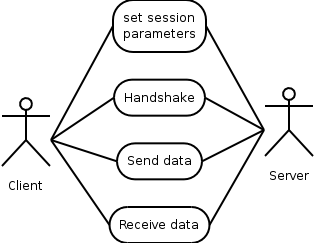This is being accomplished by the following object diagram. Note that since GnuTLS is being developed in C object are just structures with attributes. The operations listed are functions that require the first parameter to be that object. 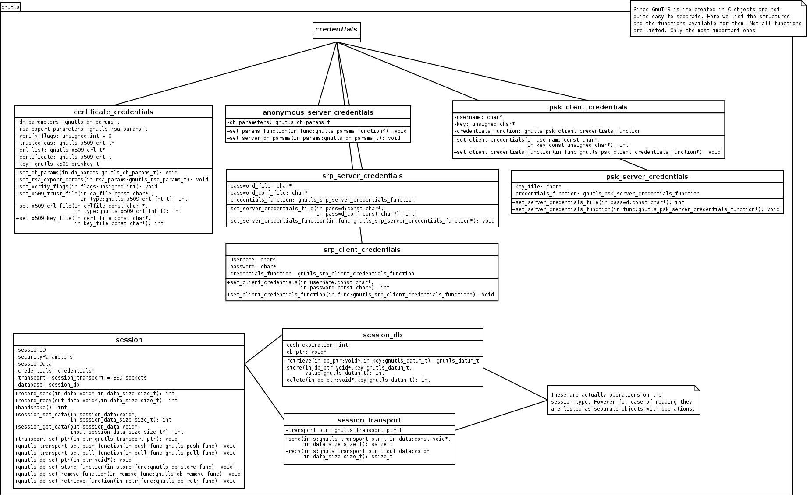
Next: TLS Authentication Methods, Previous: The TLS Protocol, Up: Internal architecture of GnuTLS [Contents][Index]
The GnuTLS handshake protocol is implemented as a state machine that waits for input or returns immediately when the non-blocking transport layer functions are used. The main idea is shown in the following figure.
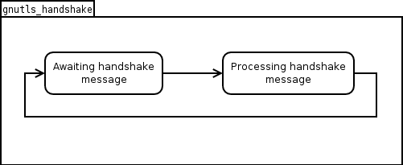Also the way the input is processed varies per ciphersuite. Several
implementations of the internal handlers are available and
gnutls_handshake only multiplexes the input to the appropriate
handler. For example a PSK ciphersuite has a different
implementation of the process_client_key_exchange than a
certificate ciphersuite.
Next: TLS Extension Handling, Previous: TLS Handshake Protocol, Up: Internal architecture of GnuTLS [Contents][Index]
In GnuTLS authentication methods can be implemented quite easily. Since the required changes to add a new authentication method affect only the handshake protocol, a simple interface is used. An authentication method needs only to implement the functions as seen in the figure below.
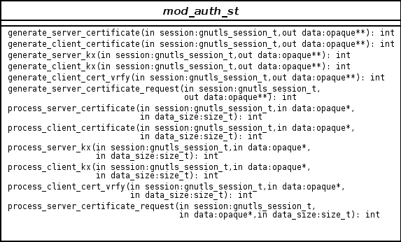The functions that need to be implemented are the ones responsible for
interpreting the handshake protocol messages. It is common for such
functions to read data from one or more credentials_t
structures20 and write data,
such as certificates, usernames etc. to auth_info_t structures.
Simple examples of existing authentication methods can be seen in
auth_psk.c for PSK ciphersuites and auth_srp.c for SRP
ciphersuites. After implementing these functions the structure holding
its pointers has to be registered in gnutls_algorithms.c in the
_gnutls_kx_algorithms structure.
Next: Certificate Handling, Previous: TLS Authentication Methods, Up: Internal architecture of GnuTLS [Contents][Index]
As with authentication methods, the TLS extensions handlers can be implemented using the following interface.
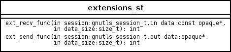Here there are two functions, one for receiving the extension data and one for sending. These functions have to check internally whether they operate in client or server side.
A simple example of an extension handler can be seen in
ext_srp.c After implementing these functions, together with the
extension number they handle, they have to be registered in
gnutls_extensions.c in the _gnutls_extensions structure.
Adding support for a new TLS extension is done from time to time, and
the process to do so is not difficult. Here are the steps you need to
follow if you wish to do this yourself. For sake of discussion, let’s
consider adding support for the hypothetical TLS extension
foobar.
configure option like --enable-foobar or --disable-foobar.
This step is useful when the extension code is large and it might be desirable to disable the extension under some circumstances. Otherwise it can be safely skipped.
Whether to chose enable or disable depends on whether you intend to make the extension be enabled by default. Look at existing checks (i.e., SRP, authz) for how to model the code. For example:
AC_MSG_CHECKING([whether to disable foobar support]) AC_ARG_ENABLE(foobar, AS_HELP_STRING([--disable-foobar], [disable foobar support]), ac_enable_foobar=no) if test x$ac_enable_foobar != xno; then AC_MSG_RESULT(no) AC_DEFINE(ENABLE_FOOBAR, 1, [enable foobar]) else ac_full=0 AC_MSG_RESULT(yes) fi AM_CONDITIONAL(ENABLE_FOOBAR, test "$ac_enable_foobar" != "no")
These lines should go in lib/m4/hooks.m4.
extensions_t in gnutls_int.h.
A good name for the value would be GNUTLS_EXTENSION_FOOBAR. Check with http://www.iana.org/assignments/tls-extensiontype-values for allocated values. For experiments, you could pick a number but remember that some consider it a bad idea to deploy such modified version since it will lead to interoperability problems in the future when the IANA allocates that number to someone else, or when the foobar protocol is allocated another number.
_gnutls_extensions in gnutls_extensions.c.
A typical entry would be:
int ret;
/* ...
*/
#if ENABLE_FOOBAR
ret = _gnutls_ext_register (&foobar_ext);
if (ret != GNUTLS_E_SUCCESS)
return ret;
#endif
Most likely you’ll need to add an #include "ext_foobar.h", that
will contain something like
like:
extension_entry_st foobar_ext = {
.name = "FOOBAR",
.type = GNUTLS_EXTENSION_FOOBAR,
.parse_type = GNUTLS_EXT_TLS,
.recv_func = _foobar_recv_params,
.send_func = _foobar_send_params,
.pack_func = _foobar_pack,
.unpack_func = _foobar_unpack,
.deinit_func = NULL
}
The GNUTLS_EXTENSION_FOOBAR is the integer value you added to
gnutls_int.h earlier. In this structure you specify the
functions to read the extension from the hello message, the function
to send the reply to, and two more functions to pack and unpack from
stored session data (e.g. when resumming a session). The deinit function
will be called to deinitialize the extension’s private parameters, if any.
Note that the conditional ENABLE_FOOBAR definition should only be
used if step 1 with the configure options has taken place.
ext_foobar.c and ext_foobar.h that implement the extension.
The functions you are responsible to add are those mentioned in the previous step. As a starter, you could add this:
int
_foobar_recv_params (gnutls_session_t session,
const opaque * data,
size_t data_size)
{
return 0;
}
int
_foobar_send_params (gnutls_session_t session,
opaque * data,
size_t _data_size)
{
return 0;
}
int
_foobar_pack (extension_priv_data_t epriv, gnutls_buffer_st * ps)
{
/* Append the extension's internal state to buffer */
return 0;
}
int
_foobar_unpack (gnutls_buffer_st * ps, extension_priv_data_t * epriv)
{
/* Read the internal state from buffer */
return 0;
}
The _foobar_recv_params function is responsible for
parsing incoming extension data (both in the client and server).
The _foobar_send_params function is responsible for
sending extension data (both in the client and server).
The _foobar_pack function is responsible for packing
internal extension data to save them in the session storage.
The _foobar_unpack function is responsible for
restoring session data from the session storage.
If you receive length fields that doesn’t match, return
GNUTLS_E_UNEXPECTED_PACKET_LENGTH. If you receive invalid
data, return GNUTLS_E_RECEIVED_ILLEGAL_PARAMETER. You can use
other error codes too. Return 0 on success.
The function could store some information in the session
variable for later usage. That can be done using the functions
_gnutls_ext_set_session_data and
_gnutls_ext_get_session_data. You can check simple examples
at ext_max_record.c and ext_server_name.c extensions.
Recall that both the client and server both send and receives parameters, and your code most likely will need to do different things depending on which mode it is in. It may be useful to make this distinction explicit in the code. Thus, for example, a better template than above would be:
int
_gnutls_foobar_recv_params (gnutls_session_t session,
const opaque * data,
size_t data_size)
{
if (session->security_parameters.entity == GNUTLS_CLIENT)
return foobar_recv_client (session, data, data_size);
else
return foobar_recv_server (session, data, data_size);
}
int
_gnutls_foobar_send_params (gnutls_session_t session,
opaque * data,
size_t data_size)
{
if (session->security_parameters.entity == GNUTLS_CLIENT)
return foobar_send_client (session, data, data_size);
else
return foobar_send_server (session, data, data_size);
}
The functions used would be declared as static functions, of
the appropriate prototype, in the same file.
When adding the files, you’ll need to add them to Makefile.am
as well, for example:
if ENABLE_FOOBAR COBJECTS += ext_foobar.c HFILES += ext_foobar.h endif
Normally the client will have one API to request use of the extension, and setting some extension specific data. The server will have one API to let the library know that it is willing to accept the extension, often this is implemented through a callback but it doesn’t have to.
The APIs need to be added to includes/gnutls/gnutls.h or
includes/gnutls/extra.h as appropriate. It is recommended that
if you don’t have a requirement to use the LGPLv2.1+ license for your
extension, that you place your work under the GPLv3+ license and thus
in the libgnutls-extra library.
You can implement the API function in the ext_foobar.c file, or
if that file ends up becoming rather larger, add a
gnutls_foobar.c file.
To make the API available in the shared library you need to add the
symbol in lib/libgnutls.map or
libextra/libgnutls-extra.map as appropriate, so that the symbol
is exported properly.
When writing GTK-DOC style documentation for your new APIs, don’t
forget to add Since: tags to indicate the GnuTLS version the
API was introduced in.
Next: Cryptographic Backend, Previous: TLS Extension Handling, Up: Internal architecture of GnuTLS [Contents][Index]
What is provided by the certificate handling functions is summarized in the following diagram.
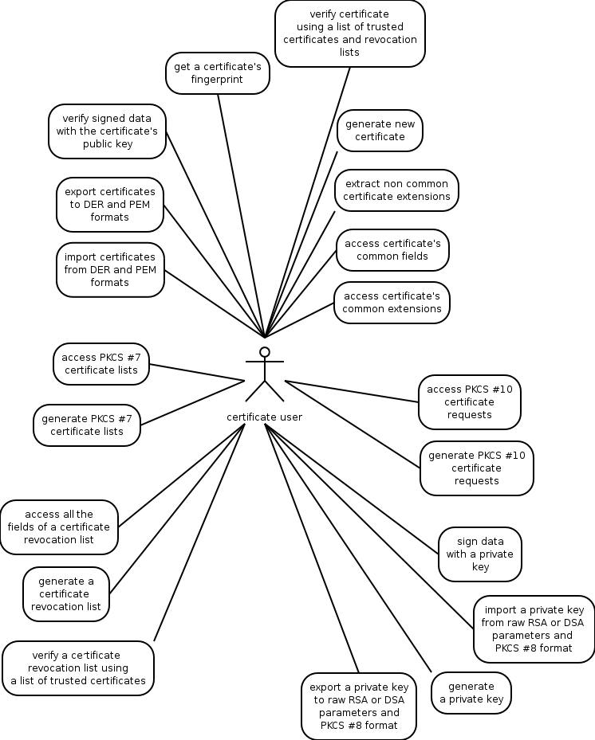Previous: Certificate Handling, Up: Internal architecture of GnuTLS [Contents][Index]
Today most new processors, either for embedded or desktop systems include either instructions intended to speed up cryptographic operations, or a co-processor with cryptographic capabilities. Taking advantage of those is a challenging task for every cryptographic application or library. Unfortunately the cryptographic libraries that GnuTLS is based on take no advantage of these properties. For this reason GnuTLS handles this internally by following a layered approach to accessing cryptographic operations as in the following figure.
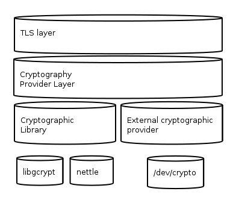The TLS layer uses a cryptographic provider layer, that will in turn either use the default crypto provider - a crypto library, or use an external crypto provider, if available.
The Cryptographic Library layer, can currently be used either with libgcrypt or libnettle, each of one has its advantages and some disadvantages. Libgcrypt is a self-contained library, pretty broad in scope that supports many algorithms. In some processors like VIA, it will also use the available crypto instruction set hence providing performance benefit comparing to plain software implementation. Libnettle provides only software implementation of the basic algorithms required in TLS, and is on average 30% faster that libgcrypt on almost all algorithms. For this reason libnettle is library used by default in GnuTLS.
Systems that include a cryptographic co-processor, typically come with
kernel drivers to utilize the operations from software. For this reason
GnuTLS provides a layer where each individual algorithm used can be replaced
by another implementation, i.e. the one provided by the driver. The
FreeBSD, OpenBSD and Linux kernels21 include already
a number of hardware assisted implementations, and also provide an interface
to access them, called /dev/crypto.
GnuTLS will take advantage of this interface if compiled with special
options. That is because in most systems where hardware-assisted
cryptographic operations are not available, using this interface might
actually reduce performance.
It is possible to override parts of crypto backend both at runtime and compile
time. Here we discuss the runtime possibility. The API
available for this functionality is in gnutls/crypto.h header
file.
When an optimized implementation of a single algorithm is available, say a hardware assisted version of AES-CBC then the following functions can be used to register those algorithms.
gnutls_crypto_single_digest_register2 To register a hash (digest) or MAC algorithm.
Those registration functions will only replace the specified algorithm and leave the rest of subsystem intact.
In some systems, such as embedded ones, it might be desirable to override big parts of the cryptographic backend, or even all of them. For this reason the following functions are provided.
If all of them are used then GnuTLS will no longer use libgcrypt.
Next: Bibliography, Previous: Internal architecture of GnuTLS, Up: Top [Contents][Index]
| • GNU Free Documentation License: | License for copying this manual. | |
| • GNU LGPL: | License for copying the core GnuTLS library. | |
| • GNU GPL: | License for copying GnuTLS-extra and tools. |
Next: GNU LGPL, Up: Copying Information [Contents][Index]
Copyright © 2000, 2001, 2002, 2007, 2008 Free Software Foundation, Inc. http://fsf.org/ Everyone is permitted to copy and distribute verbatim copies of this license document, but changing it is not allowed.
The purpose of this License is to make a manual, textbook, or other functional and useful document free in the sense of freedom: to assure everyone the effective freedom to copy and redistribute it, with or without modifying it, either commercially or noncommercially. Secondarily, this License preserves for the author and publisher a way to get credit for their work, while not being considered responsible for modifications made by others.
This License is a kind of “copyleft”, which means that derivative works of the document must themselves be free in the same sense. It complements the GNU General Public License, which is a copyleft license designed for free software.
We have designed this License in order to use it for manuals for free software, because free software needs free documentation: a free program should come with manuals providing the same freedoms that the software does. But this License is not limited to software manuals; it can be used for any textual work, regardless of subject matter or whether it is published as a printed book. We recommend this License principally for works whose purpose is instruction or reference.
This License applies to any manual or other work, in any medium, that contains a notice placed by the copyright holder saying it can be distributed under the terms of this License. Such a notice grants a world-wide, royalty-free license, unlimited in duration, to use that work under the conditions stated herein. The “Document”, below, refers to any such manual or work. Any member of the public is a licensee, and is addressed as “you”. You accept the license if you copy, modify or distribute the work in a way requiring permission under copyright law.
A “Modified Version” of the Document means any work containing the Document or a portion of it, either copied verbatim, or with modifications and/or translated into another language.
A “Secondary Section” is a named appendix or a front-matter section of the Document that deals exclusively with the relationship of the publishers or authors of the Document to the Document’s overall subject (or to related matters) and contains nothing that could fall directly within that overall subject. (Thus, if the Document is in part a textbook of mathematics, a Secondary Section may not explain any mathematics.) The relationship could be a matter of historical connection with the subject or with related matters, or of legal, commercial, philosophical, ethical or political position regarding them.
The “Invariant Sections” are certain Secondary Sections whose titles are designated, as being those of Invariant Sections, in the notice that says that the Document is released under this License. If a section does not fit the above definition of Secondary then it is not allowed to be designated as Invariant. The Document may contain zero Invariant Sections. If the Document does not identify any Invariant Sections then there are none.
The “Cover Texts” are certain short passages of text that are listed, as Front-Cover Texts or Back-Cover Texts, in the notice that says that the Document is released under this License. A Front-Cover Text may be at most 5 words, and a Back-Cover Text may be at most 25 words.
A “Transparent” copy of the Document means a machine-readable copy, represented in a format whose specification is available to the general public, that is suitable for revising the document straightforwardly with generic text editors or (for images composed of pixels) generic paint programs or (for drawings) some widely available drawing editor, and that is suitable for input to text formatters or for automatic translation to a variety of formats suitable for input to text formatters. A copy made in an otherwise Transparent file format whose markup, or absence of markup, has been arranged to thwart or discourage subsequent modification by readers is not Transparent. An image format is not Transparent if used for any substantial amount of text. A copy that is not “Transparent” is called “Opaque”.
Examples of suitable formats for Transparent copies include plain ASCII without markup, Texinfo input format, LaTeX input format, SGML or XML using a publicly available DTD, and standard-conforming simple HTML, PostScript or PDF designed for human modification. Examples of transparent image formats include PNG, XCF and JPG. Opaque formats include proprietary formats that can be read and edited only by proprietary word processors, SGML or XML for which the DTD and/or processing tools are not generally available, and the machine-generated HTML, PostScript or PDF produced by some word processors for output purposes only.
The “Title Page” means, for a printed book, the title page itself, plus such following pages as are needed to hold, legibly, the material this License requires to appear in the title page. For works in formats which do not have any title page as such, “Title Page” means the text near the most prominent appearance of the work’s title, preceding the beginning of the body of the text.
The “publisher” means any person or entity that distributes copies of the Document to the public.
A section “Entitled XYZ” means a named subunit of the Document whose title either is precisely XYZ or contains XYZ in parentheses following text that translates XYZ in another language. (Here XYZ stands for a specific section name mentioned below, such as “Acknowledgements”, “Dedications”, “Endorsements”, or “History”.) To “Preserve the Title” of such a section when you modify the Document means that it remains a section “Entitled XYZ” according to this definition.
The Document may include Warranty Disclaimers next to the notice which states that this License applies to the Document. These Warranty Disclaimers are considered to be included by reference in this License, but only as regards disclaiming warranties: any other implication that these Warranty Disclaimers may have is void and has no effect on the meaning of this License.
You may copy and distribute the Document in any medium, either commercially or noncommercially, provided that this License, the copyright notices, and the license notice saying this License applies to the Document are reproduced in all copies, and that you add no other conditions whatsoever to those of this License. You may not use technical measures to obstruct or control the reading or further copying of the copies you make or distribute. However, you may accept compensation in exchange for copies. If you distribute a large enough number of copies you must also follow the conditions in section 3.
You may also lend copies, under the same conditions stated above, and you may publicly display copies.
If you publish printed copies (or copies in media that commonly have printed covers) of the Document, numbering more than 100, and the Document’s license notice requires Cover Texts, you must enclose the copies in covers that carry, clearly and legibly, all these Cover Texts: Front-Cover Texts on the front cover, and Back-Cover Texts on the back cover. Both covers must also clearly and legibly identify you as the publisher of these copies. The front cover must present the full title with all words of the title equally prominent and visible. You may add other material on the covers in addition. Copying with changes limited to the covers, as long as they preserve the title of the Document and satisfy these conditions, can be treated as verbatim copying in other respects.
If the required texts for either cover are too voluminous to fit legibly, you should put the first ones listed (as many as fit reasonably) on the actual cover, and continue the rest onto adjacent pages.
If you publish or distribute Opaque copies of the Document numbering more than 100, you must either include a machine-readable Transparent copy along with each Opaque copy, or state in or with each Opaque copy a computer-network location from which the general network-using public has access to download using public-standard network protocols a complete Transparent copy of the Document, free of added material. If you use the latter option, you must take reasonably prudent steps, when you begin distribution of Opaque copies in quantity, to ensure that this Transparent copy will remain thus accessible at the stated location until at least one year after the last time you distribute an Opaque copy (directly or through your agents or retailers) of that edition to the public.
It is requested, but not required, that you contact the authors of the Document well before redistributing any large number of copies, to give them a chance to provide you with an updated version of the Document.
You may copy and distribute a Modified Version of the Document under the conditions of sections 2 and 3 above, provided that you release the Modified Version under precisely this License, with the Modified Version filling the role of the Document, thus licensing distribution and modification of the Modified Version to whoever possesses a copy of it. In addition, you must do these things in the Modified Version:
If the Modified Version includes new front-matter sections or appendices that qualify as Secondary Sections and contain no material copied from the Document, you may at your option designate some or all of these sections as invariant. To do this, add their titles to the list of Invariant Sections in the Modified Version’s license notice. These titles must be distinct from any other section titles.
You may add a section Entitled “Endorsements”, provided it contains nothing but endorsements of your Modified Version by various parties—for example, statements of peer review or that the text has been approved by an organization as the authoritative definition of a standard.
You may add a passage of up to five words as a Front-Cover Text, and a passage of up to 25 words as a Back-Cover Text, to the end of the list of Cover Texts in the Modified Version. Only one passage of Front-Cover Text and one of Back-Cover Text may be added by (or through arrangements made by) any one entity. If the Document already includes a cover text for the same cover, previously added by you or by arrangement made by the same entity you are acting on behalf of, you may not add another; but you may replace the old one, on explicit permission from the previous publisher that added the old one.
The author(s) and publisher(s) of the Document do not by this License give permission to use their names for publicity for or to assert or imply endorsement of any Modified Version.
You may combine the Document with other documents released under this License, under the terms defined in section 4 above for modified versions, provided that you include in the combination all of the Invariant Sections of all of the original documents, unmodified, and list them all as Invariant Sections of your combined work in its license notice, and that you preserve all their Warranty Disclaimers.
The combined work need only contain one copy of this License, and multiple identical Invariant Sections may be replaced with a single copy. If there are multiple Invariant Sections with the same name but different contents, make the title of each such section unique by adding at the end of it, in parentheses, the name of the original author or publisher of that section if known, or else a unique number. Make the same adjustment to the section titles in the list of Invariant Sections in the license notice of the combined work.
In the combination, you must combine any sections Entitled “History” in the various original documents, forming one section Entitled “History”; likewise combine any sections Entitled “Acknowledgements”, and any sections Entitled “Dedications”. You must delete all sections Entitled “Endorsements.”
You may make a collection consisting of the Document and other documents released under this License, and replace the individual copies of this License in the various documents with a single copy that is included in the collection, provided that you follow the rules of this License for verbatim copying of each of the documents in all other respects.
You may extract a single document from such a collection, and distribute it individually under this License, provided you insert a copy of this License into the extracted document, and follow this License in all other respects regarding verbatim copying of that document.
A compilation of the Document or its derivatives with other separate and independent documents or works, in or on a volume of a storage or distribution medium, is called an “aggregate” if the copyright resulting from the compilation is not used to limit the legal rights of the compilation’s users beyond what the individual works permit. When the Document is included in an aggregate, this License does not apply to the other works in the aggregate which are not themselves derivative works of the Document.
If the Cover Text requirement of section 3 is applicable to these copies of the Document, then if the Document is less than one half of the entire aggregate, the Document’s Cover Texts may be placed on covers that bracket the Document within the aggregate, or the electronic equivalent of covers if the Document is in electronic form. Otherwise they must appear on printed covers that bracket the whole aggregate.
Translation is considered a kind of modification, so you may distribute translations of the Document under the terms of section 4. Replacing Invariant Sections with translations requires special permission from their copyright holders, but you may include translations of some or all Invariant Sections in addition to the original versions of these Invariant Sections. You may include a translation of this License, and all the license notices in the Document, and any Warranty Disclaimers, provided that you also include the original English version of this License and the original versions of those notices and disclaimers. In case of a disagreement between the translation and the original version of this License or a notice or disclaimer, the original version will prevail.
If a section in the Document is Entitled “Acknowledgements”, “Dedications”, or “History”, the requirement (section 4) to Preserve its Title (section 1) will typically require changing the actual title.
You may not copy, modify, sublicense, or distribute the Document except as expressly provided under this License. Any attempt otherwise to copy, modify, sublicense, or distribute it is void, and will automatically terminate your rights under this License.
However, if you cease all violation of this License, then your license from a particular copyright holder is reinstated (a) provisionally, unless and until the copyright holder explicitly and finally terminates your license, and (b) permanently, if the copyright holder fails to notify you of the violation by some reasonable means prior to 60 days after the cessation.
Moreover, your license from a particular copyright holder is reinstated permanently if the copyright holder notifies you of the violation by some reasonable means, this is the first time you have received notice of violation of this License (for any work) from that copyright holder, and you cure the violation prior to 30 days after your receipt of the notice.
Termination of your rights under this section does not terminate the licenses of parties who have received copies or rights from you under this License. If your rights have been terminated and not permanently reinstated, receipt of a copy of some or all of the same material does not give you any rights to use it.
The Free Software Foundation may publish new, revised versions of the GNU Free Documentation License from time to time. Such new versions will be similar in spirit to the present version, but may differ in detail to address new problems or concerns. See http://www.gnu.org/copyleft/.
Each version of the License is given a distinguishing version number. If the Document specifies that a particular numbered version of this License “or any later version” applies to it, you have the option of following the terms and conditions either of that specified version or of any later version that has been published (not as a draft) by the Free Software Foundation. If the Document does not specify a version number of this License, you may choose any version ever published (not as a draft) by the Free Software Foundation. If the Document specifies that a proxy can decide which future versions of this License can be used, that proxy’s public statement of acceptance of a version permanently authorizes you to choose that version for the Document.
“Massive Multiauthor Collaboration Site” (or “MMC Site”) means any World Wide Web server that publishes copyrightable works and also provides prominent facilities for anybody to edit those works. A public wiki that anybody can edit is an example of such a server. A “Massive Multiauthor Collaboration” (or “MMC”) contained in the site means any set of copyrightable works thus published on the MMC site.
“CC-BY-SA” means the Creative Commons Attribution-Share Alike 3.0 license published by Creative Commons Corporation, a not-for-profit corporation with a principal place of business in San Francisco, California, as well as future copyleft versions of that license published by that same organization.
“Incorporate” means to publish or republish a Document, in whole or in part, as part of another Document.
An MMC is “eligible for relicensing” if it is licensed under this License, and if all works that were first published under this License somewhere other than this MMC, and subsequently incorporated in whole or in part into the MMC, (1) had no cover texts or invariant sections, and (2) were thus incorporated prior to November 1, 2008.
The operator of an MMC Site may republish an MMC contained in the site under CC-BY-SA on the same site at any time before August 1, 2009, provided the MMC is eligible for relicensing.
To use this License in a document you have written, include a copy of the License in the document and put the following copyright and license notices just after the title page:
Copyright (C) year your name. Permission is granted to copy, distribute and/or modify this document under the terms of the GNU Free Documentation License, Version 1.3 or any later version published by the Free Software Foundation; with no Invariant Sections, no Front-Cover Texts, and no Back-Cover Texts. A copy of the license is included in the section entitled ``GNU Free Documentation License''.
If you have Invariant Sections, Front-Cover Texts and Back-Cover Texts, replace the “with…Texts.” line with this:
with the Invariant Sections being list their titles, with
the Front-Cover Texts being list, and with the Back-Cover Texts
being list.
If you have Invariant Sections without Cover Texts, or some other combination of the three, merge those two alternatives to suit the situation.
If your document contains nontrivial examples of program code, we recommend releasing these examples in parallel under your choice of free software license, such as the GNU General Public License, to permit their use in free software.
Next: GNU GPL, Previous: GNU Free Documentation License, Up: Copying Information [Contents][Index]
Copyright © 1991, 1999 Free Software Foundation, Inc. 51 Franklin Street, Fifth Floor, Boston, MA 02110-1301, USA Everyone is permitted to copy and distribute verbatim copies of this license document, but changing it is not allowed. [This is the first released version of the Lesser GPL. It also counts as the successor of the GNU Library Public License, version 2, hence the version number 2.1.]
The licenses for most software are designed to take away your freedom to share and change it. By contrast, the GNU General Public Licenses are intended to guarantee your freedom to share and change free software—to make sure the software is free for all its users.
This license, the Lesser General Public License, applies to some specially designated software—typically libraries—of the Free Software Foundation and other authors who decide to use it. You can use it too, but we suggest you first think carefully about whether this license or the ordinary General Public License is the better strategy to use in any particular case, based on the explanations below.
When we speak of free software, we are referring to freedom of use, not price. Our General Public Licenses are designed to make sure that you have the freedom to distribute copies of free software (and charge for this service if you wish); that you receive source code or can get it if you want it; that you can change the software and use pieces of it in new free programs; and that you are informed that you can do these things.
To protect your rights, we need to make restrictions that forbid distributors to deny you these rights or to ask you to surrender these rights. These restrictions translate to certain responsibilities for you if you distribute copies of the library or if you modify it.
For example, if you distribute copies of the library, whether gratis or for a fee, you must give the recipients all the rights that we gave you. You must make sure that they, too, receive or can get the source code. If you link other code with the library, you must provide complete object files to the recipients, so that they can relink them with the library after making changes to the library and recompiling it. And you must show them these terms so they know their rights.
We protect your rights with a two-step method: (1) we copyright the library, and (2) we offer you this license, which gives you legal permission to copy, distribute and/or modify the library.
To protect each distributor, we want to make it very clear that there is no warranty for the free library. Also, if the library is modified by someone else and passed on, the recipients should know that what they have is not the original version, so that the original author’s reputation will not be affected by problems that might be introduced by others.
Finally, software patents pose a constant threat to the existence of any free program. We wish to make sure that a company cannot effectively restrict the users of a free program by obtaining a restrictive license from a patent holder. Therefore, we insist that any patent license obtained for a version of the library must be consistent with the full freedom of use specified in this license.
Most GNU software, including some libraries, is covered by the ordinary GNU General Public License. This license, the GNU Lesser General Public License, applies to certain designated libraries, and is quite different from the ordinary General Public License. We use this license for certain libraries in order to permit linking those libraries into non-free programs.
When a program is linked with a library, whether statically or using a shared library, the combination of the two is legally speaking a combined work, a derivative of the original library. The ordinary General Public License therefore permits such linking only if the entire combination fits its criteria of freedom. The Lesser General Public License permits more lax criteria for linking other code with the library.
We call this license the Lesser General Public License because it does Less to protect the user’s freedom than the ordinary General Public License. It also provides other free software developers Less of an advantage over competing non-free programs. These disadvantages are the reason we use the ordinary General Public License for many libraries. However, the Lesser license provides advantages in certain special circumstances.
For example, on rare occasions, there may be a special need to encourage the widest possible use of a certain library, so that it becomes a de-facto standard. To achieve this, non-free programs must be allowed to use the library. A more frequent case is that a free library does the same job as widely used non-free libraries. In this case, there is little to gain by limiting the free library to free software only, so we use the Lesser General Public License.
In other cases, permission to use a particular library in non-free programs enables a greater number of people to use a large body of free software. For example, permission to use the GNU C Library in non-free programs enables many more people to use the whole GNU operating system, as well as its variant, the GNU/Linux operating system.
Although the Lesser General Public License is Less protective of the users’ freedom, it does ensure that the user of a program that is linked with the Library has the freedom and the wherewithal to run that program using a modified version of the Library.
The precise terms and conditions for copying, distribution and modification follow. Pay close attention to the difference between a “work based on the library” and a “work that uses the library”. The former contains code derived from the library, whereas the latter must be combined with the library in order to run.
A “library” means a collection of software functions and/or data prepared so as to be conveniently linked with application programs (which use some of those functions and data) to form executables.
The “Library”, below, refers to any such software library or work which has been distributed under these terms. A “work based on the Library” means either the Library or any derivative work under copyright law: that is to say, a work containing the Library or a portion of it, either verbatim or with modifications and/or translated straightforwardly into another language. (Hereinafter, translation is included without limitation in the term “modification”.)
“Source code” for a work means the preferred form of the work for making modifications to it. For a library, complete source code means all the source code for all modules it contains, plus any associated interface definition files, plus the scripts used to control compilation and installation of the library.
Activities other than copying, distribution and modification are not covered by this License; they are outside its scope. The act of running a program using the Library is not restricted, and output from such a program is covered only if its contents constitute a work based on the Library (independent of the use of the Library in a tool for writing it). Whether that is true depends on what the Library does and what the program that uses the Library does.
You may charge a fee for the physical act of transferring a copy, and you may at your option offer warranty protection in exchange for a fee.
(For example, a function in a library to compute square roots has a purpose that is entirely well-defined independent of the application. Therefore, Subsection 2d requires that any application-supplied function or table used by this function must be optional: if the application does not supply it, the square root function must still compute square roots.)
These requirements apply to the modified work as a whole. If identifiable sections of that work are not derived from the Library, and can be reasonably considered independent and separate works in themselves, then this License, and its terms, do not apply to those sections when you distribute them as separate works. But when you distribute the same sections as part of a whole which is a work based on the Library, the distribution of the whole must be on the terms of this License, whose permissions for other licensees extend to the entire whole, and thus to each and every part regardless of who wrote it.
Thus, it is not the intent of this section to claim rights or contest your rights to work written entirely by you; rather, the intent is to exercise the right to control the distribution of derivative or collective works based on the Library.
In addition, mere aggregation of another work not based on the Library with the Library (or with a work based on the Library) on a volume of a storage or distribution medium does not bring the other work under the scope of this License.
Once this change is made in a given copy, it is irreversible for that copy, so the ordinary GNU General Public License applies to all subsequent copies and derivative works made from that copy.
This option is useful when you wish to copy part of the code of the Library into a program that is not a library.
If distribution of object code is made by offering access to copy from a designated place, then offering equivalent access to copy the source code from the same place satisfies the requirement to distribute the source code, even though third parties are not compelled to copy the source along with the object code.
However, linking a “work that uses the Library” with the Library creates an executable that is a derivative of the Library (because it contains portions of the Library), rather than a “work that uses the library”. The executable is therefore covered by this License. Section 6 states terms for distribution of such executables.
When a “work that uses the Library” uses material from a header file that is part of the Library, the object code for the work may be a derivative work of the Library even though the source code is not. Whether this is true is especially significant if the work can be linked without the Library, or if the work is itself a library. The threshold for this to be true is not precisely defined by law.
If such an object file uses only numerical parameters, data structure layouts and accessors, and small macros and small inline functions (ten lines or less in length), then the use of the object file is unrestricted, regardless of whether it is legally a derivative work. (Executables containing this object code plus portions of the Library will still fall under Section 6.)
Otherwise, if the work is a derivative of the Library, you may distribute the object code for the work under the terms of Section 6. Any executables containing that work also fall under Section 6, whether or not they are linked directly with the Library itself.
You must give prominent notice with each copy of the work that the Library is used in it and that the Library and its use are covered by this License. You must supply a copy of this License. If the work during execution displays copyright notices, you must include the copyright notice for the Library among them, as well as a reference directing the user to the copy of this License. Also, you must do one of these things:
For an executable, the required form of the “work that uses the Library” must include any data and utility programs needed for reproducing the executable from it. However, as a special exception, the materials to be distributed need not include anything that is normally distributed (in either source or binary form) with the major components (compiler, kernel, and so on) of the operating system on which the executable runs, unless that component itself accompanies the executable.
It may happen that this requirement contradicts the license restrictions of other proprietary libraries that do not normally accompany the operating system. Such a contradiction means you cannot use both them and the Library together in an executable that you distribute.
If any portion of this section is held invalid or unenforceable under any particular circumstance, the balance of the section is intended to apply, and the section as a whole is intended to apply in other circumstances.
It is not the purpose of this section to induce you to infringe any patents or other property right claims or to contest validity of any such claims; this section has the sole purpose of protecting the integrity of the free software distribution system which is implemented by public license practices. Many people have made generous contributions to the wide range of software distributed through that system in reliance on consistent application of that system; it is up to the author/donor to decide if he or she is willing to distribute software through any other system and a licensee cannot impose that choice.
This section is intended to make thoroughly clear what is believed to be a consequence of the rest of this License.
Each version is given a distinguishing version number. If the Library specifies a version number of this License which applies to it and “any later version”, you have the option of following the terms and conditions either of that version or of any later version published by the Free Software Foundation. If the Library does not specify a license version number, you may choose any version ever published by the Free Software Foundation.
If you develop a new library, and you want it to be of the greatest possible use to the public, we recommend making it free software that everyone can redistribute and change. You can do so by permitting redistribution under these terms (or, alternatively, under the terms of the ordinary General Public License).
To apply these terms, attach the following notices to the library. It is safest to attach them to the start of each source file to most effectively convey the exclusion of warranty; and each file should have at least the “copyright” line and a pointer to where the full notice is found.
one line to give the library's name and an idea of what it does. Copyright (C) year name of author This library is free software; you can redistribute it and/or modify it under the terms of the GNU Lesser General Public License as published by the Free Software Foundation; either version 2.1 of the License, or (at your option) any later version. This library is distributed in the hope that it will be useful, but WITHOUT ANY WARRANTY; without even the implied warranty of MERCHANTABILITY or FITNESS FOR A PARTICULAR PURPOSE. See the GNU Lesser General Public License for more details. You should have received a copy of the GNU Lesser General Public License along with this library; if not, write to the Free Software Foundation, Inc., 51 Franklin Street, Fifth Floor, Boston, MA 02110-1301, USA.
Also add information on how to contact you by electronic and paper mail.
You should also get your employer (if you work as a programmer) or your school, if any, to sign a “copyright disclaimer” for the library, if necessary. Here is a sample; alter the names:
Yoyodyne, Inc., hereby disclaims all copyright interest in the library `Frob' (a library for tweaking knobs) written by James Random Hacker. signature of Ty Coon, 1 April 1990 Ty Coon, President of Vice
That’s all there is to it!
Previous: GNU LGPL, Up: Copying Information [Contents][Index]
Copyright © 2007 Free Software Foundation, Inc. http://fsf.org/ Everyone is permitted to copy and distribute verbatim copies of this license document, but changing it is not allowed.
The GNU General Public License is a free, copyleft license for software and other kinds of works.
The licenses for most software and other practical works are designed to take away your freedom to share and change the works. By contrast, the GNU General Public License is intended to guarantee your freedom to share and change all versions of a program—to make sure it remains free software for all its users. We, the Free Software Foundation, use the GNU General Public License for most of our software; it applies also to any other work released this way by its authors. You can apply it to your programs, too.
When we speak of free software, we are referring to freedom, not price. Our General Public Licenses are designed to make sure that you have the freedom to distribute copies of free software (and charge for them if you wish), that you receive source code or can get it if you want it, that you can change the software or use pieces of it in new free programs, and that you know you can do these things.
To protect your rights, we need to prevent others from denying you these rights or asking you to surrender the rights. Therefore, you have certain responsibilities if you distribute copies of the software, or if you modify it: responsibilities to respect the freedom of others.
For example, if you distribute copies of such a program, whether gratis or for a fee, you must pass on to the recipients the same freedoms that you received. You must make sure that they, too, receive or can get the source code. And you must show them these terms so they know their rights.
Developers that use the GNU GPL protect your rights with two steps: (1) assert copyright on the software, and (2) offer you this License giving you legal permission to copy, distribute and/or modify it.
For the developers’ and authors’ protection, the GPL clearly explains that there is no warranty for this free software. For both users’ and authors’ sake, the GPL requires that modified versions be marked as changed, so that their problems will not be attributed erroneously to authors of previous versions.
Some devices are designed to deny users access to install or run modified versions of the software inside them, although the manufacturer can do so. This is fundamentally incompatible with the aim of protecting users’ freedom to change the software. The systematic pattern of such abuse occurs in the area of products for individuals to use, which is precisely where it is most unacceptable. Therefore, we have designed this version of the GPL to prohibit the practice for those products. If such problems arise substantially in other domains, we stand ready to extend this provision to those domains in future versions of the GPL, as needed to protect the freedom of users.
Finally, every program is threatened constantly by software patents. States should not allow patents to restrict development and use of software on general-purpose computers, but in those that do, we wish to avoid the special danger that patents applied to a free program could make it effectively proprietary. To prevent this, the GPL assures that patents cannot be used to render the program non-free.
The precise terms and conditions for copying, distribution and modification follow.
“This License” refers to version 3 of the GNU General Public License.
“Copyright” also means copyright-like laws that apply to other kinds of works, such as semiconductor masks.
“The Program” refers to any copyrightable work licensed under this License. Each licensee is addressed as “you”. “Licensees” and “recipients” may be individuals or organizations.
To “modify” a work means to copy from or adapt all or part of the work in a fashion requiring copyright permission, other than the making of an exact copy. The resulting work is called a “modified version” of the earlier work or a work “based on” the earlier work.
A “covered work” means either the unmodified Program or a work based on the Program.
To “propagate” a work means to do anything with it that, without permission, would make you directly or secondarily liable for infringement under applicable copyright law, except executing it on a computer or modifying a private copy. Propagation includes copying, distribution (with or without modification), making available to the public, and in some countries other activities as well.
To “convey” a work means any kind of propagation that enables other parties to make or receive copies. Mere interaction with a user through a computer network, with no transfer of a copy, is not conveying.
An interactive user interface displays “Appropriate Legal Notices” to the extent that it includes a convenient and prominently visible feature that (1) displays an appropriate copyright notice, and (2) tells the user that there is no warranty for the work (except to the extent that warranties are provided), that licensees may convey the work under this License, and how to view a copy of this License. If the interface presents a list of user commands or options, such as a menu, a prominent item in the list meets this criterion.
The “source code” for a work means the preferred form of the work for making modifications to it. “Object code” means any non-source form of a work.
A “Standard Interface” means an interface that either is an official standard defined by a recognized standards body, or, in the case of interfaces specified for a particular programming language, one that is widely used among developers working in that language.
The “System Libraries” of an executable work include anything, other than the work as a whole, that (a) is included in the normal form of packaging a Major Component, but which is not part of that Major Component, and (b) serves only to enable use of the work with that Major Component, or to implement a Standard Interface for which an implementation is available to the public in source code form. A “Major Component”, in this context, means a major essential component (kernel, window system, and so on) of the specific operating system (if any) on which the executable work runs, or a compiler used to produce the work, or an object code interpreter used to run it.
The “Corresponding Source” for a work in object code form means all the source code needed to generate, install, and (for an executable work) run the object code and to modify the work, including scripts to control those activities. However, it does not include the work’s System Libraries, or general-purpose tools or generally available free programs which are used unmodified in performing those activities but which are not part of the work. For example, Corresponding Source includes interface definition files associated with source files for the work, and the source code for shared libraries and dynamically linked subprograms that the work is specifically designed to require, such as by intimate data communication or control flow between those subprograms and other parts of the work.
The Corresponding Source need not include anything that users can regenerate automatically from other parts of the Corresponding Source.
The Corresponding Source for a work in source code form is that same work.
All rights granted under this License are granted for the term of copyright on the Program, and are irrevocable provided the stated conditions are met. This License explicitly affirms your unlimited permission to run the unmodified Program. The output from running a covered work is covered by this License only if the output, given its content, constitutes a covered work. This License acknowledges your rights of fair use or other equivalent, as provided by copyright law.
You may make, run and propagate covered works that you do not convey, without conditions so long as your license otherwise remains in force. You may convey covered works to others for the sole purpose of having them make modifications exclusively for you, or provide you with facilities for running those works, provided that you comply with the terms of this License in conveying all material for which you do not control copyright. Those thus making or running the covered works for you must do so exclusively on your behalf, under your direction and control, on terms that prohibit them from making any copies of your copyrighted material outside their relationship with you.
Conveying under any other circumstances is permitted solely under the conditions stated below. Sublicensing is not allowed; section 10 makes it unnecessary.
No covered work shall be deemed part of an effective technological measure under any applicable law fulfilling obligations under article 11 of the WIPO copyright treaty adopted on 20 December 1996, or similar laws prohibiting or restricting circumvention of such measures.
When you convey a covered work, you waive any legal power to forbid circumvention of technological measures to the extent such circumvention is effected by exercising rights under this License with respect to the covered work, and you disclaim any intention to limit operation or modification of the work as a means of enforcing, against the work’s users, your or third parties’ legal rights to forbid circumvention of technological measures.
You may convey verbatim copies of the Program’s source code as you receive it, in any medium, provided that you conspicuously and appropriately publish on each copy an appropriate copyright notice; keep intact all notices stating that this License and any non-permissive terms added in accord with section 7 apply to the code; keep intact all notices of the absence of any warranty; and give all recipients a copy of this License along with the Program.
You may charge any price or no price for each copy that you convey, and you may offer support or warranty protection for a fee.
You may convey a work based on the Program, or the modifications to produce it from the Program, in the form of source code under the terms of section 4, provided that you also meet all of these conditions:
A compilation of a covered work with other separate and independent works, which are not by their nature extensions of the covered work, and which are not combined with it such as to form a larger program, in or on a volume of a storage or distribution medium, is called an “aggregate” if the compilation and its resulting copyright are not used to limit the access or legal rights of the compilation’s users beyond what the individual works permit. Inclusion of a covered work in an aggregate does not cause this License to apply to the other parts of the aggregate.
You may convey a covered work in object code form under the terms of sections 4 and 5, provided that you also convey the machine-readable Corresponding Source under the terms of this License, in one of these ways:
A separable portion of the object code, whose source code is excluded from the Corresponding Source as a System Library, need not be included in conveying the object code work.
A “User Product” is either (1) a “consumer product”, which means any tangible personal property which is normally used for personal, family, or household purposes, or (2) anything designed or sold for incorporation into a dwelling. In determining whether a product is a consumer product, doubtful cases shall be resolved in favor of coverage. For a particular product received by a particular user, “normally used” refers to a typical or common use of that class of product, regardless of the status of the particular user or of the way in which the particular user actually uses, or expects or is expected to use, the product. A product is a consumer product regardless of whether the product has substantial commercial, industrial or non-consumer uses, unless such uses represent the only significant mode of use of the product.
“Installation Information” for a User Product means any methods, procedures, authorization keys, or other information required to install and execute modified versions of a covered work in that User Product from a modified version of its Corresponding Source. The information must suffice to ensure that the continued functioning of the modified object code is in no case prevented or interfered with solely because modification has been made.
If you convey an object code work under this section in, or with, or specifically for use in, a User Product, and the conveying occurs as part of a transaction in which the right of possession and use of the User Product is transferred to the recipient in perpetuity or for a fixed term (regardless of how the transaction is characterized), the Corresponding Source conveyed under this section must be accompanied by the Installation Information. But this requirement does not apply if neither you nor any third party retains the ability to install modified object code on the User Product (for example, the work has been installed in ROM).
The requirement to provide Installation Information does not include a requirement to continue to provide support service, warranty, or updates for a work that has been modified or installed by the recipient, or for the User Product in which it has been modified or installed. Access to a network may be denied when the modification itself materially and adversely affects the operation of the network or violates the rules and protocols for communication across the network.
Corresponding Source conveyed, and Installation Information provided, in accord with this section must be in a format that is publicly documented (and with an implementation available to the public in source code form), and must require no special password or key for unpacking, reading or copying.
“Additional permissions” are terms that supplement the terms of this License by making exceptions from one or more of its conditions. Additional permissions that are applicable to the entire Program shall be treated as though they were included in this License, to the extent that they are valid under applicable law. If additional permissions apply only to part of the Program, that part may be used separately under those permissions, but the entire Program remains governed by this License without regard to the additional permissions.
When you convey a copy of a covered work, you may at your option remove any additional permissions from that copy, or from any part of it. (Additional permissions may be written to require their own removal in certain cases when you modify the work.) You may place additional permissions on material, added by you to a covered work, for which you have or can give appropriate copyright permission.
Notwithstanding any other provision of this License, for material you add to a covered work, you may (if authorized by the copyright holders of that material) supplement the terms of this License with terms:
All other non-permissive additional terms are considered “further restrictions” within the meaning of section 10. If the Program as you received it, or any part of it, contains a notice stating that it is governed by this License along with a term that is a further restriction, you may remove that term. If a license document contains a further restriction but permits relicensing or conveying under this License, you may add to a covered work material governed by the terms of that license document, provided that the further restriction does not survive such relicensing or conveying.
If you add terms to a covered work in accord with this section, you must place, in the relevant source files, a statement of the additional terms that apply to those files, or a notice indicating where to find the applicable terms.
Additional terms, permissive or non-permissive, may be stated in the form of a separately written license, or stated as exceptions; the above requirements apply either way.
You may not propagate or modify a covered work except as expressly provided under this License. Any attempt otherwise to propagate or modify it is void, and will automatically terminate your rights under this License (including any patent licenses granted under the third paragraph of section 11).
However, if you cease all violation of this License, then your license from a particular copyright holder is reinstated (a) provisionally, unless and until the copyright holder explicitly and finally terminates your license, and (b) permanently, if the copyright holder fails to notify you of the violation by some reasonable means prior to 60 days after the cessation.
Moreover, your license from a particular copyright holder is reinstated permanently if the copyright holder notifies you of the violation by some reasonable means, this is the first time you have received notice of violation of this License (for any work) from that copyright holder, and you cure the violation prior to 30 days after your receipt of the notice.
Termination of your rights under this section does not terminate the licenses of parties who have received copies or rights from you under this License. If your rights have been terminated and not permanently reinstated, you do not qualify to receive new licenses for the same material under section 10.
You are not required to accept this License in order to receive or run a copy of the Program. Ancillary propagation of a covered work occurring solely as a consequence of using peer-to-peer transmission to receive a copy likewise does not require acceptance. However, nothing other than this License grants you permission to propagate or modify any covered work. These actions infringe copyright if you do not accept this License. Therefore, by modifying or propagating a covered work, you indicate your acceptance of this License to do so.
Each time you convey a covered work, the recipient automatically receives a license from the original licensors, to run, modify and propagate that work, subject to this License. You are not responsible for enforcing compliance by third parties with this License.
An “entity transaction” is a transaction transferring control of an organization, or substantially all assets of one, or subdividing an organization, or merging organizations. If propagation of a covered work results from an entity transaction, each party to that transaction who receives a copy of the work also receives whatever licenses to the work the party’s predecessor in interest had or could give under the previous paragraph, plus a right to possession of the Corresponding Source of the work from the predecessor in interest, if the predecessor has it or can get it with reasonable efforts.
You may not impose any further restrictions on the exercise of the rights granted or affirmed under this License. For example, you may not impose a license fee, royalty, or other charge for exercise of rights granted under this License, and you may not initiate litigation (including a cross-claim or counterclaim in a lawsuit) alleging that any patent claim is infringed by making, using, selling, offering for sale, or importing the Program or any portion of it.
A “contributor” is a copyright holder who authorizes use under this License of the Program or a work on which the Program is based. The work thus licensed is called the contributor’s “contributor version”.
A contributor’s “essential patent claims” are all patent claims owned or controlled by the contributor, whether already acquired or hereafter acquired, that would be infringed by some manner, permitted by this License, of making, using, or selling its contributor version, but do not include claims that would be infringed only as a consequence of further modification of the contributor version. For purposes of this definition, “control” includes the right to grant patent sublicenses in a manner consistent with the requirements of this License.
Each contributor grants you a non-exclusive, worldwide, royalty-free patent license under the contributor’s essential patent claims, to make, use, sell, offer for sale, import and otherwise run, modify and propagate the contents of its contributor version.
In the following three paragraphs, a “patent license” is any express agreement or commitment, however denominated, not to enforce a patent (such as an express permission to practice a patent or covenant not to sue for patent infringement). To “grant” such a patent license to a party means to make such an agreement or commitment not to enforce a patent against the party.
If you convey a covered work, knowingly relying on a patent license, and the Corresponding Source of the work is not available for anyone to copy, free of charge and under the terms of this License, through a publicly available network server or other readily accessible means, then you must either (1) cause the Corresponding Source to be so available, or (2) arrange to deprive yourself of the benefit of the patent license for this particular work, or (3) arrange, in a manner consistent with the requirements of this License, to extend the patent license to downstream recipients. “Knowingly relying” means you have actual knowledge that, but for the patent license, your conveying the covered work in a country, or your recipient’s use of the covered work in a country, would infringe one or more identifiable patents in that country that you have reason to believe are valid.
If, pursuant to or in connection with a single transaction or arrangement, you convey, or propagate by procuring conveyance of, a covered work, and grant a patent license to some of the parties receiving the covered work authorizing them to use, propagate, modify or convey a specific copy of the covered work, then the patent license you grant is automatically extended to all recipients of the covered work and works based on it.
A patent license is “discriminatory” if it does not include within the scope of its coverage, prohibits the exercise of, or is conditioned on the non-exercise of one or more of the rights that are specifically granted under this License. You may not convey a covered work if you are a party to an arrangement with a third party that is in the business of distributing software, under which you make payment to the third party based on the extent of your activity of conveying the work, and under which the third party grants, to any of the parties who would receive the covered work from you, a discriminatory patent license (a) in connection with copies of the covered work conveyed by you (or copies made from those copies), or (b) primarily for and in connection with specific products or compilations that contain the covered work, unless you entered into that arrangement, or that patent license was granted, prior to 28 March 2007.
Nothing in this License shall be construed as excluding or limiting any implied license or other defenses to infringement that may otherwise be available to you under applicable patent law.
If conditions are imposed on you (whether by court order, agreement or otherwise) that contradict the conditions of this License, they do not excuse you from the conditions of this License. If you cannot convey a covered work so as to satisfy simultaneously your obligations under this License and any other pertinent obligations, then as a consequence you may not convey it at all. For example, if you agree to terms that obligate you to collect a royalty for further conveying from those to whom you convey the Program, the only way you could satisfy both those terms and this License would be to refrain entirely from conveying the Program.
Notwithstanding any other provision of this License, you have permission to link or combine any covered work with a work licensed under version 3 of the GNU Affero General Public License into a single combined work, and to convey the resulting work. The terms of this License will continue to apply to the part which is the covered work, but the special requirements of the GNU Affero General Public License, section 13, concerning interaction through a network will apply to the combination as such.
The Free Software Foundation may publish revised and/or new versions of the GNU General Public License from time to time. Such new versions will be similar in spirit to the present version, but may differ in detail to address new problems or concerns.
Each version is given a distinguishing version number. If the Program specifies that a certain numbered version of the GNU General Public License “or any later version” applies to it, you have the option of following the terms and conditions either of that numbered version or of any later version published by the Free Software Foundation. If the Program does not specify a version number of the GNU General Public License, you may choose any version ever published by the Free Software Foundation.
If the Program specifies that a proxy can decide which future versions of the GNU General Public License can be used, that proxy’s public statement of acceptance of a version permanently authorizes you to choose that version for the Program.
Later license versions may give you additional or different permissions. However, no additional obligations are imposed on any author or copyright holder as a result of your choosing to follow a later version.
THERE IS NO WARRANTY FOR THE PROGRAM, TO THE EXTENT PERMITTED BY APPLICABLE LAW. EXCEPT WHEN OTHERWISE STATED IN WRITING THE COPYRIGHT HOLDERS AND/OR OTHER PARTIES PROVIDE THE PROGRAM “AS IS” WITHOUT WARRANTY OF ANY KIND, EITHER EXPRESSED OR IMPLIED, INCLUDING, BUT NOT LIMITED TO, THE IMPLIED WARRANTIES OF MERCHANTABILITY AND FITNESS FOR A PARTICULAR PURPOSE. THE ENTIRE RISK AS TO THE QUALITY AND PERFORMANCE OF THE PROGRAM IS WITH YOU. SHOULD THE PROGRAM PROVE DEFECTIVE, YOU ASSUME THE COST OF ALL NECESSARY SERVICING, REPAIR OR CORRECTION.
IN NO EVENT UNLESS REQUIRED BY APPLICABLE LAW OR AGREED TO IN WRITING WILL ANY COPYRIGHT HOLDER, OR ANY OTHER PARTY WHO MODIFIES AND/OR CONVEYS THE PROGRAM AS PERMITTED ABOVE, BE LIABLE TO YOU FOR DAMAGES, INCLUDING ANY GENERAL, SPECIAL, INCIDENTAL OR CONSEQUENTIAL DAMAGES ARISING OUT OF THE USE OR INABILITY TO USE THE PROGRAM (INCLUDING BUT NOT LIMITED TO LOSS OF DATA OR DATA BEING RENDERED INACCURATE OR LOSSES SUSTAINED BY YOU OR THIRD PARTIES OR A FAILURE OF THE PROGRAM TO OPERATE WITH ANY OTHER PROGRAMS), EVEN IF SUCH HOLDER OR OTHER PARTY HAS BEEN ADVISED OF THE POSSIBILITY OF SUCH DAMAGES.
If the disclaimer of warranty and limitation of liability provided above cannot be given local legal effect according to their terms, reviewing courts shall apply local law that most closely approximates an absolute waiver of all civil liability in connection with the Program, unless a warranty or assumption of liability accompanies a copy of the Program in return for a fee.
If you develop a new program, and you want it to be of the greatest possible use to the public, the best way to achieve this is to make it free software which everyone can redistribute and change under these terms.
To do so, attach the following notices to the program. It is safest to attach them to the start of each source file to most effectively state the exclusion of warranty; and each file should have at least the “copyright” line and a pointer to where the full notice is found.
one line to give the program's name and a brief idea of what it does. Copyright (C) year name of author This program is free software: you can redistribute it and/or modify it under the terms of the GNU General Public License as published by the Free Software Foundation, either version 3 of the License, or (at your option) any later version. This program is distributed in the hope that it will be useful, but WITHOUT ANY WARRANTY; without even the implied warranty of MERCHANTABILITY or FITNESS FOR A PARTICULAR PURPOSE. See the GNU General Public License for more details. You should have received a copy of the GNU General Public License along with this program. If not, see http://www.gnu.org/licenses/.
Also add information on how to contact you by electronic and paper mail.
If the program does terminal interaction, make it output a short notice like this when it starts in an interactive mode:
program Copyright (C) year name of author This program comes with ABSOLUTELY NO WARRANTY; for details type ‘show w’. This is free software, and you are welcome to redistribute it under certain conditions; type ‘show c’ for details.
The hypothetical commands ‘show w’ and ‘show c’ should show the appropriate parts of the General Public License. Of course, your program’s commands might be different; for a GUI interface, you would use an “about box”.
You should also get your employer (if you work as a programmer) or school, if any, to sign a “copyright disclaimer” for the program, if necessary. For more information on this, and how to apply and follow the GNU GPL, see http://www.gnu.org/licenses/.
The GNU General Public License does not permit incorporating your program into proprietary programs. If your program is a subroutine library, you may consider it more useful to permit linking proprietary applications with the library. If this is what you want to do, use the GNU Lesser General Public License instead of this License. But first, please read http://www.gnu.org/philosophy/why-not-lgpl.html.
Next: Function and Data Index, Previous: Copying Information, Up: Top [Contents][Index]
Bodo Moeller, "Security of CBC Ciphersuites in SSL/TLS: Problems and Countermeasures", 2002, available from http://www.openssl.org/~bodo/tls-cbc.txt.
Mike Ashley, "The GNU Privacy Handbook", 2002, available from http://www.gnupg.org/gph/en/manual.pdf.
Peter Gutmann, "Everything you never wanted to know about PKI but were forced to find out", Available from http://www.cs.auckland.ac.nz/~pgut001/.
NIST Special Publication 800-57, "Recommendation for Key Management - Part 1: General (Revised)", March 2007, available from http://csrc.nist.gov/publications/nistpubs/800-57/sp800-57-Part1-revised2_Mar08-2007.pdf.
Tim Dierks and Christopher Allen, "The TLS Protocol Version 1.0", January 1999, Available from http://www.ietf.org/rfc/rfc2246.txt.
Tim Dierks and Eric Rescorla, "The TLS Protocol Version 1.1", Match 2006, Available from http://www.ietf.org/rfc/rfc4346.txt.
Jon Callas, Lutz Donnerhacke, Hal Finney and Rodney Thayer, "OpenPGP Message Format", November 1998, Available from http://www.ietf.org/rfc/rfc2440.txt.
Jon Callas, Lutz Donnerhacke, Hal Finney, David Shaw and Rodney Thayer, "OpenPGP Message Format", November 2007, Available from http://www.ietf.org/rfc/rfc4880.txt.
J. Schaad, "Internet X.509 Public Key Infrastructure Certificate Request Message Format (CRMF)", September 2005, Available from http://www.ietf.org/rfc/rfc4211.txt.
Rohit Khare and Scott Lawrence, "Upgrading to TLS Within HTTP/1.1", May 2000, Available from http://www.ietf.org/rfc/rfc2817.txt
Eric Rescorla, "HTTP Over TLS", May 2000, Available from http://www.ietf/rfc/rfc2818.txt.
Tom Wu, "The SRP Authentication and Key Exchange System", September 2000, Available from http://www.ietf.org/rfc/rfc2945.txt.
Magnus Nystrom and Burt Kaliski, "PKCS 10 v1.7: Certification Request Syntax Specification", November 2000, Available from http://www.ietf.org/rfc/rfc2986.txt.
D. Cooper, S. Santesson, S. Farrel, S. Boeyen, R. Housley, W. Polk, "Internet X.509 Public Key Infrastructure Certificate and Certificate Revocation List (CRL) Profile", May 2008, available from http://www.ietf.org/rfc/rfc5280.txt.
Scott Hollenbeck, "Transport Layer Security Protocol Compression Methods", May 2004, available from http://www.ietf.org/rfc/rfc3749.txt.
Steven Tuecke, Von Welch, Doug Engert, Laura Pearlman, and Mary Thompson, "Internet X.509 Public Key Infrastructure (PKI) Proxy Certificate Profile", June 2004, available from http://www.ietf.org/rfc/rfc3820.
E. Rescorla, M. Ray, S. Dispensa, and N. Oskov, "Transport Layer Security (TLS) Renegotiation Indication Extension", February 2010, available from http://www.ietf.org/rfc/rfc5746.
Joseph Salowey, Hao Zhou, Pasi Eronen, Hannes Tschofenig, "Transport Layer Security (TLS) Session Resumption without Server-Side State", January 2008, available from http://www.ietf.org/rfc/rfc5077.
RSA Laboratories, "PKCS 12 v1.0: Personal Information Exchange Syntax", June 1999, Available from http://www.rsa.com.
RSA Laboratories, "PKCS #11 Base Functionality v2.30: Cryptoki â Draft 4", July 2009, Available from http://www.rsa.com.
Eric Rescorla, "SSL and TLS: Designing and Building Secure Systems", 2001
Arjen Lenstra and Eric Verheul, "Selecting Cryptographic Key Sizes", 2003, available from http://www.win.tue.nl/~klenstra/key.pdf.
Alan Freier, Philip Karlton and Paul Kocher, "The SSL Protocol Version 3.0", November 1996, Available from http://wp.netscape.com/eng/ssl3/draft302.txt.
Richard Stevens, "UNIX Network Programming, Volume 1", Prentice Hall PTR, January 1998
Simon Blake-Wilson, Magnus Nystrom, David Hopwood, Jan Mikkelsen and Tim Wright, "Transport Layer Security (TLS) Extensions", June 2003, Available from http://www.ietf.org/rfc/rfc3546.txt.
Nikos Mavrogiannopoulos, "Using OpenPGP keys for TLS authentication", January 2011. Available from http://www.ietf.org/rfc/rfc6091.txt.
David Taylor, Trevor Perrin, Tom Wu and Nikos Mavrogiannopoulos, "Using SRP for TLS Authentication", November 2007. Available from http://www.ietf.org/rfc/rfc5054.txt.
Pasi Eronen and Hannes Tschofenig, "Pre-shared key Ciphersuites for TLS", December 2005, Available from http://www.ietf.org/rfc/rfc4279.txt.
Tom Wu, "The Stanford SRP Authentication Project", Available at http://srp.stanford.edu/.
Arjen Lenstra and Xiaoyun Wang and Benne de Weger, "Colliding X.509 Certificates", Cryptology ePrint Archive, Report 2005/067, Available at http://eprint.iacr.org/.
European Network of Excellence in Cryptology II, "ECRYPT II Yearly Report on Algorithms and Keysizes (2009-2010)", Available at http://www.ecrypt.eu.org/documents/D.SPA.13.pdf.
N. Williams, "On the Use of Channel Bindings to Secure Channels", November 2007, available from http://www.ietf.org/rfc/rfc5056.
J. Altman, N. Williams, L. Zhu, "Channel Bindings for TLS", July 2010, available from http://www.ietf.org/rfc/rfc5929.
Next: Concept Index, Previous: Bibliography, Up: Top [Contents][Index]
| Jump to: | A B C D E G H I K M O P R S X |
|---|
| Jump to: | A B C D E G H I K M O P R S X |
|---|
Next: Function and Data Index, Previous: Function and Data Index, Up: Top [Contents][Index]
| Jump to: | A B C D E F G H I K L M N O P R S T V X |
|---|
| Jump to: | A B C D E F G H I K L M N O P R S T V X |
|---|
ftp://ftp.gnupg.org/gcrypt/alpha/gnutls/libtasn1/
ftp://ftp.gnupg.org/gcrypt/alpha/gnutls/opencdk/
ftp://ftp.gnupg.org/gcrypt/alpha/libgcrypt/
On current versions of GnuTLS it is possible to override the default crypto backend. Check see Cryptographic Backend for details
The first message in a TLS handshake
IETF, or Internet Engineering Task Force, is a large open international community of network designers, operators, vendors, and researchers concerned with the evolution of the Internet architecture and the smooth operation of the Internet. It is open to any interested individual.
AES, or Advanced Encryption Standard, is actually the RIJNDAEL algorithm. This is the algorithm that replaced DES.
ARCFOUR_128 is a compatible
algorithm with RSA’s RC4 algorithm, which is considered to be a trade
secret.
You should use gnutls_handshake_set_private_extensions to enable private extensions.
MAC stands for Message Authentication Code. It can be described as a keyed hash algorithm. See RFC2104.
To avoid collisions in order to specify a compression algorithm in this string you have to prefix it with "COMP-", protocol versions with "VERS-", signature algorithms with "SIGN-" and certificate types with "CTYPE-". All other algorithms don’t need a prefix.
It really depends on the group used. Primes with lesser bits are always faster, but also easier to break. Values less than 768 should not be used today
SRP is described in [RFC2945] (see Bibliography)
GnuTLS used to provide
gnutls_psk_netconf_derive_key which follows the algorithm
specified in draft-ietf-netconf-tls-02.txt. This method
is deprecated and might be removed in later versions of GnuTLS.
http://p11-glue.freedesktop.org/
See also the Server Name Indication extension on serverind.
See LDAP, IMAP etc.
in SRP authentication
such as the
gnutls_certificate_credentials_t structures
Check http://home.gna.org/cryptodev-linux/
for the Linux kernel implementation of /dev/crypto.